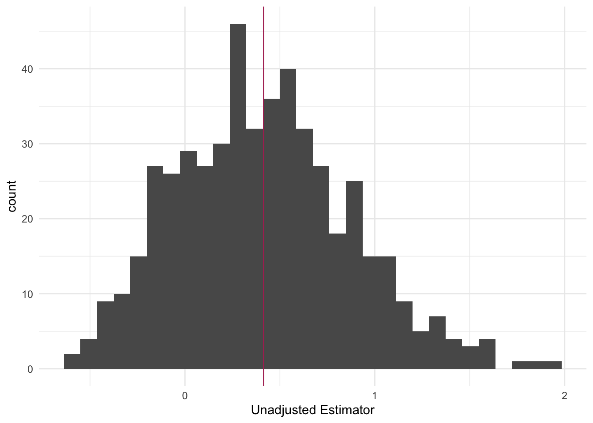
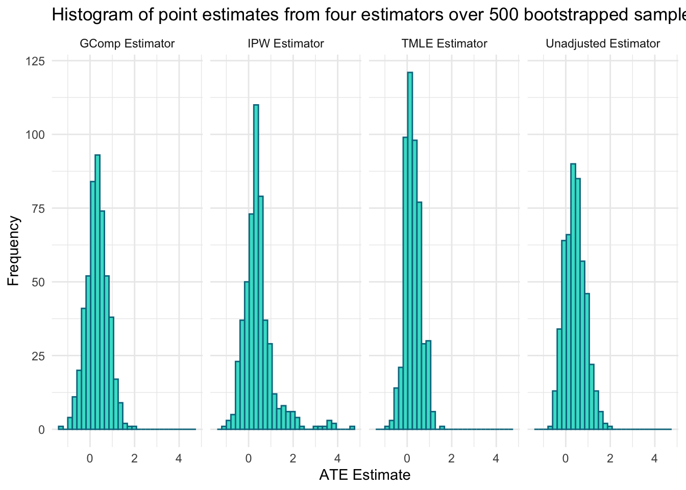
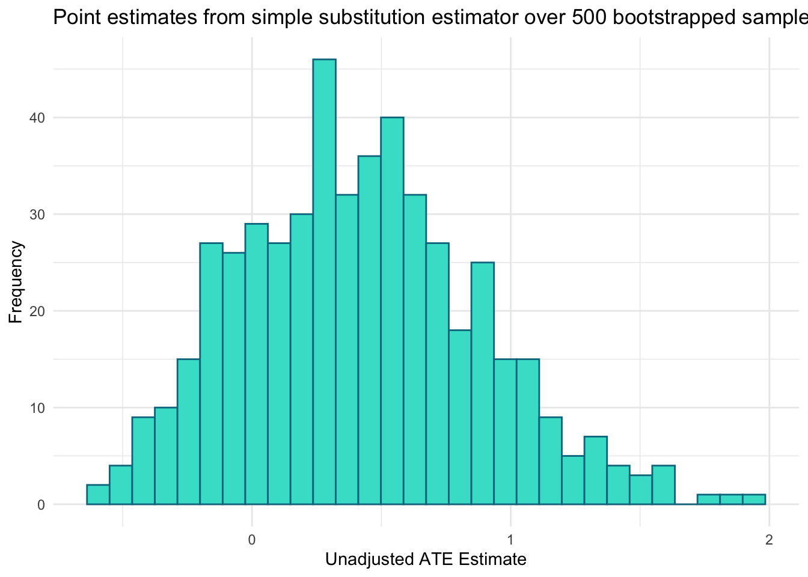
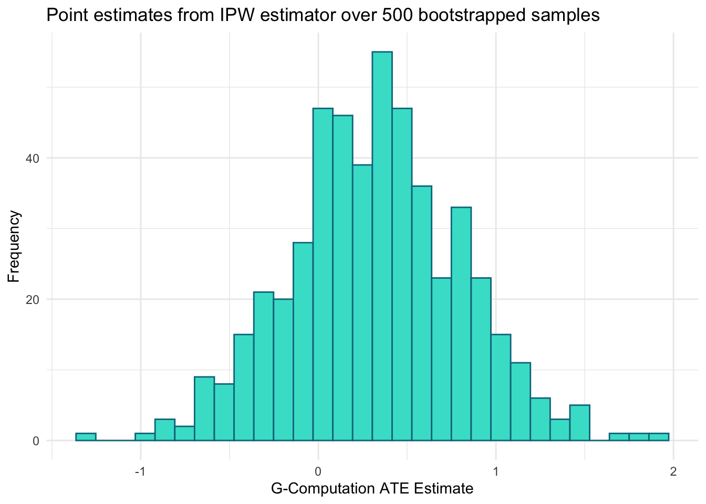
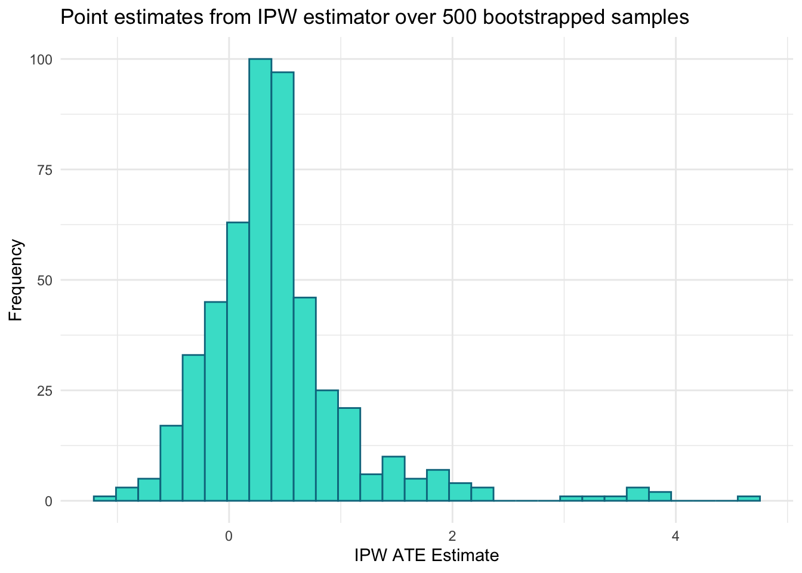
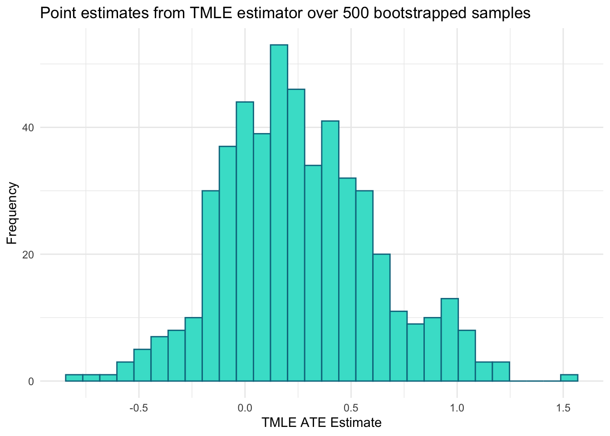

rm(list = ls()) #clear environment to make sure there are no overwriting errors
set.seed(252)252 Final Project Analysis
The purpose of this document is to compile all of our estimator methods and data (to avoid accidental conflicts/overwriting) and also include statistical inference for these methods. Each section will include the ATE for a particular estimator, as well as statistical inference for that ATE. The inference will be conducted via non-parametric bootstrapping.
To make the bootstrapping easier, I am turning each estimation process into a function that can then be applied repeatedly to our data (all functions assume data has already been cleaned to include variables A, Y, W1, etc).
Unadjusted Estimator
Estimator
Our unadjusted estimator is simply taking the expected difference in our outcome \(Y\) across our two exposure levels, \(A = 0,1\).
ATE_un <- function(dat){
ATE_unadj <- mean(dat$Y[dat$A == 1]) -
mean(dat$Y[dat$A == 0])
return(ATE_unadj)
}
ATE_un(model_df)[1] 0.4204447Our unadjusted ATE is 0.420. Specifically, the states with more permissive vaccine exemption policies had, on average, about 0.420 additional measles cases per 100,000 people or 4.2 additional measles cases per 10,000 people compared to states with stricter policies. This is a naive estimator, and we will now run the three techniques we learned in class.
Inference
B <- 500
unadj_boot_est <- data.frame(matrix(NA, nrow = B, ncol = 1))
for(b in 1:B){
n <- nrow(model_df)
index.boot <- sample(1:n, replace = T)
dt_boot <- model_df[index.boot,]
unadj_boot_est[b,] <- ATE_un(dat = dt_boot)
}
colnames(unadj_boot_est) <- "Unadjusted Estimator"
summary(unadj_boot_est$`Unadjusted Estimator`) Min. 1st Qu. Median Mean 3rd Qu. Max.
-0.59414 0.06946 0.38731 0.41437 0.69670 1.94054 var(unadj_boot_est$`Unadjusted Estimator`)[1] 0.2120667library(ggplot2)
unadj_boot_est %>%
ggplot(aes(x = `Unadjusted Estimator`)) +
geom_histogram() +
theme_minimal() +
geom_vline(xintercept = mean(unadj_boot_est$`Unadjusted Estimator`), color = "maroon")`stat_bin()` using `bins = 30`. Pick better value `binwidth`.
G-Computation
We will now perform G-Computation, both with and without using a super learner.
Simple G-Computation
g_comp_simp <- function(dat){
gcomp_mod <- lm(Y ~ A + W1 + W2 + W3 + W4 + W5, data = dat)
#defining potential outcomes
data_A1 <- dat
data_A1$A <- 1
data_A0 <- dat
data_A0$A <- 0
#predictions
Y1_pred <- predict(gcomp_mod, newdata = data_A1)
Y0_pred <- predict(gcomp_mod, newdata = data_A0)
ATE <- mean(Y1_pred - Y0_pred)
return(ATE)
}
g_comp_simp(model_df)[1] 0.4160642Our adjusted ATE via G-Comp is 0.416. Specifically, the states with more permissive vaccine exemption policies had, on average, about 0.416 additional measles cases per 100,000 people or 4.16 additional measles cases per 10,000 people compared to states with stricter policies. This estimate is very similar to the unadjusted ATE.
G-Computation With Super Learner
g_comp_sl <- function(dat, SL.library){
#creating datasets
X <- subset(dat, select = -Y)
X1 <- X0 <-X
X1$A <- 1
X0$A <- 0
#modeling
gcomp_mod_sl <- SuperLearner(Y = dat$Y,
X = X,
SL.library = SL.library,
cvControl = list(V = nrow(dat)),
family = "gaussian")
#potential outcomes
pred_y1 <- predict(gcomp_mod_sl, newdata = X1)$pred
pred_y0 <- predict(gcomp_mod_sl, newdata = X0)$pred
#ATE
ATE_SL <- mean(pred_y1 - pred_y0)
return(ATE_SL)
}
SL.library <- c( "SL.mean", "SL.glm", "SL.bayesglm", "SL.earth", "SL.gam")
g_comp_sl(model_df, SL.library)[1] 0.1549599Statistical Inference
(doing simple G-comp, since using a superlearner gave a really weird result)
B <- 500
gcomp_boot_est <- data.frame(matrix(NA, nrow = B, ncol = 1))
for(b in 1:B){
n <- nrow(model_df)
index.boot <- sample(1:n, replace = T)
dt_boot <- model_df[index.boot,]
gcomp_boot_est[b,] <- g_comp_simp(dat = dt_boot)
}
colnames(gcomp_boot_est) <- "GComp Estimator"
summary(gcomp_boot_est$`GComp Estimator`) Min. 1st Qu. Median Mean 3rd Qu. Max.
-1.30865 0.01992 0.33385 0.32255 0.63434 1.91718 var(gcomp_boot_est$`GComp Estimator`)[1] 0.2313701Inverse Probability Weighting
Simple IPW
IPW_simp <- function(dat){
propensity_score <- glm(A ~ W1 + W2 + W3 + W4 + W5, family = 'binomial', data = dat)
prob_exposed <- predict(propensity_score, type = 'response')
prob_unexposed <- 1 - prob_exposed
wt_exposed <- as.numeric(model_df$A == 1) / prob_exposed
wt_unexposed <- as.numeric(model_df$A == 0) / prob_unexposed
# evaluate the IPW estimand
ipw <- mean(wt_exposed*model_df$Y) - mean(wt_unexposed*model_df$Y)
ipw
# evaluate the stabilized IPW estimand
ipw_stabilized <- mean(wt_exposed*model_df$Y)/mean(wt_exposed) - mean(wt_unexposed*model_df$Y)/mean(wt_unexposed)
ipw_stabilized
ipws <- list(unstabilixed = ipw, stabilized = ipw_stabilized)
return(ipws)
}
IPW_simp(model_df)$unstabilixed
[1] 0.4004785
$stabilized
[1] 0.4247156IPW With Super Learner
IPW_sl <- function(dat, SL.library){
SL_propensity <- SuperLearner(
Y = dat$A,
X = subset(dat, select = -c(A,Y)),
SL.library = SL.library,
#cvControl = list(V=10, stratifyCV = TRUE),
family = binomial())
#predicted probabilities
prob_exposed <- SL_propensity$SL.predict
prob_unexposed <- 1 - prob_exposed
# look for positivity violations
# print(summary(prob_exposed))
# print(summary(prob_unexposed))
# create weights
wt_exposed <- as.numeric(model_df$A == 1) / prob_exposed
wt_unexposed <- as.numeric(model_df$A == 0) / prob_unexposed
# check weights
# print(summary(wt_exposed))
# print(summary(wt_unexposed))
ipw <- mean(wt_exposed*model_df$Y) - mean(wt_unexposed*model_df$Y)
ipw_stabilized <- mean(wt_exposed*model_df$Y)/mean(wt_exposed) - mean(wt_unexposed*model_df$Y)/mean(wt_unexposed)
ipws <- list(unstabilixed = ipw, stabilized = ipw_stabilized)
return(ipws)
}
IPW_sl(model_df, SL.library)Statistical Inference
For Simple IPW
B <- 500
ipw_simp_boot_est <- data.frame(matrix(NA, nrow = B, ncol = 1))
for(b in 1:B){
n <- nrow(model_df)
index.boot <- sample(1:n, replace = T)
dt_boot <- model_df[index.boot,]
ipw_simp_boot_est[b,] <- IPW_simp(dat = dt_boot)$stabilized
}
colnames(ipw_simp_boot_est) <- "IPW Estimator"
summary(ipw_simp_boot_est$`IPW Estimator`) Min. 1st Qu. Median Mean 3rd Qu. Max.
-1.11184 0.06252 0.34810 0.42913 0.61282 4.65366 var(ipw_simp_boot_est$`IPW Estimator`)[1] 0.4839888For Super Learner IPW
B <- 500
#had to majorly simplify the library:)
SL.library <- c( "SL.mean", "SL.glmnet")
ipw_boot_est <- data.frame(matrix(NA, nrow = B, ncol = 1))
for(b in 1:B){
n <- nrow(model_df)
index.boot <- sample(1:n, replace = T)
dt_boot <- model_df[index.boot,]
if (length(unique(dt_boot$A)) < 2) {
ipw_boot_est[b,] <- NA
next
}
#getting lots of warnings and model is not convering
ipw_boot_est[b,] <- tryCatch(
suppressWarnings(
IPW_sl(dat = dt_boot, SL.library = SL.library)$stabilized
),
error = function(e) NA
)
}
colnames(ipw_boot_est) <- "IPW Estimator"
summary(ipw_boot_est$`IPW Estimator`)
var(ipw_boot_est$`IPW Estimator`)TMLE
Estimator
# creating wrapper function for LOOCV
run_ltmle <- function(dat, W=NULL, A, Y, SL.library=NULL, verbose=F){
df <- dat[,c(W,A,Y)]
attr(SL.library, "return.fit") <- TRUE
out <- suppressWarnings(suppressMessages(
ltmle(data = df, Anodes = A, Ynodes = Y,
abar = list(1,0),
SL.library=SL.library,
SL.cvControl =list(V=nrow(dat)), #leave-one-out CV
variance.method='ic',
estimate.time=F)))
print('Summary of pscore')
print(summary(out$cum.g))
print(summary(out))
# print(out$fit) # provides the TMLE fits (including SL)
out
}tmle_1 <- run_ltmle(dat = model_df,
W = c("W1","W2","W3","W4","W5"),
A = "A",
Y = "Y",
SL.library=SL.library
)[1] "Summary of pscore"
Min. 1st Qu. Median Mean 3rd Qu. Max.
0.3333 0.3333 0.5000 0.5000 0.6667 0.6667
Estimator: tmle
Call:
ltmle(data = df, Anodes = A, Ynodes = Y, abar = list(1, 0), SL.library = SL.library,
SL.cvControl = list(V = nrow(dat)), estimate.time = F, variance.method = "ic")
Treatment Estimate:
Parameter Estimate: 1.0706
Estimated Std Err: 0.29989
p-value: 0.00080006
95% Conf Interval: (0.46822, 1.6729)
Control Estimate:
Parameter Estimate: 0.74027
Estimated Std Err: 0.24085
p-value: 0.0034213
95% Conf Interval: (0.2565, 1.224)
Additive Treatment Effect:
Parameter Estimate: 0.33031
Estimated Std Err: 0.33416
p-value: 0.32769
95% Conf Interval: (-0.34088, 1.0015) summary(tmle_1)$effect.measures$ATE$estimate[1] 0.3303065# get estimates & CIs
# treatment_est <- summary(tmle_1)$effect.measures$treatment$estimate
# control_est <- summary(tmle_1)$effect.measures$control$estimate
# control_ci_lower <- summary(tmle_1)$effect.measures$control$CI[1]
# control_ci_upper <- summary(tmle_1)$effect.measures$control$CI[2]
# treatment_ci_lower <- summary(tmle_1)$effect.measures$treatment$CI[1]
# treatment_ci_upper <- summary(tmle_1)$effect.measures$treatment$CI[2]Statistical Inference
B <- 500
SL.library <- c( "SL.mean", "SL.glm", "SL.bayesglm", "SL.earth", "SL.gam")
TMLE_boot_est <- data.frame(matrix(NA, nrow = B, ncol = 1))
for(b in 1:B){
n <- nrow(model_df)
index.boot <- sample(1:n, replace = T)
dt_boot <- model_df[index.boot,]
fit <- suppressWarnings(
run_ltmle(
dat = dt_boot,
W = c("W1","W2","W3","W4","W5"),
A = "A",
Y = "Y",
SL.library = SL.library
)
)
TMLE_boot_est[b,] <- summary(fit)$effect.measures$ATE$estimate
}[1] "Summary of pscore"
Min. 1st Qu. Median Mean 3rd Qu. Max.
0.02929 0.18967 0.50000 0.50000 0.81033 0.97071
Estimator: tmle
Call:
ltmle(data = df, Anodes = A, Ynodes = Y, abar = list(1, 0), SL.library = SL.library,
SL.cvControl = list(V = nrow(dat)), estimate.time = F, variance.method = "ic")
Treatment Estimate:
Parameter Estimate: 1.1617
Estimated Std Err: 0.1738
p-value: 1.8726e-08
95% Conf Interval: (0.81263, 1.5108)
Control Estimate:
Parameter Estimate: 0.49995
Estimated Std Err: 0.15095
p-value: 0.0017252
95% Conf Interval: (0.19677, 0.80314)
Additive Treatment Effect:
Parameter Estimate: 0.66176
Estimated Std Err: 0.15292
p-value: 7.2175e-05
95% Conf Interval: (0.35462, 0.9689)
[1] "Summary of pscore"
Min. 1st Qu. Median Mean 3rd Qu. Max.
0.0100 0.1685 0.5000 0.5002 0.8315 0.9999
Estimator: tmle
Call:
ltmle(data = df, Anodes = A, Ynodes = Y, abar = list(1, 0), SL.library = SL.library,
SL.cvControl = list(V = nrow(dat)), estimate.time = F, variance.method = "ic")
Treatment Estimate:
Parameter Estimate: 0.6832
Estimated Std Err: 0.14874
p-value: 2.9773e-05
95% Conf Interval: (0.38445, 0.98195)
Control Estimate:
Parameter Estimate: 0.76433
Estimated Std Err: 0.19209
p-value: 0.00022371
95% Conf Interval: (0.3785, 1.1502)
Additive Treatment Effect:
Parameter Estimate: -0.081132
Estimated Std Err: 0.10323
p-value: 0.43562
95% Conf Interval: (-0.28848, 0.12621)
[1] "Summary of pscore"
Min. 1st Qu. Median Mean 3rd Qu. Max.
0.01242 0.09933 0.50000 0.50000 0.90067 0.98758
Estimator: tmle
Call:
ltmle(data = df, Anodes = A, Ynodes = Y, abar = list(1, 0), SL.library = SL.library,
SL.cvControl = list(V = nrow(dat)), estimate.time = F, variance.method = "ic")
Treatment Estimate:
Parameter Estimate: 1.2734
Estimated Std Err: 0.22
p-value: 4.6635e-07
95% Conf Interval: (0.83151, 1.7153)
Control Estimate:
Parameter Estimate: 0.73282
Estimated Std Err: 0.19292
p-value: 0.00039546
95% Conf Interval: (0.34532, 1.1203)
Additive Treatment Effect:
Parameter Estimate: 0.54059
Estimated Std Err: 0.14227
p-value: 0.00039383
95% Conf Interval: (0.25484, 0.82634)
[1] "Summary of pscore"
Min. 1st Qu. Median Mean 3rd Qu. Max.
0.1058 0.2039 0.5000 0.5000 0.7961 0.8942
Estimator: tmle
Call:
ltmle(data = df, Anodes = A, Ynodes = Y, abar = list(1, 0), SL.library = SL.library,
SL.cvControl = list(V = nrow(dat)), estimate.time = F, variance.method = "ic")
Treatment Estimate:
Parameter Estimate: 1.2219
Estimated Std Err: 0.20789
p-value: 3.3885e-07
95% Conf Interval: (0.80436, 1.6395)
Control Estimate:
Parameter Estimate: 0.95664
Estimated Std Err: 0.26108
p-value: 0.00059975
95% Conf Interval: (0.43225, 1.481)
Additive Treatment Effect:
Parameter Estimate: 0.26529
Estimated Std Err: 0.19724
p-value: 0.18469
95% Conf Interval: (-0.13088, 0.66145)
[1] "Summary of pscore"
Min. 1st Qu. Median Mean 3rd Qu. Max.
0.2533 0.3120 0.5000 0.5000 0.6880 0.7467
Estimator: tmle
Call:
ltmle(data = df, Anodes = A, Ynodes = Y, abar = list(1, 0), SL.library = SL.library,
SL.cvControl = list(V = nrow(dat)), estimate.time = F, variance.method = "ic")
Treatment Estimate:
Parameter Estimate: 0.83165
Estimated Std Err: 0.27959
p-value: 0.0045083
95% Conf Interval: (0.27008, 1.3932)
Control Estimate:
Parameter Estimate: 0.54345
Estimated Std Err: 0.21578
p-value: 0.015031
95% Conf Interval: (0.11004, 0.97686)
Additive Treatment Effect:
Parameter Estimate: 0.2882
Estimated Std Err: 0.31352
p-value: 0.36238
95% Conf Interval: (-0.34152, 0.91793)
[1] "Summary of pscore"
Min. 1st Qu. Median Mean 3rd Qu. Max.
0.0512 0.1922 0.5000 0.5000 0.8078 0.9488
Estimator: tmle
Call:
ltmle(data = df, Anodes = A, Ynodes = Y, abar = list(1, 0), SL.library = SL.library,
SL.cvControl = list(V = nrow(dat)), estimate.time = F, variance.method = "ic")
Treatment Estimate:
Parameter Estimate: 1.6364
Estimated Std Err: 0.27937
p-value: 3.6414e-07
95% Conf Interval: (1.0753, 2.1975)
Control Estimate:
Parameter Estimate: 0.72513
Estimated Std Err: 0.21436
p-value: 0.0014016
95% Conf Interval: (0.29458, 1.1557)
Additive Treatment Effect:
Parameter Estimate: 0.91127
Estimated Std Err: 0.22483
p-value: 0.00017644
95% Conf Interval: (0.45969, 1.3629)
[1] "Summary of pscore"
Min. 1st Qu. Median Mean 3rd Qu. Max.
0.2087 0.4037 0.5000 0.5000 0.5963 0.7913
Estimator: tmle
Call:
ltmle(data = df, Anodes = A, Ynodes = Y, abar = list(1, 0), SL.library = SL.library,
SL.cvControl = list(V = nrow(dat)), estimate.time = F, variance.method = "ic")
Treatment Estimate:
Parameter Estimate: 0.71632
Estimated Std Err: 0.24827
p-value: 0.0057577
95% Conf Interval: (0.21766, 1.215)
Control Estimate:
Parameter Estimate: 0.35744
Estimated Std Err: 0.15018
p-value: 0.021162
95% Conf Interval: (0.055797, 0.65908)
Additive Treatment Effect:
Parameter Estimate: 0.35889
Estimated Std Err: 0.2836
p-value: 0.21158
95% Conf Interval: (-0.21075, 0.92852)
[1] "Summary of pscore"
Min. 1st Qu. Median Mean 3rd Qu. Max.
0.1222 0.2532 0.5000 0.5000 0.7468 0.8778
Estimator: tmle
Call:
ltmle(data = df, Anodes = A, Ynodes = Y, abar = list(1, 0), SL.library = SL.library,
SL.cvControl = list(V = nrow(dat)), estimate.time = F, variance.method = "ic")
Treatment Estimate:
Parameter Estimate: 1.1784
Estimated Std Err: 0.35136
p-value: 0.0015263
95% Conf Interval: (0.4727, 1.8842)
Control Estimate:
Parameter Estimate: 0.93659
Estimated Std Err: 0.23316
p-value: 0.00019811
95% Conf Interval: (0.46828, 1.4049)
Additive Treatment Effect:
Parameter Estimate: 0.24185
Estimated Std Err: 0.34542
p-value: 0.48707
95% Conf Interval: (-0.45194, 0.93564)
[1] "Summary of pscore"
Min. 1st Qu. Median Mean 3rd Qu. Max.
0.01000 0.06389 0.50000 0.50004 0.93611 0.99402
Estimator: tmle
Call:
ltmle(data = df, Anodes = A, Ynodes = Y, abar = list(1, 0), SL.library = SL.library,
SL.cvControl = list(V = nrow(dat)), estimate.time = F, variance.method = "ic")
Treatment Estimate:
Parameter Estimate: 1.0544
Estimated Std Err: 0.20988
p-value: 6.8499e-06
95% Conf Interval: (0.6328, 1.4759)
Control Estimate:
Parameter Estimate: 0.53124
Estimated Std Err: 0.18145
p-value: 0.0051271
95% Conf Interval: (0.16679, 0.89568)
Additive Treatment Effect:
Parameter Estimate: 0.52311
Estimated Std Err: 0.16078
p-value: 0.0020453
95% Conf Interval: (0.20019, 0.84604)
[1] "Summary of pscore"
Min. 1st Qu. Median Mean 3rd Qu. Max.
0.06258 0.20959 0.50000 0.50000 0.79041 0.93742
Estimator: tmle
Call:
ltmle(data = df, Anodes = A, Ynodes = Y, abar = list(1, 0), SL.library = SL.library,
SL.cvControl = list(V = nrow(dat)), estimate.time = F, variance.method = "ic")
Treatment Estimate:
Parameter Estimate: 1.4776
Estimated Std Err: 0.27097
p-value: 1.5285e-06
95% Conf Interval: (0.93337, 2.0219)
Control Estimate:
Parameter Estimate: 0.8656
Estimated Std Err: 0.23289
p-value: 0.00050989
95% Conf Interval: (0.39783, 1.3334)
Additive Treatment Effect:
Parameter Estimate: 0.61205
Estimated Std Err: 0.23495
p-value: 0.012068
95% Conf Interval: (0.14014, 1.084)
[1] "Summary of pscore"
Min. 1st Qu. Median Mean 3rd Qu. Max.
0.1529 0.2702 0.5000 0.5000 0.7298 0.8471
Estimator: tmle
Call:
ltmle(data = df, Anodes = A, Ynodes = Y, abar = list(1, 0), SL.library = SL.library,
SL.cvControl = list(V = nrow(dat)), estimate.time = F, variance.method = "ic")
Treatment Estimate:
Parameter Estimate: 0.72094
Estimated Std Err: 0.17825
p-value: 0.00018132
95% Conf Interval: (0.36292, 1.079)
Control Estimate:
Parameter Estimate: 0.51752
Estimated Std Err: 0.19705
p-value: 0.011426
95% Conf Interval: (0.12173, 0.91332)
Additive Treatment Effect:
Parameter Estimate: 0.20342
Estimated Std Err: 0.19697
p-value: 0.3067
95% Conf Interval: (-0.19221, 0.59905)
[1] "Summary of pscore"
Min. 1st Qu. Median Mean 3rd Qu. Max.
0.04037 0.04037 0.50000 0.50000 0.95963 0.95963
Estimator: tmle
Call:
ltmle(data = df, Anodes = A, Ynodes = Y, abar = list(1, 0), SL.library = SL.library,
SL.cvControl = list(V = nrow(dat)), estimate.time = F, variance.method = "ic")
Treatment Estimate:
Parameter Estimate: 0.91585
Estimated Std Err: 0.12588
p-value: 2.2236e-09
95% Conf Interval: (0.66302, 1.1687)
Control Estimate:
Parameter Estimate: 0.75646
Estimated Std Err: 0.18073
p-value: 0.00011498
95% Conf Interval: (0.39345, 1.1195)
Additive Treatment Effect:
Parameter Estimate: 0.15939
Estimated Std Err: 0.1446
p-value: 0.27561
95% Conf Interval: (-0.13105, 0.44982)
[1] "Summary of pscore"
Min. 1st Qu. Median Mean 3rd Qu. Max.
0.04763 0.15475 0.50000 0.50000 0.84525 0.95237
Estimator: tmle
Call:
ltmle(data = df, Anodes = A, Ynodes = Y, abar = list(1, 0), SL.library = SL.library,
SL.cvControl = list(V = nrow(dat)), estimate.time = F, variance.method = "ic")
Treatment Estimate:
Parameter Estimate: 1.3638
Estimated Std Err: 0.23503
p-value: 4.4283e-07
95% Conf Interval: (0.89171, 1.8358)
Control Estimate:
Parameter Estimate: 0.61176
Estimated Std Err: 0.17453
p-value: 0.00097312
95% Conf Interval: (0.26119, 0.96232)
Additive Treatment Effect:
Parameter Estimate: 0.75202
Estimated Std Err: 0.19457
p-value: 0.00032104
95% Conf Interval: (0.36121, 1.1428)
[1] "Summary of pscore"
Min. 1st Qu. Median Mean 3rd Qu. Max.
0.1189 0.1470 0.5000 0.5000 0.8530 0.8811
Estimator: tmle
Call:
ltmle(data = df, Anodes = A, Ynodes = Y, abar = list(1, 0), SL.library = SL.library,
SL.cvControl = list(V = nrow(dat)), estimate.time = F, variance.method = "ic")
Treatment Estimate:
Parameter Estimate: 1.2918
Estimated Std Err: 0.24002
p-value: 1.964e-06
95% Conf Interval: (0.80966, 1.7739)
Control Estimate:
Parameter Estimate: 1.1938
Estimated Std Err: 0.26505
p-value: 4.0191e-05
95% Conf Interval: (0.6614, 1.7262)
Additive Treatment Effect:
Parameter Estimate: 0.097975
Estimated Std Err: 0.11477
p-value: 0.39738
95% Conf Interval: (-0.13256, 0.32851)
[1] "Summary of pscore"
Min. 1st Qu. Median Mean 3rd Qu. Max.
0.0100 0.1072 0.5000 0.5000 0.8928 0.9944
Estimator: tmle
Call:
ltmle(data = df, Anodes = A, Ynodes = Y, abar = list(1, 0), SL.library = SL.library,
SL.cvControl = list(V = nrow(dat)), estimate.time = F, variance.method = "ic")
Treatment Estimate:
Parameter Estimate: 1.0707
Estimated Std Err: 0.19497
p-value: 1.3343e-06
95% Conf Interval: (0.67909, 1.4623)
Control Estimate:
Parameter Estimate: 0.53063
Estimated Std Err: 0.16437
p-value: 0.0022009
95% Conf Interval: (0.20049, 0.86076)
Additive Treatment Effect:
Parameter Estimate: 0.54007
Estimated Std Err: 0.1268
p-value: 9.0389e-05
95% Conf Interval: (0.28538, 0.79476)
[1] "Summary of pscore"
Min. 1st Qu. Median Mean 3rd Qu. Max.
0.08114 0.08114 0.50000 0.50000 0.91886 0.91886
Estimator: tmle
Call:
ltmle(data = df, Anodes = A, Ynodes = Y, abar = list(1, 0), SL.library = SL.library,
SL.cvControl = list(V = nrow(dat)), estimate.time = F, variance.method = "ic")
Treatment Estimate:
Parameter Estimate: 0.71907
Estimated Std Err: 0.17599
p-value: 0.00015878
95% Conf Interval: (0.36559, 1.0726)
Control Estimate:
Parameter Estimate: 0.71748
Estimated Std Err: 0.19031
p-value: 0.00043215
95% Conf Interval: (0.33523, 1.0997)
Additive Treatment Effect:
Parameter Estimate: 0.0015907
Estimated Std Err: 0.034627
p-value: 0.96354
95% Conf Interval: (-0.06796, 0.071141)
[1] "Summary of pscore"
Min. 1st Qu. Median Mean 3rd Qu. Max.
0.0100 0.1641 0.5000 0.5002 0.8359 0.9999
Estimator: tmle
Call:
ltmle(data = df, Anodes = A, Ynodes = Y, abar = list(1, 0), SL.library = SL.library,
SL.cvControl = list(V = nrow(dat)), estimate.time = F, variance.method = "ic")
Treatment Estimate:
Parameter Estimate: 1.2225
Estimated Std Err: 0.24452
p-value: 7.4404e-06
95% Conf Interval: (0.7314, 1.7137)
Control Estimate:
Parameter Estimate: 1.0486
Estimated Std Err: 0.25386
p-value: 0.00013745
95% Conf Interval: (0.53869, 1.5585)
Additive Treatment Effect:
Parameter Estimate: 0.17396
Estimated Std Err: 0.080514
p-value: 0.035547
95% Conf Interval: (0.012238, 0.33567)
[1] "Summary of pscore"
Min. 1st Qu. Median Mean 3rd Qu. Max.
0.03657 0.11849 0.50000 0.50000 0.88151 0.96343
Estimator: tmle
Call:
ltmle(data = df, Anodes = A, Ynodes = Y, abar = list(1, 0), SL.library = SL.library,
SL.cvControl = list(V = nrow(dat)), estimate.time = F, variance.method = "ic")
Treatment Estimate:
Parameter Estimate: 1.2817
Estimated Std Err: 0.2203
p-value: 4.1924e-07
95% Conf Interval: (0.83921, 1.7242)
Control Estimate:
Parameter Estimate: 1.3524
Estimated Std Err: 0.28802
p-value: 2.1086e-05
95% Conf Interval: (0.77388, 1.9309)
Additive Treatment Effect:
Parameter Estimate: -0.070703
Estimated Std Err: 0.14664
p-value: 0.6318
95% Conf Interval: (-0.36524, 0.22384)
[1] "Summary of pscore"
Min. 1st Qu. Median Mean 3rd Qu. Max.
0.3796 0.4726 0.5000 0.5000 0.5274 0.6204
Estimator: tmle
Call:
ltmle(data = df, Anodes = A, Ynodes = Y, abar = list(1, 0), SL.library = SL.library,
SL.cvControl = list(V = nrow(dat)), estimate.time = F, variance.method = "ic")
Treatment Estimate:
Parameter Estimate: 1.0104
Estimated Std Err: 0.22332
p-value: 3.7505e-05
95% Conf Interval: (0.56188, 1.459)
Control Estimate:
Parameter Estimate: 1.3728
Estimated Std Err: 0.30318
p-value: 3.7074e-05
95% Conf Interval: (0.76385, 1.9817)
Additive Treatment Effect:
Parameter Estimate: -0.36236
Estimated Std Err: 0.21591
p-value: 0.099535
95% Conf Interval: (-0.79603, 0.071314)
[1] "Summary of pscore"
Min. 1st Qu. Median Mean 3rd Qu. Max.
0.1110 0.2918 0.5000 0.5000 0.7082 0.8890
Estimator: tmle
Call:
ltmle(data = df, Anodes = A, Ynodes = Y, abar = list(1, 0), SL.library = SL.library,
SL.cvControl = list(V = nrow(dat)), estimate.time = F, variance.method = "ic")
Treatment Estimate:
Parameter Estimate: 1.1021
Estimated Std Err: 0.22101
p-value: 7.7826e-06
95% Conf Interval: (0.6582, 1.546)
Control Estimate:
Parameter Estimate: 1.2494
Estimated Std Err: 0.28543
p-value: 6.1244e-05
95% Conf Interval: (0.67613, 1.8227)
Additive Treatment Effect:
Parameter Estimate: -0.14732
Estimated Std Err: 0.22409
p-value: 0.51393
95% Conf Interval: (-0.59743, 0.30278)
[1] "Summary of pscore"
Min. 1st Qu. Median Mean 3rd Qu. Max.
0.0734 0.1565 0.5000 0.5000 0.8435 0.9266
Estimator: tmle
Call:
ltmle(data = df, Anodes = A, Ynodes = Y, abar = list(1, 0), SL.library = SL.library,
SL.cvControl = list(V = nrow(dat)), estimate.time = F, variance.method = "ic")
Treatment Estimate:
Parameter Estimate: 0.93036
Estimated Std Err: 0.16348
p-value: 6.59e-07
95% Conf Interval: (0.60199, 1.2587)
Control Estimate:
Parameter Estimate: 0.70078
Estimated Std Err: 0.19648
p-value: 0.00080777
95% Conf Interval: (0.30614, 1.0954)
Additive Treatment Effect:
Parameter Estimate: 0.22958
Estimated Std Err: 0.1694
p-value: 0.18142
95% Conf Interval: (-0.11066, 0.56982)
[1] "Summary of pscore"
Min. 1st Qu. Median Mean 3rd Qu. Max.
0.04665 0.05864 0.50000 0.50000 0.94136 0.95335
Estimator: tmle
Call:
ltmle(data = df, Anodes = A, Ynodes = Y, abar = list(1, 0), SL.library = SL.library,
SL.cvControl = list(V = nrow(dat)), estimate.time = F, variance.method = "ic")
Treatment Estimate:
Parameter Estimate: 0.83946
Estimated Std Err: 0.14328
p-value: 3.6247e-07
95% Conf Interval: (0.55167, 1.1272)
Control Estimate:
Parameter Estimate: 0.98488
Estimated Std Err: 0.18642
p-value: 2.7771e-06
95% Conf Interval: (0.61044, 1.3593)
Additive Treatment Effect:
Parameter Estimate: -0.14542
Estimated Std Err: 0.14179
p-value: 0.31004
95% Conf Interval: (-0.43022, 0.13938)
[1] "Summary of pscore"
Min. 1st Qu. Median Mean 3rd Qu. Max.
0.02661 0.24785 0.50000 0.50000 0.75215 0.97339
Estimator: tmle
Call:
ltmle(data = df, Anodes = A, Ynodes = Y, abar = list(1, 0), SL.library = SL.library,
SL.cvControl = list(V = nrow(dat)), estimate.time = F, variance.method = "ic")
Treatment Estimate:
Parameter Estimate: 1.2947
Estimated Std Err: 0.23071
p-value: 8.7209e-07
95% Conf Interval: (0.8313, 1.7581)
Control Estimate:
Parameter Estimate: 0.72959
Estimated Std Err: 0.24336
p-value: 0.0042253
95% Conf Interval: (0.24079, 1.2184)
Additive Treatment Effect:
Parameter Estimate: 0.5651
Estimated Std Err: 0.23985
p-value: 0.022432
95% Conf Interval: (0.083343, 1.0469)
[1] "Summary of pscore"
Min. 1st Qu. Median Mean 3rd Qu. Max.
0.02565 0.17447 0.50000 0.50000 0.82553 0.97435
Estimator: tmle
Call:
ltmle(data = df, Anodes = A, Ynodes = Y, abar = list(1, 0), SL.library = SL.library,
SL.cvControl = list(V = nrow(dat)), estimate.time = F, variance.method = "ic")
Treatment Estimate:
Parameter Estimate: 1.6798
Estimated Std Err: 0.22307
p-value: 8.9052e-10
95% Conf Interval: (1.2318, 2.1279)
Control Estimate:
Parameter Estimate: 0.76619
Estimated Std Err: 0.20049
p-value: 0.00036802
95% Conf Interval: (0.36349, 1.1689)
Additive Treatment Effect:
Parameter Estimate: 0.91365
Estimated Std Err: 0.18397
p-value: 8.3499e-06
95% Conf Interval: (0.54413, 1.2832)
[1] "Summary of pscore"
Min. 1st Qu. Median Mean 3rd Qu. Max.
0.0100 0.2032 0.5000 0.5002 0.7968 0.9964
Estimator: tmle
Call:
ltmle(data = df, Anodes = A, Ynodes = Y, abar = list(1, 0), SL.library = SL.library,
SL.cvControl = list(V = nrow(dat)), estimate.time = F, variance.method = "ic")
Treatment Estimate:
Parameter Estimate: 0.93513
Estimated Std Err: 0.20975
p-value: 4.6807e-05
95% Conf Interval: (0.51383, 1.3564)
Control Estimate:
Parameter Estimate: 1.0857
Estimated Std Err: 0.23492
p-value: 2.7067e-05
95% Conf Interval: (0.61386, 1.5576)
Additive Treatment Effect:
Parameter Estimate: -0.15058
Estimated Std Err: 0.18838
p-value: 0.42787
95% Conf Interval: (-0.52894, 0.22779)
[1] "Summary of pscore"
Min. 1st Qu. Median Mean 3rd Qu. Max.
0.01159 0.03851 0.50000 0.50000 0.96149 0.98841
Estimator: tmle
Call:
ltmle(data = df, Anodes = A, Ynodes = Y, abar = list(1, 0), SL.library = SL.library,
SL.cvControl = list(V = nrow(dat)), estimate.time = F, variance.method = "ic")
Treatment Estimate:
Parameter Estimate: 1.0863
Estimated Std Err: 0.23323
p-value: 2.3964e-05
95% Conf Interval: (0.61785, 1.5548)
Control Estimate:
Parameter Estimate: 0.91211
Estimated Std Err: 0.23307
p-value: 0.00027556
95% Conf Interval: (0.44397, 1.3803)
Additive Treatment Effect:
Parameter Estimate: 0.1742
Estimated Std Err: 0.059307
p-value: 0.0049968
95% Conf Interval: (0.055075, 0.29332)
[1] "Summary of pscore"
Min. 1st Qu. Median Mean 3rd Qu. Max.
0.07319 0.19850 0.50000 0.50000 0.80150 0.92681
Estimator: tmle
Call:
ltmle(data = df, Anodes = A, Ynodes = Y, abar = list(1, 0), SL.library = SL.library,
SL.cvControl = list(V = nrow(dat)), estimate.time = F, variance.method = "ic")
Treatment Estimate:
Parameter Estimate: 1.5138
Estimated Std Err: 0.26723
p-value: 7.2345e-07
95% Conf Interval: (0.97701, 2.0505)
Control Estimate:
Parameter Estimate: 1.0392
Estimated Std Err: 0.24522
p-value: 9.6908e-05
95% Conf Interval: (0.54668, 1.5317)
Additive Treatment Effect:
Parameter Estimate: 0.47455
Estimated Std Err: 0.23025
p-value: 0.044517
95% Conf Interval: (0.012088, 0.93702)
[1] "Summary of pscore"
Min. 1st Qu. Median Mean 3rd Qu. Max.
0.04277 0.09601 0.50000 0.50000 0.90399 0.95723
Estimator: tmle
Call:
ltmle(data = df, Anodes = A, Ynodes = Y, abar = list(1, 0), SL.library = SL.library,
SL.cvControl = list(V = nrow(dat)), estimate.time = F, variance.method = "ic")
Treatment Estimate:
Parameter Estimate: 0.97823
Estimated Std Err: 0.24654
p-value: 0.00023185
95% Conf Interval: (0.48303, 1.4734)
Control Estimate:
Parameter Estimate: 1.0837
Estimated Std Err: 0.22273
p-value: 1.1793e-05
95% Conf Interval: (0.63639, 1.5311)
Additive Treatment Effect:
Parameter Estimate: -0.10552
Estimated Std Err: 0.13961
p-value: 0.45332
95% Conf Interval: (-0.38593, 0.1749)
[1] "Summary of pscore"
Min. 1st Qu. Median Mean 3rd Qu. Max.
0.1069 0.1735 0.5000 0.5000 0.8265 0.8931
Estimator: tmle
Call:
ltmle(data = df, Anodes = A, Ynodes = Y, abar = list(1, 0), SL.library = SL.library,
SL.cvControl = list(V = nrow(dat)), estimate.time = F, variance.method = "ic")
Treatment Estimate:
Parameter Estimate: 1.4672
Estimated Std Err: 0.25186
p-value: 4.0816e-07
95% Conf Interval: (0.96132, 1.9731)
Control Estimate:
Parameter Estimate: 0.86811
Estimated Std Err: 0.23886
p-value: 0.00065702
95% Conf Interval: (0.38835, 1.3479)
Additive Treatment Effect:
Parameter Estimate: 0.59908
Estimated Std Err: 0.12818
p-value: 2.2693e-05
95% Conf Interval: (0.34162, 0.85653)
[1] "Summary of pscore"
Min. 1st Qu. Median Mean 3rd Qu. Max.
0.0195 0.1029 0.5000 0.5000 0.8971 0.9805
Estimator: tmle
Call:
ltmle(data = df, Anodes = A, Ynodes = Y, abar = list(1, 0), SL.library = SL.library,
SL.cvControl = list(V = nrow(dat)), estimate.time = F, variance.method = "ic")
Treatment Estimate:
Parameter Estimate: 1.1183
Estimated Std Err: 0.19552
p-value: 5.9492e-07
95% Conf Interval: (0.72559, 1.511)
Control Estimate:
Parameter Estimate: 0.6814
Estimated Std Err: 0.15593
p-value: 6.2785e-05
95% Conf Interval: (0.3682, 0.99459)
Additive Treatment Effect:
Parameter Estimate: 0.43691
Estimated Std Err: 0.13302
p-value: 0.0018694
95% Conf Interval: (0.16974, 0.70408)
[1] "Summary of pscore"
Min. 1st Qu. Median Mean 3rd Qu. Max.
0.0100 0.2234 0.5000 0.5001 0.7766 0.9997
Estimator: tmle
Call:
ltmle(data = df, Anodes = A, Ynodes = Y, abar = list(1, 0), SL.library = SL.library,
SL.cvControl = list(V = nrow(dat)), estimate.time = F, variance.method = "ic")
Treatment Estimate:
Parameter Estimate: 1.2129
Estimated Std Err: 0.25149
p-value: 1.3658e-05
95% Conf Interval: (0.70778, 1.718)
Control Estimate:
Parameter Estimate: 0.58115
Estimated Std Err: 0.17585
p-value: 0.0017627
95% Conf Interval: (0.22794, 0.93436)
Additive Treatment Effect:
Parameter Estimate: 0.63175
Estimated Std Err: 0.22573
p-value: 0.0072692
95% Conf Interval: (0.17836, 1.0851)
[1] "Summary of pscore"
Min. 1st Qu. Median Mean 3rd Qu. Max.
0.01153 0.07039 0.50000 0.50000 0.92961 0.98847
Estimator: tmle
Call:
ltmle(data = df, Anodes = A, Ynodes = Y, abar = list(1, 0), SL.library = SL.library,
SL.cvControl = list(V = nrow(dat)), estimate.time = F, variance.method = "ic")
Treatment Estimate:
Parameter Estimate: 0.86165
Estimated Std Err: 0.16425
p-value: 3.161e-06
95% Conf Interval: (0.53175, 1.1916)
Control Estimate:
Parameter Estimate: 0.97379
Estimated Std Err: 0.22868
p-value: 9.0633e-05
95% Conf Interval: (0.51448, 1.4331)
Additive Treatment Effect:
Parameter Estimate: -0.11214
Estimated Std Err: 0.12967
p-value: 0.39126
95% Conf Interval: (-0.37258, 0.1483)
[1] "Summary of pscore"
Min. 1st Qu. Median Mean 3rd Qu. Max.
0.1011 0.1775 0.5000 0.5000 0.8225 0.8989
Estimator: tmle
Call:
ltmle(data = df, Anodes = A, Ynodes = Y, abar = list(1, 0), SL.library = SL.library,
SL.cvControl = list(V = nrow(dat)), estimate.time = F, variance.method = "ic")
Treatment Estimate:
Parameter Estimate: 0.95623
Estimated Std Err: 0.17443
p-value: 1.3798e-06
95% Conf Interval: (0.60588, 1.3066)
Control Estimate:
Parameter Estimate: 0.69231
Estimated Std Err: 0.20319
p-value: 0.0013035
95% Conf Interval: (0.2842, 1.1004)
Additive Treatment Effect:
Parameter Estimate: 0.26392
Estimated Std Err: 0.17453
p-value: 0.13678
95% Conf Interval: (-0.086633, 0.61447)
[1] "Summary of pscore"
Min. 1st Qu. Median Mean 3rd Qu. Max.
0.08768 0.10675 0.50000 0.50000 0.89325 0.91232
Estimator: tmle
Call:
ltmle(data = df, Anodes = A, Ynodes = Y, abar = list(1, 0), SL.library = SL.library,
SL.cvControl = list(V = nrow(dat)), estimate.time = F, variance.method = "ic")
Treatment Estimate:
Parameter Estimate: 0.9261
Estimated Std Err: 0.22148
p-value: 0.00011651
95% Conf Interval: (0.48125, 1.371)
Control Estimate:
Parameter Estimate: 0.71009
Estimated Std Err: 0.21987
p-value: 0.0021932
95% Conf Interval: (0.26846, 1.1517)
Additive Treatment Effect:
Parameter Estimate: 0.21601
Estimated Std Err: 0.18952
p-value: 0.25981
95% Conf Interval: (-0.16465, 0.59667)
[1] "Summary of pscore"
Min. 1st Qu. Median Mean 3rd Qu. Max.
0.01000 0.05343 0.50000 0.50156 0.94657 1.00000
Estimator: tmle
Call:
ltmle(data = df, Anodes = A, Ynodes = Y, abar = list(1, 0), SL.library = SL.library,
SL.cvControl = list(V = nrow(dat)), estimate.time = F, variance.method = "ic")
Treatment Estimate:
Parameter Estimate: 1.5242
Estimated Std Err: 0.2311
p-value: 2.5785e-08
95% Conf Interval: (1.06, 1.9884)
Control Estimate:
Parameter Estimate: 1.0439
Estimated Std Err: 0.23237
p-value: 4.1763e-05
95% Conf Interval: (0.57719, 1.5107)
Additive Treatment Effect:
Parameter Estimate: 0.48028
Estimated Std Err: 0.15082
p-value: 0.0024967
95% Conf Interval: (0.17735, 0.78321)
[1] "Summary of pscore"
Min. 1st Qu. Median Mean 3rd Qu. Max.
0.08410 0.08609 0.50000 0.50000 0.91391 0.91590
Estimator: tmle
Call:
ltmle(data = df, Anodes = A, Ynodes = Y, abar = list(1, 0), SL.library = SL.library,
SL.cvControl = list(V = nrow(dat)), estimate.time = F, variance.method = "ic")
Treatment Estimate:
Parameter Estimate: 1.1513
Estimated Std Err: 0.16995
p-value: 1.3547e-08
95% Conf Interval: (0.8099, 1.4926)
Control Estimate:
Parameter Estimate: 0.76737
Estimated Std Err: 0.20931
p-value: 0.00059591
95% Conf Interval: (0.34697, 1.1878)
Additive Treatment Effect:
Parameter Estimate: 0.38389
Estimated Std Err: 0.16428
p-value: 0.023501
95% Conf Interval: (0.053914, 0.71386)
[1] "Summary of pscore"
Min. 1st Qu. Median Mean 3rd Qu. Max.
0.1447 0.3519 0.5000 0.5000 0.6481 0.8553
Estimator: tmle
Call:
ltmle(data = df, Anodes = A, Ynodes = Y, abar = list(1, 0), SL.library = SL.library,
SL.cvControl = list(V = nrow(dat)), estimate.time = F, variance.method = "ic")
Treatment Estimate:
Parameter Estimate: 0.98883
Estimated Std Err: 0.16588
p-value: 2.5139e-07
95% Conf Interval: (0.65566, 1.322)
Control Estimate:
Parameter Estimate: 0.49611
Estimated Std Err: 0.12534
p-value: 0.00023898
95% Conf Interval: (0.24437, 0.74786)
Additive Treatment Effect:
Parameter Estimate: 0.49272
Estimated Std Err: 0.15269
p-value: 0.0022094
95% Conf Interval: (0.18604, 0.7994)
[1] "Summary of pscore"
Min. 1st Qu. Median Mean 3rd Qu. Max.
0.0100 0.0509 0.5000 0.5004 0.9491 0.9999
Estimator: tmle
Call:
ltmle(data = df, Anodes = A, Ynodes = Y, abar = list(1, 0), SL.library = SL.library,
SL.cvControl = list(V = nrow(dat)), estimate.time = F, variance.method = "ic")
Treatment Estimate:
Parameter Estimate: 0.98046
Estimated Std Err: 0.19111
p-value: 4.7329e-06
95% Conf Interval: (0.5966, 1.3643)
Control Estimate:
Parameter Estimate: 0.32885
Estimated Std Err: 0.099435
p-value: 0.0017504
95% Conf Interval: (0.12913, 0.52857)
Additive Treatment Effect:
Parameter Estimate: 0.65161
Estimated Std Err: 0.14024
p-value: 2.4886e-05
95% Conf Interval: (0.36994, 0.93329)
[1] "Summary of pscore"
Min. 1st Qu. Median Mean 3rd Qu. Max.
0.04848 0.18800 0.50000 0.50000 0.81200 0.95152
Estimator: tmle
Call:
ltmle(data = df, Anodes = A, Ynodes = Y, abar = list(1, 0), SL.library = SL.library,
SL.cvControl = list(V = nrow(dat)), estimate.time = F, variance.method = "ic")
Treatment Estimate:
Parameter Estimate: 0.7494
Estimated Std Err: 0.18508
p-value: 0.00017874
95% Conf Interval: (0.37766, 1.1211)
Control Estimate:
Parameter Estimate: 0.76304
Estimated Std Err: 0.20626
p-value: 0.00053791
95% Conf Interval: (0.34877, 1.1773)
Additive Treatment Effect:
Parameter Estimate: -0.013643
Estimated Std Err: 0.21114
p-value: 0.94874
95% Conf Interval: (-0.43774, 0.41045)
[1] "Summary of pscore"
Min. 1st Qu. Median Mean 3rd Qu. Max.
0.1042 0.1706 0.5000 0.5000 0.8294 0.8958
Estimator: tmle
Call:
ltmle(data = df, Anodes = A, Ynodes = Y, abar = list(1, 0), SL.library = SL.library,
SL.cvControl = list(V = nrow(dat)), estimate.time = F, variance.method = "ic")
Treatment Estimate:
Parameter Estimate: 0.74677
Estimated Std Err: 0.14283
p-value: 3.3635e-06
95% Conf Interval: (0.45988, 1.0337)
Control Estimate:
Parameter Estimate: 1.0295
Estimated Std Err: 0.21738
p-value: 1.8383e-05
95% Conf Interval: (0.59286, 1.4661)
Additive Treatment Effect:
Parameter Estimate: -0.28271
Estimated Std Err: 0.13192
p-value: 0.037007
95% Conf Interval: (-0.54769, -0.017731)
[1] "Summary of pscore"
Min. 1st Qu. Median Mean 3rd Qu. Max.
0.01000 0.03672 0.50000 0.50091 0.96328 0.99998
Estimator: tmle
Call:
ltmle(data = df, Anodes = A, Ynodes = Y, abar = list(1, 0), SL.library = SL.library,
SL.cvControl = list(V = nrow(dat)), estimate.time = F, variance.method = "ic")
Treatment Estimate:
Parameter Estimate: 0.7184
Estimated Std Err: 0.13009
p-value: 1.1978e-06
95% Conf Interval: (0.4571, 0.9797)
Control Estimate:
Parameter Estimate: 0.80585
Estimated Std Err: 0.21404
p-value: 0.00043919
95% Conf Interval: (0.37594, 1.2358)
Additive Treatment Effect:
Parameter Estimate: -0.087458
Estimated Std Err: 0.12155
p-value: 0.47517
95% Conf Interval: (-0.3316, 0.15668)
[1] "Summary of pscore"
Min. 1st Qu. Median Mean 3rd Qu. Max.
0.0100 0.1944 0.5000 0.5003 0.8056 0.9995
Estimator: tmle
Call:
ltmle(data = df, Anodes = A, Ynodes = Y, abar = list(1, 0), SL.library = SL.library,
SL.cvControl = list(V = nrow(dat)), estimate.time = F, variance.method = "ic")
Treatment Estimate:
Parameter Estimate: 0.39282
Estimated Std Err: 0.051048
p-value: 4.9379e-10
95% Conf Interval: (0.29029, 0.49536)
Control Estimate:
Parameter Estimate: 0.60897
Estimated Std Err: 0.19215
p-value: 0.0026084
95% Conf Interval: (0.22302, 0.99491)
Additive Treatment Effect:
Parameter Estimate: -0.21614
Estimated Std Err: 0.18959
p-value: 0.2597
95% Conf Interval: (-0.59694, 0.16466)
[1] "Summary of pscore"
Min. 1st Qu. Median Mean 3rd Qu. Max.
0.01000 0.06974 0.50000 0.50012 0.93026 0.99886
Estimator: tmle
Call:
ltmle(data = df, Anodes = A, Ynodes = Y, abar = list(1, 0), SL.library = SL.library,
SL.cvControl = list(V = nrow(dat)), estimate.time = F, variance.method = "ic")
Treatment Estimate:
Parameter Estimate: 1.1224
Estimated Std Err: 0.21168
p-value: 2.5958e-06
95% Conf Interval: (0.69723, 1.5476)
Control Estimate:
Parameter Estimate: 0.64118
Estimated Std Err: 0.15517
p-value: 0.00013679
95% Conf Interval: (0.3295, 0.95285)
Additive Treatment Effect:
Parameter Estimate: 0.48122
Estimated Std Err: 0.10374
p-value: 2.5534e-05
95% Conf Interval: (0.27286, 0.68958)
[1] "Summary of pscore"
Min. 1st Qu. Median Mean 3rd Qu. Max.
0.1934 0.3527 0.5000 0.5000 0.6473 0.8066
Estimator: tmle
Call:
ltmle(data = df, Anodes = A, Ynodes = Y, abar = list(1, 0), SL.library = SL.library,
SL.cvControl = list(V = nrow(dat)), estimate.time = F, variance.method = "ic")
Treatment Estimate:
Parameter Estimate: 0.77323
Estimated Std Err: 0.29002
p-value: 0.010307
95% Conf Interval: (0.19071, 1.3558)
Control Estimate:
Parameter Estimate: 0.74168
Estimated Std Err: 0.23403
p-value: 0.0026091
95% Conf Interval: (0.27161, 1.2117)
Additive Treatment Effect:
Parameter Estimate: 0.031556
Estimated Std Err: 0.3108
p-value: 0.91953
95% Conf Interval: (-0.59271, 0.65582)
[1] "Summary of pscore"
Min. 1st Qu. Median Mean 3rd Qu. Max.
0.0100 0.1174 0.5000 0.5002 0.8826 1.0000
Estimator: tmle
Call:
ltmle(data = df, Anodes = A, Ynodes = Y, abar = list(1, 0), SL.library = SL.library,
SL.cvControl = list(V = nrow(dat)), estimate.time = F, variance.method = "ic")
Treatment Estimate:
Parameter Estimate: 0.74471
Estimated Std Err: 0.14709
p-value: 5.9746e-06
95% Conf Interval: (0.44928, 1.0401)
Control Estimate:
Parameter Estimate: 0.48673
Estimated Std Err: 0.13078
p-value: 0.0005023
95% Conf Interval: (0.22404, 0.74941)
Additive Treatment Effect:
Parameter Estimate: 0.25799
Estimated Std Err: 0.04151
p-value: 1.0129e-07
95% Conf Interval: (0.17461, 0.34136)
[1] "Summary of pscore"
Min. 1st Qu. Median Mean 3rd Qu. Max.
0.07573 0.26442 0.50000 0.50000 0.73558 0.92427
Estimator: tmle
Call:
ltmle(data = df, Anodes = A, Ynodes = Y, abar = list(1, 0), SL.library = SL.library,
SL.cvControl = list(V = nrow(dat)), estimate.time = F, variance.method = "ic")
Treatment Estimate:
Parameter Estimate: 1.5427
Estimated Std Err: 0.2802
p-value: 1.2689e-06
95% Conf Interval: (0.97993, 2.1055)
Control Estimate:
Parameter Estimate: 0.6984
Estimated Std Err: 0.19524
p-value: 0.00078259
95% Conf Interval: (0.30625, 1.0905)
Additive Treatment Effect:
Parameter Estimate: 0.84432
Estimated Std Err: 0.17819
p-value: 1.8221e-05
95% Conf Interval: (0.48643, 1.2022)
[1] "Summary of pscore"
Min. 1st Qu. Median Mean 3rd Qu. Max.
0.1923 0.3546 0.5000 0.5000 0.6454 0.8077
Estimator: tmle
Call:
ltmle(data = df, Anodes = A, Ynodes = Y, abar = list(1, 0), SL.library = SL.library,
SL.cvControl = list(V = nrow(dat)), estimate.time = F, variance.method = "ic")
Treatment Estimate:
Parameter Estimate: 1.4619
Estimated Std Err: 0.24042
p-value: 1.6403e-07
95% Conf Interval: (0.97901, 1.9448)
Control Estimate:
Parameter Estimate: 0.72829
Estimated Std Err: 0.19622
p-value: 0.00051805
95% Conf Interval: (0.33418, 1.1224)
Additive Treatment Effect:
Parameter Estimate: 0.73363
Estimated Std Err: 0.24962
p-value: 0.0049733
95% Conf Interval: (0.23224, 1.235)
[1] "Summary of pscore"
Min. 1st Qu. Median Mean 3rd Qu. Max.
0.0100 0.2182 0.5000 0.5001 0.7818 0.9995
Estimator: tmle
Call:
ltmle(data = df, Anodes = A, Ynodes = Y, abar = list(1, 0), SL.library = SL.library,
SL.cvControl = list(V = nrow(dat)), estimate.time = F, variance.method = "ic")
Treatment Estimate:
Parameter Estimate: 1.4093
Estimated Std Err: 0.24651
p-value: 6.007e-07
95% Conf Interval: (0.91416, 1.9044)
Control Estimate:
Parameter Estimate: 0.4208
Estimated Std Err: 0.1628
p-value: 0.012709
95% Conf Interval: (0.09381, 0.74779)
Additive Treatment Effect:
Parameter Estimate: 0.9885
Estimated Std Err: 0.26056
p-value: 0.00040148
95% Conf Interval: (0.46514, 1.5119)
[1] "Summary of pscore"
Min. 1st Qu. Median Mean 3rd Qu. Max.
0.2020 0.2667 0.5000 0.5000 0.7333 0.7980
Estimator: tmle
Call:
ltmle(data = df, Anodes = A, Ynodes = Y, abar = list(1, 0), SL.library = SL.library,
SL.cvControl = list(V = nrow(dat)), estimate.time = F, variance.method = "ic")
Treatment Estimate:
Parameter Estimate: 1.6319
Estimated Std Err: 0.31178
p-value: 3.2968e-06
95% Conf Interval: (1.0056, 2.2581)
Control Estimate:
Parameter Estimate: 0.59592
Estimated Std Err: 0.18068
p-value: 0.0017975
95% Conf Interval: (0.233, 0.95883)
Additive Treatment Effect:
Parameter Estimate: 1.0359
Estimated Std Err: 0.29726
p-value: 0.0010336
95% Conf Interval: (0.43889, 1.633)
[1] "Summary of pscore"
Min. 1st Qu. Median Mean 3rd Qu. Max.
0.1463 0.1996 0.5000 0.5000 0.8004 0.8537
Estimator: tmle
Call:
ltmle(data = df, Anodes = A, Ynodes = Y, abar = list(1, 0), SL.library = SL.library,
SL.cvControl = list(V = nrow(dat)), estimate.time = F, variance.method = "ic")
Treatment Estimate:
Parameter Estimate: 1.0864
Estimated Std Err: 0.20482
p-value: 2.5808e-06
95% Conf Interval: (0.67498, 1.4978)
Control Estimate:
Parameter Estimate: 0.62244
Estimated Std Err: 0.18314
p-value: 0.0013371
95% Conf Interval: (0.25459, 0.9903)
Additive Treatment Effect:
Parameter Estimate: 0.46393
Estimated Std Err: 0.098839
p-value: 2.1204e-05
95% Conf Interval: (0.26541, 0.66245)
[1] "Summary of pscore"
Min. 1st Qu. Median Mean 3rd Qu. Max.
0.3335 0.3519 0.5000 0.5000 0.6481 0.6665
Estimator: tmle
Call:
ltmle(data = df, Anodes = A, Ynodes = Y, abar = list(1, 0), SL.library = SL.library,
SL.cvControl = list(V = nrow(dat)), estimate.time = F, variance.method = "ic")
Treatment Estimate:
Parameter Estimate: 1.0778
Estimated Std Err: 0.22237
p-value: 1.2593e-05
95% Conf Interval: (0.63112, 1.5244)
Control Estimate:
Parameter Estimate: 1.1304
Estimated Std Err: 0.26988
p-value: 0.00011384
95% Conf Interval: (0.58833, 1.6725)
Additive Treatment Effect:
Parameter Estimate: -0.052628
Estimated Std Err: 0.11556
p-value: 0.65078
95% Conf Interval: (-0.28474, 0.17948)
[1] "Summary of pscore"
Min. 1st Qu. Median Mean 3rd Qu. Max.
0.3078 0.3316 0.5000 0.5000 0.6684 0.6922
Estimator: tmle
Call:
ltmle(data = df, Anodes = A, Ynodes = Y, abar = list(1, 0), SL.library = SL.library,
SL.cvControl = list(V = nrow(dat)), estimate.time = F, variance.method = "ic")
Treatment Estimate:
Parameter Estimate: 1.4467
Estimated Std Err: 0.28179
p-value: 4.6741e-06
95% Conf Interval: (0.88068, 2.0127)
Control Estimate:
Parameter Estimate: 0.84922
Estimated Std Err: 0.24241
p-value: 0.00097874
95% Conf Interval: (0.36231, 1.3361)
Additive Treatment Effect:
Parameter Estimate: 0.59746
Estimated Std Err: 0.2957
p-value: 0.048704
95% Conf Interval: (0.0035304, 1.1914)
[1] "Summary of pscore"
Min. 1st Qu. Median Mean 3rd Qu. Max.
0.1196 0.2909 0.5000 0.5000 0.7091 0.8804
Estimator: tmle
Call:
ltmle(data = df, Anodes = A, Ynodes = Y, abar = list(1, 0), SL.library = SL.library,
SL.cvControl = list(V = nrow(dat)), estimate.time = F, variance.method = "ic")
Treatment Estimate:
Parameter Estimate: 1.1912
Estimated Std Err: 0.251
p-value: 1.7767e-05
95% Conf Interval: (0.68707, 1.6954)
Control Estimate:
Parameter Estimate: 0.74651
Estimated Std Err: 0.20823
p-value: 0.0007642
95% Conf Interval: (0.32826, 1.1648)
Additive Treatment Effect:
Parameter Estimate: 0.44472
Estimated Std Err: 0.1535
p-value: 0.0055739
95% Conf Interval: (0.13641, 0.75303)
[1] "Summary of pscore"
Min. 1st Qu. Median Mean 3rd Qu. Max.
0.01000 0.08474 0.50000 0.50023 0.91526 0.99748
Estimator: tmle
Call:
ltmle(data = df, Anodes = A, Ynodes = Y, abar = list(1, 0), SL.library = SL.library,
SL.cvControl = list(V = nrow(dat)), estimate.time = F, variance.method = "ic")
Treatment Estimate:
Parameter Estimate: 0.49353
Estimated Std Err: 0.087449
p-value: 7.7917e-07
95% Conf Interval: (0.31788, 0.66918)
Control Estimate:
Parameter Estimate: 0.74105
Estimated Std Err: 0.18663
p-value: 0.00022968
95% Conf Interval: (0.3662, 1.1159)
Additive Treatment Effect:
Parameter Estimate: -0.24752
Estimated Std Err: 0.12281
p-value: 0.049236
95% Conf Interval: (-0.49418, -0.00086086)
[1] "Summary of pscore"
Min. 1st Qu. Median Mean 3rd Qu. Max.
0.1106 0.2341 0.5000 0.5000 0.7659 0.8894
Estimator: tmle
Call:
ltmle(data = df, Anodes = A, Ynodes = Y, abar = list(1, 0), SL.library = SL.library,
SL.cvControl = list(V = nrow(dat)), estimate.time = F, variance.method = "ic")
Treatment Estimate:
Parameter Estimate: 1.0876
Estimated Std Err: 0.21539
p-value: 6.2647e-06
95% Conf Interval: (0.65499, 1.5203)
Control Estimate:
Parameter Estimate: 0.72739
Estimated Std Err: 0.19623
p-value: 0.00052594
95% Conf Interval: (0.33325, 1.1215)
Additive Treatment Effect:
Parameter Estimate: 0.36023
Estimated Std Err: 0.19247
p-value: 0.067117
95% Conf Interval: (-0.02636, 0.74682)
[1] "Summary of pscore"
Min. 1st Qu. Median Mean 3rd Qu. Max.
0.01000 0.06249 0.50000 0.50005 0.93751 0.99540
Estimator: tmle
Call:
ltmle(data = df, Anodes = A, Ynodes = Y, abar = list(1, 0), SL.library = SL.library,
SL.cvControl = list(V = nrow(dat)), estimate.time = F, variance.method = "ic")
Treatment Estimate:
Parameter Estimate: 0.72362
Estimated Std Err: 0.11923
p-value: 1.7091e-07
95% Conf Interval: (0.48414, 0.96311)
Control Estimate:
Parameter Estimate: 0.29478
Estimated Std Err: 0.09282
p-value: 0.0025598
95% Conf Interval: (0.10834, 0.48121)
Additive Treatment Effect:
Parameter Estimate: 0.42885
Estimated Std Err: 0.070562
p-value: 1.6581e-07
95% Conf Interval: (0.28712, 0.57058)
[1] "Summary of pscore"
Min. 1st Qu. Median Mean 3rd Qu. Max.
0.0163 0.1040 0.5000 0.5000 0.8960 0.9837
Estimator: tmle
Call:
ltmle(data = df, Anodes = A, Ynodes = Y, abar = list(1, 0), SL.library = SL.library,
SL.cvControl = list(V = nrow(dat)), estimate.time = F, variance.method = "ic")
Treatment Estimate:
Parameter Estimate: 0.71646
Estimated Std Err: 0.1354
p-value: 2.6974e-06
95% Conf Interval: (0.4445, 0.98842)
Control Estimate:
Parameter Estimate: 0.69872
Estimated Std Err: 0.19454
p-value: 0.00074878
95% Conf Interval: (0.30798, 1.0895)
Additive Treatment Effect:
Parameter Estimate: 0.01774
Estimated Std Err: 0.12594
p-value: 0.88854
95% Conf Interval: (-0.23521, 0.27069)
[1] "Summary of pscore"
Min. 1st Qu. Median Mean 3rd Qu. Max.
0.01000 0.01567 0.50000 0.50182 0.98433 1.00000
Estimator: tmle
Call:
ltmle(data = df, Anodes = A, Ynodes = Y, abar = list(1, 0), SL.library = SL.library,
SL.cvControl = list(V = nrow(dat)), estimate.time = F, variance.method = "ic")
Treatment Estimate:
Parameter Estimate: 0.82071
Estimated Std Err: 0.15672
p-value: 3.2638e-06
95% Conf Interval: (0.50593, 1.1355)
Control Estimate:
Parameter Estimate: 0.6611
Estimated Std Err: 0.17683
p-value: 0.00047658
95% Conf Interval: (0.30593, 1.0163)
Additive Treatment Effect:
Parameter Estimate: 0.1596
Estimated Std Err: 0.1349
p-value: 0.24235
95% Conf Interval: (-0.11135, 0.43056)
[1] "Summary of pscore"
Min. 1st Qu. Median Mean 3rd Qu. Max.
0.01392 0.14898 0.50000 0.50000 0.85102 0.98608
Estimator: tmle
Call:
ltmle(data = df, Anodes = A, Ynodes = Y, abar = list(1, 0), SL.library = SL.library,
SL.cvControl = list(V = nrow(dat)), estimate.time = F, variance.method = "ic")
Treatment Estimate:
Parameter Estimate: 1.9593
Estimated Std Err: 0.406
p-value: 1.352e-05
95% Conf Interval: (1.1439, 2.7748)
Control Estimate:
Parameter Estimate: 0.43096
Estimated Std Err: 0.135
p-value: 0.0024417
95% Conf Interval: (0.1598, 0.70212)
Additive Treatment Effect:
Parameter Estimate: 1.5284
Estimated Std Err: 0.3871
p-value: 0.00024667
95% Conf Interval: (0.75087, 2.3059)
[1] "Summary of pscore"
Min. 1st Qu. Median Mean 3rd Qu. Max.
0.0736 0.1441 0.5000 0.5000 0.8559 0.9264
Estimator: tmle
Call:
ltmle(data = df, Anodes = A, Ynodes = Y, abar = list(1, 0), SL.library = SL.library,
SL.cvControl = list(V = nrow(dat)), estimate.time = F, variance.method = "ic")
Treatment Estimate:
Parameter Estimate: 1.0137
Estimated Std Err: 0.18849
p-value: 1.9895e-06
95% Conf Interval: (0.63514, 1.3923)
Control Estimate:
Parameter Estimate: 0.50167
Estimated Std Err: 0.15081
p-value: 0.0016538
95% Conf Interval: (0.19877, 0.80457)
Additive Treatment Effect:
Parameter Estimate: 0.51206
Estimated Std Err: 0.18717
p-value: 0.0085904
95% Conf Interval: (0.13612, 0.88801)
[1] "Summary of pscore"
Min. 1st Qu. Median Mean 3rd Qu. Max.
0.01833 0.10371 0.50000 0.50000 0.89629 0.98167
Estimator: tmle
Call:
ltmle(data = df, Anodes = A, Ynodes = Y, abar = list(1, 0), SL.library = SL.library,
SL.cvControl = list(V = nrow(dat)), estimate.time = F, variance.method = "ic")
Treatment Estimate:
Parameter Estimate: 0.59327
Estimated Std Err: 0.11286
p-value: 3.0465e-06
95% Conf Interval: (0.36658, 0.81996)
Control Estimate:
Parameter Estimate: 0.59827
Estimated Std Err: 0.15594
p-value: 0.00035115
95% Conf Interval: (0.28505, 0.91149)
Additive Treatment Effect:
Parameter Estimate: -0.0049976
Estimated Std Err: 0.077107
p-value: 0.94858
95% Conf Interval: (-0.15987, 0.14988)
[1] "Summary of pscore"
Min. 1st Qu. Median Mean 3rd Qu. Max.
0.01000 0.07284 0.50000 0.50093 0.92716 1.00000
Estimator: tmle
Call:
ltmle(data = df, Anodes = A, Ynodes = Y, abar = list(1, 0), SL.library = SL.library,
SL.cvControl = list(V = nrow(dat)), estimate.time = F, variance.method = "ic")
Treatment Estimate:
Parameter Estimate: 1.175
Estimated Std Err: 0.20139
p-value: 3.9534e-07
95% Conf Interval: (0.77049, 1.5795)
Control Estimate:
Parameter Estimate: 0.77465
Estimated Std Err: 0.18237
p-value: 9.3867e-05
95% Conf Interval: (0.40835, 1.141)
Additive Treatment Effect:
Parameter Estimate: 0.40035
Estimated Std Err: 0.07728
p-value: 3.9744e-06
95% Conf Interval: (0.24513, 0.55557)
[1] "Summary of pscore"
Min. 1st Qu. Median Mean 3rd Qu. Max.
0.07788 0.28284 0.50000 0.50000 0.71716 0.92212
Estimator: tmle
Call:
ltmle(data = df, Anodes = A, Ynodes = Y, abar = list(1, 0), SL.library = SL.library,
SL.cvControl = list(V = nrow(dat)), estimate.time = F, variance.method = "ic")
Treatment Estimate:
Parameter Estimate: 0.95127
Estimated Std Err: 0.27713
p-value: 0.001209
95% Conf Interval: (0.39464, 1.5079)
Control Estimate:
Parameter Estimate: 0.76214
Estimated Std Err: 0.21522
p-value: 0.00087271
95% Conf Interval: (0.32985, 1.1944)
Additive Treatment Effect:
Parameter Estimate: 0.18913
Estimated Std Err: 0.21248
p-value: 0.37766
95% Conf Interval: (-0.23764, 0.6159)
[1] "Summary of pscore"
Min. 1st Qu. Median Mean 3rd Qu. Max.
0.1690 0.2413 0.5000 0.5000 0.7587 0.8310
Estimator: tmle
Call:
ltmle(data = df, Anodes = A, Ynodes = Y, abar = list(1, 0), SL.library = SL.library,
SL.cvControl = list(V = nrow(dat)), estimate.time = F, variance.method = "ic")
Treatment Estimate:
Parameter Estimate: 1.1723
Estimated Std Err: 0.25617
p-value: 3.1521e-05
95% Conf Interval: (0.6578, 1.6869)
Control Estimate:
Parameter Estimate: 0.66494
Estimated Std Err: 0.22041
p-value: 0.0040089
95% Conf Interval: (0.22224, 1.1076)
Additive Treatment Effect:
Parameter Estimate: 0.5074
Estimated Std Err: 0.20022
p-value: 0.014447
95% Conf Interval: (0.10525, 0.90955)
[1] "Summary of pscore"
Min. 1st Qu. Median Mean 3rd Qu. Max.
0.06876 0.23265 0.50000 0.50000 0.76735 0.93124
Estimator: tmle
Call:
ltmle(data = df, Anodes = A, Ynodes = Y, abar = list(1, 0), SL.library = SL.library,
SL.cvControl = list(V = nrow(dat)), estimate.time = F, variance.method = "ic")
Treatment Estimate:
Parameter Estimate: 0.815
Estimated Std Err: 0.16643
p-value: 1.0606e-05
95% Conf Interval: (0.4807, 1.1493)
Control Estimate:
Parameter Estimate: 1.211
Estimated Std Err: 0.27253
p-value: 4.9146e-05
95% Conf Interval: (0.66363, 1.7584)
Additive Treatment Effect:
Parameter Estimate: -0.39603
Estimated Std Err: 0.16571
p-value: 0.020661
95% Conf Interval: (-0.72886, -0.063199)
[1] "Summary of pscore"
Min. 1st Qu. Median Mean 3rd Qu. Max.
0.09046 0.23290 0.50000 0.50000 0.76710 0.90954
Estimator: tmle
Call:
ltmle(data = df, Anodes = A, Ynodes = Y, abar = list(1, 0), SL.library = SL.library,
SL.cvControl = list(V = nrow(dat)), estimate.time = F, variance.method = "ic")
Treatment Estimate:
Parameter Estimate: 1.1312
Estimated Std Err: 0.20443
p-value: 1.1514e-06
95% Conf Interval: (0.72057, 1.5418)
Control Estimate:
Parameter Estimate: 0.91913
Estimated Std Err: 0.23641
p-value: 0.00029867
95% Conf Interval: (0.44429, 1.394)
Additive Treatment Effect:
Parameter Estimate: 0.21205
Estimated Std Err: 0.1622
p-value: 0.19709
95% Conf Interval: (-0.11375, 0.53784)
[1] "Summary of pscore"
Min. 1st Qu. Median Mean 3rd Qu. Max.
0.05111 0.13965 0.50000 0.50000 0.86035 0.94889
Estimator: tmle
Call:
ltmle(data = df, Anodes = A, Ynodes = Y, abar = list(1, 0), SL.library = SL.library,
SL.cvControl = list(V = nrow(dat)), estimate.time = F, variance.method = "ic")
Treatment Estimate:
Parameter Estimate: 0.81656
Estimated Std Err: 0.11843
p-value: 8.7714e-09
95% Conf Interval: (0.57868, 1.0544)
Control Estimate:
Parameter Estimate: 0.51027
Estimated Std Err: 0.16565
p-value: 0.003355
95% Conf Interval: (0.17756, 0.84299)
Additive Treatment Effect:
Parameter Estimate: 0.30629
Estimated Std Err: 0.13436
p-value: 0.026931
95% Conf Interval: (0.036421, 0.57615)
[1] "Summary of pscore"
Min. 1st Qu. Median Mean 3rd Qu. Max.
0.01925 0.07541 0.50000 0.50000 0.92459 0.98075
Estimator: tmle
Call:
ltmle(data = df, Anodes = A, Ynodes = Y, abar = list(1, 0), SL.library = SL.library,
SL.cvControl = list(V = nrow(dat)), estimate.time = F, variance.method = "ic")
Treatment Estimate:
Parameter Estimate: 0.78248
Estimated Std Err: 0.20554
p-value: 0.00038518
95% Conf Interval: (0.36964, 1.1953)
Control Estimate:
Parameter Estimate: 0.75088
Estimated Std Err: 0.20333
p-value: 0.00054909
95% Conf Interval: (0.34247, 1.1593)
Additive Treatment Effect:
Parameter Estimate: 0.031604
Estimated Std Err: 0.049093
p-value: 0.52267
95% Conf Interval: (-0.067002, 0.13021)
[1] "Summary of pscore"
Min. 1st Qu. Median Mean 3rd Qu. Max.
0.01256 0.14070 0.50000 0.50000 0.85930 0.98744
Estimator: tmle
Call:
ltmle(data = df, Anodes = A, Ynodes = Y, abar = list(1, 0), SL.library = SL.library,
SL.cvControl = list(V = nrow(dat)), estimate.time = F, variance.method = "ic")
Treatment Estimate:
Parameter Estimate: 0.96225
Estimated Std Err: 0.17525
p-value: 1.3391e-06
95% Conf Interval: (0.61024, 1.3143)
Control Estimate:
Parameter Estimate: 0.98526
Estimated Std Err: 0.24726
p-value: 0.00021968
95% Conf Interval: (0.48862, 1.4819)
Additive Treatment Effect:
Parameter Estimate: -0.023009
Estimated Std Err: 0.1412
p-value: 0.87121
95% Conf Interval: (-0.30662, 0.2606)
[1] "Summary of pscore"
Min. 1st Qu. Median Mean 3rd Qu. Max.
0.01395 0.19577 0.50000 0.50000 0.80423 0.98605
Estimator: tmle
Call:
ltmle(data = df, Anodes = A, Ynodes = Y, abar = list(1, 0), SL.library = SL.library,
SL.cvControl = list(V = nrow(dat)), estimate.time = F, variance.method = "ic")
Treatment Estimate:
Parameter Estimate: 1.3393
Estimated Std Err: 0.22244
p-value: 2.0288e-07
95% Conf Interval: (0.89257, 1.7861)
Control Estimate:
Parameter Estimate: 1.0981
Estimated Std Err: 0.24627
p-value: 4.6731e-05
95% Conf Interval: (0.60342, 1.5927)
Additive Treatment Effect:
Parameter Estimate: 0.24127
Estimated Std Err: 0.13144
p-value: 0.07237
95% Conf Interval: (-0.022736, 0.50527)
[1] "Summary of pscore"
Min. 1st Qu. Median Mean 3rd Qu. Max.
0.06623 0.11619 0.50000 0.50000 0.88381 0.93377
Estimator: tmle
Call:
ltmle(data = df, Anodes = A, Ynodes = Y, abar = list(1, 0), SL.library = SL.library,
SL.cvControl = list(V = nrow(dat)), estimate.time = F, variance.method = "ic")
Treatment Estimate:
Parameter Estimate: 0.88048
Estimated Std Err: 0.19664
p-value: 4.3878e-05
95% Conf Interval: (0.48552, 1.2754)
Control Estimate:
Parameter Estimate: 0.67027
Estimated Std Err: 0.16692
p-value: 0.00019904
95% Conf Interval: (0.33501, 1.0055)
Additive Treatment Effect:
Parameter Estimate: 0.2102
Estimated Std Err: 0.14854
p-value: 0.16323
95% Conf Interval: (-0.088146, 0.50856)
[1] "Summary of pscore"
Min. 1st Qu. Median Mean 3rd Qu. Max.
0.1967 0.3472 0.5000 0.5000 0.6528 0.8033
Estimator: tmle
Call:
ltmle(data = df, Anodes = A, Ynodes = Y, abar = list(1, 0), SL.library = SL.library,
SL.cvControl = list(V = nrow(dat)), estimate.time = F, variance.method = "ic")
Treatment Estimate:
Parameter Estimate: 0.98203
Estimated Std Err: 0.19425
p-value: 6.1366e-06
95% Conf Interval: (0.59186, 1.3722)
Control Estimate:
Parameter Estimate: 0.6656
Estimated Std Err: 0.18649
p-value: 0.00080178
95% Conf Interval: (0.29103, 1.0402)
Additive Treatment Effect:
Parameter Estimate: 0.31642
Estimated Std Err: 0.15926
p-value: 0.052433
95% Conf Interval: (-0.0034583, 0.63631)
[1] "Summary of pscore"
Min. 1st Qu. Median Mean 3rd Qu. Max.
0.1431 0.2096 0.5000 0.5000 0.7904 0.8569
Estimator: tmle
Call:
ltmle(data = df, Anodes = A, Ynodes = Y, abar = list(1, 0), SL.library = SL.library,
SL.cvControl = list(V = nrow(dat)), estimate.time = F, variance.method = "ic")
Treatment Estimate:
Parameter Estimate: 1.6515
Estimated Std Err: 0.25723
p-value: 4.8391e-08
95% Conf Interval: (1.1349, 2.1682)
Control Estimate:
Parameter Estimate: 0.72629
Estimated Std Err: 0.20309
p-value: 0.00078481
95% Conf Interval: (0.31837, 1.1342)
Additive Treatment Effect:
Parameter Estimate: 0.92526
Estimated Std Err: 0.22406
p-value: 0.00013792
95% Conf Interval: (0.47522, 1.3753)
[1] "Summary of pscore"
Min. 1st Qu. Median Mean 3rd Qu. Max.
0.3725 0.3725 0.5000 0.5000 0.6275 0.6275
Estimator: tmle
Call:
ltmle(data = df, Anodes = A, Ynodes = Y, abar = list(1, 0), SL.library = SL.library,
SL.cvControl = list(V = nrow(dat)), estimate.time = F, variance.method = "ic")
Treatment Estimate:
Parameter Estimate: 1.0173
Estimated Std Err: 0.20953
p-value: 1.2237e-05
95% Conf Interval: (0.59644, 1.4382)
Control Estimate:
Parameter Estimate: 1.1602
Estimated Std Err: 0.23226
p-value: 7.5494e-06
95% Conf Interval: (0.69374, 1.6268)
Additive Treatment Effect:
Parameter Estimate: -0.14294
Estimated Std Err: 0.22128
p-value: 0.52125
95% Conf Interval: (-0.58739, 0.30151)
[1] "Summary of pscore"
Min. 1st Qu. Median Mean 3rd Qu. Max.
0.05842 0.35295 0.50000 0.50000 0.64705 0.94158
Estimator: tmle
Call:
ltmle(data = df, Anodes = A, Ynodes = Y, abar = list(1, 0), SL.library = SL.library,
SL.cvControl = list(V = nrow(dat)), estimate.time = F, variance.method = "ic")
Treatment Estimate:
Parameter Estimate: 1.1593
Estimated Std Err: 0.2615
p-value: 5.0876e-05
95% Conf Interval: (0.63405, 1.6845)
Control Estimate:
Parameter Estimate: 0.71802
Estimated Std Err: 0.22427
p-value: 0.0023776
95% Conf Interval: (0.26755, 1.1685)
Additive Treatment Effect:
Parameter Estimate: 0.44126
Estimated Std Err: 0.22194
p-value: 0.052281
95% Conf Interval: (-0.0045241, 0.88705)
[1] "Summary of pscore"
Min. 1st Qu. Median Mean 3rd Qu. Max.
0.0100 0.1249 0.5000 0.5002 0.8751 0.9988
Estimator: tmle
Call:
ltmle(data = df, Anodes = A, Ynodes = Y, abar = list(1, 0), SL.library = SL.library,
SL.cvControl = list(V = nrow(dat)), estimate.time = F, variance.method = "ic")
Treatment Estimate:
Parameter Estimate: 1.1061
Estimated Std Err: 0.18856
p-value: 3.5368e-07
95% Conf Interval: (0.72731, 1.4848)
Control Estimate:
Parameter Estimate: 0.66459
Estimated Std Err: 0.16931
p-value: 0.00026543
95% Conf Interval: (0.32452, 1.0047)
Additive Treatment Effect:
Parameter Estimate: 0.44146
Estimated Std Err: 0.1293
p-value: 0.0012768
95% Conf Interval: (0.18175, 0.70116)
[1] "Summary of pscore"
Min. 1st Qu. Median Mean 3rd Qu. Max.
0.1205 0.2182 0.5000 0.5000 0.7818 0.8795
Estimator: tmle
Call:
ltmle(data = df, Anodes = A, Ynodes = Y, abar = list(1, 0), SL.library = SL.library,
SL.cvControl = list(V = nrow(dat)), estimate.time = F, variance.method = "ic")
Treatment Estimate:
Parameter Estimate: 1.6197
Estimated Std Err: 0.24392
p-value: 2.1938e-08
95% Conf Interval: (1.1298, 2.1096)
Control Estimate:
Parameter Estimate: 0.70474
Estimated Std Err: 0.18181
p-value: 0.0003099
95% Conf Interval: (0.33956, 1.0699)
Additive Treatment Effect:
Parameter Estimate: 0.91496
Estimated Std Err: 0.17615
p-value: 3.7876e-06
95% Conf Interval: (0.56115, 1.2688)
[1] "Summary of pscore"
Min. 1st Qu. Median Mean 3rd Qu. Max.
0.02898 0.17625 0.50000 0.50000 0.82375 0.97102
Estimator: tmle
Call:
ltmle(data = df, Anodes = A, Ynodes = Y, abar = list(1, 0), SL.library = SL.library,
SL.cvControl = list(V = nrow(dat)), estimate.time = F, variance.method = "ic")
Treatment Estimate:
Parameter Estimate: 0.73522
Estimated Std Err: 0.20718
p-value: 0.00085287
95% Conf Interval: (0.31909, 1.1513)
Control Estimate:
Parameter Estimate: 0.41601
Estimated Std Err: 0.15468
p-value: 0.0096983
95% Conf Interval: (0.10533, 0.7267)
Additive Treatment Effect:
Parameter Estimate: 0.3192
Estimated Std Err: 0.19889
p-value: 0.1148
95% Conf Interval: (-0.080274, 0.71868)
[1] "Summary of pscore"
Min. 1st Qu. Median Mean 3rd Qu. Max.
0.0100 0.1249 0.5000 0.5004 0.8751 1.0000
Estimator: tmle
Call:
ltmle(data = df, Anodes = A, Ynodes = Y, abar = list(1, 0), SL.library = SL.library,
SL.cvControl = list(V = nrow(dat)), estimate.time = F, variance.method = "ic")
Treatment Estimate:
Parameter Estimate: 0.73428
Estimated Std Err: 0.14976
p-value: 1.0378e-05
95% Conf Interval: (0.43348, 1.0351)
Control Estimate:
Parameter Estimate: 0.79069
Estimated Std Err: 0.21104
p-value: 0.00046482
95% Conf Interval: (0.36681, 1.2146)
Additive Treatment Effect:
Parameter Estimate: -0.056408
Estimated Std Err: 0.1081
p-value: 0.60409
95% Conf Interval: (-0.27352, 0.16071)
[1] "Summary of pscore"
Min. 1st Qu. Median Mean 3rd Qu. Max.
0.04566 0.29244 0.50000 0.50000 0.70756 0.95434
Estimator: tmle
Call:
ltmle(data = df, Anodes = A, Ynodes = Y, abar = list(1, 0), SL.library = SL.library,
SL.cvControl = list(V = nrow(dat)), estimate.time = F, variance.method = "ic")
Treatment Estimate:
Parameter Estimate: 1.1988
Estimated Std Err: 0.22391
p-value: 2.1675e-06
95% Conf Interval: (0.74902, 1.6485)
Control Estimate:
Parameter Estimate: 0.32243
Estimated Std Err: 0.095686
p-value: 0.001457
95% Conf Interval: (0.13024, 0.51462)
Additive Treatment Effect:
Parameter Estimate: 0.87633
Estimated Std Err: 0.18635
p-value: 2.0584e-05
95% Conf Interval: (0.50203, 1.2506)
[1] "Summary of pscore"
Min. 1st Qu. Median Mean 3rd Qu. Max.
0.01621 0.20841 0.50000 0.50000 0.79159 0.98379
Estimator: tmle
Call:
ltmle(data = df, Anodes = A, Ynodes = Y, abar = list(1, 0), SL.library = SL.library,
SL.cvControl = list(V = nrow(dat)), estimate.time = F, variance.method = "ic")
Treatment Estimate:
Parameter Estimate: 1.0278
Estimated Std Err: 0.17162
p-value: 2.2792e-07
95% Conf Interval: (0.68307, 1.3725)
Control Estimate:
Parameter Estimate: 0.75941
Estimated Std Err: 0.18764
p-value: 0.00017983
95% Conf Interval: (0.38253, 1.1363)
Additive Treatment Effect:
Parameter Estimate: 0.26838
Estimated Std Err: 0.16226
p-value: 0.10438
95% Conf Interval: (-0.057522, 0.59428)
[1] "Summary of pscore"
Min. 1st Qu. Median Mean 3rd Qu. Max.
0.2745 0.2745 0.5000 0.5000 0.7255 0.7255
Estimator: tmle
Call:
ltmle(data = df, Anodes = A, Ynodes = Y, abar = list(1, 0), SL.library = SL.library,
SL.cvControl = list(V = nrow(dat)), estimate.time = F, variance.method = "ic")
Treatment Estimate:
Parameter Estimate: 1.1545
Estimated Std Err: 0.29176
p-value: 0.0002399
95% Conf Interval: (0.56849, 1.7405)
Control Estimate:
Parameter Estimate: 0.77423
Estimated Std Err: 0.23111
p-value: 0.0015439
95% Conf Interval: (0.31002, 1.2384)
Additive Treatment Effect:
Parameter Estimate: 0.38029
Estimated Std Err: 0.2928
p-value: 0.19997
95% Conf Interval: (-0.20781, 0.96838)
[1] "Summary of pscore"
Min. 1st Qu. Median Mean 3rd Qu. Max.
0.01065 0.04712 0.50000 0.50000 0.95288 0.98935
Estimator: tmle
Call:
ltmle(data = df, Anodes = A, Ynodes = Y, abar = list(1, 0), SL.library = SL.library,
SL.cvControl = list(V = nrow(dat)), estimate.time = F, variance.method = "ic")
Treatment Estimate:
Parameter Estimate: 1.6124
Estimated Std Err: 0.21847
p-value: 1.5277e-09
95% Conf Interval: (1.1735, 2.0512)
Control Estimate:
Parameter Estimate: 0.59917
Estimated Std Err: 0.17119
p-value: 0.00098798
95% Conf Interval: (0.25533, 0.94302)
Additive Treatment Effect:
Parameter Estimate: 1.0132
Estimated Std Err: 0.16934
p-value: 2.3242e-07
95% Conf Interval: (0.67306, 1.3533)
[1] "Summary of pscore"
Min. 1st Qu. Median Mean 3rd Qu. Max.
0.1902 0.2727 0.5000 0.5000 0.7273 0.8098
Estimator: tmle
Call:
ltmle(data = df, Anodes = A, Ynodes = Y, abar = list(1, 0), SL.library = SL.library,
SL.cvControl = list(V = nrow(dat)), estimate.time = F, variance.method = "ic")
Treatment Estimate:
Parameter Estimate: 1.3815
Estimated Std Err: 0.26297
p-value: 3.0792e-06
95% Conf Interval: (0.85333, 1.9097)
Control Estimate:
Parameter Estimate: 1.0886
Estimated Std Err: 0.24245
p-value: 4.2109e-05
95% Conf Interval: (0.60161, 1.5756)
Additive Treatment Effect:
Parameter Estimate: 0.29294
Estimated Std Err: 0.21281
p-value: 0.1748
95% Conf Interval: (-0.13451, 0.72038)
[1] "Summary of pscore"
Min. 1st Qu. Median Mean 3rd Qu. Max.
0.0100 0.1389 0.5000 0.5000 0.8611 0.9903
Estimator: tmle
Call:
ltmle(data = df, Anodes = A, Ynodes = Y, abar = list(1, 0), SL.library = SL.library,
SL.cvControl = list(V = nrow(dat)), estimate.time = F, variance.method = "ic")
Treatment Estimate:
Parameter Estimate: 1.4442
Estimated Std Err: 0.25977
p-value: 1.0495e-06
95% Conf Interval: (0.92244, 1.966)
Control Estimate:
Parameter Estimate: 0.7371
Estimated Std Err: 0.20626
p-value: 0.00079102
95% Conf Interval: (0.32281, 1.1514)
Additive Treatment Effect:
Parameter Estimate: 0.7071
Estimated Std Err: 0.18637
p-value: 0.00040091
95% Conf Interval: (0.33278, 1.0814)
[1] "Summary of pscore"
Min. 1st Qu. Median Mean 3rd Qu. Max.
0.3555 0.4453 0.5000 0.5000 0.5547 0.6445
Estimator: tmle
Call:
ltmle(data = df, Anodes = A, Ynodes = Y, abar = list(1, 0), SL.library = SL.library,
SL.cvControl = list(V = nrow(dat)), estimate.time = F, variance.method = "ic")
Treatment Estimate:
Parameter Estimate: 0.986
Estimated Std Err: 0.20004
p-value: 9.4933e-06
95% Conf Interval: (0.58421, 1.3878)
Control Estimate:
Parameter Estimate: 1.0521
Estimated Std Err: 0.27575
p-value: 0.00037495
95% Conf Interval: (0.49828, 1.606)
Additive Treatment Effect:
Parameter Estimate: -0.06614
Estimated Std Err: 0.2148
p-value: 0.75942
95% Conf Interval: (-0.49757, 0.36529)
[1] "Summary of pscore"
Min. 1st Qu. Median Mean 3rd Qu. Max.
0.0100 0.2088 0.5000 0.5001 0.7912 0.9936
Estimator: tmle
Call:
ltmle(data = df, Anodes = A, Ynodes = Y, abar = list(1, 0), SL.library = SL.library,
SL.cvControl = list(V = nrow(dat)), estimate.time = F, variance.method = "ic")
Treatment Estimate:
Parameter Estimate: 0.63196
Estimated Std Err: 0.14994
p-value: 0.00010453
95% Conf Interval: (0.3308, 0.93313)
Control Estimate:
Parameter Estimate: 0.45925
Estimated Std Err: 0.15374
p-value: 0.0043548
95% Conf Interval: (0.15044, 0.76805)
Additive Treatment Effect:
Parameter Estimate: 0.17272
Estimated Std Err: 0.087767
p-value: 0.054638
95% Conf Interval: (-0.0035688, 0.349)
[1] "Summary of pscore"
Min. 1st Qu. Median Mean 3rd Qu. Max.
0.1470 0.1592 0.5000 0.5000 0.8408 0.8530
Estimator: tmle
Call:
ltmle(data = df, Anodes = A, Ynodes = Y, abar = list(1, 0), SL.library = SL.library,
SL.cvControl = list(V = nrow(dat)), estimate.time = F, variance.method = "ic")
Treatment Estimate:
Parameter Estimate: 0.86225
Estimated Std Err: 0.16302
p-value: 2.7168e-06
95% Conf Interval: (0.53482, 1.1897)
Control Estimate:
Parameter Estimate: 0.88768
Estimated Std Err: 0.22321
p-value: 0.00022517
95% Conf Interval: (0.43935, 1.336)
Additive Treatment Effect:
Parameter Estimate: -0.025422
Estimated Std Err: 0.10807
p-value: 0.81499
95% Conf Interval: (-0.2425, 0.19165)
[1] "Summary of pscore"
Min. 1st Qu. Median Mean 3rd Qu. Max.
0.05258 0.16110 0.50000 0.50000 0.83890 0.94742
Estimator: tmle
Call:
ltmle(data = df, Anodes = A, Ynodes = Y, abar = list(1, 0), SL.library = SL.library,
SL.cvControl = list(V = nrow(dat)), estimate.time = F, variance.method = "ic")
Treatment Estimate:
Parameter Estimate: 0.56099
Estimated Std Err: 0.11119
p-value: 6.3528e-06
95% Conf Interval: (0.33766, 0.78431)
Control Estimate:
Parameter Estimate: 0.67331
Estimated Std Err: 0.16577
p-value: 0.00017158
95% Conf Interval: (0.34036, 1.0063)
Additive Treatment Effect:
Parameter Estimate: -0.11232
Estimated Std Err: 0.14734
p-value: 0.44944
95% Conf Interval: (-0.40827, 0.18362)
[1] "Summary of pscore"
Min. 1st Qu. Median Mean 3rd Qu. Max.
0.01000 0.08615 0.50000 0.50007 0.91385 0.99570
Estimator: tmle
Call:
ltmle(data = df, Anodes = A, Ynodes = Y, abar = list(1, 0), SL.library = SL.library,
SL.cvControl = list(V = nrow(dat)), estimate.time = F, variance.method = "ic")
Treatment Estimate:
Parameter Estimate: 0.80766
Estimated Std Err: 0.16997
p-value: 1.7404e-05
95% Conf Interval: (0.46628, 1.149)
Control Estimate:
Parameter Estimate: 0.41832
Estimated Std Err: 0.11641
p-value: 0.00074488
95% Conf Interval: (0.18449, 0.65214)
Additive Treatment Effect:
Parameter Estimate: 0.38935
Estimated Std Err: 0.15582
p-value: 0.015799
95% Conf Interval: (0.076365, 0.70233)
[1] "Summary of pscore"
Min. 1st Qu. Median Mean 3rd Qu. Max.
0.1878 0.2277 0.5000 0.5000 0.7723 0.8122
Estimator: tmle
Call:
ltmle(data = df, Anodes = A, Ynodes = Y, abar = list(1, 0), SL.library = SL.library,
SL.cvControl = list(V = nrow(dat)), estimate.time = F, variance.method = "ic")
Treatment Estimate:
Parameter Estimate: 0.55945
Estimated Std Err: 0.14431
p-value: 0.00030932
95% Conf Interval: (0.2696, 0.84931)
Control Estimate:
Parameter Estimate: 0.72621
Estimated Std Err: 0.21918
p-value: 0.0017192
95% Conf Interval: (0.28598, 1.1664)
Additive Treatment Effect:
Parameter Estimate: -0.16676
Estimated Std Err: 0.19459
p-value: 0.39556
95% Conf Interval: (-0.55761, 0.22409)
[1] "Summary of pscore"
Min. 1st Qu. Median Mean 3rd Qu. Max.
0.09431 0.18292 0.50000 0.50000 0.81708 0.90569
Estimator: tmle
Call:
ltmle(data = df, Anodes = A, Ynodes = Y, abar = list(1, 0), SL.library = SL.library,
SL.cvControl = list(V = nrow(dat)), estimate.time = F, variance.method = "ic")
Treatment Estimate:
Parameter Estimate: 1.9358
Estimated Std Err: 0.35465
p-value: 1.5012e-06
95% Conf Interval: (1.2234, 2.6481)
Control Estimate:
Parameter Estimate: 0.90317
Estimated Std Err: 0.26413
p-value: 0.0012572
95% Conf Interval: (0.37266, 1.4337)
Additive Treatment Effect:
Parameter Estimate: 1.0326
Estimated Std Err: 0.3122
p-value: 0.0017491
95% Conf Interval: (0.40551, 1.6597)
[1] "Summary of pscore"
Min. 1st Qu. Median Mean 3rd Qu. Max.
0.1028 0.3722 0.5000 0.5000 0.6278 0.8972
Estimator: tmle
Call:
ltmle(data = df, Anodes = A, Ynodes = Y, abar = list(1, 0), SL.library = SL.library,
SL.cvControl = list(V = nrow(dat)), estimate.time = F, variance.method = "ic")
Treatment Estimate:
Parameter Estimate: 1.5174
Estimated Std Err: 0.24336
p-value: 9.4246e-08
95% Conf Interval: (1.0286, 2.0062)
Control Estimate:
Parameter Estimate: 0.76051
Estimated Std Err: 0.20645
p-value: 0.00056456
95% Conf Interval: (0.34585, 1.1752)
Additive Treatment Effect:
Parameter Estimate: 0.75689
Estimated Std Err: 0.18093
p-value: 0.00011576
95% Conf Interval: (0.39349, 1.1203)
[1] "Summary of pscore"
Min. 1st Qu. Median Mean 3rd Qu. Max.
0.0850 0.2335 0.5000 0.5000 0.7665 0.9150
Estimator: tmle
Call:
ltmle(data = df, Anodes = A, Ynodes = Y, abar = list(1, 0), SL.library = SL.library,
SL.cvControl = list(V = nrow(dat)), estimate.time = F, variance.method = "ic")
Treatment Estimate:
Parameter Estimate: 0.51525
Estimated Std Err: 0.16172
p-value: 0.0024856
95% Conf Interval: (0.19042, 0.84007)
Control Estimate:
Parameter Estimate: 0.48862
Estimated Std Err: 0.17557
p-value: 0.0075805
95% Conf Interval: (0.13597, 0.84127)
Additive Treatment Effect:
Parameter Estimate: 0.026628
Estimated Std Err: 0.043331
p-value: 0.54165
95% Conf Interval: (-0.060404, 0.11366)
[1] "Summary of pscore"
Min. 1st Qu. Median Mean 3rd Qu. Max.
0.04349 0.04349 0.50000 0.50000 0.95651 0.95651
Estimator: tmle
Call:
ltmle(data = df, Anodes = A, Ynodes = Y, abar = list(1, 0), SL.library = SL.library,
SL.cvControl = list(V = nrow(dat)), estimate.time = F, variance.method = "ic")
Treatment Estimate:
Parameter Estimate: 0.58157
Estimated Std Err: 0.11658
p-value: 7.7258e-06
95% Conf Interval: (0.34742, 0.81572)
Control Estimate:
Parameter Estimate: 0.52621
Estimated Std Err: 0.14129
p-value: 0.00049824
95% Conf Interval: (0.24242, 0.81)
Additive Treatment Effect:
Parameter Estimate: 0.055362
Estimated Std Err: 0.05276
p-value: 0.29908
95% Conf Interval: (-0.050611, 0.16133)
[1] "Summary of pscore"
Min. 1st Qu. Median Mean 3rd Qu. Max.
0.0100 0.2211 0.5000 0.5004 0.7789 0.9995
Estimator: tmle
Call:
ltmle(data = df, Anodes = A, Ynodes = Y, abar = list(1, 0), SL.library = SL.library,
SL.cvControl = list(V = nrow(dat)), estimate.time = F, variance.method = "ic")
Treatment Estimate:
Parameter Estimate: 0.72822
Estimated Std Err: 0.20794
p-value: 0.00098194
95% Conf Interval: (0.31056, 1.1459)
Control Estimate:
Parameter Estimate: 0.53909
Estimated Std Err: 0.1597
p-value: 0.0014317
95% Conf Interval: (0.21832, 0.85986)
Additive Treatment Effect:
Parameter Estimate: 0.18913
Estimated Std Err: 0.21177
p-value: 0.37609
95% Conf Interval: (-0.23622, 0.61448)
[1] "Summary of pscore"
Min. 1st Qu. Median Mean 3rd Qu. Max.
0.2549 0.2549 0.5000 0.5000 0.7451 0.7451
Estimator: tmle
Call:
ltmle(data = df, Anodes = A, Ynodes = Y, abar = list(1, 0), SL.library = SL.library,
SL.cvControl = list(V = nrow(dat)), estimate.time = F, variance.method = "ic")
Treatment Estimate:
Parameter Estimate: 1.0903
Estimated Std Err: 0.28104
p-value: 0.00030688
95% Conf Interval: (0.52577, 1.6548)
Control Estimate:
Parameter Estimate: 0.50748
Estimated Std Err: 0.14753
p-value: 0.0011829
95% Conf Interval: (0.21116, 0.80379)
Additive Treatment Effect:
Parameter Estimate: 0.58278
Estimated Std Err: 0.25792
p-value: 0.028236
95% Conf Interval: (0.064746, 1.1008)
[1] "Summary of pscore"
Min. 1st Qu. Median Mean 3rd Qu. Max.
0.2300 0.3701 0.5000 0.5000 0.6299 0.7700
Estimator: tmle
Call:
ltmle(data = df, Anodes = A, Ynodes = Y, abar = list(1, 0), SL.library = SL.library,
SL.cvControl = list(V = nrow(dat)), estimate.time = F, variance.method = "ic")
Treatment Estimate:
Parameter Estimate: 1.3843
Estimated Std Err: 0.22399
p-value: 1.1482e-07
95% Conf Interval: (0.93437, 1.8341)
Control Estimate:
Parameter Estimate: 0.77734
Estimated Std Err: 0.21498
p-value: 0.0006955
95% Conf Interval: (0.34554, 1.2091)
Additive Treatment Effect:
Parameter Estimate: 0.60692
Estimated Std Err: 0.16644
p-value: 0.00063338
95% Conf Interval: (0.27261, 0.94122)
[1] "Summary of pscore"
Min. 1st Qu. Median Mean 3rd Qu. Max.
0.07392 0.07392 0.50000 0.50000 0.92608 0.92608
Estimator: tmle
Call:
ltmle(data = df, Anodes = A, Ynodes = Y, abar = list(1, 0), SL.library = SL.library,
SL.cvControl = list(V = nrow(dat)), estimate.time = F, variance.method = "ic")
Treatment Estimate:
Parameter Estimate: 0.87571
Estimated Std Err: 0.16783
p-value: 3.487e-06
95% Conf Interval: (0.53862, 1.2128)
Control Estimate:
Parameter Estimate: 0.54511
Estimated Std Err: 0.15913
p-value: 0.0012345
95% Conf Interval: (0.22549, 0.86474)
Additive Treatment Effect:
Parameter Estimate: 0.3306
Estimated Std Err: 0.051692
p-value: 5.2946e-08
95% Conf Interval: (0.22677, 0.43443)
[1] "Summary of pscore"
Min. 1st Qu. Median Mean 3rd Qu. Max.
0.02024 0.08758 0.50000 0.50000 0.91242 0.97976
Estimator: tmle
Call:
ltmle(data = df, Anodes = A, Ynodes = Y, abar = list(1, 0), SL.library = SL.library,
SL.cvControl = list(V = nrow(dat)), estimate.time = F, variance.method = "ic")
Treatment Estimate:
Parameter Estimate: 0.85006
Estimated Std Err: 0.18449
p-value: 2.8377e-05
95% Conf Interval: (0.4795, 1.2206)
Control Estimate:
Parameter Estimate: 0.76063
Estimated Std Err: 0.19817
p-value: 0.00034921
95% Conf Interval: (0.36259, 1.1587)
Additive Treatment Effect:
Parameter Estimate: 0.089427
Estimated Std Err: 0.042084
p-value: 0.038556
95% Conf Interval: (0.0048982, 0.17396)
[1] "Summary of pscore"
Min. 1st Qu. Median Mean 3rd Qu. Max.
0.2704 0.3028 0.5000 0.5000 0.6972 0.7296
Estimator: tmle
Call:
ltmle(data = df, Anodes = A, Ynodes = Y, abar = list(1, 0), SL.library = SL.library,
SL.cvControl = list(V = nrow(dat)), estimate.time = F, variance.method = "ic")
Treatment Estimate:
Parameter Estimate: 0.9914
Estimated Std Err: 0.18193
p-value: 1.5494e-06
95% Conf Interval: (0.62597, 1.3568)
Control Estimate:
Parameter Estimate: 0.66159
Estimated Std Err: 0.19214
p-value: 0.0011711
95% Conf Interval: (0.27566, 1.0475)
Additive Treatment Effect:
Parameter Estimate: 0.32981
Estimated Std Err: 0.16886
p-value: 0.056407
95% Conf Interval: (-0.0093521, 0.66897)
[1] "Summary of pscore"
Min. 1st Qu. Median Mean 3rd Qu. Max.
0.0399 0.1079 0.5000 0.5000 0.8921 0.9601
Estimator: tmle
Call:
ltmle(data = df, Anodes = A, Ynodes = Y, abar = list(1, 0), SL.library = SL.library,
SL.cvControl = list(V = nrow(dat)), estimate.time = F, variance.method = "ic")
Treatment Estimate:
Parameter Estimate: 0.88333
Estimated Std Err: 0.16317
p-value: 1.7577e-06
95% Conf Interval: (0.55558, 1.2111)
Control Estimate:
Parameter Estimate: 0.55864
Estimated Std Err: 0.14242
p-value: 0.00026764
95% Conf Interval: (0.27259, 0.8447)
Additive Treatment Effect:
Parameter Estimate: 0.32468
Estimated Std Err: 0.088287
p-value: 0.0005756
95% Conf Interval: (0.14735, 0.50201)
[1] "Summary of pscore"
Min. 1st Qu. Median Mean 3rd Qu. Max.
0.02266 0.24183 0.50000 0.50000 0.75817 0.97734
Estimator: tmle
Call:
ltmle(data = df, Anodes = A, Ynodes = Y, abar = list(1, 0), SL.library = SL.library,
SL.cvControl = list(V = nrow(dat)), estimate.time = F, variance.method = "ic")
Treatment Estimate:
Parameter Estimate: 1.1921
Estimated Std Err: 0.27796
p-value: 8.2079e-05
95% Conf Interval: (0.63376, 1.7504)
Control Estimate:
Parameter Estimate: 0.51364
Estimated Std Err: 0.16095
p-value: 0.0024484
95% Conf Interval: (0.19036, 0.83692)
Additive Treatment Effect:
Parameter Estimate: 0.67843
Estimated Std Err: 0.26564
p-value: 0.013746
95% Conf Interval: (0.14488, 1.212)
[1] "Summary of pscore"
Min. 1st Qu. Median Mean 3rd Qu. Max.
0.04788 0.04788 0.50000 0.50000 0.95212 0.95212
Estimator: tmle
Call:
ltmle(data = df, Anodes = A, Ynodes = Y, abar = list(1, 0), SL.library = SL.library,
SL.cvControl = list(V = nrow(dat)), estimate.time = F, variance.method = "ic")
Treatment Estimate:
Parameter Estimate: 1.7508
Estimated Std Err: 0.24029
p-value: 2.1417e-09
95% Conf Interval: (1.2682, 2.2334)
Control Estimate:
Parameter Estimate: 0.51635
Estimated Std Err: 0.13834
p-value: 0.0004859
95% Conf Interval: (0.23848, 0.79422)
Additive Treatment Effect:
Parameter Estimate: 1.2344
Estimated Std Err: 0.15391
p-value: 1.5463e-10
95% Conf Interval: (0.9253, 1.5436)
[1] "Summary of pscore"
Min. 1st Qu. Median Mean 3rd Qu. Max.
0.1182 0.2094 0.5000 0.5000 0.7906 0.8818
Estimator: tmle
Call:
ltmle(data = df, Anodes = A, Ynodes = Y, abar = list(1, 0), SL.library = SL.library,
SL.cvControl = list(V = nrow(dat)), estimate.time = F, variance.method = "ic")
Treatment Estimate:
Parameter Estimate: 1.0026
Estimated Std Err: 0.19607
p-value: 5.0139e-06
95% Conf Interval: (0.60881, 1.3964)
Control Estimate:
Parameter Estimate: 0.81722
Estimated Std Err: 0.20645
p-value: 0.0002388
95% Conf Interval: (0.40256, 1.2319)
Additive Treatment Effect:
Parameter Estimate: 0.1854
Estimated Std Err: 0.15151
p-value: 0.22682
95% Conf Interval: (-0.11892, 0.48972)
[1] "Summary of pscore"
Min. 1st Qu. Median Mean 3rd Qu. Max.
0.07284 0.13545 0.50000 0.50000 0.86455 0.92716
Estimator: tmle
Call:
ltmle(data = df, Anodes = A, Ynodes = Y, abar = list(1, 0), SL.library = SL.library,
SL.cvControl = list(V = nrow(dat)), estimate.time = F, variance.method = "ic")
Treatment Estimate:
Parameter Estimate: 1.4556
Estimated Std Err: 0.2564
p-value: 6.9192e-07
95% Conf Interval: (0.94061, 1.9706)
Control Estimate:
Parameter Estimate: 0.79132
Estimated Std Err: 0.20835
p-value: 0.00039613
95% Conf Interval: (0.37283, 1.2098)
Additive Treatment Effect:
Parameter Estimate: 0.66429
Estimated Std Err: 0.24722
p-value: 0.0097629
95% Conf Interval: (0.16773, 1.1608)
[1] "Summary of pscore"
Min. 1st Qu. Median Mean 3rd Qu. Max.
0.0100 0.2143 0.5000 0.5000 0.7857 0.9937
Estimator: tmle
Call:
ltmle(data = df, Anodes = A, Ynodes = Y, abar = list(1, 0), SL.library = SL.library,
SL.cvControl = list(V = nrow(dat)), estimate.time = F, variance.method = "ic")
Treatment Estimate:
Parameter Estimate: 0.49556
Estimated Std Err: 0.083507
p-value: 2.7675e-07
95% Conf Interval: (0.32783, 0.66329)
Control Estimate:
Parameter Estimate: 0.563
Estimated Std Err: 0.15197
p-value: 0.00052919
95% Conf Interval: (0.25777, 0.86823)
Additive Treatment Effect:
Parameter Estimate: -0.067438
Estimated Std Err: 0.14506
p-value: 0.64402
95% Conf Interval: (-0.3588, 0.22392)
[1] "Summary of pscore"
Min. 1st Qu. Median Mean 3rd Qu. Max.
0.08097 0.24818 0.50000 0.50000 0.75182 0.91903
Estimator: tmle
Call:
ltmle(data = df, Anodes = A, Ynodes = Y, abar = list(1, 0), SL.library = SL.library,
SL.cvControl = list(V = nrow(dat)), estimate.time = F, variance.method = "ic")
Treatment Estimate:
Parameter Estimate: 0.74867
Estimated Std Err: 0.16266
p-value: 2.8845e-05
95% Conf Interval: (0.42196, 1.0754)
Control Estimate:
Parameter Estimate: 0.53256
Estimated Std Err: 0.17531
p-value: 0.0037808
95% Conf Interval: (0.18045, 0.88467)
Additive Treatment Effect:
Parameter Estimate: 0.21611
Estimated Std Err: 0.17399
p-value: 0.21999
95% Conf Interval: (-0.13335, 0.56558)
[1] "Summary of pscore"
Min. 1st Qu. Median Mean 3rd Qu. Max.
0.03793 0.23087 0.50000 0.50000 0.76913 0.96207
Estimator: tmle
Call:
ltmle(data = df, Anodes = A, Ynodes = Y, abar = list(1, 0), SL.library = SL.library,
SL.cvControl = list(V = nrow(dat)), estimate.time = F, variance.method = "ic")
Treatment Estimate:
Parameter Estimate: 1.4557
Estimated Std Err: 0.22949
p-value: 6.3972e-08
95% Conf Interval: (0.99471, 1.9166)
Control Estimate:
Parameter Estimate: 0.42549
Estimated Std Err: 0.12548
p-value: 0.0013682
95% Conf Interval: (0.17346, 0.67752)
Additive Treatment Effect:
Parameter Estimate: 1.0302
Estimated Std Err: 0.15496
p-value: 2.1338e-08
95% Conf Interval: (0.71892, 1.3414)
[1] "Summary of pscore"
Min. 1st Qu. Median Mean 3rd Qu. Max.
0.2322 0.3276 0.5000 0.5000 0.6724 0.7678
Estimator: tmle
Call:
ltmle(data = df, Anodes = A, Ynodes = Y, abar = list(1, 0), SL.library = SL.library,
SL.cvControl = list(V = nrow(dat)), estimate.time = F, variance.method = "ic")
Treatment Estimate:
Parameter Estimate: 1.4388
Estimated Std Err: 0.26979
p-value: 2.3311e-06
95% Conf Interval: (0.89691, 1.9807)
Control Estimate:
Parameter Estimate: 1.4894
Estimated Std Err: 0.27067
p-value: 1.2839e-06
95% Conf Interval: (0.94573, 2.0331)
Additive Treatment Effect:
Parameter Estimate: -0.050595
Estimated Std Err: 0.13582
p-value: 0.71108
95% Conf Interval: (-0.32339, 0.2222)
[1] "Summary of pscore"
Min. 1st Qu. Median Mean 3rd Qu. Max.
0.06362 0.13955 0.50000 0.50000 0.86045 0.93638
Estimator: tmle
Call:
ltmle(data = df, Anodes = A, Ynodes = Y, abar = list(1, 0), SL.library = SL.library,
SL.cvControl = list(V = nrow(dat)), estimate.time = F, variance.method = "ic")
Treatment Estimate:
Parameter Estimate: 0.89197
Estimated Std Err: 0.20853
p-value: 8.5135e-05
95% Conf Interval: (0.47312, 1.3108)
Control Estimate:
Parameter Estimate: 0.73767
Estimated Std Err: 0.21978
p-value: 0.0015149
95% Conf Interval: (0.29623, 1.1791)
Additive Treatment Effect:
Parameter Estimate: 0.1543
Estimated Std Err: 0.094588
p-value: 0.10912
95% Conf Interval: (-0.035687, 0.34429)
[1] "Summary of pscore"
Min. 1st Qu. Median Mean 3rd Qu. Max.
0.1031 0.1519 0.5000 0.5000 0.8481 0.8969
Estimator: tmle
Call:
ltmle(data = df, Anodes = A, Ynodes = Y, abar = list(1, 0), SL.library = SL.library,
SL.cvControl = list(V = nrow(dat)), estimate.time = F, variance.method = "ic")
Treatment Estimate:
Parameter Estimate: 1.2935
Estimated Std Err: 0.21498
p-value: 2.063e-07
95% Conf Interval: (0.86165, 1.7253)
Control Estimate:
Parameter Estimate: 0.39086
Estimated Std Err: 0.13375
p-value: 0.005204
95% Conf Interval: (0.12222, 0.6595)
Additive Treatment Effect:
Parameter Estimate: 0.90259
Estimated Std Err: 0.17673
p-value: 5.126e-06
95% Conf Interval: (0.54763, 1.2576)
[1] "Summary of pscore"
Min. 1st Qu. Median Mean 3rd Qu. Max.
0.1153 0.2279 0.5000 0.5000 0.7721 0.8847
Estimator: tmle
Call:
ltmle(data = df, Anodes = A, Ynodes = Y, abar = list(1, 0), SL.library = SL.library,
SL.cvControl = list(V = nrow(dat)), estimate.time = F, variance.method = "ic")
Treatment Estimate:
Parameter Estimate: 0.97768
Estimated Std Err: 0.23814
p-value: 0.00014906
95% Conf Interval: (0.49936, 1.456)
Control Estimate:
Parameter Estimate: 0.74589
Estimated Std Err: 0.23165
p-value: 0.0022556
95% Conf Interval: (0.28059, 1.2112)
Additive Treatment Effect:
Parameter Estimate: 0.23179
Estimated Std Err: 0.17685
p-value: 0.19596
95% Conf Interval: (-0.12342, 0.587)
[1] "Summary of pscore"
Min. 1st Qu. Median Mean 3rd Qu. Max.
0.01463 0.14628 0.50000 0.50000 0.85372 0.98537
Estimator: tmle
Call:
ltmle(data = df, Anodes = A, Ynodes = Y, abar = list(1, 0), SL.library = SL.library,
SL.cvControl = list(V = nrow(dat)), estimate.time = F, variance.method = "ic")
Treatment Estimate:
Parameter Estimate: 0.96687
Estimated Std Err: 0.18565
p-value: 3.6101e-06
95% Conf Interval: (0.59398, 1.3398)
Control Estimate:
Parameter Estimate: 1.1213
Estimated Std Err: 0.24496
p-value: 3.1404e-05
95% Conf Interval: (0.62928, 1.6133)
Additive Treatment Effect:
Parameter Estimate: -0.15442
Estimated Std Err: 0.097348
p-value: 0.11898
95% Conf Interval: (-0.34995, 0.041109)
[1] "Summary of pscore"
Min. 1st Qu. Median Mean 3rd Qu. Max.
0.05946 0.26822 0.50000 0.50000 0.73178 0.94054
Estimator: tmle
Call:
ltmle(data = df, Anodes = A, Ynodes = Y, abar = list(1, 0), SL.library = SL.library,
SL.cvControl = list(V = nrow(dat)), estimate.time = F, variance.method = "ic")
Treatment Estimate:
Parameter Estimate: 0.75276
Estimated Std Err: 0.18996
p-value: 0.00023564
95% Conf Interval: (0.37121, 1.1343)
Control Estimate:
Parameter Estimate: 0.8073
Estimated Std Err: 0.25336
p-value: 0.0024833
95% Conf Interval: (0.29841, 1.3162)
Additive Treatment Effect:
Parameter Estimate: -0.05454
Estimated Std Err: 0.26206
p-value: 0.83598
95% Conf Interval: (-0.5809, 0.47182)
[1] "Summary of pscore"
Min. 1st Qu. Median Mean 3rd Qu. Max.
0.1329 0.3066 0.5000 0.5000 0.6934 0.8671
Estimator: tmle
Call:
ltmle(data = df, Anodes = A, Ynodes = Y, abar = list(1, 0), SL.library = SL.library,
SL.cvControl = list(V = nrow(dat)), estimate.time = F, variance.method = "ic")
Treatment Estimate:
Parameter Estimate: 0.8495
Estimated Std Err: 0.20667
p-value: 0.00014669
95% Conf Interval: (0.43439, 1.2646)
Control Estimate:
Parameter Estimate: 0.27481
Estimated Std Err: 0.091094
p-value: 0.0040099
95% Conf Interval: (0.091845, 0.45778)
Additive Treatment Effect:
Parameter Estimate: 0.57468
Estimated Std Err: 0.18157
p-value: 0.0026394
95% Conf Interval: (0.20999, 0.93938)
[1] "Summary of pscore"
Min. 1st Qu. Median Mean 3rd Qu. Max.
0.09229 0.22579 0.50000 0.50000 0.77421 0.90771
Estimator: tmle
Call:
ltmle(data = df, Anodes = A, Ynodes = Y, abar = list(1, 0), SL.library = SL.library,
SL.cvControl = list(V = nrow(dat)), estimate.time = F, variance.method = "ic")
Treatment Estimate:
Parameter Estimate: 1.2827
Estimated Std Err: 0.23498
p-value: 1.4988e-06
95% Conf Interval: (0.8107, 1.7546)
Control Estimate:
Parameter Estimate: 0.65753
Estimated Std Err: 0.23141
p-value: 0.0064842
95% Conf Interval: (0.19272, 1.1223)
Additive Treatment Effect:
Parameter Estimate: 0.62513
Estimated Std Err: 0.28617
p-value: 0.03364
95% Conf Interval: (0.050353, 1.1999)
[1] "Summary of pscore"
Min. 1st Qu. Median Mean 3rd Qu. Max.
0.06367 0.08381 0.50000 0.50000 0.91619 0.93633
Estimator: tmle
Call:
ltmle(data = df, Anodes = A, Ynodes = Y, abar = list(1, 0), SL.library = SL.library,
SL.cvControl = list(V = nrow(dat)), estimate.time = F, variance.method = "ic")
Treatment Estimate:
Parameter Estimate: 0.79995
Estimated Std Err: 0.15857
p-value: 6.3686e-06
95% Conf Interval: (0.48145, 1.1184)
Control Estimate:
Parameter Estimate: 0.45932
Estimated Std Err: 0.15635
p-value: 0.0049883
95% Conf Interval: (0.14529, 0.77335)
Additive Treatment Effect:
Parameter Estimate: 0.34063
Estimated Std Err: 0.13818
p-value: 0.017179
95% Conf Interval: (0.063076, 0.61818)
[1] "Summary of pscore"
Min. 1st Qu. Median Mean 3rd Qu. Max.
0.1811 0.2446 0.5000 0.5000 0.7554 0.8189
Estimator: tmle
Call:
ltmle(data = df, Anodes = A, Ynodes = Y, abar = list(1, 0), SL.library = SL.library,
SL.cvControl = list(V = nrow(dat)), estimate.time = F, variance.method = "ic")
Treatment Estimate:
Parameter Estimate: 0.63683
Estimated Std Err: 0.13713
p-value: 2.5088e-05
95% Conf Interval: (0.3614, 0.91226)
Control Estimate:
Parameter Estimate: 0.50484
Estimated Std Err: 0.16172
p-value: 0.0029867
95% Conf Interval: (0.18001, 0.82966)
Additive Treatment Effect:
Parameter Estimate: 0.13199
Estimated Std Err: 0.11219
p-value: 0.24497
95% Conf Interval: (-0.093353, 0.35734)
[1] "Summary of pscore"
Min. 1st Qu. Median Mean 3rd Qu. Max.
0.1474 0.2258 0.5000 0.5000 0.7742 0.8526
Estimator: tmle
Call:
ltmle(data = df, Anodes = A, Ynodes = Y, abar = list(1, 0), SL.library = SL.library,
SL.cvControl = list(V = nrow(dat)), estimate.time = F, variance.method = "ic")
Treatment Estimate:
Parameter Estimate: 1.4777
Estimated Std Err: 0.25111
p-value: 3.3058e-07
95% Conf Interval: (0.97331, 1.982)
Control Estimate:
Parameter Estimate: 1.1063
Estimated Std Err: 0.25946
p-value: 8.9015e-05
95% Conf Interval: (0.58517, 1.6275)
Additive Treatment Effect:
Parameter Estimate: 0.37135
Estimated Std Err: 0.098963
p-value: 0.00045657
95% Conf Interval: (0.17258, 0.57013)
[1] "Summary of pscore"
Min. 1st Qu. Median Mean 3rd Qu. Max.
0.1799 0.4083 0.5000 0.5000 0.5917 0.8201
Estimator: tmle
Call:
ltmle(data = df, Anodes = A, Ynodes = Y, abar = list(1, 0), SL.library = SL.library,
SL.cvControl = list(V = nrow(dat)), estimate.time = F, variance.method = "ic")
Treatment Estimate:
Parameter Estimate: 0.83725
Estimated Std Err: 0.19585
p-value: 8.5829e-05
95% Conf Interval: (0.44388, 1.2306)
Control Estimate:
Parameter Estimate: 0.69426
Estimated Std Err: 0.22408
p-value: 0.0031909
95% Conf Interval: (0.24418, 1.1443)
Additive Treatment Effect:
Parameter Estimate: 0.14299
Estimated Std Err: 0.14622
p-value: 0.33283
95% Conf Interval: (-0.15071, 0.43668)
[1] "Summary of pscore"
Min. 1st Qu. Median Mean 3rd Qu. Max.
0.06804 0.18923 0.50000 0.50000 0.81077 0.93196
Estimator: tmle
Call:
ltmle(data = df, Anodes = A, Ynodes = Y, abar = list(1, 0), SL.library = SL.library,
SL.cvControl = list(V = nrow(dat)), estimate.time = F, variance.method = "ic")
Treatment Estimate:
Parameter Estimate: 0.79083
Estimated Std Err: 0.14612
p-value: 1.7646e-06
95% Conf Interval: (0.49735, 1.0843)
Control Estimate:
Parameter Estimate: 0.3613
Estimated Std Err: 0.1107
p-value: 0.001987
95% Conf Interval: (0.13894, 0.58365)
Additive Treatment Effect:
Parameter Estimate: 0.42954
Estimated Std Err: 0.1512
p-value: 0.0064918
95% Conf Interval: (0.12585, 0.73323)
[1] "Summary of pscore"
Min. 1st Qu. Median Mean 3rd Qu. Max.
0.01434 0.14411 0.50000 0.50000 0.85589 0.98566
Estimator: tmle
Call:
ltmle(data = df, Anodes = A, Ynodes = Y, abar = list(1, 0), SL.library = SL.library,
SL.cvControl = list(V = nrow(dat)), estimate.time = F, variance.method = "ic")
Treatment Estimate:
Parameter Estimate: 0.85833
Estimated Std Err: 0.17047
p-value: 6.5871e-06
95% Conf Interval: (0.51592, 1.2007)
Control Estimate:
Parameter Estimate: 1.0014
Estimated Std Err: 0.24951
p-value: 0.00020048
95% Conf Interval: (0.5002, 1.5025)
Additive Treatment Effect:
Parameter Estimate: -0.14303
Estimated Std Err: 0.17938
p-value: 0.42902
95% Conf Interval: (-0.50333, 0.21727)
[1] "Summary of pscore"
Min. 1st Qu. Median Mean 3rd Qu. Max.
0.0100 0.1645 0.5000 0.5001 0.8355 0.9939
Estimator: tmle
Call:
ltmle(data = df, Anodes = A, Ynodes = Y, abar = list(1, 0), SL.library = SL.library,
SL.cvControl = list(V = nrow(dat)), estimate.time = F, variance.method = "ic")
Treatment Estimate:
Parameter Estimate: 1.0243
Estimated Std Err: 0.23335
p-value: 5.8811e-05
95% Conf Interval: (0.55561, 1.493)
Control Estimate:
Parameter Estimate: 0.65561
Estimated Std Err: 0.18648
p-value: 0.00094247
95% Conf Interval: (0.28105, 1.0302)
Additive Treatment Effect:
Parameter Estimate: 0.36869
Estimated Std Err: 0.19854
p-value: 0.069204
95% Conf Interval: (-0.030087, 0.76747)
[1] "Summary of pscore"
Min. 1st Qu. Median Mean 3rd Qu. Max.
0.02483 0.21068 0.50000 0.50000 0.78932 0.97517
Estimator: tmle
Call:
ltmle(data = df, Anodes = A, Ynodes = Y, abar = list(1, 0), SL.library = SL.library,
SL.cvControl = list(V = nrow(dat)), estimate.time = F, variance.method = "ic")
Treatment Estimate:
Parameter Estimate: 1.0415
Estimated Std Err: 0.19089
p-value: 1.5114e-06
95% Conf Interval: (0.65812, 1.4249)
Control Estimate:
Parameter Estimate: 0.92331
Estimated Std Err: 0.2234
p-value: 0.00013635
95% Conf Interval: (0.4746, 1.372)
Additive Treatment Effect:
Parameter Estimate: 0.11822
Estimated Std Err: 0.17583
p-value: 0.50446
95% Conf Interval: (-0.23495, 0.47139)
[1] "Summary of pscore"
Min. 1st Qu. Median Mean 3rd Qu. Max.
0.0100 0.1742 0.5000 0.5003 0.8258 1.0000
Estimator: tmle
Call:
ltmle(data = df, Anodes = A, Ynodes = Y, abar = list(1, 0), SL.library = SL.library,
SL.cvControl = list(V = nrow(dat)), estimate.time = F, variance.method = "ic")
Treatment Estimate:
Parameter Estimate: 1.0243
Estimated Std Err: 0.1807
p-value: 7.1252e-07
95% Conf Interval: (0.6614, 1.3873)
Control Estimate:
Parameter Estimate: 0.41892
Estimated Std Err: 0.13356
p-value: 0.0028626
95% Conf Interval: (0.15066, 0.68717)
Additive Treatment Effect:
Parameter Estimate: 0.60542
Estimated Std Err: 0.15825
p-value: 0.00036311
95% Conf Interval: (0.28758, 0.92327)
[1] "Summary of pscore"
Min. 1st Qu. Median Mean 3rd Qu. Max.
0.1079 0.2663 0.5000 0.5000 0.7337 0.8921
Estimator: tmle
Call:
ltmle(data = df, Anodes = A, Ynodes = Y, abar = list(1, 0), SL.library = SL.library,
SL.cvControl = list(V = nrow(dat)), estimate.time = F, variance.method = "ic")
Treatment Estimate:
Parameter Estimate: 0.97325
Estimated Std Err: 0.24579
p-value: 0.00023794
95% Conf Interval: (0.47956, 1.4669)
Control Estimate:
Parameter Estimate: 1.0543
Estimated Std Err: 0.26549
p-value: 0.00022925
95% Conf Interval: (0.52109, 1.5876)
Additive Treatment Effect:
Parameter Estimate: -0.0811
Estimated Std Err: 0.25433
p-value: 0.75115
95% Conf Interval: (-0.59194, 0.42974)
[1] "Summary of pscore"
Min. 1st Qu. Median Mean 3rd Qu. Max.
0.03411 0.18416 0.50000 0.50000 0.81584 0.96589
Estimator: tmle
Call:
ltmle(data = df, Anodes = A, Ynodes = Y, abar = list(1, 0), SL.library = SL.library,
SL.cvControl = list(V = nrow(dat)), estimate.time = F, variance.method = "ic")
Treatment Estimate:
Parameter Estimate: 0.81787
Estimated Std Err: 0.14543
p-value: 8.357e-07
95% Conf Interval: (0.52577, 1.11)
Control Estimate:
Parameter Estimate: 0.56001
Estimated Std Err: 0.15043
p-value: 0.00050067
95% Conf Interval: (0.25786, 0.86216)
Additive Treatment Effect:
Parameter Estimate: 0.25786
Estimated Std Err: 0.080579
p-value: 0.0023873
95% Conf Interval: (0.096013, 0.41971)
[1] "Summary of pscore"
Min. 1st Qu. Median Mean 3rd Qu. Max.
0.1291 0.2738 0.5000 0.5000 0.7262 0.8709
Estimator: tmle
Call:
ltmle(data = df, Anodes = A, Ynodes = Y, abar = list(1, 0), SL.library = SL.library,
SL.cvControl = list(V = nrow(dat)), estimate.time = F, variance.method = "ic")
Treatment Estimate:
Parameter Estimate: 0.78431
Estimated Std Err: 0.1792
p-value: 6.1348e-05
95% Conf Interval: (0.42438, 1.1442)
Control Estimate:
Parameter Estimate: 0.83017
Estimated Std Err: 0.21613
p-value: 0.00034622
95% Conf Interval: (0.39605, 1.2643)
Additive Treatment Effect:
Parameter Estimate: -0.045861
Estimated Std Err: 0.088008
p-value: 0.6046
95% Conf Interval: (-0.22263, 0.13091)
[1] "Summary of pscore"
Min. 1st Qu. Median Mean 3rd Qu. Max.
0.1042 0.2475 0.5000 0.5000 0.7525 0.8958
Estimator: tmle
Call:
ltmle(data = df, Anodes = A, Ynodes = Y, abar = list(1, 0), SL.library = SL.library,
SL.cvControl = list(V = nrow(dat)), estimate.time = F, variance.method = "ic")
Treatment Estimate:
Parameter Estimate: 1.0139
Estimated Std Err: 0.23593
p-value: 7.9666e-05
95% Conf Interval: (0.54006, 1.4878)
Control Estimate:
Parameter Estimate: 0.87242
Estimated Std Err: 0.25193
p-value: 0.0011042
95% Conf Interval: (0.3664, 1.3784)
Additive Treatment Effect:
Parameter Estimate: 0.14152
Estimated Std Err: 0.10319
p-value: 0.17639
95% Conf Interval: (-0.065756, 0.34879)
[1] "Summary of pscore"
Min. 1st Qu. Median Mean 3rd Qu. Max.
0.3137 0.3137 0.5000 0.5000 0.6863 0.6863
Estimator: tmle
Call:
ltmle(data = df, Anodes = A, Ynodes = Y, abar = list(1, 0), SL.library = SL.library,
SL.cvControl = list(V = nrow(dat)), estimate.time = F, variance.method = "ic")
Treatment Estimate:
Parameter Estimate: 1.9455
Estimated Std Err: 0.28904
p-value: 1.5818e-08
95% Conf Interval: (1.365, 2.5261)
Control Estimate:
Parameter Estimate: 0.77072
Estimated Std Err: 0.17821
p-value: 7.2874e-05
95% Conf Interval: (0.41277, 1.1287)
Additive Treatment Effect:
Parameter Estimate: 1.1748
Estimated Std Err: 0.21727
p-value: 1.7978e-06
95% Conf Interval: (0.73839, 1.6112)
[1] "Summary of pscore"
Min. 1st Qu. Median Mean 3rd Qu. Max.
0.01000 0.09553 0.50000 0.50005 0.90447 0.99263
Estimator: tmle
Call:
ltmle(data = df, Anodes = A, Ynodes = Y, abar = list(1, 0), SL.library = SL.library,
SL.cvControl = list(V = nrow(dat)), estimate.time = F, variance.method = "ic")
Treatment Estimate:
Parameter Estimate: 0.89323
Estimated Std Err: 0.17777
p-value: 6.8256e-06
95% Conf Interval: (0.53617, 1.2503)
Control Estimate:
Parameter Estimate: 0.87205
Estimated Std Err: 0.21315
p-value: 0.00015605
95% Conf Interval: (0.44393, 1.3002)
Additive Treatment Effect:
Parameter Estimate: 0.021184
Estimated Std Err: 0.11327
p-value: 0.8524
95% Conf Interval: (-0.20633, 0.2487)
[1] "Summary of pscore"
Min. 1st Qu. Median Mean 3rd Qu. Max.
0.01000 0.03867 0.50000 0.50078 0.96133 0.99990
Estimator: tmle
Call:
ltmle(data = df, Anodes = A, Ynodes = Y, abar = list(1, 0), SL.library = SL.library,
SL.cvControl = list(V = nrow(dat)), estimate.time = F, variance.method = "ic")
Treatment Estimate:
Parameter Estimate: 0.53083
Estimated Std Err: 0.10591
p-value: 7.13e-06
95% Conf Interval: (0.3181, 0.74355)
Control Estimate:
Parameter Estimate: 1.0398
Estimated Std Err: 0.2064
p-value: 6.5229e-06
95% Conf Interval: (0.62522, 1.4543)
Additive Treatment Effect:
Parameter Estimate: -0.50896
Estimated Std Err: 0.1463
p-value: 0.0010529
95% Conf Interval: (-0.80281, -0.2151)
[1] "Summary of pscore"
Min. 1st Qu. Median Mean 3rd Qu. Max.
0.04974 0.18479 0.50000 0.50000 0.81521 0.95026
Estimator: tmle
Call:
ltmle(data = df, Anodes = A, Ynodes = Y, abar = list(1, 0), SL.library = SL.library,
SL.cvControl = list(V = nrow(dat)), estimate.time = F, variance.method = "ic")
Treatment Estimate:
Parameter Estimate: 0.53044
Estimated Std Err: 0.1446
p-value: 0.00059208
95% Conf Interval: (0.24, 0.82087)
Control Estimate:
Parameter Estimate: 0.57824
Estimated Std Err: 0.19535
p-value: 0.0046928
95% Conf Interval: (0.18587, 0.97061)
Additive Treatment Effect:
Parameter Estimate: -0.047803
Estimated Std Err: 0.098672
p-value: 0.63018
95% Conf Interval: (-0.24599, 0.15039)
[1] "Summary of pscore"
Min. 1st Qu. Median Mean 3rd Qu. Max.
0.0100 0.1247 0.5000 0.5008 0.8753 0.9998
Estimator: tmle
Call:
ltmle(data = df, Anodes = A, Ynodes = Y, abar = list(1, 0), SL.library = SL.library,
SL.cvControl = list(V = nrow(dat)), estimate.time = F, variance.method = "ic")
Treatment Estimate:
Parameter Estimate: 0.83391
Estimated Std Err: 0.18825
p-value: 5.1448e-05
95% Conf Interval: (0.4558, 1.212)
Control Estimate:
Parameter Estimate: 0.55125
Estimated Std Err: 0.17042
p-value: 0.0021613
95% Conf Interval: (0.20895, 0.89355)
Additive Treatment Effect:
Parameter Estimate: 0.28266
Estimated Std Err: 0.1671
p-value: 0.096961
95% Conf Interval: (-0.052978, 0.6183)
[1] "Summary of pscore"
Min. 1st Qu. Median Mean 3rd Qu. Max.
0.1146 0.2648 0.5000 0.5000 0.7352 0.8854
Estimator: tmle
Call:
ltmle(data = df, Anodes = A, Ynodes = Y, abar = list(1, 0), SL.library = SL.library,
SL.cvControl = list(V = nrow(dat)), estimate.time = F, variance.method = "ic")
Treatment Estimate:
Parameter Estimate: 1.2547
Estimated Std Err: 0.24644
p-value: 5.4175e-06
95% Conf Interval: (0.75973, 1.7497)
Control Estimate:
Parameter Estimate: 0.99027
Estimated Std Err: 0.25564
p-value: 0.00031243
95% Conf Interval: (0.47679, 1.5037)
Additive Treatment Effect:
Parameter Estimate: 0.26446
Estimated Std Err: 0.19577
p-value: 0.18282
95% Conf Interval: (-0.12875, 0.65766)
[1] "Summary of pscore"
Min. 1st Qu. Median Mean 3rd Qu. Max.
0.03864 0.20091 0.50000 0.50000 0.79909 0.96136
Estimator: tmle
Call:
ltmle(data = df, Anodes = A, Ynodes = Y, abar = list(1, 0), SL.library = SL.library,
SL.cvControl = list(V = nrow(dat)), estimate.time = F, variance.method = "ic")
Treatment Estimate:
Parameter Estimate: 1.047
Estimated Std Err: 0.21868
p-value: 1.5395e-05
95% Conf Interval: (0.60779, 1.4863)
Control Estimate:
Parameter Estimate: 1.0617
Estimated Std Err: 0.25968
p-value: 0.00015743
95% Conf Interval: (0.54014, 1.5833)
Additive Treatment Effect:
Parameter Estimate: -0.014709
Estimated Std Err: 0.22783
p-value: 0.94878
95% Conf Interval: (-0.47233, 0.44291)
[1] "Summary of pscore"
Min. 1st Qu. Median Mean 3rd Qu. Max.
0.08041 0.20619 0.50000 0.50000 0.79381 0.91959
Estimator: tmle
Call:
ltmle(data = df, Anodes = A, Ynodes = Y, abar = list(1, 0), SL.library = SL.library,
SL.cvControl = list(V = nrow(dat)), estimate.time = F, variance.method = "ic")
Treatment Estimate:
Parameter Estimate: 0.81491
Estimated Std Err: 0.18097
p-value: 4.0309e-05
95% Conf Interval: (0.45142, 1.1784)
Control Estimate:
Parameter Estimate: 0.82012
Estimated Std Err: 0.23068
p-value: 0.00083619
95% Conf Interval: (0.35679, 1.2834)
Additive Treatment Effect:
Parameter Estimate: -0.0052104
Estimated Std Err: 0.18951
p-value: 0.97818
95% Conf Interval: (-0.38586, 0.37544)
[1] "Summary of pscore"
Min. 1st Qu. Median Mean 3rd Qu. Max.
0.06785 0.14008 0.50000 0.50000 0.85992 0.93215
Estimator: tmle
Call:
ltmle(data = df, Anodes = A, Ynodes = Y, abar = list(1, 0), SL.library = SL.library,
SL.cvControl = list(V = nrow(dat)), estimate.time = F, variance.method = "ic")
Treatment Estimate:
Parameter Estimate: 0.95449
Estimated Std Err: 0.19398
p-value: 9.7727e-06
95% Conf Interval: (0.56487, 1.3441)
Control Estimate:
Parameter Estimate: 0.91461
Estimated Std Err: 0.20714
p-value: 5.3975e-05
95% Conf Interval: (0.49856, 1.3307)
Additive Treatment Effect:
Parameter Estimate: 0.039882
Estimated Std Err: 0.087057
p-value: 0.64886
95% Conf Interval: (-0.13498, 0.21474)
[1] "Summary of pscore"
Min. 1st Qu. Median Mean 3rd Qu. Max.
0.1036 0.2243 0.5000 0.5000 0.7757 0.8964
Estimator: tmle
Call:
ltmle(data = df, Anodes = A, Ynodes = Y, abar = list(1, 0), SL.library = SL.library,
SL.cvControl = list(V = nrow(dat)), estimate.time = F, variance.method = "ic")
Treatment Estimate:
Parameter Estimate: 1.2172
Estimated Std Err: 0.27143
p-value: 4.2885e-05
95% Conf Interval: (0.67206, 1.7624)
Control Estimate:
Parameter Estimate: 0.61982
Estimated Std Err: 0.16896
p-value: 0.00059203
95% Conf Interval: (0.28045, 0.95918)
Additive Treatment Effect:
Parameter Estimate: 0.59743
Estimated Std Err: 0.20968
p-value: 0.006347
95% Conf Interval: (0.17628, 1.0186)
[1] "Summary of pscore"
Min. 1st Qu. Median Mean 3rd Qu. Max.
0.1197 0.1197 0.5000 0.5000 0.8803 0.8803
Estimator: tmle
Call:
ltmle(data = df, Anodes = A, Ynodes = Y, abar = list(1, 0), SL.library = SL.library,
SL.cvControl = list(V = nrow(dat)), estimate.time = F, variance.method = "ic")
Treatment Estimate:
Parameter Estimate: 1.0402
Estimated Std Err: 0.19116
p-value: 1.5934e-06
95% Conf Interval: (0.65621, 1.4241)
Control Estimate:
Parameter Estimate: 0.8559
Estimated Std Err: 0.2302
p-value: 0.00050779
95% Conf Interval: (0.39354, 1.3183)
Additive Treatment Effect:
Parameter Estimate: 0.18428
Estimated Std Err: 0.12346
p-value: 0.14181
95% Conf Interval: (-0.063693, 0.43225)
[1] "Summary of pscore"
Min. 1st Qu. Median Mean 3rd Qu. Max.
0.2027 0.2311 0.5000 0.5000 0.7689 0.7973
Estimator: tmle
Call:
ltmle(data = df, Anodes = A, Ynodes = Y, abar = list(1, 0), SL.library = SL.library,
SL.cvControl = list(V = nrow(dat)), estimate.time = F, variance.method = "ic")
Treatment Estimate:
Parameter Estimate: 0.75061
Estimated Std Err: 0.20819
p-value: 0.00071791
95% Conf Interval: (0.33245, 1.1688)
Control Estimate:
Parameter Estimate: 0.52798
Estimated Std Err: 0.17703
p-value: 0.0044113
95% Conf Interval: (0.1724, 0.88356)
Additive Treatment Effect:
Parameter Estimate: 0.22263
Estimated Std Err: 0.11908
p-value: 0.067409
95% Conf Interval: (-0.016554, 0.46181)
[1] "Summary of pscore"
Min. 1st Qu. Median Mean 3rd Qu. Max.
0.0100 0.1716 0.5000 0.5001 0.8284 0.9954
Estimator: tmle
Call:
ltmle(data = df, Anodes = A, Ynodes = Y, abar = list(1, 0), SL.library = SL.library,
SL.cvControl = list(V = nrow(dat)), estimate.time = F, variance.method = "ic")
Treatment Estimate:
Parameter Estimate: 1.2811
Estimated Std Err: 0.2448
p-value: 3.3075e-06
95% Conf Interval: (0.78937, 1.7728)
Control Estimate:
Parameter Estimate: 1.7032
Estimated Std Err: 0.31312
p-value: 1.6047e-06
95% Conf Interval: (1.0742, 2.3321)
Additive Treatment Effect:
Parameter Estimate: -0.42209
Estimated Std Err: 0.16781
p-value: 0.015151
95% Conf Interval: (-0.75914, -0.085042)
[1] "Summary of pscore"
Min. 1st Qu. Median Mean 3rd Qu. Max.
0.07563 0.12437 0.50000 0.50000 0.87563 0.92437
Estimator: tmle
Call:
ltmle(data = df, Anodes = A, Ynodes = Y, abar = list(1, 0), SL.library = SL.library,
SL.cvControl = list(V = nrow(dat)), estimate.time = F, variance.method = "ic")
Treatment Estimate:
Parameter Estimate: 0.92279
Estimated Std Err: 0.1745
p-value: 2.7289e-06
95% Conf Interval: (0.57229, 1.2733)
Control Estimate:
Parameter Estimate: 0.50876
Estimated Std Err: 0.14196
p-value: 0.00076687
95% Conf Interval: (0.22362, 0.7939)
Additive Treatment Effect:
Parameter Estimate: 0.41403
Estimated Std Err: 0.1953
p-value: 0.038991
95% Conf Interval: (0.021766, 0.80629)
[1] "Summary of pscore"
Min. 1st Qu. Median Mean 3rd Qu. Max.
0.1367 0.3101 0.5000 0.5000 0.6899 0.8633
Estimator: tmle
Call:
ltmle(data = df, Anodes = A, Ynodes = Y, abar = list(1, 0), SL.library = SL.library,
SL.cvControl = list(V = nrow(dat)), estimate.time = F, variance.method = "ic")
Treatment Estimate:
Parameter Estimate: 0.95892
Estimated Std Err: 0.20487
p-value: 2.2163e-05
95% Conf Interval: (0.54744, 1.3704)
Control Estimate:
Parameter Estimate: 1.0068
Estimated Std Err: 0.25223
p-value: 0.00021492
95% Conf Interval: (0.50017, 1.5134)
Additive Treatment Effect:
Parameter Estimate: -0.047875
Estimated Std Err: 0.11594
p-value: 0.68144
95% Conf Interval: (-0.28076, 0.18501)
[1] "Summary of pscore"
Min. 1st Qu. Median Mean 3rd Qu. Max.
0.08065 0.28565 0.50000 0.50000 0.71435 0.91935
Estimator: tmle
Call:
ltmle(data = df, Anodes = A, Ynodes = Y, abar = list(1, 0), SL.library = SL.library,
SL.cvControl = list(V = nrow(dat)), estimate.time = F, variance.method = "ic")
Treatment Estimate:
Parameter Estimate: 1.0567
Estimated Std Err: 0.20924
p-value: 6.2505e-06
95% Conf Interval: (0.63641, 1.4769)
Control Estimate:
Parameter Estimate: 0.89323
Estimated Std Err: 0.24886
p-value: 0.00075423
95% Conf Interval: (0.39338, 1.3931)
Additive Treatment Effect:
Parameter Estimate: 0.16344
Estimated Std Err: 0.16085
p-value: 0.31446
95% Conf Interval: (-0.15963, 0.48652)
[1] "Summary of pscore"
Min. 1st Qu. Median Mean 3rd Qu. Max.
0.06264 0.28940 0.50000 0.50000 0.71060 0.93736
Estimator: tmle
Call:
ltmle(data = df, Anodes = A, Ynodes = Y, abar = list(1, 0), SL.library = SL.library,
SL.cvControl = list(V = nrow(dat)), estimate.time = F, variance.method = "ic")
Treatment Estimate:
Parameter Estimate: 1.1299
Estimated Std Err: 0.24156
p-value: 2.2399e-05
95% Conf Interval: (0.64473, 1.6151)
Control Estimate:
Parameter Estimate: 0.93659
Estimated Std Err: 0.24248
p-value: 0.00032357
95% Conf Interval: (0.44955, 1.4236)
Additive Treatment Effect:
Parameter Estimate: 0.19332
Estimated Std Err: 0.19356
p-value: 0.32271
95% Conf Interval: (-0.19545, 0.58209)
[1] "Summary of pscore"
Min. 1st Qu. Median Mean 3rd Qu. Max.
0.1444 0.2906 0.5000 0.5000 0.7094 0.8556
Estimator: tmle
Call:
ltmle(data = df, Anodes = A, Ynodes = Y, abar = list(1, 0), SL.library = SL.library,
SL.cvControl = list(V = nrow(dat)), estimate.time = F, variance.method = "ic")
Treatment Estimate:
Parameter Estimate: 0.89719
Estimated Std Err: 0.15431
p-value: 4.2492e-07
95% Conf Interval: (0.58725, 1.2071)
Control Estimate:
Parameter Estimate: 0.77175
Estimated Std Err: 0.23118
p-value: 0.001598
95% Conf Interval: (0.3074, 1.2361)
Additive Treatment Effect:
Parameter Estimate: 0.12545
Estimated Std Err: 0.21731
p-value: 0.56635
95% Conf Interval: (-0.31104, 0.56193)
[1] "Summary of pscore"
Min. 1st Qu. Median Mean 3rd Qu. Max.
0.09264 0.24700 0.50000 0.50000 0.75300 0.90736
Estimator: tmle
Call:
ltmle(data = df, Anodes = A, Ynodes = Y, abar = list(1, 0), SL.library = SL.library,
SL.cvControl = list(V = nrow(dat)), estimate.time = F, variance.method = "ic")
Treatment Estimate:
Parameter Estimate: 0.78514
Estimated Std Err: 0.18564
p-value: 9.9624e-05
95% Conf Interval: (0.41228, 1.158)
Control Estimate:
Parameter Estimate: 0.94102
Estimated Std Err: 0.28064
p-value: 0.0015295
95% Conf Interval: (0.37735, 1.5047)
Additive Treatment Effect:
Parameter Estimate: -0.15588
Estimated Std Err: 0.19574
p-value: 0.4296
95% Conf Interval: (-0.54903, 0.23728)
[1] "Summary of pscore"
Min. 1st Qu. Median Mean 3rd Qu. Max.
0.07913 0.19890 0.50000 0.50000 0.80110 0.92087
Estimator: tmle
Call:
ltmle(data = df, Anodes = A, Ynodes = Y, abar = list(1, 0), SL.library = SL.library,
SL.cvControl = list(V = nrow(dat)), estimate.time = F, variance.method = "ic")
Treatment Estimate:
Parameter Estimate: 1.0083
Estimated Std Err: 0.18533
p-value: 1.5977e-06
95% Conf Interval: (0.63604, 1.3805)
Control Estimate:
Parameter Estimate: 1.1393
Estimated Std Err: 0.26624
p-value: 8.4667e-05
95% Conf Interval: (0.60452, 1.674)
Additive Treatment Effect:
Parameter Estimate: -0.13099
Estimated Std Err: 0.15404
p-value: 0.39916
95% Conf Interval: (-0.44038, 0.1784)
[1] "Summary of pscore"
Min. 1st Qu. Median Mean 3rd Qu. Max.
0.1295 0.2372 0.5000 0.5000 0.7628 0.8705
Estimator: tmle
Call:
ltmle(data = df, Anodes = A, Ynodes = Y, abar = list(1, 0), SL.library = SL.library,
SL.cvControl = list(V = nrow(dat)), estimate.time = F, variance.method = "ic")
Treatment Estimate:
Parameter Estimate: 0.75148
Estimated Std Err: 0.18297
p-value: 0.00014828
95% Conf Interval: (0.38397, 1.119)
Control Estimate:
Parameter Estimate: 0.51333
Estimated Std Err: 0.17226
p-value: 0.0044415
95% Conf Interval: (0.16733, 0.85932)
Additive Treatment Effect:
Parameter Estimate: 0.23815
Estimated Std Err: 0.057717
p-value: 0.00013941
95% Conf Interval: (0.12222, 0.35407)
[1] "Summary of pscore"
Min. 1st Qu. Median Mean 3rd Qu. Max.
0.1622 0.1830 0.5000 0.5000 0.8170 0.8378
Estimator: tmle
Call:
ltmle(data = df, Anodes = A, Ynodes = Y, abar = list(1, 0), SL.library = SL.library,
SL.cvControl = list(V = nrow(dat)), estimate.time = F, variance.method = "ic")
Treatment Estimate:
Parameter Estimate: 0.95007
Estimated Std Err: 0.19794
p-value: 1.4788e-05
95% Conf Interval: (0.55249, 1.3476)
Control Estimate:
Parameter Estimate: 0.50442
Estimated Std Err: 0.16264
p-value: 0.0031622
95% Conf Interval: (0.17775, 0.83109)
Additive Treatment Effect:
Parameter Estimate: 0.44565
Estimated Std Err: 0.093632
p-value: 1.6955e-05
95% Conf Interval: (0.25758, 0.63371)
[1] "Summary of pscore"
Min. 1st Qu. Median Mean 3rd Qu. Max.
0.2005 0.2785 0.5000 0.5000 0.7215 0.7995
Estimator: tmle
Call:
ltmle(data = df, Anodes = A, Ynodes = Y, abar = list(1, 0), SL.library = SL.library,
SL.cvControl = list(V = nrow(dat)), estimate.time = F, variance.method = "ic")
Treatment Estimate:
Parameter Estimate: 0.86969
Estimated Std Err: 0.31499
p-value: 0.008037
95% Conf Interval: (0.23701, 1.5024)
Control Estimate:
Parameter Estimate: 0.64425
Estimated Std Err: 0.24089
p-value: 0.010086
95% Conf Interval: (0.16041, 1.1281)
Additive Treatment Effect:
Parameter Estimate: 0.22544
Estimated Std Err: 0.36671
p-value: 0.5415
95% Conf Interval: (-0.51113, 0.96201)
[1] "Summary of pscore"
Min. 1st Qu. Median Mean 3rd Qu. Max.
0.05506 0.36018 0.50000 0.50000 0.63982 0.94494
Estimator: tmle
Call:
ltmle(data = df, Anodes = A, Ynodes = Y, abar = list(1, 0), SL.library = SL.library,
SL.cvControl = list(V = nrow(dat)), estimate.time = F, variance.method = "ic")
Treatment Estimate:
Parameter Estimate: 0.78088
Estimated Std Err: 0.15621
p-value: 7.4605e-06
95% Conf Interval: (0.46713, 1.0946)
Control Estimate:
Parameter Estimate: 0.95801
Estimated Std Err: 0.30316
p-value: 0.0026776
95% Conf Interval: (0.34909, 1.5669)
Additive Treatment Effect:
Parameter Estimate: -0.17713
Estimated Std Err: 0.22272
p-value: 0.4302
95% Conf Interval: (-0.62448, 0.27022)
[1] "Summary of pscore"
Min. 1st Qu. Median Mean 3rd Qu. Max.
0.2288 0.4017 0.5000 0.5000 0.5983 0.7712
Estimator: tmle
Call:
ltmle(data = df, Anodes = A, Ynodes = Y, abar = list(1, 0), SL.library = SL.library,
SL.cvControl = list(V = nrow(dat)), estimate.time = F, variance.method = "ic")
Treatment Estimate:
Parameter Estimate: 1.1184
Estimated Std Err: 0.24881
p-value: 4.1398e-05
95% Conf Interval: (0.61866, 1.6181)
Control Estimate:
Parameter Estimate: 1.1386
Estimated Std Err: 0.3028
p-value: 0.00044554
95% Conf Interval: (0.53043, 1.7468)
Additive Treatment Effect:
Parameter Estimate: -0.020227
Estimated Std Err: 0.22759
p-value: 0.92954
95% Conf Interval: (-0.47736, 0.4369)
[1] "Summary of pscore"
Min. 1st Qu. Median Mean 3rd Qu. Max.
0.0100 0.1159 0.5000 0.5004 0.8841 0.9997
Estimator: tmle
Call:
ltmle(data = df, Anodes = A, Ynodes = Y, abar = list(1, 0), SL.library = SL.library,
SL.cvControl = list(V = nrow(dat)), estimate.time = F, variance.method = "ic")
Treatment Estimate:
Parameter Estimate: 0.67257
Estimated Std Err: 0.13899
p-value: 1.2929e-05
95% Conf Interval: (0.3934, 0.95174)
Control Estimate:
Parameter Estimate: 0.5693
Estimated Std Err: 0.17074
p-value: 0.0016167
95% Conf Interval: (0.22636, 0.91224)
Additive Treatment Effect:
Parameter Estimate: 0.10328
Estimated Std Err: 0.19002
p-value: 0.58919
95% Conf Interval: (-0.27838, 0.48493)
[1] "Summary of pscore"
Min. 1st Qu. Median Mean 3rd Qu. Max.
0.0717 0.1405 0.5000 0.5000 0.8595 0.9283
Estimator: tmle
Call:
ltmle(data = df, Anodes = A, Ynodes = Y, abar = list(1, 0), SL.library = SL.library,
SL.cvControl = list(V = nrow(dat)), estimate.time = F, variance.method = "ic")
Treatment Estimate:
Parameter Estimate: 0.78646
Estimated Std Err: 0.15742
p-value: 7.537e-06
95% Conf Interval: (0.47027, 1.1026)
Control Estimate:
Parameter Estimate: 0.6414
Estimated Std Err: 0.19238
p-value: 0.0016182
95% Conf Interval: (0.25499, 1.0278)
Additive Treatment Effect:
Parameter Estimate: 0.14506
Estimated Std Err: 0.14291
p-value: 0.31497
95% Conf Interval: (-0.14199, 0.43211)
[1] "Summary of pscore"
Min. 1st Qu. Median Mean 3rd Qu. Max.
0.04677 0.16578 0.50000 0.50000 0.83422 0.95323
Estimator: tmle
Call:
ltmle(data = df, Anodes = A, Ynodes = Y, abar = list(1, 0), SL.library = SL.library,
SL.cvControl = list(V = nrow(dat)), estimate.time = F, variance.method = "ic")
Treatment Estimate:
Parameter Estimate: 1.3204
Estimated Std Err: 0.22614
p-value: 3.891e-07
95% Conf Interval: (0.86619, 1.7746)
Control Estimate:
Parameter Estimate: 1.1187
Estimated Std Err: 0.254
p-value: 5.5964e-05
95% Conf Interval: (0.60857, 1.6289)
Additive Treatment Effect:
Parameter Estimate: 0.20165
Estimated Std Err: 0.11821
p-value: 0.094243
95% Conf Interval: (-0.035785, 0.43909)
[1] "Summary of pscore"
Min. 1st Qu. Median Mean 3rd Qu. Max.
0.01473 0.14474 0.50000 0.50000 0.85526 0.98527
Estimator: tmle
Call:
ltmle(data = df, Anodes = A, Ynodes = Y, abar = list(1, 0), SL.library = SL.library,
SL.cvControl = list(V = nrow(dat)), estimate.time = F, variance.method = "ic")
Treatment Estimate:
Parameter Estimate: 1.2007
Estimated Std Err: 0.22897
p-value: 3.1842e-06
95% Conf Interval: (0.74082, 1.6606)
Control Estimate:
Parameter Estimate: 1.14
Estimated Std Err: 0.22334
p-value: 5.1814e-06
95% Conf Interval: (0.69139, 1.5886)
Additive Treatment Effect:
Parameter Estimate: 0.060748
Estimated Std Err: 0.13491
p-value: 0.65445
95% Conf Interval: (-0.21023, 0.33172)
[1] "Summary of pscore"
Min. 1st Qu. Median Mean 3rd Qu. Max.
0.1399 0.2200 0.5000 0.5000 0.7800 0.8601
Estimator: tmle
Call:
ltmle(data = df, Anodes = A, Ynodes = Y, abar = list(1, 0), SL.library = SL.library,
SL.cvControl = list(V = nrow(dat)), estimate.time = F, variance.method = "ic")
Treatment Estimate:
Parameter Estimate: 0.73473
Estimated Std Err: 0.17278
p-value: 9.2424e-05
95% Conf Interval: (0.38769, 1.0818)
Control Estimate:
Parameter Estimate: 0.8286
Estimated Std Err: 0.24661
p-value: 0.0014992
95% Conf Interval: (0.33327, 1.3239)
Additive Treatment Effect:
Parameter Estimate: -0.093864
Estimated Std Err: 0.24003
p-value: 0.69742
95% Conf Interval: (-0.57598, 0.38825)
[1] "Summary of pscore"
Min. 1st Qu. Median Mean 3rd Qu. Max.
0.09126 0.19548 0.50000 0.50000 0.80452 0.90874
Estimator: tmle
Call:
ltmle(data = df, Anodes = A, Ynodes = Y, abar = list(1, 0), SL.library = SL.library,
SL.cvControl = list(V = nrow(dat)), estimate.time = F, variance.method = "ic")
Treatment Estimate:
Parameter Estimate: 1.1145
Estimated Std Err: 0.21915
p-value: 5.5287e-06
95% Conf Interval: (0.67432, 1.5547)
Control Estimate:
Parameter Estimate: 0.94118
Estimated Std Err: 0.21852
p-value: 7.7222e-05
95% Conf Interval: (0.50228, 1.3801)
Additive Treatment Effect:
Parameter Estimate: 0.17332
Estimated Std Err: 0.14408
p-value: 0.23467
95% Conf Interval: (-0.11608, 0.46272)
[1] "Summary of pscore"
Min. 1st Qu. Median Mean 3rd Qu. Max.
0.1839 0.2072 0.5000 0.5000 0.7928 0.8161
Estimator: tmle
Call:
ltmle(data = df, Anodes = A, Ynodes = Y, abar = list(1, 0), SL.library = SL.library,
SL.cvControl = list(V = nrow(dat)), estimate.time = F, variance.method = "ic")
Treatment Estimate:
Parameter Estimate: 1.0879
Estimated Std Err: 0.21603
p-value: 6.5636e-06
95% Conf Interval: (0.65401, 1.5218)
Control Estimate:
Parameter Estimate: 0.89581
Estimated Std Err: 0.23846
p-value: 0.00045057
95% Conf Interval: (0.41686, 1.3748)
Additive Treatment Effect:
Parameter Estimate: 0.19211
Estimated Std Err: 0.091357
p-value: 0.040537
95% Conf Interval: (0.0086106, 0.3756)
[1] "Summary of pscore"
Min. 1st Qu. Median Mean 3rd Qu. Max.
0.01000 0.01973 0.50000 0.50033 0.98027 0.99673
Estimator: tmle
Call:
ltmle(data = df, Anodes = A, Ynodes = Y, abar = list(1, 0), SL.library = SL.library,
SL.cvControl = list(V = nrow(dat)), estimate.time = F, variance.method = "ic")
Treatment Estimate:
Parameter Estimate: 0.651
Estimated Std Err: 0.13696
p-value: 1.7336e-05
95% Conf Interval: (0.3759, 0.9261)
Control Estimate:
Parameter Estimate: 0.74166
Estimated Std Err: 0.19935
p-value: 0.00050432
95% Conf Interval: (0.34125, 1.1421)
Additive Treatment Effect:
Parameter Estimate: -0.09066
Estimated Std Err: 0.15478
p-value: 0.56069
95% Conf Interval: (-0.40154, 0.22022)
[1] "Summary of pscore"
Min. 1st Qu. Median Mean 3rd Qu. Max.
0.1062 0.1978 0.5000 0.5000 0.8022 0.8938
Estimator: tmle
Call:
ltmle(data = df, Anodes = A, Ynodes = Y, abar = list(1, 0), SL.library = SL.library,
SL.cvControl = list(V = nrow(dat)), estimate.time = F, variance.method = "ic")
Treatment Estimate:
Parameter Estimate: 1.2957
Estimated Std Err: 0.29184
p-value: 4.9775e-05
95% Conf Interval: (0.70953, 1.8819)
Control Estimate:
Parameter Estimate: 1.2109
Estimated Std Err: 0.27414
p-value: 5.3703e-05
95% Conf Interval: (0.66024, 1.7615)
Additive Treatment Effect:
Parameter Estimate: 0.084817
Estimated Std Err: 0.32104
p-value: 0.79272
95% Conf Interval: (-0.56002, 0.72965)
[1] "Summary of pscore"
Min. 1st Qu. Median Mean 3rd Qu. Max.
0.03945 0.28207 0.50000 0.50000 0.71793 0.96055
Estimator: tmle
Call:
ltmle(data = df, Anodes = A, Ynodes = Y, abar = list(1, 0), SL.library = SL.library,
SL.cvControl = list(V = nrow(dat)), estimate.time = F, variance.method = "ic")
Treatment Estimate:
Parameter Estimate: 0.47846
Estimated Std Err: 0.076155
p-value: 7.9406e-08
95% Conf Interval: (0.3255, 0.63143)
Control Estimate:
Parameter Estimate: 0.44886
Estimated Std Err: 0.14531
p-value: 0.0032754
95% Conf Interval: (0.157, 0.74071)
Additive Treatment Effect:
Parameter Estimate: 0.029609
Estimated Std Err: 0.14761
p-value: 0.84183
95% Conf Interval: (-0.26687, 0.32609)
[1] "Summary of pscore"
Min. 1st Qu. Median Mean 3rd Qu. Max.
0.0100 0.1188 0.5000 0.5000 0.8812 0.9925
Estimator: tmle
Call:
ltmle(data = df, Anodes = A, Ynodes = Y, abar = list(1, 0), SL.library = SL.library,
SL.cvControl = list(V = nrow(dat)), estimate.time = F, variance.method = "ic")
Treatment Estimate:
Parameter Estimate: 1.4918
Estimated Std Err: 0.24989
p-value: 2.4384e-07
95% Conf Interval: (0.98988, 1.9937)
Control Estimate:
Parameter Estimate: 0.44978
Estimated Std Err: 0.12075
p-value: 0.00049719
95% Conf Interval: (0.20725, 0.6923)
Additive Treatment Effect:
Parameter Estimate: 1.042
Estimated Std Err: 0.18101
p-value: 5.2151e-07
95% Conf Interval: (0.67845, 1.4056)
[1] "Summary of pscore"
Min. 1st Qu. Median Mean 3rd Qu. Max.
0.0548 0.2868 0.5000 0.5000 0.7132 0.9452
Estimator: tmle
Call:
ltmle(data = df, Anodes = A, Ynodes = Y, abar = list(1, 0), SL.library = SL.library,
SL.cvControl = list(V = nrow(dat)), estimate.time = F, variance.method = "ic")
Treatment Estimate:
Parameter Estimate: 1.1515
Estimated Std Err: 0.19912
p-value: 4.7487e-07
95% Conf Interval: (0.75158, 1.5515)
Control Estimate:
Parameter Estimate: 0.5226
Estimated Std Err: 0.25215
p-value: 0.043382
95% Conf Interval: (0.016153, 1.0291)
Additive Treatment Effect:
Parameter Estimate: 0.62893
Estimated Std Err: 0.26232
p-value: 0.02028
95% Conf Interval: (0.10205, 1.1558)
[1] "Summary of pscore"
Min. 1st Qu. Median Mean 3rd Qu. Max.
0.01000 0.05026 0.50000 0.50164 0.94974 1.00000
Estimator: tmle
Call:
ltmle(data = df, Anodes = A, Ynodes = Y, abar = list(1, 0), SL.library = SL.library,
SL.cvControl = list(V = nrow(dat)), estimate.time = F, variance.method = "ic")
Treatment Estimate:
Parameter Estimate: 1.3363
Estimated Std Err: 0.25758
p-value: 3.8723e-06
95% Conf Interval: (0.81894, 1.8537)
Control Estimate:
Parameter Estimate: 0.69587
Estimated Std Err: 0.23252
p-value: 0.0042864
95% Conf Interval: (0.22885, 1.1629)
Additive Treatment Effect:
Parameter Estimate: 0.64043
Estimated Std Err: 0.22022
p-value: 0.0054103
95% Conf Interval: (0.1981, 1.0827)
[1] "Summary of pscore"
Min. 1st Qu. Median Mean 3rd Qu. Max.
0.06499 0.20285 0.50000 0.50000 0.79715 0.93501
Estimator: tmle
Call:
ltmle(data = df, Anodes = A, Ynodes = Y, abar = list(1, 0), SL.library = SL.library,
SL.cvControl = list(V = nrow(dat)), estimate.time = F, variance.method = "ic")
Treatment Estimate:
Parameter Estimate: 1.0507
Estimated Std Err: 0.23705
p-value: 5.1054e-05
95% Conf Interval: (0.57452, 1.5268)
Control Estimate:
Parameter Estimate: 0.77034
Estimated Std Err: 0.17944
p-value: 8.0873e-05
95% Conf Interval: (0.40993, 1.1307)
Additive Treatment Effect:
Parameter Estimate: 0.28031
Estimated Std Err: 0.14696
p-value: 0.062224
95% Conf Interval: (-0.014869, 0.57549)
[1] "Summary of pscore"
Min. 1st Qu. Median Mean 3rd Qu. Max.
0.07176 0.14138 0.50000 0.50000 0.85862 0.92824
Estimator: tmle
Call:
ltmle(data = df, Anodes = A, Ynodes = Y, abar = list(1, 0), SL.library = SL.library,
SL.cvControl = list(V = nrow(dat)), estimate.time = F, variance.method = "ic")
Treatment Estimate:
Parameter Estimate: 1.2081
Estimated Std Err: 0.23692
p-value: 5.2695e-06
95% Conf Interval: (0.73227, 1.684)
Control Estimate:
Parameter Estimate: 1.2862
Estimated Std Err: 0.26726
p-value: 1.4157e-05
95% Conf Interval: (0.74938, 1.823)
Additive Treatment Effect:
Parameter Estimate: -0.078063
Estimated Std Err: 0.13767
p-value: 0.57324
95% Conf Interval: (-0.35458, 0.19846)
[1] "Summary of pscore"
Min. 1st Qu. Median Mean 3rd Qu. Max.
0.08311 0.24289 0.50000 0.50000 0.75711 0.91689
Estimator: tmle
Call:
ltmle(data = df, Anodes = A, Ynodes = Y, abar = list(1, 0), SL.library = SL.library,
SL.cvControl = list(V = nrow(dat)), estimate.time = F, variance.method = "ic")
Treatment Estimate:
Parameter Estimate: 1.0858
Estimated Std Err: 0.20778
p-value: 3.3955e-06
95% Conf Interval: (0.66843, 1.5031)
Control Estimate:
Parameter Estimate: 0.70111
Estimated Std Err: 0.17324
p-value: 0.00017997
95% Conf Interval: (0.35314, 1.0491)
Additive Treatment Effect:
Parameter Estimate: 0.38465
Estimated Std Err: 0.13171
p-value: 0.0052308
95% Conf Interval: (0.12011, 0.6492)
[1] "Summary of pscore"
Min. 1st Qu. Median Mean 3rd Qu. Max.
0.01000 0.05453 0.50000 0.50046 0.94547 0.99999
Estimator: tmle
Call:
ltmle(data = df, Anodes = A, Ynodes = Y, abar = list(1, 0), SL.library = SL.library,
SL.cvControl = list(V = nrow(dat)), estimate.time = F, variance.method = "ic")
Treatment Estimate:
Parameter Estimate: 0.80111
Estimated Std Err: 0.1636
p-value: 1.0607e-05
95% Conf Interval: (0.47251, 1.1297)
Control Estimate:
Parameter Estimate: 1.1597
Estimated Std Err: 0.25074
p-value: 2.6752e-05
95% Conf Interval: (0.65606, 1.6633)
Additive Treatment Effect:
Parameter Estimate: -0.35857
Estimated Std Err: 0.15471
p-value: 0.0246
95% Conf Interval: (-0.66933, -0.047823)
[1] "Summary of pscore"
Min. 1st Qu. Median Mean 3rd Qu. Max.
0.2070 0.3017 0.5000 0.5000 0.6983 0.7930
Estimator: tmle
Call:
ltmle(data = df, Anodes = A, Ynodes = Y, abar = list(1, 0), SL.library = SL.library,
SL.cvControl = list(V = nrow(dat)), estimate.time = F, variance.method = "ic")
Treatment Estimate:
Parameter Estimate: 1.2415
Estimated Std Err: 0.24452
p-value: 5.6836e-06
95% Conf Interval: (0.75042, 1.7327)
Control Estimate:
Parameter Estimate: 0.81574
Estimated Std Err: 0.235
p-value: 0.001077
95% Conf Interval: (0.34374, 1.2877)
Additive Treatment Effect:
Parameter Estimate: 0.42581
Estimated Std Err: 0.16339
p-value: 0.012038
95% Conf Interval: (0.097617, 0.75399)
[1] "Summary of pscore"
Min. 1st Qu. Median Mean 3rd Qu. Max.
0.0398 0.1293 0.5000 0.5000 0.8707 0.9602
Estimator: tmle
Call:
ltmle(data = df, Anodes = A, Ynodes = Y, abar = list(1, 0), SL.library = SL.library,
SL.cvControl = list(V = nrow(dat)), estimate.time = F, variance.method = "ic")
Treatment Estimate:
Parameter Estimate: 0.93403
Estimated Std Err: 0.1708
p-value: 1.4472e-06
95% Conf Interval: (0.59097, 1.2771)
Control Estimate:
Parameter Estimate: 0.65348
Estimated Std Err: 0.17296
p-value: 0.00042134
95% Conf Interval: (0.30608, 1.0009)
Additive Treatment Effect:
Parameter Estimate: 0.28055
Estimated Std Err: 0.11475
p-value: 0.018053
95% Conf Interval: (0.050075, 0.51102)
[1] "Summary of pscore"
Min. 1st Qu. Median Mean 3rd Qu. Max.
0.1048 0.3175 0.5000 0.5000 0.6825 0.8952
Estimator: tmle
Call:
ltmle(data = df, Anodes = A, Ynodes = Y, abar = list(1, 0), SL.library = SL.library,
SL.cvControl = list(V = nrow(dat)), estimate.time = F, variance.method = "ic")
Treatment Estimate:
Parameter Estimate: 0.84131
Estimated Std Err: 0.17671
p-value: 1.6881e-05
95% Conf Interval: (0.48637, 1.1962)
Control Estimate:
Parameter Estimate: 0.91896
Estimated Std Err: 0.24691
p-value: 0.00050204
95% Conf Interval: (0.42302, 1.4149)
Additive Treatment Effect:
Parameter Estimate: -0.077654
Estimated Std Err: 0.10744
p-value: 0.4732
95% Conf Interval: (-0.29345, 0.13815)
[1] "Summary of pscore"
Min. 1st Qu. Median Mean 3rd Qu. Max.
0.03144 0.06999 0.50000 0.50000 0.93001 0.96856
Estimator: tmle
Call:
ltmle(data = df, Anodes = A, Ynodes = Y, abar = list(1, 0), SL.library = SL.library,
SL.cvControl = list(V = nrow(dat)), estimate.time = F, variance.method = "ic")
Treatment Estimate:
Parameter Estimate: 0.45583
Estimated Std Err: 0.096552
p-value: 1.933e-05
95% Conf Interval: (0.2619, 0.64976)
Control Estimate:
Parameter Estimate: 0.61449
Estimated Std Err: 0.18825
p-value: 0.0019834
95% Conf Interval: (0.23638, 0.9926)
Additive Treatment Effect:
Parameter Estimate: -0.15866
Estimated Std Err: 0.17504
p-value: 0.36904
95% Conf Interval: (-0.51023, 0.19291)
[1] "Summary of pscore"
Min. 1st Qu. Median Mean 3rd Qu. Max.
0.1349 0.2683 0.5000 0.5000 0.7317 0.8651
Estimator: tmle
Call:
ltmle(data = df, Anodes = A, Ynodes = Y, abar = list(1, 0), SL.library = SL.library,
SL.cvControl = list(V = nrow(dat)), estimate.time = F, variance.method = "ic")
Treatment Estimate:
Parameter Estimate: 1.1611
Estimated Std Err: 0.26217
p-value: 5.1627e-05
95% Conf Interval: (0.63453, 1.6877)
Control Estimate:
Parameter Estimate: 0.60679
Estimated Std Err: 0.1545
p-value: 0.00026353
95% Conf Interval: (0.29647, 0.91712)
Additive Treatment Effect:
Parameter Estimate: 0.55433
Estimated Std Err: 0.22527
p-value: 0.017363
95% Conf Interval: (0.10186, 1.0068)
[1] "Summary of pscore"
Min. 1st Qu. Median Mean 3rd Qu. Max.
0.0100 0.3067 0.5000 0.5001 0.6933 0.9966
Estimator: tmle
Call:
ltmle(data = df, Anodes = A, Ynodes = Y, abar = list(1, 0), SL.library = SL.library,
SL.cvControl = list(V = nrow(dat)), estimate.time = F, variance.method = "ic")
Treatment Estimate:
Parameter Estimate: 0.7572
Estimated Std Err: 0.1656
p-value: 3.195e-05
95% Conf Interval: (0.42457, 1.0898)
Control Estimate:
Parameter Estimate: 1.1664
Estimated Std Err: 0.27583
p-value: 9.9902e-05
95% Conf Interval: (0.61236, 1.7204)
Additive Treatment Effect:
Parameter Estimate: -0.40919
Estimated Std Err: 0.14551
p-value: 0.0070138
95% Conf Interval: (-0.70145, -0.11692)
[1] "Summary of pscore"
Min. 1st Qu. Median Mean 3rd Qu. Max.
0.2636 0.3743 0.5000 0.5000 0.6257 0.7364
Estimator: tmle
Call:
ltmle(data = df, Anodes = A, Ynodes = Y, abar = list(1, 0), SL.library = SL.library,
SL.cvControl = list(V = nrow(dat)), estimate.time = F, variance.method = "ic")
Treatment Estimate:
Parameter Estimate: 1.2261
Estimated Std Err: 0.23275
p-value: 2.9264e-06
95% Conf Interval: (0.75866, 1.6936)
Control Estimate:
Parameter Estimate: 0.7477
Estimated Std Err: 0.19607
p-value: 0.00037745
95% Conf Interval: (0.35388, 1.1415)
Additive Treatment Effect:
Parameter Estimate: 0.47845
Estimated Std Err: 0.15667
p-value: 0.003616
95% Conf Interval: (0.16376, 0.79313)
[1] "Summary of pscore"
Min. 1st Qu. Median Mean 3rd Qu. Max.
0.07595 0.16746 0.50000 0.50000 0.83254 0.92405
Estimator: tmle
Call:
ltmle(data = df, Anodes = A, Ynodes = Y, abar = list(1, 0), SL.library = SL.library,
SL.cvControl = list(V = nrow(dat)), estimate.time = F, variance.method = "ic")
Treatment Estimate:
Parameter Estimate: 1.2713
Estimated Std Err: 0.26744
p-value: 1.7297e-05
95% Conf Interval: (0.73416, 1.8085)
Control Estimate:
Parameter Estimate: 0.99946
Estimated Std Err: 0.23015
p-value: 6.8683e-05
95% Conf Interval: (0.53719, 1.4617)
Additive Treatment Effect:
Parameter Estimate: 0.27186
Estimated Std Err: 0.21858
p-value: 0.21938
95% Conf Interval: (-0.16717, 0.71089)
[1] "Summary of pscore"
Min. 1st Qu. Median Mean 3rd Qu. Max.
0.02603 0.21241 0.50000 0.50000 0.78759 0.97397
Estimator: tmle
Call:
ltmle(data = df, Anodes = A, Ynodes = Y, abar = list(1, 0), SL.library = SL.library,
SL.cvControl = list(V = nrow(dat)), estimate.time = F, variance.method = "ic")
Treatment Estimate:
Parameter Estimate: 1.298
Estimated Std Err: 0.22013
p-value: 3.1661e-07
95% Conf Interval: (0.85588, 1.7402)
Control Estimate:
Parameter Estimate: 0.78143
Estimated Std Err: 0.21506
p-value: 0.00065872
95% Conf Interval: (0.34948, 1.2134)
Additive Treatment Effect:
Parameter Estimate: 0.51659
Estimated Std Err: 0.18766
p-value: 0.0082122
95% Conf Interval: (0.13967, 0.89351)
[1] "Summary of pscore"
Min. 1st Qu. Median Mean 3rd Qu. Max.
0.3333 0.3333 0.5000 0.5000 0.6667 0.6667
Estimator: tmle
Call:
ltmle(data = df, Anodes = A, Ynodes = Y, abar = list(1, 0), SL.library = SL.library,
SL.cvControl = list(V = nrow(dat)), estimate.time = F, variance.method = "ic")
Treatment Estimate:
Parameter Estimate: 1.1507
Estimated Std Err: 0.23566
p-value: 1.112e-05
95% Conf Interval: (0.67739, 1.6241)
Control Estimate:
Parameter Estimate: 1.0661
Estimated Std Err: 0.28524
p-value: 0.00047838
95% Conf Interval: (0.49314, 1.639)
Additive Treatment Effect:
Parameter Estimate: 0.084673
Estimated Std Err: 0.23924
p-value: 0.72488
95% Conf Interval: (-0.39585, 0.56519)
[1] "Summary of pscore"
Min. 1st Qu. Median Mean 3rd Qu. Max.
0.07375 0.17311 0.50000 0.50000 0.82689 0.92625
Estimator: tmle
Call:
ltmle(data = df, Anodes = A, Ynodes = Y, abar = list(1, 0), SL.library = SL.library,
SL.cvControl = list(V = nrow(dat)), estimate.time = F, variance.method = "ic")
Treatment Estimate:
Parameter Estimate: 0.75139
Estimated Std Err: 0.14174
p-value: 2.6082e-06
95% Conf Interval: (0.46668, 1.0361)
Control Estimate:
Parameter Estimate: 0.65804
Estimated Std Err: 0.18508
p-value: 0.00083561
95% Conf Interval: (0.28631, 1.0298)
Additive Treatment Effect:
Parameter Estimate: 0.093347
Estimated Std Err: 0.15883
p-value: 0.55938
95% Conf Interval: (-0.22568, 0.41238)
[1] "Summary of pscore"
Min. 1st Qu. Median Mean 3rd Qu. Max.
0.02081 0.17460 0.50000 0.50000 0.82540 0.97919
Estimator: tmle
Call:
ltmle(data = df, Anodes = A, Ynodes = Y, abar = list(1, 0), SL.library = SL.library,
SL.cvControl = list(V = nrow(dat)), estimate.time = F, variance.method = "ic")
Treatment Estimate:
Parameter Estimate: 1.5841
Estimated Std Err: 0.2704
p-value: 3.6324e-07
95% Conf Interval: (1.0409, 2.1272)
Control Estimate:
Parameter Estimate: 0.80311
Estimated Std Err: 0.23735
p-value: 0.0013982
95% Conf Interval: (0.32637, 1.2798)
Additive Treatment Effect:
Parameter Estimate: 0.78095
Estimated Std Err: 0.28656
p-value: 0.0088317
95% Conf Interval: (0.20538, 1.3565)
[1] "Summary of pscore"
Min. 1st Qu. Median Mean 3rd Qu. Max.
0.0100 0.1307 0.5000 0.5003 0.8693 0.9999
Estimator: tmle
Call:
ltmle(data = df, Anodes = A, Ynodes = Y, abar = list(1, 0), SL.library = SL.library,
SL.cvControl = list(V = nrow(dat)), estimate.time = F, variance.method = "ic")
Treatment Estimate:
Parameter Estimate: 1.0573
Estimated Std Err: 0.19453
p-value: 1.629e-06
95% Conf Interval: (0.66654, 1.448)
Control Estimate:
Parameter Estimate: 0.75622
Estimated Std Err: 0.19577
p-value: 0.00032322
95% Conf Interval: (0.36301, 1.1494)
Additive Treatment Effect:
Parameter Estimate: 0.30105
Estimated Std Err: 0.059242
p-value: 5.6036e-06
95% Conf Interval: (0.18206, 0.42004)
[1] "Summary of pscore"
Min. 1st Qu. Median Mean 3rd Qu. Max.
0.01455 0.19121 0.50000 0.50000 0.80879 0.98545
Estimator: tmle
Call:
ltmle(data = df, Anodes = A, Ynodes = Y, abar = list(1, 0), SL.library = SL.library,
SL.cvControl = list(V = nrow(dat)), estimate.time = F, variance.method = "ic")
Treatment Estimate:
Parameter Estimate: 1.1182
Estimated Std Err: 0.22482
p-value: 8.1393e-06
95% Conf Interval: (0.66662, 1.5697)
Control Estimate:
Parameter Estimate: 1.2898
Estimated Std Err: 0.27005
p-value: 1.6022e-05
95% Conf Interval: (0.7474, 1.8322)
Additive Treatment Effect:
Parameter Estimate: -0.17163
Estimated Std Err: 0.091103
p-value: 0.065398
95% Conf Interval: (-0.35462, 0.011356)
[1] "Summary of pscore"
Min. 1st Qu. Median Mean 3rd Qu. Max.
0.05316 0.19681 0.50000 0.50000 0.80319 0.94684
Estimator: tmle
Call:
ltmle(data = df, Anodes = A, Ynodes = Y, abar = list(1, 0), SL.library = SL.library,
SL.cvControl = list(V = nrow(dat)), estimate.time = F, variance.method = "ic")
Treatment Estimate:
Parameter Estimate: 1.4987
Estimated Std Err: 0.25871
p-value: 4.5867e-07
95% Conf Interval: (0.97903, 2.0183)
Control Estimate:
Parameter Estimate: 0.37084
Estimated Std Err: 0.11263
p-value: 0.001827
95% Conf Interval: (0.14461, 0.59707)
Additive Treatment Effect:
Parameter Estimate: 1.1278
Estimated Std Err: 0.22291
p-value: 6.0473e-06
95% Conf Interval: (0.68011, 1.5756)
[1] "Summary of pscore"
Min. 1st Qu. Median Mean 3rd Qu. Max.
0.03838 0.05964 0.50000 0.50000 0.94036 0.96162
Estimator: tmle
Call:
ltmle(data = df, Anodes = A, Ynodes = Y, abar = list(1, 0), SL.library = SL.library,
SL.cvControl = list(V = nrow(dat)), estimate.time = F, variance.method = "ic")
Treatment Estimate:
Parameter Estimate: 1.1977
Estimated Std Err: 0.21606
p-value: 1.1113e-06
95% Conf Interval: (0.76373, 1.6317)
Control Estimate:
Parameter Estimate: 0.95926
Estimated Std Err: 0.22612
p-value: 9.5531e-05
95% Conf Interval: (0.50509, 1.4134)
Additive Treatment Effect:
Parameter Estimate: 0.23844
Estimated Std Err: 0.15747
p-value: 0.13626
95% Conf Interval: (-0.07784, 0.55472)
[1] "Summary of pscore"
Min. 1st Qu. Median Mean 3rd Qu. Max.
0.02928 0.12427 0.50000 0.50000 0.87573 0.97072
Estimator: tmle
Call:
ltmle(data = df, Anodes = A, Ynodes = Y, abar = list(1, 0), SL.library = SL.library,
SL.cvControl = list(V = nrow(dat)), estimate.time = F, variance.method = "ic")
Treatment Estimate:
Parameter Estimate: 1.5046
Estimated Std Err: 0.25474
p-value: 3.0576e-07
95% Conf Interval: (0.99297, 2.0163)
Control Estimate:
Parameter Estimate: 1.3976
Estimated Std Err: 0.28161
p-value: 8.4524e-06
95% Conf Interval: (0.83194, 1.9632)
Additive Treatment Effect:
Parameter Estimate: 0.10706
Estimated Std Err: 0.10696
p-value: 0.32169
95% Conf Interval: (-0.10778, 0.3219)
[1] "Summary of pscore"
Min. 1st Qu. Median Mean 3rd Qu. Max.
0.1408 0.2864 0.5000 0.5000 0.7136 0.8592
Estimator: tmle
Call:
ltmle(data = df, Anodes = A, Ynodes = Y, abar = list(1, 0), SL.library = SL.library,
SL.cvControl = list(V = nrow(dat)), estimate.time = F, variance.method = "ic")
Treatment Estimate:
Parameter Estimate: 0.80446
Estimated Std Err: 0.18692
p-value: 7.8081e-05
95% Conf Interval: (0.42902, 1.1799)
Control Estimate:
Parameter Estimate: 0.68218
Estimated Std Err: 0.20765
p-value: 0.0018662
95% Conf Interval: (0.2651, 1.0993)
Additive Treatment Effect:
Parameter Estimate: 0.12228
Estimated Std Err: 0.093205
p-value: 0.19552
95% Conf Interval: (-0.064926, 0.30949)
[1] "Summary of pscore"
Min. 1st Qu. Median Mean 3rd Qu. Max.
0.01000 0.04219 0.50000 0.50016 0.95781 0.99730
Estimator: tmle
Call:
ltmle(data = df, Anodes = A, Ynodes = Y, abar = list(1, 0), SL.library = SL.library,
SL.cvControl = list(V = nrow(dat)), estimate.time = F, variance.method = "ic")
Treatment Estimate:
Parameter Estimate: 0.93897
Estimated Std Err: 0.19159
p-value: 1.0453e-05
95% Conf Interval: (0.55415, 1.3238)
Control Estimate:
Parameter Estimate: 1.6253
Estimated Std Err: 0.22865
p-value: 4.0642e-09
95% Conf Interval: (1.166, 2.0845)
Additive Treatment Effect:
Parameter Estimate: -0.6863
Estimated Std Err: 0.19277
p-value: 0.00082385
95% Conf Interval: (-1.0735, -0.29911)
[1] "Summary of pscore"
Min. 1st Qu. Median Mean 3rd Qu. Max.
0.07938 0.22444 0.50000 0.50000 0.77556 0.92062
Estimator: tmle
Call:
ltmle(data = df, Anodes = A, Ynodes = Y, abar = list(1, 0), SL.library = SL.library,
SL.cvControl = list(V = nrow(dat)), estimate.time = F, variance.method = "ic")
Treatment Estimate:
Parameter Estimate: 0.93064
Estimated Std Err: 0.19566
p-value: 1.7144e-05
95% Conf Interval: (0.53764, 1.3236)
Control Estimate:
Parameter Estimate: 0.92335
Estimated Std Err: 0.22214
p-value: 0.00012627
95% Conf Interval: (0.47718, 1.3695)
Additive Treatment Effect:
Parameter Estimate: 0.0072914
Estimated Std Err: 0.11439
p-value: 0.94943
95% Conf Interval: (-0.22247, 0.23705)
[1] "Summary of pscore"
Min. 1st Qu. Median Mean 3rd Qu. Max.
0.09165 0.18415 0.50000 0.50000 0.81585 0.90835
Estimator: tmle
Call:
ltmle(data = df, Anodes = A, Ynodes = Y, abar = list(1, 0), SL.library = SL.library,
SL.cvControl = list(V = nrow(dat)), estimate.time = F, variance.method = "ic")
Treatment Estimate:
Parameter Estimate: 0.87066
Estimated Std Err: 0.20471
p-value: 9.2181e-05
95% Conf Interval: (0.45949, 1.2818)
Control Estimate:
Parameter Estimate: 0.65572
Estimated Std Err: 0.18055
p-value: 0.00066239
95% Conf Interval: (0.29308, 1.0184)
Additive Treatment Effect:
Parameter Estimate: 0.21494
Estimated Std Err: 0.16562
p-value: 0.20033
95% Conf Interval: (-0.11773, 0.5476)
[1] "Summary of pscore"
Min. 1st Qu. Median Mean 3rd Qu. Max.
0.04007 0.04637 0.50000 0.50000 0.95363 0.95993
Estimator: tmle
Call:
ltmle(data = df, Anodes = A, Ynodes = Y, abar = list(1, 0), SL.library = SL.library,
SL.cvControl = list(V = nrow(dat)), estimate.time = F, variance.method = "ic")
Treatment Estimate:
Parameter Estimate: 1.0845
Estimated Std Err: 0.1647
p-value: 2.6768e-08
95% Conf Interval: (0.75372, 1.4153)
Control Estimate:
Parameter Estimate: 0.60925
Estimated Std Err: 0.14794
p-value: 0.00014299
95% Conf Interval: (0.31211, 0.90639)
Additive Treatment Effect:
Parameter Estimate: 0.47526
Estimated Std Err: 0.074846
p-value: 6.2384e-08
95% Conf Interval: (0.32493, 0.6256)
[1] "Summary of pscore"
Min. 1st Qu. Median Mean 3rd Qu. Max.
0.3292 0.3323 0.5000 0.5000 0.6677 0.6708
Estimator: tmle
Call:
ltmle(data = df, Anodes = A, Ynodes = Y, abar = list(1, 0), SL.library = SL.library,
SL.cvControl = list(V = nrow(dat)), estimate.time = F, variance.method = "ic")
Treatment Estimate:
Parameter Estimate: 1.2608
Estimated Std Err: 0.25597
p-value: 9.6085e-06
95% Conf Interval: (0.74667, 1.7749)
Control Estimate:
Parameter Estimate: 0.70488
Estimated Std Err: 0.19326
p-value: 0.00063156
95% Conf Interval: (0.31671, 1.0931)
Additive Treatment Effect:
Parameter Estimate: 0.55592
Estimated Std Err: 0.20044
p-value: 0.0077749
95% Conf Interval: (0.15332, 0.95852)
[1] "Summary of pscore"
Min. 1st Qu. Median Mean 3rd Qu. Max.
0.02998 0.31381 0.50000 0.50000 0.68619 0.97002
Estimator: tmle
Call:
ltmle(data = df, Anodes = A, Ynodes = Y, abar = list(1, 0), SL.library = SL.library,
SL.cvControl = list(V = nrow(dat)), estimate.time = F, variance.method = "ic")
Treatment Estimate:
Parameter Estimate: 1.1782
Estimated Std Err: 0.23553
p-value: 7.3722e-06
95% Conf Interval: (0.70512, 1.6513)
Control Estimate:
Parameter Estimate: 1.1815
Estimated Std Err: 0.28045
p-value: 0.00010522
95% Conf Interval: (0.61816, 1.7448)
Additive Treatment Effect:
Parameter Estimate: -0.0032791
Estimated Std Err: 0.23918
p-value: 0.98912
95% Conf Interval: (-0.48369, 0.47713)
[1] "Summary of pscore"
Min. 1st Qu. Median Mean 3rd Qu. Max.
0.1213 0.1506 0.5000 0.5000 0.8494 0.8787
Estimator: tmle
Call:
ltmle(data = df, Anodes = A, Ynodes = Y, abar = list(1, 0), SL.library = SL.library,
SL.cvControl = list(V = nrow(dat)), estimate.time = F, variance.method = "ic")
Treatment Estimate:
Parameter Estimate: 1.1209
Estimated Std Err: 0.19664
p-value: 6.3722e-07
95% Conf Interval: (0.72594, 1.5159)
Control Estimate:
Parameter Estimate: 0.74947
Estimated Std Err: 0.22557
p-value: 0.0016735
95% Conf Interval: (0.2964, 1.2025)
Additive Treatment Effect:
Parameter Estimate: 0.37143
Estimated Std Err: 0.1647
p-value: 0.028531
95% Conf Interval: (0.040619, 0.70224)
[1] "Summary of pscore"
Min. 1st Qu. Median Mean 3rd Qu. Max.
0.0188 0.1844 0.5000 0.5000 0.8156 0.9812
Estimator: tmle
Call:
ltmle(data = df, Anodes = A, Ynodes = Y, abar = list(1, 0), SL.library = SL.library,
SL.cvControl = list(V = nrow(dat)), estimate.time = F, variance.method = "ic")
Treatment Estimate:
Parameter Estimate: 1.1526
Estimated Std Err: 0.18774
p-value: 1.3279e-07
95% Conf Interval: (0.77555, 1.5297)
Control Estimate:
Parameter Estimate: 0.67394
Estimated Std Err: 0.19589
p-value: 0.001181
95% Conf Interval: (0.28049, 1.0674)
Additive Treatment Effect:
Parameter Estimate: 0.4787
Estimated Std Err: 0.1997
p-value: 0.020302
95% Conf Interval: (0.077596, 0.8798)
[1] "Summary of pscore"
Min. 1st Qu. Median Mean 3rd Qu. Max.
0.1667 0.2196 0.5000 0.5000 0.7804 0.8333
Estimator: tmle
Call:
ltmle(data = df, Anodes = A, Ynodes = Y, abar = list(1, 0), SL.library = SL.library,
SL.cvControl = list(V = nrow(dat)), estimate.time = F, variance.method = "ic")
Treatment Estimate:
Parameter Estimate: 1.0429
Estimated Std Err: 0.26615
p-value: 0.00027095
95% Conf Interval: (0.50838, 1.5775)
Control Estimate:
Parameter Estimate: 0.81658
Estimated Std Err: 0.23827
p-value: 0.001229
95% Conf Interval: (0.33799, 1.2952)
Additive Treatment Effect:
Parameter Estimate: 0.22637
Estimated Std Err: 0.14775
p-value: 0.1318
95% Conf Interval: (-0.070396, 0.52313)
[1] "Summary of pscore"
Min. 1st Qu. Median Mean 3rd Qu. Max.
0.08177 0.15381 0.50000 0.50000 0.84619 0.91823
Estimator: tmle
Call:
ltmle(data = df, Anodes = A, Ynodes = Y, abar = list(1, 0), SL.library = SL.library,
SL.cvControl = list(V = nrow(dat)), estimate.time = F, variance.method = "ic")
Treatment Estimate:
Parameter Estimate: 0.91177
Estimated Std Err: 0.18398
p-value: 8.6548e-06
95% Conf Interval: (0.54224, 1.2813)
Control Estimate:
Parameter Estimate: 0.89848
Estimated Std Err: 0.2002
p-value: 4.2396e-05
95% Conf Interval: (0.49637, 1.3006)
Additive Treatment Effect:
Parameter Estimate: 0.013291
Estimated Std Err: 0.15576
p-value: 0.93234
95% Conf Interval: (-0.29957, 0.32615)
[1] "Summary of pscore"
Min. 1st Qu. Median Mean 3rd Qu. Max.
0.05504 0.21025 0.50000 0.50000 0.78975 0.94496
Estimator: tmle
Call:
ltmle(data = df, Anodes = A, Ynodes = Y, abar = list(1, 0), SL.library = SL.library,
SL.cvControl = list(V = nrow(dat)), estimate.time = F, variance.method = "ic")
Treatment Estimate:
Parameter Estimate: 1.1984
Estimated Std Err: 0.18803
p-value: 5.7305e-08
95% Conf Interval: (0.82076, 1.5761)
Control Estimate:
Parameter Estimate: 0.74777
Estimated Std Err: 0.17121
p-value: 6.3248e-05
95% Conf Interval: (0.40389, 1.0917)
Additive Treatment Effect:
Parameter Estimate: 0.45066
Estimated Std Err: 0.10202
p-value: 5.3628e-05
95% Conf Interval: (0.24575, 0.65557)
[1] "Summary of pscore"
Min. 1st Qu. Median Mean 3rd Qu. Max.
0.1306 0.2596 0.5000 0.5000 0.7404 0.8694
Estimator: tmle
Call:
ltmle(data = df, Anodes = A, Ynodes = Y, abar = list(1, 0), SL.library = SL.library,
SL.cvControl = list(V = nrow(dat)), estimate.time = F, variance.method = "ic")
Treatment Estimate:
Parameter Estimate: 1.3727
Estimated Std Err: 0.24549
p-value: 9.3612e-07
95% Conf Interval: (0.87965, 1.8658)
Control Estimate:
Parameter Estimate: 0.68755
Estimated Std Err: 0.19322
p-value: 0.00082847
95% Conf Interval: (0.29945, 1.0756)
Additive Treatment Effect:
Parameter Estimate: 0.68518
Estimated Std Err: 0.1937
p-value: 0.0008829
95% Conf Interval: (0.29612, 1.0742)
[1] "Summary of pscore"
Min. 1st Qu. Median Mean 3rd Qu. Max.
0.05803 0.17874 0.50000 0.50000 0.82126 0.94197
Estimator: tmle
Call:
ltmle(data = df, Anodes = A, Ynodes = Y, abar = list(1, 0), SL.library = SL.library,
SL.cvControl = list(V = nrow(dat)), estimate.time = F, variance.method = "ic")
Treatment Estimate:
Parameter Estimate: 1.0824
Estimated Std Err: 0.19569
p-value: 1.1609e-06
95% Conf Interval: (0.68931, 1.4754)
Control Estimate:
Parameter Estimate: 0.59766
Estimated Std Err: 0.20755
p-value: 0.0058474
95% Conf Interval: (0.18078, 1.0145)
Additive Treatment Effect:
Parameter Estimate: 0.4847
Estimated Std Err: 0.17571
p-value: 0.0080888
95% Conf Interval: (0.13178, 0.83762)
[1] "Summary of pscore"
Min. 1st Qu. Median Mean 3rd Qu. Max.
0.06048 0.15535 0.50000 0.50000 0.84465 0.93952
Estimator: tmle
Call:
ltmle(data = df, Anodes = A, Ynodes = Y, abar = list(1, 0), SL.library = SL.library,
SL.cvControl = list(V = nrow(dat)), estimate.time = F, variance.method = "ic")
Treatment Estimate:
Parameter Estimate: 1.0678
Estimated Std Err: 0.34015
p-value: 0.0028411
95% Conf Interval: (0.38461, 1.751)
Control Estimate:
Parameter Estimate: 0.59671
Estimated Std Err: 0.18411
p-value: 0.002121
95% Conf Interval: (0.22692, 0.96649)
Additive Treatment Effect:
Parameter Estimate: 0.47112
Estimated Std Err: 0.3403
p-value: 0.17238
95% Conf Interval: (-0.2124, 1.1546)
[1] "Summary of pscore"
Min. 1st Qu. Median Mean 3rd Qu. Max.
0.04967 0.18309 0.50000 0.50000 0.81691 0.95033
Estimator: tmle
Call:
ltmle(data = df, Anodes = A, Ynodes = Y, abar = list(1, 0), SL.library = SL.library,
SL.cvControl = list(V = nrow(dat)), estimate.time = F, variance.method = "ic")
Treatment Estimate:
Parameter Estimate: 1.7365
Estimated Std Err: 0.26254
p-value: 2.4079e-08
95% Conf Interval: (1.2092, 2.2638)
Control Estimate:
Parameter Estimate: 1.0299
Estimated Std Err: 0.22263
p-value: 2.6637e-05
95% Conf Interval: (0.58278, 1.4771)
Additive Treatment Effect:
Parameter Estimate: 0.70658
Estimated Std Err: 0.14176
p-value: 7.8414e-06
95% Conf Interval: (0.42186, 0.9913)
[1] "Summary of pscore"
Min. 1st Qu. Median Mean 3rd Qu. Max.
0.01000 0.04396 0.50000 0.50046 0.95604 0.99728
Estimator: tmle
Call:
ltmle(data = df, Anodes = A, Ynodes = Y, abar = list(1, 0), SL.library = SL.library,
SL.cvControl = list(V = nrow(dat)), estimate.time = F, variance.method = "ic")
Treatment Estimate:
Parameter Estimate: 0.60955
Estimated Std Err: 0.14273
p-value: 8.7035e-05
95% Conf Interval: (0.32287, 0.89623)
Control Estimate:
Parameter Estimate: 1.2056
Estimated Std Err: 0.27743
p-value: 6.8051e-05
95% Conf Interval: (0.64834, 1.7628)
Additive Treatment Effect:
Parameter Estimate: -0.59603
Estimated Std Err: 0.18194
p-value: 0.0019173
95% Conf Interval: (-0.96147, -0.23059)
[1] "Summary of pscore"
Min. 1st Qu. Median Mean 3rd Qu. Max.
0.05592 0.06625 0.50000 0.50000 0.93375 0.94408
Estimator: tmle
Call:
ltmle(data = df, Anodes = A, Ynodes = Y, abar = list(1, 0), SL.library = SL.library,
SL.cvControl = list(V = nrow(dat)), estimate.time = F, variance.method = "ic")
Treatment Estimate:
Parameter Estimate: 0.60472
Estimated Std Err: 0.1337
p-value: 3.7703e-05
95% Conf Interval: (0.33618, 0.87326)
Control Estimate:
Parameter Estimate: 0.55674
Estimated Std Err: 0.16122
p-value: 0.0011362
95% Conf Interval: (0.23293, 0.88055)
Additive Treatment Effect:
Parameter Estimate: 0.047976
Estimated Std Err: 0.057505
p-value: 0.40809
95% Conf Interval: (-0.067527, 0.16348)
[1] "Summary of pscore"
Min. 1st Qu. Median Mean 3rd Qu. Max.
0.01000 0.09648 0.50000 0.50012 0.90352 0.99571
Estimator: tmle
Call:
ltmle(data = df, Anodes = A, Ynodes = Y, abar = list(1, 0), SL.library = SL.library,
SL.cvControl = list(V = nrow(dat)), estimate.time = F, variance.method = "ic")
Treatment Estimate:
Parameter Estimate: 0.32184
Estimated Std Err: 0.030518
p-value: 2.6076e-14
95% Conf Interval: (0.26055, 0.38314)
Control Estimate:
Parameter Estimate: 0.65872
Estimated Std Err: 0.18157
p-value: 0.0006701
95% Conf Interval: (0.29404, 1.0234)
Additive Treatment Effect:
Parameter Estimate: -0.33688
Estimated Std Err: 0.16442
p-value: 0.045742
95% Conf Interval: (-0.66713, -0.0066265)
[1] "Summary of pscore"
Min. 1st Qu. Median Mean 3rd Qu. Max.
0.0415 0.2066 0.5000 0.5000 0.7934 0.9585
Estimator: tmle
Call:
ltmle(data = df, Anodes = A, Ynodes = Y, abar = list(1, 0), SL.library = SL.library,
SL.cvControl = list(V = nrow(dat)), estimate.time = F, variance.method = "ic")
Treatment Estimate:
Parameter Estimate: 0.61361
Estimated Std Err: 0.16016
p-value: 0.00035692
95% Conf Interval: (0.29192, 0.93529)
Control Estimate:
Parameter Estimate: 0.92563
Estimated Std Err: 0.23685
p-value: 0.00028024
95% Conf Interval: (0.4499, 1.4014)
Additive Treatment Effect:
Parameter Estimate: -0.31202
Estimated Std Err: 0.17272
p-value: 0.076861
95% Conf Interval: (-0.65894, 0.034901)
[1] "Summary of pscore"
Min. 1st Qu. Median Mean 3rd Qu. Max.
0.07739 0.28131 0.50000 0.50000 0.71869 0.92261
Estimator: tmle
Call:
ltmle(data = df, Anodes = A, Ynodes = Y, abar = list(1, 0), SL.library = SL.library,
SL.cvControl = list(V = nrow(dat)), estimate.time = F, variance.method = "ic")
Treatment Estimate:
Parameter Estimate: 0.93082
Estimated Std Err: 0.20627
p-value: 3.9039e-05
95% Conf Interval: (0.51651, 1.3451)
Control Estimate:
Parameter Estimate: 0.49099
Estimated Std Err: 0.16958
p-value: 0.005603
95% Conf Interval: (0.15037, 0.8316)
Additive Treatment Effect:
Parameter Estimate: 0.43983
Estimated Std Err: 0.17385
p-value: 0.014602
95% Conf Interval: (0.090654, 0.78901)
[1] "Summary of pscore"
Min. 1st Qu. Median Mean 3rd Qu. Max.
0.2373 0.3571 0.5000 0.5000 0.6429 0.7627
Estimator: tmle
Call:
ltmle(data = df, Anodes = A, Ynodes = Y, abar = list(1, 0), SL.library = SL.library,
SL.cvControl = list(V = nrow(dat)), estimate.time = F, variance.method = "ic")
Treatment Estimate:
Parameter Estimate: 1.2291
Estimated Std Err: 0.26221
p-value: 2.1651e-05
95% Conf Interval: (0.70247, 1.7558)
Control Estimate:
Parameter Estimate: 1.021
Estimated Std Err: 0.25839
p-value: 0.00024414
95% Conf Interval: (0.50204, 1.54)
Additive Treatment Effect:
Parameter Estimate: 0.20811
Estimated Std Err: 0.14621
p-value: 0.16083
95% Conf Interval: (-0.085553, 0.50177)
[1] "Summary of pscore"
Min. 1st Qu. Median Mean 3rd Qu. Max.
0.1437 0.1615 0.5000 0.5000 0.8385 0.8563
Estimator: tmle
Call:
ltmle(data = df, Anodes = A, Ynodes = Y, abar = list(1, 0), SL.library = SL.library,
SL.cvControl = list(V = nrow(dat)), estimate.time = F, variance.method = "ic")
Treatment Estimate:
Parameter Estimate: 1.5558
Estimated Std Err: 0.30516
p-value: 5.2884e-06
95% Conf Interval: (0.94286, 2.1687)
Control Estimate:
Parameter Estimate: 0.59012
Estimated Std Err: 0.15603
p-value: 0.00041619
95% Conf Interval: (0.27673, 0.90351)
Additive Treatment Effect:
Parameter Estimate: 0.96566
Estimated Std Err: 0.24598
p-value: 0.00026492
95% Conf Interval: (0.4716, 1.4597)
[1] "Summary of pscore"
Min. 1st Qu. Median Mean 3rd Qu. Max.
0.05795 0.06090 0.50000 0.50000 0.93910 0.94205
Estimator: tmle
Call:
ltmle(data = df, Anodes = A, Ynodes = Y, abar = list(1, 0), SL.library = SL.library,
SL.cvControl = list(V = nrow(dat)), estimate.time = F, variance.method = "ic")
Treatment Estimate:
Parameter Estimate: 0.66723
Estimated Std Err: 0.10257
p-value: 3.5715e-08
95% Conf Interval: (0.46121, 0.87326)
Control Estimate:
Parameter Estimate: 0.52732
Estimated Std Err: 0.12024
p-value: 5.962e-05
95% Conf Interval: (0.2858, 0.76883)
Additive Treatment Effect:
Parameter Estimate: 0.13992
Estimated Std Err: 0.10975
p-value: 0.20826
95% Conf Interval: (-0.080529, 0.36036)
[1] "Summary of pscore"
Min. 1st Qu. Median Mean 3rd Qu. Max.
0.1257 0.3228 0.5000 0.5000 0.6772 0.8743
Estimator: tmle
Call:
ltmle(data = df, Anodes = A, Ynodes = Y, abar = list(1, 0), SL.library = SL.library,
SL.cvControl = list(V = nrow(dat)), estimate.time = F, variance.method = "ic")
Treatment Estimate:
Parameter Estimate: 1.0039
Estimated Std Err: 0.25886
p-value: 0.00030818
95% Conf Interval: (0.48392, 1.5238)
Control Estimate:
Parameter Estimate: 0.66949
Estimated Std Err: 0.194
p-value: 0.0011445
95% Conf Interval: (0.27983, 1.0591)
Additive Treatment Effect:
Parameter Estimate: 0.33437
Estimated Std Err: 0.26264
p-value: 0.20887
95% Conf Interval: (-0.19316, 0.8619)
[1] "Summary of pscore"
Min. 1st Qu. Median Mean 3rd Qu. Max.
0.06641 0.13088 0.50000 0.50000 0.86912 0.93359
Estimator: tmle
Call:
ltmle(data = df, Anodes = A, Ynodes = Y, abar = list(1, 0), SL.library = SL.library,
SL.cvControl = list(V = nrow(dat)), estimate.time = F, variance.method = "ic")
Treatment Estimate:
Parameter Estimate: 1.0697
Estimated Std Err: 0.19691
p-value: 1.6448e-06
95% Conf Interval: (0.67417, 1.4652)
Control Estimate:
Parameter Estimate: 0.35594
Estimated Std Err: 0.1483
p-value: 0.020155
95% Conf Interval: (0.058068, 0.65382)
Additive Treatment Effect:
Parameter Estimate: 0.71373
Estimated Std Err: 0.20116
p-value: 0.00085453
95% Conf Interval: (0.3097, 1.1178)
[1] "Summary of pscore"
Min. 1st Qu. Median Mean 3rd Qu. Max.
0.05491 0.16576 0.50000 0.50000 0.83424 0.94509
Estimator: tmle
Call:
ltmle(data = df, Anodes = A, Ynodes = Y, abar = list(1, 0), SL.library = SL.library,
SL.cvControl = list(V = nrow(dat)), estimate.time = F, variance.method = "ic")
Treatment Estimate:
Parameter Estimate: 0.47548
Estimated Std Err: 0.09143
p-value: 3.7064e-06
95% Conf Interval: (0.29184, 0.65912)
Control Estimate:
Parameter Estimate: 0.48726
Estimated Std Err: 0.11949
p-value: 0.0001629
95% Conf Interval: (0.24726, 0.72726)
Additive Treatment Effect:
Parameter Estimate: -0.01178
Estimated Std Err: 0.066146
p-value: 0.85937
95% Conf Interval: (-0.14464, 0.12108)
[1] "Summary of pscore"
Min. 1st Qu. Median Mean 3rd Qu. Max.
0.02907 0.24561 0.50000 0.50000 0.75439 0.97093
Estimator: tmle
Call:
ltmle(data = df, Anodes = A, Ynodes = Y, abar = list(1, 0), SL.library = SL.library,
SL.cvControl = list(V = nrow(dat)), estimate.time = F, variance.method = "ic")
Treatment Estimate:
Parameter Estimate: 1.0597
Estimated Std Err: 0.18745
p-value: 7.5317e-07
95% Conf Interval: (0.68319, 1.4362)
Control Estimate:
Parameter Estimate: 0.90395
Estimated Std Err: 0.26083
p-value: 0.0010952
95% Conf Interval: (0.38006, 1.4278)
Additive Treatment Effect:
Parameter Estimate: 0.15574
Estimated Std Err: 0.18441
p-value: 0.40239
95% Conf Interval: (-0.21466, 0.52614)
[1] "Summary of pscore"
Min. 1st Qu. Median Mean 3rd Qu. Max.
0.06328 0.23786 0.50000 0.50000 0.76214 0.93672
Estimator: tmle
Call:
ltmle(data = df, Anodes = A, Ynodes = Y, abar = list(1, 0), SL.library = SL.library,
SL.cvControl = list(V = nrow(dat)), estimate.time = F, variance.method = "ic")
Treatment Estimate:
Parameter Estimate: 0.68962
Estimated Std Err: 0.14202
p-value: 1.2206e-05
95% Conf Interval: (0.40436, 0.97487)
Control Estimate:
Parameter Estimate: 0.51572
Estimated Std Err: 0.14471
p-value: 0.00081467
95% Conf Interval: (0.22507, 0.80638)
Additive Treatment Effect:
Parameter Estimate: 0.17389
Estimated Std Err: 0.12029
p-value: 0.15451
95% Conf Interval: (-0.067709, 0.4155)
[1] "Summary of pscore"
Min. 1st Qu. Median Mean 3rd Qu. Max.
0.04627 0.21605 0.50000 0.50000 0.78395 0.95373
Estimator: tmle
Call:
ltmle(data = df, Anodes = A, Ynodes = Y, abar = list(1, 0), SL.library = SL.library,
SL.cvControl = list(V = nrow(dat)), estimate.time = F, variance.method = "ic")
Treatment Estimate:
Parameter Estimate: 0.93436
Estimated Std Err: 0.2001
p-value: 2.3017e-05
95% Conf Interval: (0.53246, 1.3363)
Control Estimate:
Parameter Estimate: 0.28156
Estimated Std Err: 0.11833
p-value: 0.021195
95% Conf Interval: (0.043888, 0.51923)
Additive Treatment Effect:
Parameter Estimate: 0.6528
Estimated Std Err: 0.17245
p-value: 0.00041185
95% Conf Interval: (0.30643, 0.99917)
[1] "Summary of pscore"
Min. 1st Qu. Median Mean 3rd Qu. Max.
0.0100 0.2963 0.5000 0.5001 0.7037 0.9996
Estimator: tmle
Call:
ltmle(data = df, Anodes = A, Ynodes = Y, abar = list(1, 0), SL.library = SL.library,
SL.cvControl = list(V = nrow(dat)), estimate.time = F, variance.method = "ic")
Treatment Estimate:
Parameter Estimate: 0.72014
Estimated Std Err: 0.18856
p-value: 0.00037084
95% Conf Interval: (0.3414, 1.0989)
Control Estimate:
Parameter Estimate: 0.54515
Estimated Std Err: 0.18099
p-value: 0.004064
95% Conf Interval: (0.18162, 0.90869)
Additive Treatment Effect:
Parameter Estimate: 0.17499
Estimated Std Err: 0.14735
p-value: 0.24061
95% Conf Interval: (-0.12097, 0.47094)
[1] "Summary of pscore"
Min. 1st Qu. Median Mean 3rd Qu. Max.
0.08288 0.23993 0.50000 0.50000 0.76007 0.91712
Estimator: tmle
Call:
ltmle(data = df, Anodes = A, Ynodes = Y, abar = list(1, 0), SL.library = SL.library,
SL.cvControl = list(V = nrow(dat)), estimate.time = F, variance.method = "ic")
Treatment Estimate:
Parameter Estimate: 1.1894
Estimated Std Err: 0.20968
p-value: 7.0316e-07
95% Conf Interval: (0.76827, 1.6106)
Control Estimate:
Parameter Estimate: 0.64286
Estimated Std Err: 0.19445
p-value: 0.0017563
95% Conf Interval: (0.2523, 1.0334)
Additive Treatment Effect:
Parameter Estimate: 0.54656
Estimated Std Err: 0.20834
p-value: 0.011513
95% Conf Interval: (0.12809, 0.96504)
[1] "Summary of pscore"
Min. 1st Qu. Median Mean 3rd Qu. Max.
0.0100 0.1367 0.5000 0.5004 0.8633 0.9954
Estimator: tmle
Call:
ltmle(data = df, Anodes = A, Ynodes = Y, abar = list(1, 0), SL.library = SL.library,
SL.cvControl = list(V = nrow(dat)), estimate.time = F, variance.method = "ic")
Treatment Estimate:
Parameter Estimate: 0.66662
Estimated Std Err: 0.14112
p-value: 1.9156e-05
95% Conf Interval: (0.38317, 0.95008)
Control Estimate:
Parameter Estimate: 1.1063
Estimated Std Err: 0.23803
p-value: 2.4775e-05
95% Conf Interval: (0.62822, 1.5844)
Additive Treatment Effect:
Parameter Estimate: -0.4397
Estimated Std Err: 0.12153
p-value: 0.0006907
95% Conf Interval: (-0.6838, -0.1956)
[1] "Summary of pscore"
Min. 1st Qu. Median Mean 3rd Qu. Max.
0.01000 0.02499 0.50000 0.50034 0.97501 0.99842
Estimator: tmle
Call:
ltmle(data = df, Anodes = A, Ynodes = Y, abar = list(1, 0), SL.library = SL.library,
SL.cvControl = list(V = nrow(dat)), estimate.time = F, variance.method = "ic")
Treatment Estimate:
Parameter Estimate: 1.5069
Estimated Std Err: 0.2406
p-value: 8.5167e-08
95% Conf Interval: (1.0237, 1.9902)
Control Estimate:
Parameter Estimate: 1.0998
Estimated Std Err: 0.2236
p-value: 9.8353e-06
95% Conf Interval: (0.65072, 1.5489)
Additive Treatment Effect:
Parameter Estimate: 0.40711
Estimated Std Err: 0.088664
p-value: 2.9949e-05
95% Conf Interval: (0.22902, 0.58519)
[1] "Summary of pscore"
Min. 1st Qu. Median Mean 3rd Qu. Max.
0.04513 0.04728 0.50000 0.50000 0.95272 0.95487
Estimator: tmle
Call:
ltmle(data = df, Anodes = A, Ynodes = Y, abar = list(1, 0), SL.library = SL.library,
SL.cvControl = list(V = nrow(dat)), estimate.time = F, variance.method = "ic")
Treatment Estimate:
Parameter Estimate: 0.68834
Estimated Std Err: 0.11841
p-value: 4.2606e-07
95% Conf Interval: (0.45052, 0.92617)
Control Estimate:
Parameter Estimate: 0.40175
Estimated Std Err: 0.12055
p-value: 0.0016239
95% Conf Interval: (0.15963, 0.64387)
Additive Treatment Effect:
Parameter Estimate: 0.28659
Estimated Std Err: 0.072274
p-value: 0.00023364
95% Conf Interval: (0.14142, 0.43176)
[1] "Summary of pscore"
Min. 1st Qu. Median Mean 3rd Qu. Max.
0.01000 0.06666 0.50000 0.50035 0.93334 0.99974
Estimator: tmle
Call:
ltmle(data = df, Anodes = A, Ynodes = Y, abar = list(1, 0), SL.library = SL.library,
SL.cvControl = list(V = nrow(dat)), estimate.time = F, variance.method = "ic")
Treatment Estimate:
Parameter Estimate: 1.2853
Estimated Std Err: 0.23622
p-value: 1.5955e-06
95% Conf Interval: (0.81079, 1.7597)
Control Estimate:
Parameter Estimate: 1.4543
Estimated Std Err: 0.28179
p-value: 4.2531e-06
95% Conf Interval: (0.88833, 2.0203)
Additive Treatment Effect:
Parameter Estimate: -0.16906
Estimated Std Err: 0.078412
p-value: 0.035918
95% Conf Interval: (-0.32655, -0.011563)
[1] "Summary of pscore"
Min. 1st Qu. Median Mean 3rd Qu. Max.
0.09672 0.31581 0.50000 0.50000 0.68419 0.90328
Estimator: tmle
Call:
ltmle(data = df, Anodes = A, Ynodes = Y, abar = list(1, 0), SL.library = SL.library,
SL.cvControl = list(V = nrow(dat)), estimate.time = F, variance.method = "ic")
Treatment Estimate:
Parameter Estimate: 0.83962
Estimated Std Err: 0.17699
p-value: 1.7891e-05
95% Conf Interval: (0.48412, 1.1951)
Control Estimate:
Parameter Estimate: 0.72449
Estimated Std Err: 0.20076
p-value: 0.00071078
95% Conf Interval: (0.32125, 1.1277)
Additive Treatment Effect:
Parameter Estimate: 0.11513
Estimated Std Err: 0.1554
p-value: 0.46225
95% Conf Interval: (-0.19701, 0.42726)
[1] "Summary of pscore"
Min. 1st Qu. Median Mean 3rd Qu. Max.
0.03323 0.27962 0.50000 0.50000 0.72038 0.96677
Estimator: tmle
Call:
ltmle(data = df, Anodes = A, Ynodes = Y, abar = list(1, 0), SL.library = SL.library,
SL.cvControl = list(V = nrow(dat)), estimate.time = F, variance.method = "ic")
Treatment Estimate:
Parameter Estimate: 0.97983
Estimated Std Err: 0.20159
p-value: 1.2007e-05
95% Conf Interval: (0.57493, 1.3847)
Control Estimate:
Parameter Estimate: 0.90894
Estimated Std Err: 0.28506
p-value: 0.0024672
95% Conf Interval: (0.33639, 1.4815)
Additive Treatment Effect:
Parameter Estimate: 0.070888
Estimated Std Err: 0.23533
p-value: 0.76449
95% Conf Interval: (-0.40179, 0.54357)
[1] "Summary of pscore"
Min. 1st Qu. Median Mean 3rd Qu. Max.
0.09647 0.24310 0.50000 0.50000 0.75690 0.90353
Estimator: tmle
Call:
ltmle(data = df, Anodes = A, Ynodes = Y, abar = list(1, 0), SL.library = SL.library,
SL.cvControl = list(V = nrow(dat)), estimate.time = F, variance.method = "ic")
Treatment Estimate:
Parameter Estimate: 0.91178
Estimated Std Err: 0.20776
p-value: 5.8981e-05
95% Conf Interval: (0.49449, 1.3291)
Control Estimate:
Parameter Estimate: 0.83118
Estimated Std Err: 0.21994
p-value: 0.00042018
95% Conf Interval: (0.38942, 1.2729)
Additive Treatment Effect:
Parameter Estimate: 0.080605
Estimated Std Err: 0.16849
p-value: 0.63444
95% Conf Interval: (-0.25781, 0.41902)
[1] "Summary of pscore"
Min. 1st Qu. Median Mean 3rd Qu. Max.
0.0100 0.2052 0.5000 0.5001 0.7948 0.9925
Estimator: tmle
Call:
ltmle(data = df, Anodes = A, Ynodes = Y, abar = list(1, 0), SL.library = SL.library,
SL.cvControl = list(V = nrow(dat)), estimate.time = F, variance.method = "ic")
Treatment Estimate:
Parameter Estimate: 1.0627
Estimated Std Err: 0.19918
p-value: 2.3114e-06
95% Conf Interval: (0.66264, 1.4628)
Control Estimate:
Parameter Estimate: 1.0529
Estimated Std Err: 0.2213
p-value: 1.7062e-05
95% Conf Interval: (0.60838, 1.4974)
Additive Treatment Effect:
Parameter Estimate: 0.0098292
Estimated Std Err: 0.11265
p-value: 0.93082
95% Conf Interval: (-0.21644, 0.23609)
[1] "Summary of pscore"
Min. 1st Qu. Median Mean 3rd Qu. Max.
0.07059 0.13176 0.50000 0.50000 0.86824 0.92941
Estimator: tmle
Call:
ltmle(data = df, Anodes = A, Ynodes = Y, abar = list(1, 0), SL.library = SL.library,
SL.cvControl = list(V = nrow(dat)), estimate.time = F, variance.method = "ic")
Treatment Estimate:
Parameter Estimate: 0.7141
Estimated Std Err: 0.13143
p-value: 1.638e-06
95% Conf Interval: (0.45012, 0.97808)
Control Estimate:
Parameter Estimate: 0.8253
Estimated Std Err: 0.23429
p-value: 0.00092334
95% Conf Interval: (0.35471, 1.2959)
Additive Treatment Effect:
Parameter Estimate: -0.1112
Estimated Std Err: 0.15833
p-value: 0.48574
95% Conf Interval: (-0.42921, 0.20681)
[1] "Summary of pscore"
Min. 1st Qu. Median Mean 3rd Qu. Max.
0.02246 0.18050 0.50000 0.50000 0.81950 0.97754
Estimator: tmle
Call:
ltmle(data = df, Anodes = A, Ynodes = Y, abar = list(1, 0), SL.library = SL.library,
SL.cvControl = list(V = nrow(dat)), estimate.time = F, variance.method = "ic")
Treatment Estimate:
Parameter Estimate: 0.61864
Estimated Std Err: 0.16793
p-value: 0.00056457
95% Conf Interval: (0.28133, 0.95594)
Control Estimate:
Parameter Estimate: 0.5265
Estimated Std Err: 0.16377
p-value: 0.0022887
95% Conf Interval: (0.19755, 0.85545)
Additive Treatment Effect:
Parameter Estimate: 0.092139
Estimated Std Err: 0.097545
p-value: 0.34942
95% Conf Interval: (-0.10379, 0.28806)
[1] "Summary of pscore"
Min. 1st Qu. Median Mean 3rd Qu. Max.
0.08736 0.24508 0.50000 0.50000 0.75492 0.91264
Estimator: tmle
Call:
ltmle(data = df, Anodes = A, Ynodes = Y, abar = list(1, 0), SL.library = SL.library,
SL.cvControl = list(V = nrow(dat)), estimate.time = F, variance.method = "ic")
Treatment Estimate:
Parameter Estimate: 0.93263
Estimated Std Err: 0.21293
p-value: 6.0718e-05
95% Conf Interval: (0.50494, 1.3603)
Control Estimate:
Parameter Estimate: 1.0116
Estimated Std Err: 0.28212
p-value: 0.00076249
95% Conf Interval: (0.44493, 1.5782)
Additive Treatment Effect:
Parameter Estimate: -0.078954
Estimated Std Err: 0.2015
p-value: 0.69684
95% Conf Interval: (-0.48367, 0.32577)
[1] "Summary of pscore"
Min. 1st Qu. Median Mean 3rd Qu. Max.
0.01476 0.11312 0.50000 0.50000 0.88688 0.98524
Estimator: tmle
Call:
ltmle(data = df, Anodes = A, Ynodes = Y, abar = list(1, 0), SL.library = SL.library,
SL.cvControl = list(V = nrow(dat)), estimate.time = F, variance.method = "ic")
Treatment Estimate:
Parameter Estimate: 1.0762
Estimated Std Err: 0.19876
p-value: 1.7501e-06
95% Conf Interval: (0.67699, 1.4754)
Control Estimate:
Parameter Estimate: 0.66103
Estimated Std Err: 0.16017
p-value: 0.00013902
95% Conf Interval: (0.33932, 0.98275)
Additive Treatment Effect:
Parameter Estimate: 0.41517
Estimated Std Err: 0.079027
p-value: 3.0798e-06
95% Conf Interval: (0.25644, 0.5739)
[1] "Summary of pscore"
Min. 1st Qu. Median Mean 3rd Qu. Max.
0.05813 0.11341 0.50000 0.50000 0.88659 0.94187
Estimator: tmle
Call:
ltmle(data = df, Anodes = A, Ynodes = Y, abar = list(1, 0), SL.library = SL.library,
SL.cvControl = list(V = nrow(dat)), estimate.time = F, variance.method = "ic")
Treatment Estimate:
Parameter Estimate: 1.1092
Estimated Std Err: 0.16943
p-value: 3.0685e-08
95% Conf Interval: (0.76895, 1.4496)
Control Estimate:
Parameter Estimate: 0.91044
Estimated Std Err: 0.19454
p-value: 2.2216e-05
95% Conf Interval: (0.5197, 1.3012)
Additive Treatment Effect:
Parameter Estimate: 0.19881
Estimated Std Err: 0.060156
p-value: 0.0017623
95% Conf Interval: (0.077979, 0.31963)
[1] "Summary of pscore"
Min. 1st Qu. Median Mean 3rd Qu. Max.
0.01000 0.06904 0.50000 0.50002 0.93096 0.99152
Estimator: tmle
Call:
ltmle(data = df, Anodes = A, Ynodes = Y, abar = list(1, 0), SL.library = SL.library,
SL.cvControl = list(V = nrow(dat)), estimate.time = F, variance.method = "ic")
Treatment Estimate:
Parameter Estimate: 1.3435
Estimated Std Err: 0.20117
p-value: 1.9131e-08
95% Conf Interval: (0.9394, 1.7475)
Control Estimate:
Parameter Estimate: 0.41559
Estimated Std Err: 0.10568
p-value: 0.00025928
95% Conf Interval: (0.20333, 0.62785)
Additive Treatment Effect:
Parameter Estimate: 0.92787
Estimated Std Err: 0.14587
p-value: 5.9966e-08
95% Conf Interval: (0.63488, 1.2209)
[1] "Summary of pscore"
Min. 1st Qu. Median Mean 3rd Qu. Max.
0.01000 0.05494 0.50000 0.50037 0.94506 0.99676
Estimator: tmle
Call:
ltmle(data = df, Anodes = A, Ynodes = Y, abar = list(1, 0), SL.library = SL.library,
SL.cvControl = list(V = nrow(dat)), estimate.time = F, variance.method = "ic")
Treatment Estimate:
Parameter Estimate: 0.48691
Estimated Std Err: 0.1395
p-value: 0.0010167
95% Conf Interval: (0.20673, 0.7671)
Control Estimate:
Parameter Estimate: 0.64742
Estimated Std Err: 0.19116
p-value: 0.0013852
95% Conf Interval: (0.26346, 1.0314)
Additive Treatment Effect:
Parameter Estimate: -0.16051
Estimated Std Err: 0.063539
p-value: 0.014747
95% Conf Interval: (-0.28813, -0.032884)
[1] "Summary of pscore"
Min. 1st Qu. Median Mean 3rd Qu. Max.
0.09713 0.32161 0.50000 0.50000 0.67839 0.90287
Estimator: tmle
Call:
ltmle(data = df, Anodes = A, Ynodes = Y, abar = list(1, 0), SL.library = SL.library,
SL.cvControl = list(V = nrow(dat)), estimate.time = F, variance.method = "ic")
Treatment Estimate:
Parameter Estimate: 0.95661
Estimated Std Err: 0.26392
p-value: 0.00067701
95% Conf Interval: (0.42652, 1.4867)
Control Estimate:
Parameter Estimate: 0.77456
Estimated Std Err: 0.23596
p-value: 0.0018807
95% Conf Interval: (0.30062, 1.2485)
Additive Treatment Effect:
Parameter Estimate: 0.18205
Estimated Std Err: 0.28403
p-value: 0.52448
95% Conf Interval: (-0.38845, 0.75255)
[1] "Summary of pscore"
Min. 1st Qu. Median Mean 3rd Qu. Max.
0.07629 0.22907 0.50000 0.50000 0.77093 0.92371
Estimator: tmle
Call:
ltmle(data = df, Anodes = A, Ynodes = Y, abar = list(1, 0), SL.library = SL.library,
SL.cvControl = list(V = nrow(dat)), estimate.time = F, variance.method = "ic")
Treatment Estimate:
Parameter Estimate: 1.3427
Estimated Std Err: 0.26536
p-value: 6.0388e-06
95% Conf Interval: (0.80973, 1.8757)
Control Estimate:
Parameter Estimate: 0.70572
Estimated Std Err: 0.21633
p-value: 0.001995
95% Conf Interval: (0.27121, 1.1402)
Additive Treatment Effect:
Parameter Estimate: 0.637
Estimated Std Err: 0.28527
p-value: 0.030056
95% Conf Interval: (0.064021, 1.21)
[1] "Summary of pscore"
Min. 1st Qu. Median Mean 3rd Qu. Max.
0.0100 0.0625 0.5000 0.5010 0.9375 1.0000
Estimator: tmle
Call:
ltmle(data = df, Anodes = A, Ynodes = Y, abar = list(1, 0), SL.library = SL.library,
SL.cvControl = list(V = nrow(dat)), estimate.time = F, variance.method = "ic")
Treatment Estimate:
Parameter Estimate: 0.55847
Estimated Std Err: 0.11479
p-value: 1.1818e-05
95% Conf Interval: (0.32791, 0.78903)
Control Estimate:
Parameter Estimate: 0.80004
Estimated Std Err: 0.18577
p-value: 7.7346e-05
95% Conf Interval: (0.42691, 1.1732)
Additive Treatment Effect:
Parameter Estimate: -0.24157
Estimated Std Err: 0.10658
p-value: 0.02777
95% Conf Interval: (-0.45564, -0.027506)
[1] "Summary of pscore"
Min. 1st Qu. Median Mean 3rd Qu. Max.
0.04319 0.27862 0.50000 0.50000 0.72138 0.95681
Estimator: tmle
Call:
ltmle(data = df, Anodes = A, Ynodes = Y, abar = list(1, 0), SL.library = SL.library,
SL.cvControl = list(V = nrow(dat)), estimate.time = F, variance.method = "ic")
Treatment Estimate:
Parameter Estimate: 0.79184
Estimated Std Err: 0.1654
p-value: 1.5426e-05
95% Conf Interval: (0.45961, 1.1241)
Control Estimate:
Parameter Estimate: 1.0458
Estimated Std Err: 0.24234
p-value: 7.5134e-05
95% Conf Interval: (0.55905, 1.5326)
Additive Treatment Effect:
Parameter Estimate: -0.25397
Estimated Std Err: 0.19577
p-value: 0.20049
95% Conf Interval: (-0.64718, 0.13925)
[1] "Summary of pscore"
Min. 1st Qu. Median Mean 3rd Qu. Max.
0.01000 0.05147 0.50000 0.50045 0.94853 0.99947
Estimator: tmle
Call:
ltmle(data = df, Anodes = A, Ynodes = Y, abar = list(1, 0), SL.library = SL.library,
SL.cvControl = list(V = nrow(dat)), estimate.time = F, variance.method = "ic")
Treatment Estimate:
Parameter Estimate: 0.89572
Estimated Std Err: 0.17033
p-value: 3.0248e-06
95% Conf Interval: (0.5536, 1.2378)
Control Estimate:
Parameter Estimate: 0.68272
Estimated Std Err: 0.17546
p-value: 0.00029566
95% Conf Interval: (0.33031, 1.0351)
Additive Treatment Effect:
Parameter Estimate: 0.213
Estimated Std Err: 0.056052
p-value: 0.00039371
95% Conf Interval: (0.10041, 0.32558)
[1] "Summary of pscore"
Min. 1st Qu. Median Mean 3rd Qu. Max.
0.2048 0.2704 0.5000 0.5000 0.7296 0.7952
Estimator: tmle
Call:
ltmle(data = df, Anodes = A, Ynodes = Y, abar = list(1, 0), SL.library = SL.library,
SL.cvControl = list(V = nrow(dat)), estimate.time = F, variance.method = "ic")
Treatment Estimate:
Parameter Estimate: 0.57218
Estimated Std Err: 0.13481
p-value: 9.4926e-05
95% Conf Interval: (0.3014, 0.84296)
Control Estimate:
Parameter Estimate: 1.0935
Estimated Std Err: 0.2209
p-value: 8.8199e-06
95% Conf Interval: (0.64984, 1.5372)
Additive Treatment Effect:
Parameter Estimate: -0.52134
Estimated Std Err: 0.16004
p-value: 0.0020218
95% Conf Interval: (-0.84278, -0.1999)
[1] "Summary of pscore"
Min. 1st Qu. Median Mean 3rd Qu. Max.
0.2439 0.2743 0.5000 0.5000 0.7257 0.7561
Estimator: tmle
Call:
ltmle(data = df, Anodes = A, Ynodes = Y, abar = list(1, 0), SL.library = SL.library,
SL.cvControl = list(V = nrow(dat)), estimate.time = F, variance.method = "ic")
Treatment Estimate:
Parameter Estimate: 0.76504
Estimated Std Err: 0.20753
p-value: 0.00056
95% Conf Interval: (0.34821, 1.1819)
Control Estimate:
Parameter Estimate: 0.85508
Estimated Std Err: 0.23358
p-value: 0.00060608
95% Conf Interval: (0.38592, 1.3242)
Additive Treatment Effect:
Parameter Estimate: -0.090045
Estimated Std Err: 0.24388
p-value: 0.71352
95% Conf Interval: (-0.57988, 0.39979)
[1] "Summary of pscore"
Min. 1st Qu. Median Mean 3rd Qu. Max.
0.0100 0.1764 0.5000 0.5002 0.8236 0.9979
Estimator: tmle
Call:
ltmle(data = df, Anodes = A, Ynodes = Y, abar = list(1, 0), SL.library = SL.library,
SL.cvControl = list(V = nrow(dat)), estimate.time = F, variance.method = "ic")
Treatment Estimate:
Parameter Estimate: 1.6964
Estimated Std Err: 0.2701
p-value: 8.0005e-08
95% Conf Interval: (1.1539, 2.2389)
Control Estimate:
Parameter Estimate: 0.92783
Estimated Std Err: 0.25037
p-value: 0.00052759
95% Conf Interval: (0.42494, 1.4307)
Additive Treatment Effect:
Parameter Estimate: 0.76858
Estimated Std Err: 0.25854
p-value: 0.0045312
95% Conf Interval: (0.24928, 1.2879)
[1] "Summary of pscore"
Min. 1st Qu. Median Mean 3rd Qu. Max.
0.07725 0.09582 0.50000 0.50000 0.90418 0.92275
Estimator: tmle
Call:
ltmle(data = df, Anodes = A, Ynodes = Y, abar = list(1, 0), SL.library = SL.library,
SL.cvControl = list(V = nrow(dat)), estimate.time = F, variance.method = "ic")
Treatment Estimate:
Parameter Estimate: 1.6654
Estimated Std Err: 0.24578
p-value: 1.3441e-08
95% Conf Interval: (1.1718, 2.1591)
Control Estimate:
Parameter Estimate: 1.1291
Estimated Std Err: 0.22543
p-value: 7.2187e-06
95% Conf Interval: (0.67628, 1.5819)
Additive Treatment Effect:
Parameter Estimate: 0.53635
Estimated Std Err: 0.12732
p-value: 0.00010528
95% Conf Interval: (0.28061, 0.79208)
[1] "Summary of pscore"
Min. 1st Qu. Median Mean 3rd Qu. Max.
0.0100 0.2225 0.5000 0.5001 0.7775 0.9991
Estimator: tmle
Call:
ltmle(data = df, Anodes = A, Ynodes = Y, abar = list(1, 0), SL.library = SL.library,
SL.cvControl = list(V = nrow(dat)), estimate.time = F, variance.method = "ic")
Treatment Estimate:
Parameter Estimate: 1.4156
Estimated Std Err: 0.23688
p-value: 2.385e-07
95% Conf Interval: (0.9398, 1.8914)
Control Estimate:
Parameter Estimate: 1.0655
Estimated Std Err: 0.22481
p-value: 1.815e-05
95% Conf Interval: (0.61397, 1.5171)
Additive Treatment Effect:
Parameter Estimate: 0.35006
Estimated Std Err: 0.1384
p-value: 0.01463
95% Conf Interval: (0.072068, 0.62805)
[1] "Summary of pscore"
Min. 1st Qu. Median Mean 3rd Qu. Max.
0.03145 0.13569 0.50000 0.50000 0.86431 0.96855
Estimator: tmle
Call:
ltmle(data = df, Anodes = A, Ynodes = Y, abar = list(1, 0), SL.library = SL.library,
SL.cvControl = list(V = nrow(dat)), estimate.time = F, variance.method = "ic")
Treatment Estimate:
Parameter Estimate: 1.0302
Estimated Std Err: 0.16238
p-value: 6.3557e-08
95% Conf Interval: (0.70409, 1.3564)
Control Estimate:
Parameter Estimate: 0.5531
Estimated Std Err: 0.13643
p-value: 0.00017595
95% Conf Interval: (0.27907, 0.82713)
Additive Treatment Effect:
Parameter Estimate: 0.47713
Estimated Std Err: 0.11409
p-value: 0.00011631
95% Conf Interval: (0.24797, 0.70629)
[1] "Summary of pscore"
Min. 1st Qu. Median Mean 3rd Qu. Max.
0.0930 0.1872 0.5000 0.5000 0.8128 0.9070
Estimator: tmle
Call:
ltmle(data = df, Anodes = A, Ynodes = Y, abar = list(1, 0), SL.library = SL.library,
SL.cvControl = list(V = nrow(dat)), estimate.time = F, variance.method = "ic")
Treatment Estimate:
Parameter Estimate: 1.0447
Estimated Std Err: 0.21263
p-value: 1.0026e-05
95% Conf Interval: (0.61762, 1.4718)
Control Estimate:
Parameter Estimate: 1.0394
Estimated Std Err: 0.25905
p-value: 0.00020111
95% Conf Interval: (0.51906, 1.5597)
Additive Treatment Effect:
Parameter Estimate: 0.0053337
Estimated Std Err: 0.17501
p-value: 0.97581
95% Conf Interval: (-0.34619, 0.35685)
[1] "Summary of pscore"
Min. 1st Qu. Median Mean 3rd Qu. Max.
0.1088 0.3650 0.5000 0.5000 0.6350 0.8912
Estimator: tmle
Call:
ltmle(data = df, Anodes = A, Ynodes = Y, abar = list(1, 0), SL.library = SL.library,
SL.cvControl = list(V = nrow(dat)), estimate.time = F, variance.method = "ic")
Treatment Estimate:
Parameter Estimate: 1.0807
Estimated Std Err: 0.21768
p-value: 8.3931e-06
95% Conf Interval: (0.64352, 1.518)
Control Estimate:
Parameter Estimate: 0.76642
Estimated Std Err: 0.21388
p-value: 0.00076782
95% Conf Interval: (0.33683, 1.196)
Additive Treatment Effect:
Parameter Estimate: 0.31432
Estimated Std Err: 0.10698
p-value: 0.0049848
95% Conf Interval: (0.099443, 0.52921)
[1] "Summary of pscore"
Min. 1st Qu. Median Mean 3rd Qu. Max.
0.1032 0.1562 0.5000 0.5000 0.8438 0.8968
Estimator: tmle
Call:
ltmle(data = df, Anodes = A, Ynodes = Y, abar = list(1, 0), SL.library = SL.library,
SL.cvControl = list(V = nrow(dat)), estimate.time = F, variance.method = "ic")
Treatment Estimate:
Parameter Estimate: 0.79133
Estimated Std Err: 0.1447
p-value: 1.4456e-06
95% Conf Interval: (0.5007, 1.082)
Control Estimate:
Parameter Estimate: 0.42922
Estimated Std Err: 0.11774
p-value: 0.00063506
95% Conf Interval: (0.19274, 0.66571)
Additive Treatment Effect:
Parameter Estimate: 0.36211
Estimated Std Err: 0.10034
p-value: 0.00071068
95% Conf Interval: (0.16057, 0.56365)
[1] "Summary of pscore"
Min. 1st Qu. Median Mean 3rd Qu. Max.
0.03669 0.18654 0.50000 0.50000 0.81346 0.96331
Estimator: tmle
Call:
ltmle(data = df, Anodes = A, Ynodes = Y, abar = list(1, 0), SL.library = SL.library,
SL.cvControl = list(V = nrow(dat)), estimate.time = F, variance.method = "ic")
Treatment Estimate:
Parameter Estimate: 1.3775
Estimated Std Err: 0.26017
p-value: 2.6679e-06
95% Conf Interval: (0.85491, 1.9)
Control Estimate:
Parameter Estimate: 1.0778
Estimated Std Err: 0.25788
p-value: 0.00011723
95% Conf Interval: (0.55985, 1.5958)
Additive Treatment Effect:
Parameter Estimate: 0.29967
Estimated Std Err: 0.20697
p-value: 0.15388
95% Conf Interval: (-0.11603, 0.71537)
[1] "Summary of pscore"
Min. 1st Qu. Median Mean 3rd Qu. Max.
0.05925 0.18603 0.50000 0.50000 0.81397 0.94075
Estimator: tmle
Call:
ltmle(data = df, Anodes = A, Ynodes = Y, abar = list(1, 0), SL.library = SL.library,
SL.cvControl = list(V = nrow(dat)), estimate.time = F, variance.method = "ic")
Treatment Estimate:
Parameter Estimate: 1.2633
Estimated Std Err: 0.23611
p-value: 2.1913e-06
95% Conf Interval: (0.78909, 1.7376)
Control Estimate:
Parameter Estimate: 1.1983
Estimated Std Err: 0.26631
p-value: 4.0771e-05
95% Conf Interval: (0.66339, 1.7332)
Additive Treatment Effect:
Parameter Estimate: 0.06504
Estimated Std Err: 0.16509
p-value: 0.69528
95% Conf Interval: (-0.26655, 0.39663)
[1] "Summary of pscore"
Min. 1st Qu. Median Mean 3rd Qu. Max.
0.0100 0.1469 0.5000 0.5002 0.8531 0.9948
Estimator: tmle
Call:
ltmle(data = df, Anodes = A, Ynodes = Y, abar = list(1, 0), SL.library = SL.library,
SL.cvControl = list(V = nrow(dat)), estimate.time = F, variance.method = "ic")
Treatment Estimate:
Parameter Estimate: 0.88725
Estimated Std Err: 0.17633
p-value: 6.6575e-06
95% Conf Interval: (0.53309, 1.2414)
Control Estimate:
Parameter Estimate: 0.70866
Estimated Std Err: 0.19858
p-value: 0.0008028
95% Conf Interval: (0.30981, 1.1075)
Additive Treatment Effect:
Parameter Estimate: 0.17858
Estimated Std Err: 0.11594
p-value: 0.1298
95% Conf Interval: (-0.054292, 0.41146)
[1] "Summary of pscore"
Min. 1st Qu. Median Mean 3rd Qu. Max.
0.03728 0.10882 0.50000 0.50000 0.89118 0.96272
Estimator: tmle
Call:
ltmle(data = df, Anodes = A, Ynodes = Y, abar = list(1, 0), SL.library = SL.library,
SL.cvControl = list(V = nrow(dat)), estimate.time = F, variance.method = "ic")
Treatment Estimate:
Parameter Estimate: 0.68067
Estimated Std Err: 0.17393
p-value: 0.00027541
95% Conf Interval: (0.33133, 1.03)
Control Estimate:
Parameter Estimate: 0.69315
Estimated Std Err: 0.20844
p-value: 0.0016594
95% Conf Interval: (0.27448, 1.1118)
Additive Treatment Effect:
Parameter Estimate: -0.012478
Estimated Std Err: 0.19239
p-value: 0.94855
95% Conf Interval: (-0.39891, 0.37396)
[1] "Summary of pscore"
Min. 1st Qu. Median Mean 3rd Qu. Max.
0.1401 0.1482 0.5000 0.5000 0.8518 0.8599
Estimator: tmle
Call:
ltmle(data = df, Anodes = A, Ynodes = Y, abar = list(1, 0), SL.library = SL.library,
SL.cvControl = list(V = nrow(dat)), estimate.time = F, variance.method = "ic")
Treatment Estimate:
Parameter Estimate: 0.95769
Estimated Std Err: 0.19237
p-value: 8.0117e-06
95% Conf Interval: (0.5713, 1.3441)
Control Estimate:
Parameter Estimate: 0.91517
Estimated Std Err: 0.23615
p-value: 0.00031065
95% Conf Interval: (0.44085, 1.3895)
Additive Treatment Effect:
Parameter Estimate: 0.042525
Estimated Std Err: 0.13756
p-value: 0.75851
95% Conf Interval: (-0.23378, 0.31883)
[1] "Summary of pscore"
Min. 1st Qu. Median Mean 3rd Qu. Max.
0.01489 0.01489 0.50000 0.50000 0.98511 0.98511
Estimator: tmle
Call:
ltmle(data = df, Anodes = A, Ynodes = Y, abar = list(1, 0), SL.library = SL.library,
SL.cvControl = list(V = nrow(dat)), estimate.time = F, variance.method = "ic")
Treatment Estimate:
Parameter Estimate: 0.66457
Estimated Std Err: 0.085987
p-value: 4.3793e-10
95% Conf Interval: (0.49186, 0.83728)
Control Estimate:
Parameter Estimate: 0.63937
Estimated Std Err: 0.16176
p-value: 0.00024324
95% Conf Interval: (0.31447, 0.96427)
Additive Treatment Effect:
Parameter Estimate: 0.0252
Estimated Std Err: 0.1547
p-value: 0.87126
95% Conf Interval: (-0.28553, 0.33593)
[1] "Summary of pscore"
Min. 1st Qu. Median Mean 3rd Qu. Max.
0.08008 0.08008 0.50000 0.50000 0.91992 0.91992
Estimator: tmle
Call:
ltmle(data = df, Anodes = A, Ynodes = Y, abar = list(1, 0), SL.library = SL.library,
SL.cvControl = list(V = nrow(dat)), estimate.time = F, variance.method = "ic")
Treatment Estimate:
Parameter Estimate: 0.74059
Estimated Std Err: 0.10388
p-value: 3.7709e-09
95% Conf Interval: (0.53193, 0.94925)
Control Estimate:
Parameter Estimate: 0.5046
Estimated Std Err: 0.13729
p-value: 0.00057945
95% Conf Interval: (0.22884, 0.78037)
Additive Treatment Effect:
Parameter Estimate: 0.23598
Estimated Std Err: 0.12017
p-value: 0.055131
95% Conf Interval: (-0.0053842, 0.47735)
[1] "Summary of pscore"
Min. 1st Qu. Median Mean 3rd Qu. Max.
0.04088 0.14948 0.50000 0.50000 0.85052 0.95912
Estimator: tmle
Call:
ltmle(data = df, Anodes = A, Ynodes = Y, abar = list(1, 0), SL.library = SL.library,
SL.cvControl = list(V = nrow(dat)), estimate.time = F, variance.method = "ic")
Treatment Estimate:
Parameter Estimate: 0.6355
Estimated Std Err: 0.13519
p-value: 2.0705e-05
95% Conf Interval: (0.36396, 0.90704)
Control Estimate:
Parameter Estimate: 0.6213
Estimated Std Err: 0.16238
p-value: 0.00036254
95% Conf Interval: (0.29516, 0.94744)
Additive Treatment Effect:
Parameter Estimate: 0.014204
Estimated Std Err: 0.047731
p-value: 0.76725
95% Conf Interval: (-0.081666, 0.11007)
[1] "Summary of pscore"
Min. 1st Qu. Median Mean 3rd Qu. Max.
0.1010 0.1605 0.5000 0.5000 0.8395 0.8990
Estimator: tmle
Call:
ltmle(data = df, Anodes = A, Ynodes = Y, abar = list(1, 0), SL.library = SL.library,
SL.cvControl = list(V = nrow(dat)), estimate.time = F, variance.method = "ic")
Treatment Estimate:
Parameter Estimate: 0.96123
Estimated Std Err: 0.21797
p-value: 5.4974e-05
95% Conf Interval: (0.52343, 1.399)
Control Estimate:
Parameter Estimate: 0.60338
Estimated Std Err: 0.20024
p-value: 0.0040501
95% Conf Interval: (0.20118, 1.0056)
Additive Treatment Effect:
Parameter Estimate: 0.35785
Estimated Std Err: 0.26065
p-value: 0.1759
95% Conf Interval: (-0.16567, 0.88138)
[1] "Summary of pscore"
Min. 1st Qu. Median Mean 3rd Qu. Max.
0.1209 0.1238 0.5000 0.5000 0.8762 0.8791
Estimator: tmle
Call:
ltmle(data = df, Anodes = A, Ynodes = Y, abar = list(1, 0), SL.library = SL.library,
SL.cvControl = list(V = nrow(dat)), estimate.time = F, variance.method = "ic")
Treatment Estimate:
Parameter Estimate: 0.98291
Estimated Std Err: 0.21649
p-value: 3.5586e-05
95% Conf Interval: (0.54808, 1.4177)
Control Estimate:
Parameter Estimate: 0.9399
Estimated Std Err: 0.22716
p-value: 0.00013433
95% Conf Interval: (0.48364, 1.3962)
Additive Treatment Effect:
Parameter Estimate: 0.043007
Estimated Std Err: 0.078503
p-value: 0.58624
95% Conf Interval: (-0.11467, 0.20069)
[1] "Summary of pscore"
Min. 1st Qu. Median Mean 3rd Qu. Max.
0.05555 0.26673 0.50000 0.50000 0.73327 0.94445
Estimator: tmle
Call:
ltmle(data = df, Anodes = A, Ynodes = Y, abar = list(1, 0), SL.library = SL.library,
SL.cvControl = list(V = nrow(dat)), estimate.time = F, variance.method = "ic")
Treatment Estimate:
Parameter Estimate: 1.0942
Estimated Std Err: 0.23527
p-value: 2.4505e-05
95% Conf Interval: (0.62169, 1.5668)
Control Estimate:
Parameter Estimate: 0.9176
Estimated Std Err: 0.23443
p-value: 0.00027482
95% Conf Interval: (0.44674, 1.3885)
Additive Treatment Effect:
Parameter Estimate: 0.17663
Estimated Std Err: 0.1944
p-value: 0.36792
95% Conf Interval: (-0.21383, 0.5671)
[1] "Summary of pscore"
Min. 1st Qu. Median Mean 3rd Qu. Max.
0.06226 0.16409 0.50000 0.50000 0.83591 0.93774
Estimator: tmle
Call:
ltmle(data = df, Anodes = A, Ynodes = Y, abar = list(1, 0), SL.library = SL.library,
SL.cvControl = list(V = nrow(dat)), estimate.time = F, variance.method = "ic")
Treatment Estimate:
Parameter Estimate: 0.68132
Estimated Std Err: 0.15009
p-value: 3.5685e-05
95% Conf Interval: (0.37986, 0.98279)
Control Estimate:
Parameter Estimate: 0.41658
Estimated Std Err: 0.11997
p-value: 0.0010738
95% Conf Interval: (0.17561, 0.65756)
Additive Treatment Effect:
Parameter Estimate: 0.26474
Estimated Std Err: 0.096988
p-value: 0.0087313
95% Conf Interval: (0.069933, 0.45955)
[1] "Summary of pscore"
Min. 1st Qu. Median Mean 3rd Qu. Max.
0.01000 0.05798 0.50000 0.50086 0.94202 1.00000
Estimator: tmle
Call:
ltmle(data = df, Anodes = A, Ynodes = Y, abar = list(1, 0), SL.library = SL.library,
SL.cvControl = list(V = nrow(dat)), estimate.time = F, variance.method = "ic")
Treatment Estimate:
Parameter Estimate: 1.027
Estimated Std Err: 0.17282
p-value: 2.6863e-07
95% Conf Interval: (0.67989, 1.3741)
Control Estimate:
Parameter Estimate: 0.66624
Estimated Std Err: 0.1983
p-value: 0.0014997
95% Conf Interval: (0.26796, 1.0645)
Additive Treatment Effect:
Parameter Estimate: 0.36075
Estimated Std Err: 0.20515
p-value: 0.084783
95% Conf Interval: (-0.051301, 0.77281)
[1] "Summary of pscore"
Min. 1st Qu. Median Mean 3rd Qu. Max.
0.02244 0.02244 0.50000 0.50000 0.97756 0.97756
Estimator: tmle
Call:
ltmle(data = df, Anodes = A, Ynodes = Y, abar = list(1, 0), SL.library = SL.library,
SL.cvControl = list(V = nrow(dat)), estimate.time = F, variance.method = "ic")
Treatment Estimate:
Parameter Estimate: 1.0131
Estimated Std Err: 0.19688
p-value: 4.4856e-06
95% Conf Interval: (0.61763, 1.4085)
Control Estimate:
Parameter Estimate: 0.96326
Estimated Std Err: 0.22473
p-value: 8.2688e-05
95% Conf Interval: (0.51188, 1.4146)
Additive Treatment Effect:
Parameter Estimate: 0.049808
Estimated Std Err: 0.058788
p-value: 0.4009
95% Conf Interval: (-0.068272, 0.16789)
[1] "Summary of pscore"
Min. 1st Qu. Median Mean 3rd Qu. Max.
0.01691 0.06949 0.50000 0.50000 0.93051 0.98309
Estimator: tmle
Call:
ltmle(data = df, Anodes = A, Ynodes = Y, abar = list(1, 0), SL.library = SL.library,
SL.cvControl = list(V = nrow(dat)), estimate.time = F, variance.method = "ic")
Treatment Estimate:
Parameter Estimate: 0.56165
Estimated Std Err: 0.14357
p-value: 0.00027684
95% Conf Interval: (0.27327, 0.85002)
Control Estimate:
Parameter Estimate: 0.73472
Estimated Std Err: 0.18801
p-value: 0.00028044
95% Conf Interval: (0.35709, 1.1124)
Additive Treatment Effect:
Parameter Estimate: -0.17308
Estimated Std Err: 0.13684
p-value: 0.21179
95% Conf Interval: (-0.44792, 0.10177)
[1] "Summary of pscore"
Min. 1st Qu. Median Mean 3rd Qu. Max.
0.0100 0.1945 0.5000 0.5000 0.8055 0.9900
Estimator: tmle
Call:
ltmle(data = df, Anodes = A, Ynodes = Y, abar = list(1, 0), SL.library = SL.library,
SL.cvControl = list(V = nrow(dat)), estimate.time = F, variance.method = "ic")
Treatment Estimate:
Parameter Estimate: 1.2367
Estimated Std Err: 0.20933
p-value: 3.0424e-07
95% Conf Interval: (0.81626, 1.6572)
Control Estimate:
Parameter Estimate: 0.85051
Estimated Std Err: 0.18189
p-value: 2.2516e-05
95% Conf Interval: (0.48518, 1.2158)
Additive Treatment Effect:
Parameter Estimate: 0.38622
Estimated Std Err: 0.087397
p-value: 5.3329e-05
95% Conf Interval: (0.21067, 0.56176)
[1] "Summary of pscore"
Min. 1st Qu. Median Mean 3rd Qu. Max.
0.04091 0.05776 0.50000 0.50000 0.94224 0.95909
Estimator: tmle
Call:
ltmle(data = df, Anodes = A, Ynodes = Y, abar = list(1, 0), SL.library = SL.library,
SL.cvControl = list(V = nrow(dat)), estimate.time = F, variance.method = "ic")
Treatment Estimate:
Parameter Estimate: 0.73303
Estimated Std Err: 0.15097
p-value: 1.2226e-05
95% Conf Interval: (0.42979, 1.0363)
Control Estimate:
Parameter Estimate: 0.54799
Estimated Std Err: 0.17436
p-value: 0.0028114
95% Conf Interval: (0.19779, 0.8982)
Additive Treatment Effect:
Parameter Estimate: 0.18504
Estimated Std Err: 0.057471
p-value: 0.0022567
95% Conf Interval: (0.069604, 0.30047)
[1] "Summary of pscore"
Min. 1st Qu. Median Mean 3rd Qu. Max.
0.07502 0.36172 0.50000 0.50000 0.63828 0.92498
Estimator: tmle
Call:
ltmle(data = df, Anodes = A, Ynodes = Y, abar = list(1, 0), SL.library = SL.library,
SL.cvControl = list(V = nrow(dat)), estimate.time = F, variance.method = "ic")
Treatment Estimate:
Parameter Estimate: 0.83821
Estimated Std Err: 0.15211
p-value: 1.2485e-06
95% Conf Interval: (0.53268, 1.1437)
Control Estimate:
Parameter Estimate: 0.86883
Estimated Std Err: 0.25257
p-value: 0.0011828
95% Conf Interval: (0.36152, 1.3761)
Additive Treatment Effect:
Parameter Estimate: -0.030612
Estimated Std Err: 0.2075
p-value: 0.88331
95% Conf Interval: (-0.44739, 0.38617)
[1] "Summary of pscore"
Min. 1st Qu. Median Mean 3rd Qu. Max.
0.1887 0.3459 0.5000 0.5000 0.6541 0.8113
Estimator: tmle
Call:
ltmle(data = df, Anodes = A, Ynodes = Y, abar = list(1, 0), SL.library = SL.library,
SL.cvControl = list(V = nrow(dat)), estimate.time = F, variance.method = "ic")
Treatment Estimate:
Parameter Estimate: 1.1282
Estimated Std Err: 0.24097
p-value: 2.2085e-05
95% Conf Interval: (0.64416, 1.6122)
Control Estimate:
Parameter Estimate: 0.95541
Estimated Std Err: 0.255
p-value: 0.00046485
95% Conf Interval: (0.44322, 1.4676)
Additive Treatment Effect:
Parameter Estimate: 0.17274
Estimated Std Err: 0.22502
p-value: 0.44629
95% Conf Interval: (-0.27922, 0.62471)
[1] "Summary of pscore"
Min. 1st Qu. Median Mean 3rd Qu. Max.
0.2005 0.3090 0.5000 0.5000 0.6910 0.7995
Estimator: tmle
Call:
ltmle(data = df, Anodes = A, Ynodes = Y, abar = list(1, 0), SL.library = SL.library,
SL.cvControl = list(V = nrow(dat)), estimate.time = F, variance.method = "ic")
Treatment Estimate:
Parameter Estimate: 1.2435
Estimated Std Err: 0.21296
p-value: 3.8921e-07
95% Conf Interval: (0.81571, 1.6712)
Control Estimate:
Parameter Estimate: 0.63364
Estimated Std Err: 0.18665
p-value: 0.0013523
95% Conf Interval: (0.25875, 1.0085)
Additive Treatment Effect:
Parameter Estimate: 0.60981
Estimated Std Err: 0.14461
p-value: 0.00010378
95% Conf Interval: (0.31935, 0.90027)
[1] "Summary of pscore"
Min. 1st Qu. Median Mean 3rd Qu. Max.
0.0100 0.1041 0.5000 0.5001 0.8959 1.0000
Estimator: tmle
Call:
ltmle(data = df, Anodes = A, Ynodes = Y, abar = list(1, 0), SL.library = SL.library,
SL.cvControl = list(V = nrow(dat)), estimate.time = F, variance.method = "ic")
Treatment Estimate:
Parameter Estimate: 1.2528
Estimated Std Err: 0.2299
p-value: 1.5498e-06
95% Conf Interval: (0.79099, 1.7145)
Control Estimate:
Parameter Estimate: 1.3335
Estimated Std Err: 0.27278
p-value: 1.0903e-05
95% Conf Interval: (0.78565, 1.8814)
Additive Treatment Effect:
Parameter Estimate: -0.08079
Estimated Std Err: 0.069382
p-value: 0.24978
95% Conf Interval: (-0.22015, 0.058568)
[1] "Summary of pscore"
Min. 1st Qu. Median Mean 3rd Qu. Max.
0.2965 0.4384 0.5000 0.5000 0.5616 0.7035
Estimator: tmle
Call:
ltmle(data = df, Anodes = A, Ynodes = Y, abar = list(1, 0), SL.library = SL.library,
SL.cvControl = list(V = nrow(dat)), estimate.time = F, variance.method = "ic")
Treatment Estimate:
Parameter Estimate: 0.77521
Estimated Std Err: 0.24703
p-value: 0.0028504
95% Conf Interval: (0.27903, 1.2714)
Control Estimate:
Parameter Estimate: 0.69531
Estimated Std Err: 0.21851
p-value: 0.0025141
95% Conf Interval: (0.25642, 1.1342)
Additive Treatment Effect:
Parameter Estimate: 0.079897
Estimated Std Err: 0.26745
p-value: 0.76638
95% Conf Interval: (-0.4573, 0.61709)
[1] "Summary of pscore"
Min. 1st Qu. Median Mean 3rd Qu. Max.
0.01000 0.04181 0.50000 0.50033 0.95819 0.99944
Estimator: tmle
Call:
ltmle(data = df, Anodes = A, Ynodes = Y, abar = list(1, 0), SL.library = SL.library,
SL.cvControl = list(V = nrow(dat)), estimate.time = F, variance.method = "ic")
Treatment Estimate:
Parameter Estimate: 0.96025
Estimated Std Err: 0.15307
p-value: 8.2135e-08
95% Conf Interval: (0.6528, 1.2677)
Control Estimate:
Parameter Estimate: 0.76187
Estimated Std Err: 0.18703
p-value: 0.00016525
95% Conf Interval: (0.38621, 1.1375)
Additive Treatment Effect:
Parameter Estimate: 0.19838
Estimated Std Err: 0.17983
p-value: 0.27525
95% Conf Interval: (-0.16283, 0.55959)
[1] "Summary of pscore"
Min. 1st Qu. Median Mean 3rd Qu. Max.
0.08877 0.34870 0.50000 0.50000 0.65130 0.91123
Estimator: tmle
Call:
ltmle(data = df, Anodes = A, Ynodes = Y, abar = list(1, 0), SL.library = SL.library,
SL.cvControl = list(V = nrow(dat)), estimate.time = F, variance.method = "ic")
Treatment Estimate:
Parameter Estimate: 0.83456
Estimated Std Err: 0.16876
p-value: 8.9732e-06
95% Conf Interval: (0.49561, 1.1735)
Control Estimate:
Parameter Estimate: 0.82687
Estimated Std Err: 0.27293
p-value: 0.0038699
95% Conf Interval: (0.27866, 1.3751)
Additive Treatment Effect:
Parameter Estimate: 0.0076948
Estimated Std Err: 0.27432
p-value: 0.97773
95% Conf Interval: (-0.54328, 0.55867)
[1] "Summary of pscore"
Min. 1st Qu. Median Mean 3rd Qu. Max.
0.1306 0.2680 0.5000 0.5000 0.7320 0.8694
Estimator: tmle
Call:
ltmle(data = df, Anodes = A, Ynodes = Y, abar = list(1, 0), SL.library = SL.library,
SL.cvControl = list(V = nrow(dat)), estimate.time = F, variance.method = "ic")
Treatment Estimate:
Parameter Estimate: 2.0036
Estimated Std Err: 0.28823
p-value: 7.1525e-09
95% Conf Interval: (1.4247, 2.5825)
Control Estimate:
Parameter Estimate: 1.0701
Estimated Std Err: 0.25324
p-value: 0.00010091
95% Conf Interval: (0.56143, 1.5787)
Additive Treatment Effect:
Parameter Estimate: 0.93351
Estimated Std Err: 0.19659
p-value: 1.7602e-05
95% Conf Interval: (0.53865, 1.3284)
[1] "Summary of pscore"
Min. 1st Qu. Median Mean 3rd Qu. Max.
0.0100 0.1364 0.5000 0.5004 0.8636 1.0000
Estimator: tmle
Call:
ltmle(data = df, Anodes = A, Ynodes = Y, abar = list(1, 0), SL.library = SL.library,
SL.cvControl = list(V = nrow(dat)), estimate.time = F, variance.method = "ic")
Treatment Estimate:
Parameter Estimate: 1.2893
Estimated Std Err: 0.22799
p-value: 7.4827e-07
95% Conf Interval: (0.83137, 1.7472)
Control Estimate:
Parameter Estimate: 1.1368
Estimated Std Err: 0.26458
p-value: 7.9895e-05
95% Conf Interval: (0.60541, 1.6683)
Additive Treatment Effect:
Parameter Estimate: 0.15247
Estimated Std Err: 0.21847
p-value: 0.48847
95% Conf Interval: (-0.28634, 0.59128)
[1] "Summary of pscore"
Min. 1st Qu. Median Mean 3rd Qu. Max.
0.08539 0.24481 0.50000 0.50000 0.75519 0.91461
Estimator: tmle
Call:
ltmle(data = df, Anodes = A, Ynodes = Y, abar = list(1, 0), SL.library = SL.library,
SL.cvControl = list(V = nrow(dat)), estimate.time = F, variance.method = "ic")
Treatment Estimate:
Parameter Estimate: 1.7451
Estimated Std Err: 0.31231
p-value: 9.4986e-07
95% Conf Interval: (1.1178, 2.3724)
Control Estimate:
Parameter Estimate: 0.95636
Estimated Std Err: 0.23172
p-value: 0.00013893
95% Conf Interval: (0.49094, 1.4218)
Additive Treatment Effect:
Parameter Estimate: 0.78873
Estimated Std Err: 0.35591
p-value: 0.031265
95% Conf Interval: (0.073863, 1.5036)
[1] "Summary of pscore"
Min. 1st Qu. Median Mean 3rd Qu. Max.
0.0100 0.2741 0.5000 0.5001 0.7259 0.9960
Estimator: tmle
Call:
ltmle(data = df, Anodes = A, Ynodes = Y, abar = list(1, 0), SL.library = SL.library,
SL.cvControl = list(V = nrow(dat)), estimate.time = F, variance.method = "ic")
Treatment Estimate:
Parameter Estimate: 0.53564
Estimated Std Err: 0.12479
p-value: 8.1106e-05
95% Conf Interval: (0.28498, 0.78629)
Control Estimate:
Parameter Estimate: 0.67116
Estimated Std Err: 0.20509
p-value: 0.0019363
95% Conf Interval: (0.25923, 1.0831)
Additive Treatment Effect:
Parameter Estimate: -0.13552
Estimated Std Err: 0.22127
p-value: 0.54301
95% Conf Interval: (-0.57996, 0.30892)
[1] "Summary of pscore"
Min. 1st Qu. Median Mean 3rd Qu. Max.
0.02089 0.15634 0.50000 0.50000 0.84366 0.97911
Estimator: tmle
Call:
ltmle(data = df, Anodes = A, Ynodes = Y, abar = list(1, 0), SL.library = SL.library,
SL.cvControl = list(V = nrow(dat)), estimate.time = F, variance.method = "ic")
Treatment Estimate:
Parameter Estimate: 1.5774
Estimated Std Err: 0.23485
p-value: 1.6655e-08
95% Conf Interval: (1.1057, 2.0491)
Control Estimate:
Parameter Estimate: 0.6519
Estimated Std Err: 0.18019
p-value: 0.00069134
95% Conf Interval: (0.28997, 1.0138)
Additive Treatment Effect:
Parameter Estimate: 0.92551
Estimated Std Err: 0.16743
p-value: 1.1744e-06
95% Conf Interval: (0.58922, 1.2618)
[1] "Summary of pscore"
Min. 1st Qu. Median Mean 3rd Qu. Max.
0.04316 0.08690 0.50000 0.50000 0.91310 0.95684
Estimator: tmle
Call:
ltmle(data = df, Anodes = A, Ynodes = Y, abar = list(1, 0), SL.library = SL.library,
SL.cvControl = list(V = nrow(dat)), estimate.time = F, variance.method = "ic")
Treatment Estimate:
Parameter Estimate: 1.3914
Estimated Std Err: 0.22228
p-value: 8.6261e-08
95% Conf Interval: (0.94493, 1.8378)
Control Estimate:
Parameter Estimate: 0.61009
Estimated Std Err: 0.15206
p-value: 0.00020125
95% Conf Interval: (0.30467, 0.91552)
Additive Treatment Effect:
Parameter Estimate: 0.7813
Estimated Std Err: 0.12163
p-value: 4.7878e-08
95% Conf Interval: (0.53699, 1.0256)
[1] "Summary of pscore"
Min. 1st Qu. Median Mean 3rd Qu. Max.
0.01773 0.08531 0.50000 0.50000 0.91469 0.98227
Estimator: tmle
Call:
ltmle(data = df, Anodes = A, Ynodes = Y, abar = list(1, 0), SL.library = SL.library,
SL.cvControl = list(V = nrow(dat)), estimate.time = F, variance.method = "ic")
Treatment Estimate:
Parameter Estimate: 1.6235
Estimated Std Err: 0.23871
p-value: 1.2282e-08
95% Conf Interval: (1.1441, 2.103)
Control Estimate:
Parameter Estimate: 0.61631
Estimated Std Err: 0.16926
p-value: 0.00064365
95% Conf Interval: (0.27634, 0.95629)
Additive Treatment Effect:
Parameter Estimate: 1.0072
Estimated Std Err: 0.14856
p-value: 1.3267e-08
95% Conf Interval: (0.70882, 1.3056)
[1] "Summary of pscore"
Min. 1st Qu. Median Mean 3rd Qu. Max.
0.1542 0.2826 0.5000 0.5000 0.7174 0.8458
Estimator: tmle
Call:
ltmle(data = df, Anodes = A, Ynodes = Y, abar = list(1, 0), SL.library = SL.library,
SL.cvControl = list(V = nrow(dat)), estimate.time = F, variance.method = "ic")
Treatment Estimate:
Parameter Estimate: 0.97544
Estimated Std Err: 0.23263
p-value: 0.00011214
95% Conf Interval: (0.5082, 1.4427)
Control Estimate:
Parameter Estimate: 0.74406
Estimated Std Err: 0.21328
p-value: 0.0010223
95% Conf Interval: (0.31568, 1.1724)
Additive Treatment Effect:
Parameter Estimate: 0.23139
Estimated Std Err: 0.13212
p-value: 0.086009
95% Conf Interval: (-0.033975, 0.49675)
[1] "Summary of pscore"
Min. 1st Qu. Median Mean 3rd Qu. Max.
0.0100 0.1147 0.5000 0.5001 0.8853 0.9952
Estimator: tmle
Call:
ltmle(data = df, Anodes = A, Ynodes = Y, abar = list(1, 0), SL.library = SL.library,
SL.cvControl = list(V = nrow(dat)), estimate.time = F, variance.method = "ic")
Treatment Estimate:
Parameter Estimate: 1.1514
Estimated Std Err: 0.22994
p-value: 7.2445e-06
95% Conf Interval: (0.68957, 1.6133)
Control Estimate:
Parameter Estimate: 0.98523
Estimated Std Err: 0.22967
p-value: 8.1783e-05
95% Conf Interval: (0.52391, 1.4465)
Additive Treatment Effect:
Parameter Estimate: 0.16619
Estimated Std Err: 0.14782
p-value: 0.26626
95% Conf Interval: (-0.13071, 0.46309)
[1] "Summary of pscore"
Min. 1st Qu. Median Mean 3rd Qu. Max.
0.0509 0.2287 0.5000 0.5000 0.7713 0.9491
Estimator: tmle
Call:
ltmle(data = df, Anodes = A, Ynodes = Y, abar = list(1, 0), SL.library = SL.library,
SL.cvControl = list(V = nrow(dat)), estimate.time = F, variance.method = "ic")
Treatment Estimate:
Parameter Estimate: 0.94456
Estimated Std Err: 0.20862
p-value: 3.7118e-05
95% Conf Interval: (0.52554, 1.3636)
Control Estimate:
Parameter Estimate: 1.0979
Estimated Std Err: 0.24133
p-value: 3.4527e-05
95% Conf Interval: (0.61316, 1.5826)
Additive Treatment Effect:
Parameter Estimate: -0.15333
Estimated Std Err: 0.19536
p-value: 0.43624
95% Conf Interval: (-0.54571, 0.23906)
[1] "Summary of pscore"
Min. 1st Qu. Median Mean 3rd Qu. Max.
0.03322 0.24548 0.50000 0.50000 0.75452 0.96678
Estimator: tmle
Call:
ltmle(data = df, Anodes = A, Ynodes = Y, abar = list(1, 0), SL.library = SL.library,
SL.cvControl = list(V = nrow(dat)), estimate.time = F, variance.method = "ic")
Treatment Estimate:
Parameter Estimate: 1.1257
Estimated Std Err: 0.25404
p-value: 5.1197e-05
95% Conf Interval: (0.61548, 1.636)
Control Estimate:
Parameter Estimate: 0.87245
Estimated Std Err: 0.21208
p-value: 0.00014508
95% Conf Interval: (0.44648, 1.2984)
Additive Treatment Effect:
Parameter Estimate: 0.25328
Estimated Std Err: 0.18101
p-value: 0.16792
95% Conf Interval: (-0.1103, 0.61685)
[1] "Summary of pscore"
Min. 1st Qu. Median Mean 3rd Qu. Max.
0.0100 0.1149 0.5000 0.5002 0.8851 0.9999
Estimator: tmle
Call:
ltmle(data = df, Anodes = A, Ynodes = Y, abar = list(1, 0), SL.library = SL.library,
SL.cvControl = list(V = nrow(dat)), estimate.time = F, variance.method = "ic")
Treatment Estimate:
Parameter Estimate: 0.93623
Estimated Std Err: 0.19405
p-value: 1.3582e-05
95% Conf Interval: (0.54646, 1.326)
Control Estimate:
Parameter Estimate: 0.75763
Estimated Std Err: 0.22151
p-value: 0.001254
95% Conf Interval: (0.31272, 1.2026)
Additive Treatment Effect:
Parameter Estimate: 0.17859
Estimated Std Err: 0.17202
p-value: 0.30417
95% Conf Interval: (-0.16692, 0.52411)
[1] "Summary of pscore"
Min. 1st Qu. Median Mean 3rd Qu. Max.
0.2047 0.3088 0.5000 0.5000 0.6912 0.7953
Estimator: tmle
Call:
ltmle(data = df, Anodes = A, Ynodes = Y, abar = list(1, 0), SL.library = SL.library,
SL.cvControl = list(V = nrow(dat)), estimate.time = F, variance.method = "ic")
Treatment Estimate:
Parameter Estimate: 1.1276
Estimated Std Err: 0.28116
p-value: 0.00020222
95% Conf Interval: (0.56289, 1.6923)
Control Estimate:
Parameter Estimate: 1.2001
Estimated Std Err: 0.38783
p-value: 0.0032247
95% Conf Interval: (0.42117, 1.9791)
Additive Treatment Effect:
Parameter Estimate: -0.07254
Estimated Std Err: 0.38404
p-value: 0.85094
95% Conf Interval: (-0.8439, 0.69882)
[1] "Summary of pscore"
Min. 1st Qu. Median Mean 3rd Qu. Max.
0.0100 0.2233 0.5000 0.5000 0.7767 0.9906
Estimator: tmle
Call:
ltmle(data = df, Anodes = A, Ynodes = Y, abar = list(1, 0), SL.library = SL.library,
SL.cvControl = list(V = nrow(dat)), estimate.time = F, variance.method = "ic")
Treatment Estimate:
Parameter Estimate: 1.0862
Estimated Std Err: 0.19063
p-value: 6.422e-07
95% Conf Interval: (0.70333, 1.4691)
Control Estimate:
Parameter Estimate: 1.0795
Estimated Std Err: 0.25488
p-value: 9.7698e-05
95% Conf Interval: (0.56759, 1.5915)
Additive Treatment Effect:
Parameter Estimate: 0.0066904
Estimated Std Err: 0.1122
p-value: 0.95269
95% Conf Interval: (-0.21868, 0.23206)
[1] "Summary of pscore"
Min. 1st Qu. Median Mean 3rd Qu. Max.
0.09159 0.17129 0.50000 0.50000 0.82871 0.90841
Estimator: tmle
Call:
ltmle(data = df, Anodes = A, Ynodes = Y, abar = list(1, 0), SL.library = SL.library,
SL.cvControl = list(V = nrow(dat)), estimate.time = F, variance.method = "ic")
Treatment Estimate:
Parameter Estimate: 1.3361
Estimated Std Err: 0.2328
p-value: 5.5542e-07
95% Conf Interval: (0.86845, 1.8037)
Control Estimate:
Parameter Estimate: 0.67237
Estimated Std Err: 0.17503
p-value: 0.00034579
95% Conf Interval: (0.32081, 1.0239)
Additive Treatment Effect:
Parameter Estimate: 0.66368
Estimated Std Err: 0.15395
p-value: 7.627e-05
95% Conf Interval: (0.35445, 0.9729)
[1] "Summary of pscore"
Min. 1st Qu. Median Mean 3rd Qu. Max.
0.03913 0.10454 0.50000 0.50000 0.89546 0.96087
Estimator: tmle
Call:
ltmle(data = df, Anodes = A, Ynodes = Y, abar = list(1, 0), SL.library = SL.library,
SL.cvControl = list(V = nrow(dat)), estimate.time = F, variance.method = "ic")
Treatment Estimate:
Parameter Estimate: 1.1646
Estimated Std Err: 0.21277
p-value: 1.4213e-06
95% Conf Interval: (0.73727, 1.592)
Control Estimate:
Parameter Estimate: 0.73407
Estimated Std Err: 0.18113
p-value: 0.00017663
95% Conf Interval: (0.37027, 1.0979)
Additive Treatment Effect:
Parameter Estimate: 0.43056
Estimated Std Err: 0.12754
p-value: 0.0014303
95% Conf Interval: (0.17439, 0.68673)
[1] "Summary of pscore"
Min. 1st Qu. Median Mean 3rd Qu. Max.
0.1029 0.2382 0.5000 0.5000 0.7618 0.8971
Estimator: tmle
Call:
ltmle(data = df, Anodes = A, Ynodes = Y, abar = list(1, 0), SL.library = SL.library,
SL.cvControl = list(V = nrow(dat)), estimate.time = F, variance.method = "ic")
Treatment Estimate:
Parameter Estimate: 1.1642
Estimated Std Err: 0.22771
p-value: 5.0287e-06
95% Conf Interval: (0.70687, 1.6216)
Control Estimate:
Parameter Estimate: 0.7164
Estimated Std Err: 0.22501
p-value: 0.0025016
95% Conf Interval: (0.26445, 1.1684)
Additive Treatment Effect:
Parameter Estimate: 0.44783
Estimated Std Err: 0.22389
p-value: 0.050926
95% Conf Interval: (-0.0018742, 0.89753)
[1] "Summary of pscore"
Min. 1st Qu. Median Mean 3rd Qu. Max.
0.09544 0.20663 0.50000 0.50000 0.79337 0.90456
Estimator: tmle
Call:
ltmle(data = df, Anodes = A, Ynodes = Y, abar = list(1, 0), SL.library = SL.library,
SL.cvControl = list(V = nrow(dat)), estimate.time = F, variance.method = "ic")
Treatment Estimate:
Parameter Estimate: 0.91399
Estimated Std Err: 0.15359
p-value: 2.6096e-07
95% Conf Interval: (0.6055, 1.2225)
Control Estimate:
Parameter Estimate: 0.52767
Estimated Std Err: 0.16604
p-value: 0.0025433
95% Conf Interval: (0.19418, 0.86117)
Additive Treatment Effect:
Parameter Estimate: 0.38632
Estimated Std Err: 0.11639
p-value: 0.0016904
95% Conf Interval: (0.15254, 0.62011)
[1] "Summary of pscore"
Min. 1st Qu. Median Mean 3rd Qu. Max.
0.04813 0.22902 0.50000 0.50000 0.77098 0.95187
Estimator: tmle
Call:
ltmle(data = df, Anodes = A, Ynodes = Y, abar = list(1, 0), SL.library = SL.library,
SL.cvControl = list(V = nrow(dat)), estimate.time = F, variance.method = "ic")
Treatment Estimate:
Parameter Estimate: 1.1539
Estimated Std Err: 0.21735
p-value: 2.5376e-06
95% Conf Interval: (0.71731, 1.5904)
Control Estimate:
Parameter Estimate: 0.83065
Estimated Std Err: 0.22587
p-value: 0.00057557
95% Conf Interval: (0.37698, 1.2843)
Additive Treatment Effect:
Parameter Estimate: 0.32321
Estimated Std Err: 0.11779
p-value: 0.0084095
95% Conf Interval: (0.086614, 0.55981)
[1] "Summary of pscore"
Min. 1st Qu. Median Mean 3rd Qu. Max.
0.01000 0.04155 0.50000 0.50053 0.95845 0.99979
Estimator: tmle
Call:
ltmle(data = df, Anodes = A, Ynodes = Y, abar = list(1, 0), SL.library = SL.library,
SL.cvControl = list(V = nrow(dat)), estimate.time = F, variance.method = "ic")
Treatment Estimate:
Parameter Estimate: 0.91216
Estimated Std Err: 0.17512
p-value: 3.5997e-06
95% Conf Interval: (0.56043, 1.2639)
Control Estimate:
Parameter Estimate: 0.80331
Estimated Std Err: 0.21424
p-value: 0.00046061
95% Conf Interval: (0.373, 1.2336)
Additive Treatment Effect:
Parameter Estimate: 0.10886
Estimated Std Err: 0.12389
p-value: 0.38379
95% Conf Interval: (-0.13998, 0.3577)
[1] "Summary of pscore"
Min. 1st Qu. Median Mean 3rd Qu. Max.
0.1253 0.1253 0.5000 0.5000 0.8747 0.8747
Estimator: tmle
Call:
ltmle(data = df, Anodes = A, Ynodes = Y, abar = list(1, 0), SL.library = SL.library,
SL.cvControl = list(V = nrow(dat)), estimate.time = F, variance.method = "ic")
Treatment Estimate:
Parameter Estimate: 1.1452
Estimated Std Err: 0.18313
p-value: 8.8314e-08
95% Conf Interval: (0.77732, 1.513)
Control Estimate:
Parameter Estimate: 0.67259
Estimated Std Err: 0.17293
p-value: 0.0002972
95% Conf Interval: (0.32526, 1.0199)
Additive Treatment Effect:
Parameter Estimate: 0.47256
Estimated Std Err: 0.12229
p-value: 0.0003219
95% Conf Interval: (0.22693, 0.7182)
[1] "Summary of pscore"
Min. 1st Qu. Median Mean 3rd Qu. Max.
0.1493 0.3344 0.5000 0.5000 0.6656 0.8507
Estimator: tmle
Call:
ltmle(data = df, Anodes = A, Ynodes = Y, abar = list(1, 0), SL.library = SL.library,
SL.cvControl = list(V = nrow(dat)), estimate.time = F, variance.method = "ic")
Treatment Estimate:
Parameter Estimate: 1.2228
Estimated Std Err: 0.27333
p-value: 4.4445e-05
95% Conf Interval: (0.67382, 1.7718)
Control Estimate:
Parameter Estimate: 0.64957
Estimated Std Err: 0.22609
p-value: 0.0059516
95% Conf Interval: (0.19546, 1.1037)
Additive Treatment Effect:
Parameter Estimate: 0.57324
Estimated Std Err: 0.24997
p-value: 0.026075
95% Conf Interval: (0.071161, 1.0753)
[1] "Summary of pscore"
Min. 1st Qu. Median Mean 3rd Qu. Max.
0.03487 0.30976 0.50000 0.50000 0.69024 0.96513
Estimator: tmle
Call:
ltmle(data = df, Anodes = A, Ynodes = Y, abar = list(1, 0), SL.library = SL.library,
SL.cvControl = list(V = nrow(dat)), estimate.time = F, variance.method = "ic")
Treatment Estimate:
Parameter Estimate: 1.4162
Estimated Std Err: 0.2566
p-value: 1.2103e-06
95% Conf Interval: (0.90084, 1.9316)
Control Estimate:
Parameter Estimate: 0.91519
Estimated Std Err: 0.231
p-value: 0.00023625
95% Conf Interval: (0.45121, 1.3792)
Additive Treatment Effect:
Parameter Estimate: 0.50104
Estimated Std Err: 0.15047
p-value: 0.0016378
95% Conf Interval: (0.19882, 0.80327)
[1] "Summary of pscore"
Min. 1st Qu. Median Mean 3rd Qu. Max.
0.1190 0.2918 0.5000 0.5000 0.7082 0.8810
Estimator: tmle
Call:
ltmle(data = df, Anodes = A, Ynodes = Y, abar = list(1, 0), SL.library = SL.library,
SL.cvControl = list(V = nrow(dat)), estimate.time = F, variance.method = "ic")
Treatment Estimate:
Parameter Estimate: 1.3825
Estimated Std Err: 0.26949
p-value: 4.7364e-06
95% Conf Interval: (0.84122, 1.9238)
Control Estimate:
Parameter Estimate: 0.90994
Estimated Std Err: 0.22387
p-value: 0.00017005
95% Conf Interval: (0.46029, 1.3596)
Additive Treatment Effect:
Parameter Estimate: 0.47257
Estimated Std Err: 0.18902
p-value: 0.015741
95% Conf Interval: (0.09291, 0.85223)
[1] "Summary of pscore"
Min. 1st Qu. Median Mean 3rd Qu. Max.
0.05164 0.20237 0.50000 0.50000 0.79763 0.94836
Estimator: tmle
Call:
ltmle(data = df, Anodes = A, Ynodes = Y, abar = list(1, 0), SL.library = SL.library,
SL.cvControl = list(V = nrow(dat)), estimate.time = F, variance.method = "ic")
Treatment Estimate:
Parameter Estimate: 0.84584
Estimated Std Err: 0.15482
p-value: 1.4746e-06
95% Conf Interval: (0.53487, 1.1568)
Control Estimate:
Parameter Estimate: 0.99582
Estimated Std Err: 0.23836
p-value: 0.00011791
95% Conf Interval: (0.51706, 1.4746)
Additive Treatment Effect:
Parameter Estimate: -0.14998
Estimated Std Err: 0.16236
p-value: 0.36003
95% Conf Interval: (-0.47609, 0.17612)
[1] "Summary of pscore"
Min. 1st Qu. Median Mean 3rd Qu. Max.
0.3376 0.4296 0.5000 0.5000 0.5704 0.6624
Estimator: tmle
Call:
ltmle(data = df, Anodes = A, Ynodes = Y, abar = list(1, 0), SL.library = SL.library,
SL.cvControl = list(V = nrow(dat)), estimate.time = F, variance.method = "ic")
Treatment Estimate:
Parameter Estimate: 1.0669
Estimated Std Err: 0.23428
p-value: 3.3994e-05
95% Conf Interval: (0.59632, 1.5374)
Control Estimate:
Parameter Estimate: 1.0471
Estimated Std Err: 0.27306
p-value: 0.00035328
95% Conf Interval: (0.4986, 1.5955)
Additive Treatment Effect:
Parameter Estimate: 0.01983
Estimated Std Err: 0.21535
p-value: 0.927
95% Conf Interval: (-0.4127, 0.45237)
[1] "Summary of pscore"
Min. 1st Qu. Median Mean 3rd Qu. Max.
0.2361 0.4090 0.5000 0.5000 0.5910 0.7639
Estimator: tmle
Call:
ltmle(data = df, Anodes = A, Ynodes = Y, abar = list(1, 0), SL.library = SL.library,
SL.cvControl = list(V = nrow(dat)), estimate.time = F, variance.method = "ic")
Treatment Estimate:
Parameter Estimate: 0.9618
Estimated Std Err: 0.21978
p-value: 6.1463e-05
95% Conf Interval: (0.52036, 1.4032)
Control Estimate:
Parameter Estimate: 0.89839
Estimated Std Err: 0.24343
p-value: 0.00055289
95% Conf Interval: (0.40945, 1.3873)
Additive Treatment Effect:
Parameter Estimate: 0.063404
Estimated Std Err: 0.12674
p-value: 0.61908
95% Conf Interval: (-0.19116, 0.31797)
[1] "Summary of pscore"
Min. 1st Qu. Median Mean 3rd Qu. Max.
0.04903 0.23954 0.50000 0.50000 0.76046 0.95097
Estimator: tmle
Call:
ltmle(data = df, Anodes = A, Ynodes = Y, abar = list(1, 0), SL.library = SL.library,
SL.cvControl = list(V = nrow(dat)), estimate.time = F, variance.method = "ic")
Treatment Estimate:
Parameter Estimate: 1.313
Estimated Std Err: 0.22757
p-value: 4.9789e-07
95% Conf Interval: (0.85592, 1.7701)
Control Estimate:
Parameter Estimate: 0.93816
Estimated Std Err: 0.22517
p-value: 0.00012233
95% Conf Interval: (0.48589, 1.3904)
Additive Treatment Effect:
Parameter Estimate: 0.37485
Estimated Std Err: 0.14969
p-value: 0.015583
95% Conf Interval: (0.074184, 0.67551)
[1] "Summary of pscore"
Min. 1st Qu. Median Mean 3rd Qu. Max.
0.09767 0.09767 0.50000 0.50000 0.90233 0.90233
Estimator: tmle
Call:
ltmle(data = df, Anodes = A, Ynodes = Y, abar = list(1, 0), SL.library = SL.library,
SL.cvControl = list(V = nrow(dat)), estimate.time = F, variance.method = "ic")
Treatment Estimate:
Parameter Estimate: 1.4084
Estimated Std Err: 0.2104
p-value: 1.8084e-08
95% Conf Interval: (0.9858, 1.831)
Control Estimate:
Parameter Estimate: 0.45624
Estimated Std Err: 0.13017
p-value: 0.00097335
95% Conf Interval: (0.19479, 0.71769)
Additive Treatment Effect:
Parameter Estimate: 0.95217
Estimated Std Err: 0.11905
p-value: 1.6739e-10
95% Conf Interval: (0.71306, 1.1913)
[1] "Summary of pscore"
Min. 1st Qu. Median Mean 3rd Qu. Max.
0.1487 0.1691 0.5000 0.5000 0.8309 0.8513
Estimator: tmle
Call:
ltmle(data = df, Anodes = A, Ynodes = Y, abar = list(1, 0), SL.library = SL.library,
SL.cvControl = list(V = nrow(dat)), estimate.time = F, variance.method = "ic")
Treatment Estimate:
Parameter Estimate: 1.1854
Estimated Std Err: 0.20373
p-value: 4.1885e-07
95% Conf Interval: (0.77615, 1.5946)
Control Estimate:
Parameter Estimate: 0.9538
Estimated Std Err: 0.22667
p-value: 0.00010686
95% Conf Interval: (0.49853, 1.4091)
Additive Treatment Effect:
Parameter Estimate: 0.23155
Estimated Std Err: 0.12558
p-value: 0.071134
95% Conf Interval: (-0.020684, 0.48379)
[1] "Summary of pscore"
Min. 1st Qu. Median Mean 3rd Qu. Max.
0.3137 0.3137 0.5000 0.5000 0.6863 0.6863
Estimator: tmle
Call:
ltmle(data = df, Anodes = A, Ynodes = Y, abar = list(1, 0), SL.library = SL.library,
SL.cvControl = list(V = nrow(dat)), estimate.time = F, variance.method = "ic")
Treatment Estimate:
Parameter Estimate: 1.5452
Estimated Std Err: 0.2746
p-value: 8.2603e-07
95% Conf Interval: (0.99369, 2.0968)
Control Estimate:
Parameter Estimate: 0.77376
Estimated Std Err: 0.21034
p-value: 0.00057361
95% Conf Interval: (0.35128, 1.1962)
Additive Treatment Effect:
Parameter Estimate: 0.77149
Estimated Std Err: 0.23739
p-value: 0.0020676
95% Conf Interval: (0.29469, 1.2483)
[1] "Summary of pscore"
Min. 1st Qu. Median Mean 3rd Qu. Max.
0.1392 0.1982 0.5000 0.5000 0.8018 0.8608
Estimator: tmle
Call:
ltmle(data = df, Anodes = A, Ynodes = Y, abar = list(1, 0), SL.library = SL.library,
SL.cvControl = list(V = nrow(dat)), estimate.time = F, variance.method = "ic")
Treatment Estimate:
Parameter Estimate: 0.51668
Estimated Std Err: 0.13224
p-value: 0.00028096
95% Conf Interval: (0.25108, 0.78229)
Control Estimate:
Parameter Estimate: 0.95772
Estimated Std Err: 0.22349
p-value: 8.2953e-05
95% Conf Interval: (0.50883, 1.4066)
Additive Treatment Effect:
Parameter Estimate: -0.44104
Estimated Std Err: 0.1442
p-value: 0.0035683
95% Conf Interval: (-0.73067, -0.15141)
[1] "Summary of pscore"
Min. 1st Qu. Median Mean 3rd Qu. Max.
0.02119 0.10673 0.50000 0.50000 0.89327 0.97881
Estimator: tmle
Call:
ltmle(data = df, Anodes = A, Ynodes = Y, abar = list(1, 0), SL.library = SL.library,
SL.cvControl = list(V = nrow(dat)), estimate.time = F, variance.method = "ic")
Treatment Estimate:
Parameter Estimate: 0.86933
Estimated Std Err: 0.18965
p-value: 3.0731e-05
95% Conf Interval: (0.48841, 1.2503)
Control Estimate:
Parameter Estimate: 0.67311
Estimated Std Err: 0.28756
p-value: 0.023271
95% Conf Interval: (0.095541, 1.2507)
Additive Treatment Effect:
Parameter Estimate: 0.19622
Estimated Std Err: 0.26826
p-value: 0.46792
95% Conf Interval: (-0.3426, 0.73503)
[1] "Summary of pscore"
Min. 1st Qu. Median Mean 3rd Qu. Max.
0.1669 0.3285 0.5000 0.5000 0.6715 0.8331
Estimator: tmle
Call:
ltmle(data = df, Anodes = A, Ynodes = Y, abar = list(1, 0), SL.library = SL.library,
SL.cvControl = list(V = nrow(dat)), estimate.time = F, variance.method = "ic")
Treatment Estimate:
Parameter Estimate: 1.0542
Estimated Std Err: 0.24
p-value: 5.8224e-05
95% Conf Interval: (0.57218, 1.5363)
Control Estimate:
Parameter Estimate: 1.0151
Estimated Std Err: 0.23094
p-value: 5.7685e-05
95% Conf Interval: (0.55121, 1.4789)
Additive Treatment Effect:
Parameter Estimate: 0.039184
Estimated Std Err: 0.1413
p-value: 0.78269
95% Conf Interval: (-0.24463, 0.323)
[1] "Summary of pscore"
Min. 1st Qu. Median Mean 3rd Qu. Max.
0.03405 0.20541 0.50000 0.50000 0.79459 0.96595
Estimator: tmle
Call:
ltmle(data = df, Anodes = A, Ynodes = Y, abar = list(1, 0), SL.library = SL.library,
SL.cvControl = list(V = nrow(dat)), estimate.time = F, variance.method = "ic")
Treatment Estimate:
Parameter Estimate: 0.78192
Estimated Std Err: 0.15892
p-value: 9.7861e-06
95% Conf Interval: (0.46272, 1.1011)
Control Estimate:
Parameter Estimate: 0.46545
Estimated Std Err: 0.13018
p-value: 0.00078649
95% Conf Interval: (0.20398, 0.72693)
Additive Treatment Effect:
Parameter Estimate: 0.31646
Estimated Std Err: 0.071247
p-value: 4.9448e-05
95% Conf Interval: (0.17336, 0.45957)
[1] "Summary of pscore"
Min. 1st Qu. Median Mean 3rd Qu. Max.
0.05132 0.14798 0.50000 0.50000 0.85202 0.94868
Estimator: tmle
Call:
ltmle(data = df, Anodes = A, Ynodes = Y, abar = list(1, 0), SL.library = SL.library,
SL.cvControl = list(V = nrow(dat)), estimate.time = F, variance.method = "ic")
Treatment Estimate:
Parameter Estimate: 1.0139
Estimated Std Err: 0.18106
p-value: 9.1023e-07
95% Conf Interval: (0.65021, 1.3775)
Control Estimate:
Parameter Estimate: 0.62762
Estimated Std Err: 0.1647
p-value: 0.00038065
95% Conf Interval: (0.29681, 0.95842)
Additive Treatment Effect:
Parameter Estimate: 0.38626
Estimated Std Err: 0.076429
p-value: 6.1723e-06
95% Conf Interval: (0.23274, 0.53977)
[1] "Summary of pscore"
Min. 1st Qu. Median Mean 3rd Qu. Max.
0.01000 0.02419 0.50000 0.50065 0.97581 0.99998
Estimator: tmle
Call:
ltmle(data = df, Anodes = A, Ynodes = Y, abar = list(1, 0), SL.library = SL.library,
SL.cvControl = list(V = nrow(dat)), estimate.time = F, variance.method = "ic")
Treatment Estimate:
Parameter Estimate: 2.1716
Estimated Std Err: 0.25819
p-value: 3.8739e-11
95% Conf Interval: (1.653, 2.6902)
Control Estimate:
Parameter Estimate: 1.0644
Estimated Std Err: 0.23122
p-value: 2.8788e-05
95% Conf Interval: (0.59996, 1.5288)
Additive Treatment Effect:
Parameter Estimate: 1.1072
Estimated Std Err: 0.17966
p-value: 1.2205e-07
95% Conf Interval: (0.74639, 1.4681)
[1] "Summary of pscore"
Min. 1st Qu. Median Mean 3rd Qu. Max.
0.1634 0.2988 0.5000 0.5000 0.7012 0.8366
Estimator: tmle
Call:
ltmle(data = df, Anodes = A, Ynodes = Y, abar = list(1, 0), SL.library = SL.library,
SL.cvControl = list(V = nrow(dat)), estimate.time = F, variance.method = "ic")
Treatment Estimate:
Parameter Estimate: 0.95411
Estimated Std Err: 0.20586
p-value: 2.5889e-05
95% Conf Interval: (0.54063, 1.3676)
Control Estimate:
Parameter Estimate: 0.53555
Estimated Std Err: 0.16483
p-value: 0.0020719
95% Conf Interval: (0.20449, 0.86662)
Additive Treatment Effect:
Parameter Estimate: 0.41855
Estimated Std Err: 0.1144
p-value: 0.00061025
95% Conf Interval: (0.18876, 0.64834)
[1] "Summary of pscore"
Min. 1st Qu. Median Mean 3rd Qu. Max.
0.4059 0.4331 0.5000 0.5000 0.5669 0.5941
Estimator: tmle
Call:
ltmle(data = df, Anodes = A, Ynodes = Y, abar = list(1, 0), SL.library = SL.library,
SL.cvControl = list(V = nrow(dat)), estimate.time = F, variance.method = "ic")
Treatment Estimate:
Parameter Estimate: 0.74342
Estimated Std Err: 0.18491
p-value: 0.00019594
95% Conf Interval: (0.37202, 1.1148)
Control Estimate:
Parameter Estimate: 0.48197
Estimated Std Err: 0.15927
p-value: 0.0039069
95% Conf Interval: (0.16207, 0.80187)
Additive Treatment Effect:
Parameter Estimate: 0.26146
Estimated Std Err: 0.19671
p-value: 0.18983
95% Conf Interval: (-0.13364, 0.65655)
[1] "Summary of pscore"
Min. 1st Qu. Median Mean 3rd Qu. Max.
0.07506 0.12781 0.50000 0.50000 0.87219 0.92494
Estimator: tmle
Call:
ltmle(data = df, Anodes = A, Ynodes = Y, abar = list(1, 0), SL.library = SL.library,
SL.cvControl = list(V = nrow(dat)), estimate.time = F, variance.method = "ic")
Treatment Estimate:
Parameter Estimate: 1.141
Estimated Std Err: 0.23348
p-value: 1.0975e-05
95% Conf Interval: (0.67201, 1.6099)
Control Estimate:
Parameter Estimate: 1.1044
Estimated Std Err: 0.25978
p-value: 9.2779e-05
95% Conf Interval: (0.5826, 1.6262)
Additive Treatment Effect:
Parameter Estimate: 0.036581
Estimated Std Err: 0.11484
p-value: 0.75141
95% Conf Interval: (-0.19409, 0.26725)
[1] "Summary of pscore"
Min. 1st Qu. Median Mean 3rd Qu. Max.
0.02757 0.23042 0.50000 0.50000 0.76958 0.97243
Estimator: tmle
Call:
ltmle(data = df, Anodes = A, Ynodes = Y, abar = list(1, 0), SL.library = SL.library,
SL.cvControl = list(V = nrow(dat)), estimate.time = F, variance.method = "ic")
Treatment Estimate:
Parameter Estimate: 0.92659
Estimated Std Err: 0.20125
p-value: 2.8704e-05
95% Conf Interval: (0.52237, 1.3308)
Control Estimate:
Parameter Estimate: 0.73923
Estimated Std Err: 0.2131
p-value: 0.0010844
95% Conf Interval: (0.31122, 1.1672)
Additive Treatment Effect:
Parameter Estimate: 0.18736
Estimated Std Err: 0.1794
p-value: 0.30134
95% Conf Interval: (-0.17298, 0.54771)
[1] "Summary of pscore"
Min. 1st Qu. Median Mean 3rd Qu. Max.
0.0100 0.1117 0.5000 0.5001 0.8883 0.9999
Estimator: tmle
Call:
ltmle(data = df, Anodes = A, Ynodes = Y, abar = list(1, 0), SL.library = SL.library,
SL.cvControl = list(V = nrow(dat)), estimate.time = F, variance.method = "ic")
Treatment Estimate:
Parameter Estimate: 1.78
Estimated Std Err: 0.40072
p-value: 4.9414e-05
95% Conf Interval: (0.97514, 2.5849)
Control Estimate:
Parameter Estimate: 0.54961
Estimated Std Err: 0.19724
p-value: 0.0075089
95% Conf Interval: (0.15345, 0.94577)
Additive Treatment Effect:
Parameter Estimate: 1.2304
Estimated Std Err: 0.39907
p-value: 0.0033296
95% Conf Interval: (0.42885, 2.032)
[1] "Summary of pscore"
Min. 1st Qu. Median Mean 3rd Qu. Max.
0.0629 0.1594 0.5000 0.5000 0.8406 0.9371
Estimator: tmle
Call:
ltmle(data = df, Anodes = A, Ynodes = Y, abar = list(1, 0), SL.library = SL.library,
SL.cvControl = list(V = nrow(dat)), estimate.time = F, variance.method = "ic")
Treatment Estimate:
Parameter Estimate: 0.81132
Estimated Std Err: 0.17307
p-value: 2.164e-05
95% Conf Interval: (0.4637, 1.1589)
Control Estimate:
Parameter Estimate: 1.0649
Estimated Std Err: 0.24448
p-value: 6.5786e-05
95% Conf Interval: (0.57382, 1.5559)
Additive Treatment Effect:
Parameter Estimate: -0.25354
Estimated Std Err: 0.14564
p-value: 0.087847
95% Conf Interval: (-0.54607, 0.038977)
[1] "Summary of pscore"
Min. 1st Qu. Median Mean 3rd Qu. Max.
0.07518 0.14598 0.50000 0.50000 0.85402 0.92482
Estimator: tmle
Call:
ltmle(data = df, Anodes = A, Ynodes = Y, abar = list(1, 0), SL.library = SL.library,
SL.cvControl = list(V = nrow(dat)), estimate.time = F, variance.method = "ic")
Treatment Estimate:
Parameter Estimate: 1.3072
Estimated Std Err: 0.20947
p-value: 9.2452e-08
95% Conf Interval: (0.88647, 1.728)
Control Estimate:
Parameter Estimate: 1.0335
Estimated Std Err: 0.24892
p-value: 0.00012832
95% Conf Interval: (0.53349, 1.5334)
Additive Treatment Effect:
Parameter Estimate: 0.27375
Estimated Std Err: 0.20867
p-value: 0.19556
95% Conf Interval: (-0.14539, 0.69288)
[1] "Summary of pscore"
Min. 1st Qu. Median Mean 3rd Qu. Max.
0.1077 0.2855 0.5000 0.5000 0.7145 0.8923
Estimator: tmle
Call:
ltmle(data = df, Anodes = A, Ynodes = Y, abar = list(1, 0), SL.library = SL.library,
SL.cvControl = list(V = nrow(dat)), estimate.time = F, variance.method = "ic")
Treatment Estimate:
Parameter Estimate: 1.2547
Estimated Std Err: 0.23042
p-value: 1.5698e-06
95% Conf Interval: (0.79194, 1.7176)
Control Estimate:
Parameter Estimate: 0.71202
Estimated Std Err: 0.17048
p-value: 0.00011839
95% Conf Interval: (0.3696, 1.0544)
Additive Treatment Effect:
Parameter Estimate: 0.54272
Estimated Std Err: 0.11954
p-value: 3.559e-05
95% Conf Interval: (0.30263, 0.78282)
[1] "Summary of pscore"
Min. 1st Qu. Median Mean 3rd Qu. Max.
0.05937 0.05937 0.50000 0.50000 0.94063 0.94063
Estimator: tmle
Call:
ltmle(data = df, Anodes = A, Ynodes = Y, abar = list(1, 0), SL.library = SL.library,
SL.cvControl = list(V = nrow(dat)), estimate.time = F, variance.method = "ic")
Treatment Estimate:
Parameter Estimate: 1.2344
Estimated Std Err: 0.21463
p-value: 5.3113e-07
95% Conf Interval: (0.80334, 1.6655)
Control Estimate:
Parameter Estimate: 0.93376
Estimated Std Err: 0.21307
p-value: 6.0207e-05
95% Conf Interval: (0.5058, 1.3617)
Additive Treatment Effect:
Parameter Estimate: 0.30067
Estimated Std Err: 0.086991
p-value: 0.0011263
95% Conf Interval: (0.12594, 0.4754)
[1] "Summary of pscore"
Min. 1st Qu. Median Mean 3rd Qu. Max.
0.03578 0.13623 0.50000 0.50000 0.86377 0.96422
Estimator: tmle
Call:
ltmle(data = df, Anodes = A, Ynodes = Y, abar = list(1, 0), SL.library = SL.library,
SL.cvControl = list(V = nrow(dat)), estimate.time = F, variance.method = "ic")
Treatment Estimate:
Parameter Estimate: 1.0378
Estimated Std Err: 0.22459
p-value: 2.7157e-05
95% Conf Interval: (0.58665, 1.4889)
Control Estimate:
Parameter Estimate: 0.81304
Estimated Std Err: 0.22659
p-value: 0.00075668
95% Conf Interval: (0.35793, 1.2682)
Additive Treatment Effect:
Parameter Estimate: 0.22471
Estimated Std Err: 0.098514
p-value: 0.026842
95% Conf Interval: (0.026842, 0.42259)
[1] "Summary of pscore"
Min. 1st Qu. Median Mean 3rd Qu. Max.
0.1087 0.1844 0.5000 0.5000 0.8156 0.8913
Estimator: tmle
Call:
ltmle(data = df, Anodes = A, Ynodes = Y, abar = list(1, 0), SL.library = SL.library,
SL.cvControl = list(V = nrow(dat)), estimate.time = F, variance.method = "ic")
Treatment Estimate:
Parameter Estimate: 1.1392
Estimated Std Err: 0.19838
p-value: 5.4855e-07
95% Conf Interval: (0.74074, 1.5377)
Control Estimate:
Parameter Estimate: 1.0332
Estimated Std Err: 0.21412
p-value: 1.3554e-05
95% Conf Interval: (0.60311, 1.4633)
Additive Treatment Effect:
Parameter Estimate: 0.10601
Estimated Std Err: 0.19071
p-value: 0.58078
95% Conf Interval: (-0.27704, 0.48905)
[1] "Summary of pscore"
Min. 1st Qu. Median Mean 3rd Qu. Max.
0.01000 0.02436 0.50000 0.50023 0.97564 0.99381
Estimator: tmle
Call:
ltmle(data = df, Anodes = A, Ynodes = Y, abar = list(1, 0), SL.library = SL.library,
SL.cvControl = list(V = nrow(dat)), estimate.time = F, variance.method = "ic")
Treatment Estimate:
Parameter Estimate: 1.9124
Estimated Std Err: 0.24957
p-value: 5.5397e-10
95% Conf Interval: (1.4112, 2.4137)
Control Estimate:
Parameter Estimate: 0.90079
Estimated Std Err: 0.18512
p-value: 1.179e-05
95% Conf Interval: (0.52896, 1.2726)
Additive Treatment Effect:
Parameter Estimate: 1.0116
Estimated Std Err: 0.11868
p-value: 2.6007e-11
95% Conf Interval: (0.77326, 1.25)
[1] "Summary of pscore"
Min. 1st Qu. Median Mean 3rd Qu. Max.
0.0100 0.1615 0.5000 0.5002 0.8385 0.9992
Estimator: tmle
Call:
ltmle(data = df, Anodes = A, Ynodes = Y, abar = list(1, 0), SL.library = SL.library,
SL.cvControl = list(V = nrow(dat)), estimate.time = F, variance.method = "ic")
Treatment Estimate:
Parameter Estimate: 0.63813
Estimated Std Err: 0.1769
p-value: 0.00071409
95% Conf Interval: (0.28281, 0.99346)
Control Estimate:
Parameter Estimate: 0.5784
Estimated Std Err: 0.23338
p-value: 0.016619
95% Conf Interval: (0.10964, 1.0472)
Additive Treatment Effect:
Parameter Estimate: 0.059734
Estimated Std Err: 0.25333
p-value: 0.81456
95% Conf Interval: (-0.4491, 0.56857)
[1] "Summary of pscore"
Min. 1st Qu. Median Mean 3rd Qu. Max.
0.1373 0.2045 0.5000 0.5000 0.7955 0.8627
Estimator: tmle
Call:
ltmle(data = df, Anodes = A, Ynodes = Y, abar = list(1, 0), SL.library = SL.library,
SL.cvControl = list(V = nrow(dat)), estimate.time = F, variance.method = "ic")
Treatment Estimate:
Parameter Estimate: 1.1052
Estimated Std Err: 0.24551
p-value: 4.0484e-05
95% Conf Interval: (0.6121, 1.5983)
Control Estimate:
Parameter Estimate: 1.0257
Estimated Std Err: 0.22952
p-value: 4.5192e-05
95% Conf Interval: (0.56466, 1.4867)
Additive Treatment Effect:
Parameter Estimate: 0.079569
Estimated Std Err: 0.24742
p-value: 0.7491
95% Conf Interval: (-0.4174, 0.57653)
[1] "Summary of pscore"
Min. 1st Qu. Median Mean 3rd Qu. Max.
0.1081 0.2719 0.5000 0.5000 0.7281 0.8919
Estimator: tmle
Call:
ltmle(data = df, Anodes = A, Ynodes = Y, abar = list(1, 0), SL.library = SL.library,
SL.cvControl = list(V = nrow(dat)), estimate.time = F, variance.method = "ic")
Treatment Estimate:
Parameter Estimate: 1.1976
Estimated Std Err: 0.23917
p-value: 7.2423e-06
95% Conf Interval: (0.71726, 1.678)
Control Estimate:
Parameter Estimate: 0.43759
Estimated Std Err: 0.12146
p-value: 0.00072396
95% Conf Interval: (0.19363, 0.68155)
Additive Treatment Effect:
Parameter Estimate: 0.76005
Estimated Std Err: 0.14198
p-value: 2.172e-06
95% Conf Interval: (0.47487, 1.0452)
[1] "Summary of pscore"
Min. 1st Qu. Median Mean 3rd Qu. Max.
0.07845 0.10161 0.50000 0.50000 0.89839 0.92155
Estimator: tmle
Call:
ltmle(data = df, Anodes = A, Ynodes = Y, abar = list(1, 0), SL.library = SL.library,
SL.cvControl = list(V = nrow(dat)), estimate.time = F, variance.method = "ic")
Treatment Estimate:
Parameter Estimate: 1.268
Estimated Std Err: 0.21393
p-value: 2.8398e-07
95% Conf Interval: (0.83833, 1.6977)
Control Estimate:
Parameter Estimate: 0.39458
Estimated Std Err: 0.11468
p-value: 0.0011804
95% Conf Interval: (0.16423, 0.62492)
Additive Treatment Effect:
Parameter Estimate: 0.87345
Estimated Std Err: 0.14148
p-value: 1.1742e-07
95% Conf Interval: (0.58929, 1.1576)
[1] "Summary of pscore"
Min. 1st Qu. Median Mean 3rd Qu. Max.
0.0100 0.3134 0.5000 0.5001 0.6866 0.9944
Estimator: tmle
Call:
ltmle(data = df, Anodes = A, Ynodes = Y, abar = list(1, 0), SL.library = SL.library,
SL.cvControl = list(V = nrow(dat)), estimate.time = F, variance.method = "ic")
Treatment Estimate:
Parameter Estimate: 0.92357
Estimated Std Err: 0.21272
p-value: 6.8899e-05
95% Conf Interval: (0.49631, 1.3508)
Control Estimate:
Parameter Estimate: 0.43789
Estimated Std Err: 0.18842
p-value: 0.024228
95% Conf Interval: (0.059439, 0.81634)
Additive Treatment Effect:
Parameter Estimate: 0.48568
Estimated Std Err: 0.23975
p-value: 0.048138
95% Conf Interval: (0.0041342, 0.96722)
[1] "Summary of pscore"
Min. 1st Qu. Median Mean 3rd Qu. Max.
0.02979 0.18105 0.50000 0.50000 0.81895 0.97021
Estimator: tmle
Call:
ltmle(data = df, Anodes = A, Ynodes = Y, abar = list(1, 0), SL.library = SL.library,
SL.cvControl = list(V = nrow(dat)), estimate.time = F, variance.method = "ic")
Treatment Estimate:
Parameter Estimate: 0.81832
Estimated Std Err: 0.27395
p-value: 0.0043547
95% Conf Interval: (0.26807, 1.3686)
Control Estimate:
Parameter Estimate: 0.78867
Estimated Std Err: 0.21104
p-value: 0.00047898
95% Conf Interval: (0.36478, 1.2126)
Additive Treatment Effect:
Parameter Estimate: 0.029647
Estimated Std Err: 0.2706
p-value: 0.9132
95% Conf Interval: (-0.51387, 0.57317)
[1] "Summary of pscore"
Min. 1st Qu. Median Mean 3rd Qu. Max.
0.0100 0.2804 0.5000 0.5001 0.7196 0.9987
Estimator: tmle
Call:
ltmle(data = df, Anodes = A, Ynodes = Y, abar = list(1, 0), SL.library = SL.library,
SL.cvControl = list(V = nrow(dat)), estimate.time = F, variance.method = "ic")
Treatment Estimate:
Parameter Estimate: 1.6848
Estimated Std Err: 0.28117
p-value: 2.2509e-07
95% Conf Interval: (1.1201, 2.2496)
Control Estimate:
Parameter Estimate: 1.1056
Estimated Std Err: 0.23358
p-value: 1.8535e-05
95% Conf Interval: (0.63645, 1.5748)
Additive Treatment Effect:
Parameter Estimate: 0.57924
Estimated Std Err: 0.1481
p-value: 0.00027757
95% Conf Interval: (0.28177, 0.87671)
[1] "Summary of pscore"
Min. 1st Qu. Median Mean 3rd Qu. Max.
0.01000 0.05103 0.50000 0.50040 0.94897 0.99990
Estimator: tmle
Call:
ltmle(data = df, Anodes = A, Ynodes = Y, abar = list(1, 0), SL.library = SL.library,
SL.cvControl = list(V = nrow(dat)), estimate.time = F, variance.method = "ic")
Treatment Estimate:
Parameter Estimate: 0.36606
Estimated Std Err: 0.078566
p-value: 2.3831e-05
95% Conf Interval: (0.20826, 0.52387)
Control Estimate:
Parameter Estimate: 0.75006
Estimated Std Err: 0.18456
p-value: 0.0001704
95% Conf Interval: (0.37935, 1.1208)
Additive Treatment Effect:
Parameter Estimate: -0.38399
Estimated Std Err: 0.1242
p-value: 0.0032514
95% Conf Interval: (-0.63347, -0.13452)
[1] "Summary of pscore"
Min. 1st Qu. Median Mean 3rd Qu. Max.
0.01266 0.25456 0.50000 0.50000 0.74544 0.98734
Estimator: tmle
Call:
ltmle(data = df, Anodes = A, Ynodes = Y, abar = list(1, 0), SL.library = SL.library,
SL.cvControl = list(V = nrow(dat)), estimate.time = F, variance.method = "ic")
Treatment Estimate:
Parameter Estimate: 0.80512
Estimated Std Err: 0.20249
p-value: 0.00022574
95% Conf Interval: (0.39841, 1.2118)
Control Estimate:
Parameter Estimate: 0.96515
Estimated Std Err: 0.25486
p-value: 0.00040994
95% Conf Interval: (0.45325, 1.477)
Additive Treatment Effect:
Parameter Estimate: -0.16003
Estimated Std Err: 0.20157
p-value: 0.43099
95% Conf Interval: (-0.56491, 0.24484)
[1] "Summary of pscore"
Min. 1st Qu. Median Mean 3rd Qu. Max.
0.1369 0.2714 0.5000 0.5000 0.7286 0.8631
Estimator: tmle
Call:
ltmle(data = df, Anodes = A, Ynodes = Y, abar = list(1, 0), SL.library = SL.library,
SL.cvControl = list(V = nrow(dat)), estimate.time = F, variance.method = "ic")
Treatment Estimate:
Parameter Estimate: 1.0603
Estimated Std Err: 0.27153
p-value: 0.00028311
95% Conf Interval: (0.5149, 1.6057)
Control Estimate:
Parameter Estimate: 0.65564
Estimated Std Err: 0.21992
p-value: 0.0044257
95% Conf Interval: (0.21392, 1.0974)
Additive Treatment Effect:
Parameter Estimate: 0.40465
Estimated Std Err: 0.20369
p-value: 0.052456
95% Conf Interval: (-0.0044645, 0.81377)
[1] "Summary of pscore"
Min. 1st Qu. Median Mean 3rd Qu. Max.
0.05806 0.30796 0.50000 0.50000 0.69204 0.94194
Estimator: tmle
Call:
ltmle(data = df, Anodes = A, Ynodes = Y, abar = list(1, 0), SL.library = SL.library,
SL.cvControl = list(V = nrow(dat)), estimate.time = F, variance.method = "ic")
Treatment Estimate:
Parameter Estimate: 1.023
Estimated Std Err: 0.18302
p-value: 9.4408e-07
95% Conf Interval: (0.65538, 1.3906)
Control Estimate:
Parameter Estimate: 0.73205
Estimated Std Err: 0.17557
p-value: 0.0001211
95% Conf Interval: (0.37941, 1.0847)
Additive Treatment Effect:
Parameter Estimate: 0.29094
Estimated Std Err: 0.11654
p-value: 0.015886
95% Conf Interval: (0.056859, 0.52503)
[1] "Summary of pscore"
Min. 1st Qu. Median Mean 3rd Qu. Max.
0.3137 0.3137 0.5000 0.5000 0.6863 0.6863
Estimator: tmle
Call:
ltmle(data = df, Anodes = A, Ynodes = Y, abar = list(1, 0), SL.library = SL.library,
SL.cvControl = list(V = nrow(dat)), estimate.time = F, variance.method = "ic")
Treatment Estimate:
Parameter Estimate: 0.77524
Estimated Std Err: 0.18024
p-value: 7.8765e-05
95% Conf Interval: (0.41321, 1.1373)
Control Estimate:
Parameter Estimate: 0.98266
Estimated Std Err: 0.26467
p-value: 0.00051631
95% Conf Interval: (0.45106, 1.5143)
Additive Treatment Effect:
Parameter Estimate: -0.20742
Estimated Std Err: 0.22766
p-value: 0.36662
95% Conf Interval: (-0.6647, 0.24985)
[1] "Summary of pscore"
Min. 1st Qu. Median Mean 3rd Qu. Max.
0.04045 0.08655 0.50000 0.50000 0.91345 0.95955
Estimator: tmle
Call:
ltmle(data = df, Anodes = A, Ynodes = Y, abar = list(1, 0), SL.library = SL.library,
SL.cvControl = list(V = nrow(dat)), estimate.time = F, variance.method = "ic")
Treatment Estimate:
Parameter Estimate: 1.0574
Estimated Std Err: 0.20931
p-value: 6.2173e-06
95% Conf Interval: (0.63695, 1.4778)
Control Estimate:
Parameter Estimate: 0.9725
Estimated Std Err: 0.19397
p-value: 7.0906e-06
95% Conf Interval: (0.5829, 1.3621)
Additive Treatment Effect:
Parameter Estimate: 0.084855
Estimated Std Err: 0.10565
p-value: 0.4257
95% Conf Interval: (-0.12736, 0.29707)
[1] "Summary of pscore"
Min. 1st Qu. Median Mean 3rd Qu. Max.
0.01819 0.12778 0.50000 0.50000 0.87222 0.98181
Estimator: tmle
Call:
ltmle(data = df, Anodes = A, Ynodes = Y, abar = list(1, 0), SL.library = SL.library,
SL.cvControl = list(V = nrow(dat)), estimate.time = F, variance.method = "ic")
Treatment Estimate:
Parameter Estimate: 0.81248
Estimated Std Err: 0.13016
p-value: 9.1943e-08
95% Conf Interval: (0.55104, 1.0739)
Control Estimate:
Parameter Estimate: 0.57864
Estimated Std Err: 0.19361
p-value: 0.0043356
95% Conf Interval: (0.18976, 0.96752)
Additive Treatment Effect:
Parameter Estimate: 0.23383
Estimated Std Err: 0.14247
p-value: 0.10702
95% Conf Interval: (-0.052333, 0.51999)
[1] "Summary of pscore"
Min. 1st Qu. Median Mean 3rd Qu. Max.
0.06345 0.07985 0.50000 0.50000 0.92015 0.93655
Estimator: tmle
Call:
ltmle(data = df, Anodes = A, Ynodes = Y, abar = list(1, 0), SL.library = SL.library,
SL.cvControl = list(V = nrow(dat)), estimate.time = F, variance.method = "ic")
Treatment Estimate:
Parameter Estimate: 1.1443
Estimated Std Err: 0.24543
p-value: 2.3563e-05
95% Conf Interval: (0.65138, 1.6373)
Control Estimate:
Parameter Estimate: 0.97021
Estimated Std Err: 0.22901
p-value: 9.7368e-05
95% Conf Interval: (0.51022, 1.4302)
Additive Treatment Effect:
Parameter Estimate: 0.17412
Estimated Std Err: 0.049424
p-value: 0.00092171
95% Conf Interval: (0.074853, 0.27339)
[1] "Summary of pscore"
Min. 1st Qu. Median Mean 3rd Qu. Max.
0.01000 0.03857 0.50000 0.50040 0.96143 0.99916
Estimator: tmle
Call:
ltmle(data = df, Anodes = A, Ynodes = Y, abar = list(1, 0), SL.library = SL.library,
SL.cvControl = list(V = nrow(dat)), estimate.time = F, variance.method = "ic")
Treatment Estimate:
Parameter Estimate: 1.3683
Estimated Std Err: 0.16753
p-value: 9.1721e-11
95% Conf Interval: (1.0318, 1.7048)
Control Estimate:
Parameter Estimate: 0.3831
Estimated Std Err: 0.11116
p-value: 0.0011604
95% Conf Interval: (0.15983, 0.60637)
Additive Treatment Effect:
Parameter Estimate: 0.98521
Estimated Std Err: 0.11603
p-value: 2.9184e-11
95% Conf Interval: (0.75217, 1.2183)
[1] "Summary of pscore"
Min. 1st Qu. Median Mean 3rd Qu. Max.
0.06007 0.12513 0.50000 0.50000 0.87487 0.93993
Estimator: tmle
Call:
ltmle(data = df, Anodes = A, Ynodes = Y, abar = list(1, 0), SL.library = SL.library,
SL.cvControl = list(V = nrow(dat)), estimate.time = F, variance.method = "ic")
Treatment Estimate:
Parameter Estimate: 1.6722
Estimated Std Err: 0.36549
p-value: 3.1627e-05
95% Conf Interval: (0.93813, 2.4063)
Control Estimate:
Parameter Estimate: 0.51741
Estimated Std Err: 0.16868
p-value: 0.0034803
95% Conf Interval: (0.17861, 0.85621)
Additive Treatment Effect:
Parameter Estimate: 1.1548
Estimated Std Err: 0.37867
p-value: 0.003658
95% Conf Interval: (0.39425, 1.9154)
[1] "Summary of pscore"
Min. 1st Qu. Median Mean 3rd Qu. Max.
0.02773 0.18777 0.50000 0.50000 0.81223 0.97227
Estimator: tmle
Call:
ltmle(data = df, Anodes = A, Ynodes = Y, abar = list(1, 0), SL.library = SL.library,
SL.cvControl = list(V = nrow(dat)), estimate.time = F, variance.method = "ic")
Treatment Estimate:
Parameter Estimate: 0.80871
Estimated Std Err: 0.20295
p-value: 0.00021956
95% Conf Interval: (0.40108, 1.2163)
Control Estimate:
Parameter Estimate: 0.78475
Estimated Std Err: 0.19545
p-value: 0.00019937
95% Conf Interval: (0.39217, 1.1773)
Additive Treatment Effect:
Parameter Estimate: 0.023959
Estimated Std Err: 0.075864
p-value: 0.75346
95% Conf Interval: (-0.12842, 0.17634)
[1] "Summary of pscore"
Min. 1st Qu. Median Mean 3rd Qu. Max.
0.02282 0.17680 0.50000 0.50000 0.82320 0.97718
Estimator: tmle
Call:
ltmle(data = df, Anodes = A, Ynodes = Y, abar = list(1, 0), SL.library = SL.library,
SL.cvControl = list(V = nrow(dat)), estimate.time = F, variance.method = "ic")
Treatment Estimate:
Parameter Estimate: 0.95681
Estimated Std Err: 0.19283
p-value: 8.4799e-06
95% Conf Interval: (0.56949, 1.3441)
Control Estimate:
Parameter Estimate: 1.1402
Estimated Std Err: 0.23072
p-value: 9.0817e-06
95% Conf Interval: (0.6768, 1.6036)
Additive Treatment Effect:
Parameter Estimate: -0.18341
Estimated Std Err: 0.096545
p-value: 0.063239
95% Conf Interval: (-0.37733, 0.010504)
[1] "Summary of pscore"
Min. 1st Qu. Median Mean 3rd Qu. Max.
0.08923 0.22882 0.50000 0.50000 0.77118 0.91077
Estimator: tmle
Call:
ltmle(data = df, Anodes = A, Ynodes = Y, abar = list(1, 0), SL.library = SL.library,
SL.cvControl = list(V = nrow(dat)), estimate.time = F, variance.method = "ic")
Treatment Estimate:
Parameter Estimate: 1.0735
Estimated Std Err: 0.29073
p-value: 0.00054944
95% Conf Interval: (0.4896, 1.6575)
Control Estimate:
Parameter Estimate: 0.53589
Estimated Std Err: 0.18396
p-value: 0.0053372
95% Conf Interval: (0.1664, 0.90538)
Additive Treatment Effect:
Parameter Estimate: 0.53765
Estimated Std Err: 0.32112
p-value: 0.10031
95% Conf Interval: (-0.10733, 1.1826)
[1] "Summary of pscore"
Min. 1st Qu. Median Mean 3rd Qu. Max.
0.01589 0.15375 0.50000 0.50000 0.84625 0.98411
Estimator: tmle
Call:
ltmle(data = df, Anodes = A, Ynodes = Y, abar = list(1, 0), SL.library = SL.library,
SL.cvControl = list(V = nrow(dat)), estimate.time = F, variance.method = "ic")
Treatment Estimate:
Parameter Estimate: 0.73234
Estimated Std Err: 0.13911
p-value: 2.9637e-06
95% Conf Interval: (0.45293, 1.0117)
Control Estimate:
Parameter Estimate: 0.18809
Estimated Std Err: 0.073758
p-value: 0.01388
95% Conf Interval: (0.039944, 0.33624)
Additive Treatment Effect:
Parameter Estimate: 0.54425
Estimated Std Err: 0.12095
p-value: 4.0736e-05
95% Conf Interval: (0.30132, 0.78718)
[1] "Summary of pscore"
Min. 1st Qu. Median Mean 3rd Qu. Max.
0.0100 0.0248 0.5000 0.5016 0.9752 1.0000
Estimator: tmle
Call:
ltmle(data = df, Anodes = A, Ynodes = Y, abar = list(1, 0), SL.library = SL.library,
SL.cvControl = list(V = nrow(dat)), estimate.time = F, variance.method = "ic")
Treatment Estimate:
Parameter Estimate: 1.1262
Estimated Std Err: 0.21191
p-value: 2.4896e-06
95% Conf Interval: (0.70053, 1.5518)
Control Estimate:
Parameter Estimate: 0.71858
Estimated Std Err: 0.20482
p-value: 0.00096342
95% Conf Interval: (0.30719, 1.13)
Additive Treatment Effect:
Parameter Estimate: 0.40759
Estimated Std Err: 0.065474
p-value: 9.7675e-08
95% Conf Interval: (0.27608, 0.5391)
[1] "Summary of pscore"
Min. 1st Qu. Median Mean 3rd Qu. Max.
0.3861 0.3935 0.5000 0.5000 0.6065 0.6139
Estimator: tmle
Call:
ltmle(data = df, Anodes = A, Ynodes = Y, abar = list(1, 0), SL.library = SL.library,
SL.cvControl = list(V = nrow(dat)), estimate.time = F, variance.method = "ic")
Treatment Estimate:
Parameter Estimate: 1.0999
Estimated Std Err: 0.26338
p-value: 0.0001186
95% Conf Interval: (0.57086, 1.6289)
Control Estimate:
Parameter Estimate: 0.54988
Estimated Std Err: 0.22206
p-value: 0.016706
95% Conf Interval: (0.10386, 0.99591)
Additive Treatment Effect:
Parameter Estimate: 0.55
Estimated Std Err: 0.2805
p-value: 0.055489
95% Conf Interval: (-0.013407, 1.1134)
[1] "Summary of pscore"
Min. 1st Qu. Median Mean 3rd Qu. Max.
0.02061 0.09439 0.50000 0.50000 0.90561 0.97939
Estimator: tmle
Call:
ltmle(data = df, Anodes = A, Ynodes = Y, abar = list(1, 0), SL.library = SL.library,
SL.cvControl = list(V = nrow(dat)), estimate.time = F, variance.method = "ic")
Treatment Estimate:
Parameter Estimate: 0.6633
Estimated Std Err: 0.13943
p-value: 1.7097e-05
95% Conf Interval: (0.38324, 0.94336)
Control Estimate:
Parameter Estimate: 0.9722
Estimated Std Err: 0.24459
p-value: 0.00022671
95% Conf Interval: (0.48092, 1.4635)
Additive Treatment Effect:
Parameter Estimate: -0.30889
Estimated Std Err: 0.15144
p-value: 0.046685
95% Conf Interval: (-0.61308, -0.0047115)
[1] "Summary of pscore"
Min. 1st Qu. Median Mean 3rd Qu. Max.
0.07933 0.15426 0.50000 0.50000 0.84574 0.92067
Estimator: tmle
Call:
ltmle(data = df, Anodes = A, Ynodes = Y, abar = list(1, 0), SL.library = SL.library,
SL.cvControl = list(V = nrow(dat)), estimate.time = F, variance.method = "ic")
Treatment Estimate:
Parameter Estimate: 1.0542
Estimated Std Err: 0.17127
p-value: 1.254e-07
95% Conf Interval: (0.71024, 1.3982)
Control Estimate:
Parameter Estimate: 0.66824
Estimated Std Err: 0.16307
p-value: 0.0001528
95% Conf Interval: (0.3407, 0.99579)
Additive Treatment Effect:
Parameter Estimate: 0.386
Estimated Std Err: 0.17667
p-value: 0.033619
95% Conf Interval: (0.031135, 0.74086)
[1] "Summary of pscore"
Min. 1st Qu. Median Mean 3rd Qu. Max.
0.1762 0.3591 0.5000 0.5000 0.6409 0.8238
Estimator: tmle
Call:
ltmle(data = df, Anodes = A, Ynodes = Y, abar = list(1, 0), SL.library = SL.library,
SL.cvControl = list(V = nrow(dat)), estimate.time = F, variance.method = "ic")
Treatment Estimate:
Parameter Estimate: 1.0567
Estimated Std Err: 0.21179
p-value: 7.71e-06
95% Conf Interval: (0.63131, 1.4821)
Control Estimate:
Parameter Estimate: 0.69295
Estimated Std Err: 0.21489
p-value: 0.0022246
95% Conf Interval: (0.26132, 1.1246)
Additive Treatment Effect:
Parameter Estimate: 0.36375
Estimated Std Err: 0.16572
p-value: 0.032833
95% Conf Interval: (0.0309, 0.69661)
[1] "Summary of pscore"
Min. 1st Qu. Median Mean 3rd Qu. Max.
0.06307 0.19007 0.50000 0.50000 0.80993 0.93693
Estimator: tmle
Call:
ltmle(data = df, Anodes = A, Ynodes = Y, abar = list(1, 0), SL.library = SL.library,
SL.cvControl = list(V = nrow(dat)), estimate.time = F, variance.method = "ic")
Treatment Estimate:
Parameter Estimate: 1.146
Estimated Std Err: 0.22487
p-value: 5.3314e-06
95% Conf Interval: (0.69428, 1.5976)
Control Estimate:
Parameter Estimate: 0.76477
Estimated Std Err: 0.19063
p-value: 0.00020142
95% Conf Interval: (0.38188, 1.1477)
Additive Treatment Effect:
Parameter Estimate: 0.38119
Estimated Std Err: 0.22603
p-value: 0.097944
95% Conf Interval: (-0.072812, 0.83519)
[1] "Summary of pscore"
Min. 1st Qu. Median Mean 3rd Qu. Max.
0.06128 0.22091 0.50000 0.50000 0.77909 0.93872
Estimator: tmle
Call:
ltmle(data = df, Anodes = A, Ynodes = Y, abar = list(1, 0), SL.library = SL.library,
SL.cvControl = list(V = nrow(dat)), estimate.time = F, variance.method = "ic")
Treatment Estimate:
Parameter Estimate: 0.85061
Estimated Std Err: 0.22192
p-value: 0.00035507
95% Conf Interval: (0.40487, 1.2964)
Control Estimate:
Parameter Estimate: 0.98447
Estimated Std Err: 0.24295
p-value: 0.00017698
95% Conf Interval: (0.49649, 1.4724)
Additive Treatment Effect:
Parameter Estimate: -0.13385
Estimated Std Err: 0.082476
p-value: 0.1109
95% Conf Interval: (-0.29951, 0.031807)
[1] "Summary of pscore"
Min. 1st Qu. Median Mean 3rd Qu. Max.
0.01000 0.08037 0.50000 0.50040 0.91963 0.99965
Estimator: tmle
Call:
ltmle(data = df, Anodes = A, Ynodes = Y, abar = list(1, 0), SL.library = SL.library,
SL.cvControl = list(V = nrow(dat)), estimate.time = F, variance.method = "ic")
Treatment Estimate:
Parameter Estimate: 0.86143
Estimated Std Err: 0.17603
p-value: 1.072e-05
95% Conf Interval: (0.50787, 1.215)
Control Estimate:
Parameter Estimate: 0.7779
Estimated Std Err: 0.19357
p-value: 0.0001971
95% Conf Interval: (0.3891, 1.1667)
Additive Treatment Effect:
Parameter Estimate: 0.083533
Estimated Std Err: 0.050719
p-value: 0.10584
95% Conf Interval: (-0.01834, 0.18541)
[1] "Summary of pscore"
Min. 1st Qu. Median Mean 3rd Qu. Max.
0.2941 0.2941 0.5000 0.5000 0.7059 0.7059
Estimator: tmle
Call:
ltmle(data = df, Anodes = A, Ynodes = Y, abar = list(1, 0), SL.library = SL.library,
SL.cvControl = list(V = nrow(dat)), estimate.time = F, variance.method = "ic")
Treatment Estimate:
Parameter Estimate: 0.88471
Estimated Std Err: 0.19065
p-value: 2.5393e-05
95% Conf Interval: (0.50178, 1.2676)
Control Estimate:
Parameter Estimate: 0.97706
Estimated Std Err: 0.25247
p-value: 0.00031608
95% Conf Interval: (0.46995, 1.4842)
Additive Treatment Effect:
Parameter Estimate: -0.092349
Estimated Std Err: 0.15407
p-value: 0.55163
95% Conf Interval: (-0.40182, 0.21712)
[1] "Summary of pscore"
Min. 1st Qu. Median Mean 3rd Qu. Max.
0.1592 0.2769 0.5000 0.5000 0.7231 0.8408
Estimator: tmle
Call:
ltmle(data = df, Anodes = A, Ynodes = Y, abar = list(1, 0), SL.library = SL.library,
SL.cvControl = list(V = nrow(dat)), estimate.time = F, variance.method = "ic")
Treatment Estimate:
Parameter Estimate: 0.97898
Estimated Std Err: 0.23947
p-value: 0.00015763
95% Conf Interval: (0.49799, 1.46)
Control Estimate:
Parameter Estimate: 0.77095
Estimated Std Err: 0.22116
p-value: 0.0010306
95% Conf Interval: (0.32674, 1.2152)
Additive Treatment Effect:
Parameter Estimate: 0.20802
Estimated Std Err: 0.17238
p-value: 0.23321
95% Conf Interval: (-0.13822, 0.55427)
[1] "Summary of pscore"
Min. 1st Qu. Median Mean 3rd Qu. Max.
0.1051 0.1917 0.5000 0.5000 0.8083 0.8949
Estimator: tmle
Call:
ltmle(data = df, Anodes = A, Ynodes = Y, abar = list(1, 0), SL.library = SL.library,
SL.cvControl = list(V = nrow(dat)), estimate.time = F, variance.method = "ic")
Treatment Estimate:
Parameter Estimate: 1.0631
Estimated Std Err: 0.20038
p-value: 2.5675e-06
95% Conf Interval: (0.66063, 1.4656)
Control Estimate:
Parameter Estimate: 1.3442
Estimated Std Err: 0.29282
p-value: 3.0041e-05
95% Conf Interval: (0.7561, 1.9324)
Additive Treatment Effect:
Parameter Estimate: -0.28115
Estimated Std Err: 0.19315
p-value: 0.15175
95% Conf Interval: (-0.6691, 0.1068)
[1] "Summary of pscore"
Min. 1st Qu. Median Mean 3rd Qu. Max.
0.01000 0.05099 0.50000 0.50035 0.94901 0.99633
Estimator: tmle
Call:
ltmle(data = df, Anodes = A, Ynodes = Y, abar = list(1, 0), SL.library = SL.library,
SL.cvControl = list(V = nrow(dat)), estimate.time = F, variance.method = "ic")
Treatment Estimate:
Parameter Estimate: 1.5499
Estimated Std Err: 0.25109
p-value: 1.1778e-07
95% Conf Interval: (1.0456, 2.0543)
Control Estimate:
Parameter Estimate: 1.0255
Estimated Std Err: 0.20766
p-value: 9.1943e-06
95% Conf Interval: (0.60839, 1.4426)
Additive Treatment Effect:
Parameter Estimate: 0.52446
Estimated Std Err: 0.10284
p-value: 5.2612e-06
95% Conf Interval: (0.3179, 0.73102)
[1] "Summary of pscore"
Min. 1st Qu. Median Mean 3rd Qu. Max.
0.01543 0.09475 0.50000 0.50000 0.90525 0.98457
Estimator: tmle
Call:
ltmle(data = df, Anodes = A, Ynodes = Y, abar = list(1, 0), SL.library = SL.library,
SL.cvControl = list(V = nrow(dat)), estimate.time = F, variance.method = "ic")
Treatment Estimate:
Parameter Estimate: 1.4241
Estimated Std Err: 0.22953
p-value: 1.0527e-07
95% Conf Interval: (0.96306, 1.8851)
Control Estimate:
Parameter Estimate: 0.5863
Estimated Std Err: 0.15136
p-value: 0.00031258
95% Conf Interval: (0.28228, 0.89032)
Additive Treatment Effect:
Parameter Estimate: 0.83779
Estimated Std Err: 0.11796
p-value: 4.1508e-09
95% Conf Interval: (0.60086, 1.0747)
[1] "Summary of pscore"
Min. 1st Qu. Median Mean 3rd Qu. Max.
0.0960 0.2098 0.5000 0.5000 0.7902 0.9040
Estimator: tmle
Call:
ltmle(data = df, Anodes = A, Ynodes = Y, abar = list(1, 0), SL.library = SL.library,
SL.cvControl = list(V = nrow(dat)), estimate.time = F, variance.method = "ic")
Treatment Estimate:
Parameter Estimate: 0.70652
Estimated Std Err: 0.13937
p-value: 5.843e-06
95% Conf Interval: (0.4266, 0.98645)
Control Estimate:
Parameter Estimate: 0.83167
Estimated Std Err: 0.23572
p-value: 0.00090779
95% Conf Interval: (0.3582, 1.3051)
Additive Treatment Effect:
Parameter Estimate: -0.12514
Estimated Std Err: 0.16589
p-value: 0.45415
95% Conf Interval: (-0.45833, 0.20805)
[1] "Summary of pscore"
Min. 1st Qu. Median Mean 3rd Qu. Max.
0.03819 0.14349 0.50000 0.50000 0.85651 0.96181
Estimator: tmle
Call:
ltmle(data = df, Anodes = A, Ynodes = Y, abar = list(1, 0), SL.library = SL.library,
SL.cvControl = list(V = nrow(dat)), estimate.time = F, variance.method = "ic")
Treatment Estimate:
Parameter Estimate: 0.94058
Estimated Std Err: 0.17572
p-value: 2.1758e-06
95% Conf Interval: (0.58763, 1.2935)
Control Estimate:
Parameter Estimate: 0.58407
Estimated Std Err: 0.16081
p-value: 0.0006617
95% Conf Interval: (0.26108, 0.90706)
Additive Treatment Effect:
Parameter Estimate: 0.35651
Estimated Std Err: 0.20037
p-value: 0.081277
95% Conf Interval: (-0.045946, 0.75896)
[1] "Summary of pscore"
Min. 1st Qu. Median Mean 3rd Qu. Max.
0.0100 0.1111 0.5000 0.5002 0.8889 0.9979
Estimator: tmle
Call:
ltmle(data = df, Anodes = A, Ynodes = Y, abar = list(1, 0), SL.library = SL.library,
SL.cvControl = list(V = nrow(dat)), estimate.time = F, variance.method = "ic")
Treatment Estimate:
Parameter Estimate: 1.6048
Estimated Std Err: 0.24501
p-value: 3.038e-08
95% Conf Interval: (1.1127, 2.0969)
Control Estimate:
Parameter Estimate: 0.65999
Estimated Std Err: 0.19504
p-value: 0.0013974
95% Conf Interval: (0.26823, 1.0517)
Additive Treatment Effect:
Parameter Estimate: 0.94479
Estimated Std Err: 0.18213
p-value: 3.8786e-06
95% Conf Interval: (0.57897, 1.3106)
[1] "Summary of pscore"
Min. 1st Qu. Median Mean 3rd Qu. Max.
0.01000 0.06758 0.50000 0.50060 0.93242 0.99997
Estimator: tmle
Call:
ltmle(data = df, Anodes = A, Ynodes = Y, abar = list(1, 0), SL.library = SL.library,
SL.cvControl = list(V = nrow(dat)), estimate.time = F, variance.method = "ic")
Treatment Estimate:
Parameter Estimate: 0.6405
Estimated Std Err: 0.16989
p-value: 0.00043226
95% Conf Interval: (0.29926, 0.98175)
Control Estimate:
Parameter Estimate: 1.0932
Estimated Std Err: 0.26204
p-value: 0.00012024
95% Conf Interval: (0.56684, 1.6195)
Additive Treatment Effect:
Parameter Estimate: -0.45265
Estimated Std Err: 0.12766
p-value: 0.00086051
95% Conf Interval: (-0.70905, -0.19624)
[1] "Summary of pscore"
Min. 1st Qu. Median Mean 3rd Qu. Max.
0.08591 0.29584 0.50000 0.50000 0.70416 0.91409
Estimator: tmle
Call:
ltmle(data = df, Anodes = A, Ynodes = Y, abar = list(1, 0), SL.library = SL.library,
SL.cvControl = list(V = nrow(dat)), estimate.time = F, variance.method = "ic")
Treatment Estimate:
Parameter Estimate: 1.2986
Estimated Std Err: 0.25911
p-value: 7.1329e-06
95% Conf Interval: (0.77819, 1.819)
Control Estimate:
Parameter Estimate: 1.0554
Estimated Std Err: 0.2298
p-value: 2.9828e-05
95% Conf Interval: (0.59385, 1.517)
Additive Treatment Effect:
Parameter Estimate: 0.24321
Estimated Std Err: 0.1189
p-value: 0.046086
95% Conf Interval: (0.0043916, 0.48202)
[1] "Summary of pscore"
Min. 1st Qu. Median Mean 3rd Qu. Max.
0.03531 0.34290 0.50000 0.50000 0.65710 0.96469
Estimator: tmle
Call:
ltmle(data = df, Anodes = A, Ynodes = Y, abar = list(1, 0), SL.library = SL.library,
SL.cvControl = list(V = nrow(dat)), estimate.time = F, variance.method = "ic")
Treatment Estimate:
Parameter Estimate: 1.0199
Estimated Std Err: 0.20516
p-value: 8.2137e-06
95% Conf Interval: (0.6078, 1.432)
Control Estimate:
Parameter Estimate: 0.59214
Estimated Std Err: 0.17365
p-value: 0.0012932
95% Conf Interval: (0.24335, 0.94093)
Additive Treatment Effect:
Parameter Estimate: 0.42774
Estimated Std Err: 0.14433
p-value: 0.0046452
95% Conf Interval: (0.13786, 0.71763)
[1] "Summary of pscore"
Min. 1st Qu. Median Mean 3rd Qu. Max.
0.03118 0.19347 0.50000 0.50000 0.80653 0.96882
Estimator: tmle
Call:
ltmle(data = df, Anodes = A, Ynodes = Y, abar = list(1, 0), SL.library = SL.library,
SL.cvControl = list(V = nrow(dat)), estimate.time = F, variance.method = "ic")
Treatment Estimate:
Parameter Estimate: 1.2052
Estimated Std Err: 0.21317
p-value: 7.5209e-07
95% Conf Interval: (0.77702, 1.6333)
Control Estimate:
Parameter Estimate: 0.63123
Estimated Std Err: 0.20259
p-value: 0.0030363
95% Conf Interval: (0.22432, 1.0381)
Additive Treatment Effect:
Parameter Estimate: 0.57395
Estimated Std Err: 0.17282
p-value: 0.0016805
95% Conf Interval: (0.22683, 0.92107)
[1] "Summary of pscore"
Min. 1st Qu. Median Mean 3rd Qu. Max.
0.0100 0.0947 0.5000 0.5003 0.9053 0.9985
Estimator: tmle
Call:
ltmle(data = df, Anodes = A, Ynodes = Y, abar = list(1, 0), SL.library = SL.library,
SL.cvControl = list(V = nrow(dat)), estimate.time = F, variance.method = "ic")
Treatment Estimate:
Parameter Estimate: 0.64488
Estimated Std Err: 0.11745
p-value: 1.3394e-06
95% Conf Interval: (0.40897, 0.8808)
Control Estimate:
Parameter Estimate: 1.1326
Estimated Std Err: 0.21264
p-value: 2.3887e-06
95% Conf Interval: (0.70545, 1.5597)
Additive Treatment Effect:
Parameter Estimate: -0.48767
Estimated Std Err: 0.13657
p-value: 0.00079792
95% Conf Interval: (-0.76199, -0.21335)
[1] "Summary of pscore"
Min. 1st Qu. Median Mean 3rd Qu. Max.
0.0100 0.2202 0.5000 0.5001 0.7798 0.9960
Estimator: tmle
Call:
ltmle(data = df, Anodes = A, Ynodes = Y, abar = list(1, 0), SL.library = SL.library,
SL.cvControl = list(V = nrow(dat)), estimate.time = F, variance.method = "ic")
Treatment Estimate:
Parameter Estimate: 0.71702
Estimated Std Err: 0.14324
p-value: 7.2858e-06
95% Conf Interval: (0.42932, 1.0047)
Control Estimate:
Parameter Estimate: 1.2486
Estimated Std Err: 0.28025
p-value: 4.7254e-05
95% Conf Interval: (0.68574, 1.8115)
Additive Treatment Effect:
Parameter Estimate: -0.53162
Estimated Std Err: 0.20157
p-value: 0.011102
95% Conf Interval: (-0.93648, -0.12677)
[1] "Summary of pscore"
Min. 1st Qu. Median Mean 3rd Qu. Max.
0.1764 0.2653 0.5000 0.5000 0.7347 0.8236
Estimator: tmle
Call:
ltmle(data = df, Anodes = A, Ynodes = Y, abar = list(1, 0), SL.library = SL.library,
SL.cvControl = list(V = nrow(dat)), estimate.time = F, variance.method = "ic")
Treatment Estimate:
Parameter Estimate: 1.1096
Estimated Std Err: 0.22886
p-value: 1.2518e-05
95% Conf Interval: (0.64995, 1.5693)
Control Estimate:
Parameter Estimate: 0.9548
Estimated Std Err: 0.25122
p-value: 0.00039278
95% Conf Interval: (0.45022, 1.4594)
Additive Treatment Effect:
Parameter Estimate: 0.15483
Estimated Std Err: 0.23578
p-value: 0.5144
95% Conf Interval: (-0.31875, 0.62842)
[1] "Summary of pscore"
Min. 1st Qu. Median Mean 3rd Qu. Max.
0.1299 0.2411 0.5000 0.5000 0.7589 0.8701
Estimator: tmle
Call:
ltmle(data = df, Anodes = A, Ynodes = Y, abar = list(1, 0), SL.library = SL.library,
SL.cvControl = list(V = nrow(dat)), estimate.time = F, variance.method = "ic")
Treatment Estimate:
Parameter Estimate: 1.3841
Estimated Std Err: 0.2581
p-value: 2.1008e-06
95% Conf Interval: (0.86569, 1.9025)
Control Estimate:
Parameter Estimate: 0.96077
Estimated Std Err: 0.24335
p-value: 0.00024686
95% Conf Interval: (0.47198, 1.4496)
Additive Treatment Effect:
Parameter Estimate: 0.42332
Estimated Std Err: 0.18643
p-value: 0.027511
95% Conf Interval: (0.048857, 0.79778)
[1] "Summary of pscore"
Min. 1st Qu. Median Mean 3rd Qu. Max.
0.2392 0.3160 0.5000 0.5000 0.6840 0.7608
Estimator: tmle
Call:
ltmle(data = df, Anodes = A, Ynodes = Y, abar = list(1, 0), SL.library = SL.library,
SL.cvControl = list(V = nrow(dat)), estimate.time = F, variance.method = "ic")
Treatment Estimate:
Parameter Estimate: 1.3318
Estimated Std Err: 0.25093
p-value: 2.5496e-06
95% Conf Interval: (0.82779, 1.8358)
Control Estimate:
Parameter Estimate: 0.75525
Estimated Std Err: 0.20407
p-value: 0.00053546
95% Conf Interval: (0.34537, 1.1651)
Additive Treatment Effect:
Parameter Estimate: 0.57655
Estimated Std Err: 0.25702
p-value: 0.029348
95% Conf Interval: (0.0603, 1.0928)
[1] "Summary of pscore"
Min. 1st Qu. Median Mean 3rd Qu. Max.
0.02855 0.16557 0.50000 0.50000 0.83443 0.97145
Estimator: tmle
Call:
ltmle(data = df, Anodes = A, Ynodes = Y, abar = list(1, 0), SL.library = SL.library,
SL.cvControl = list(V = nrow(dat)), estimate.time = F, variance.method = "ic")
Treatment Estimate:
Parameter Estimate: 1.3089
Estimated Std Err: 0.24273
p-value: 1.8933e-06
95% Conf Interval: (0.82134, 1.7964)
Control Estimate:
Parameter Estimate: 0.94962
Estimated Std Err: 0.27093
p-value: 0.00097299
95% Conf Interval: (0.40545, 1.4938)
Additive Treatment Effect:
Parameter Estimate: 0.35926
Estimated Std Err: 0.23424
p-value: 0.13141
95% Conf Interval: (-0.11123, 0.82975)
[1] "Summary of pscore"
Min. 1st Qu. Median Mean 3rd Qu. Max.
0.02159 0.06371 0.50000 0.50000 0.93629 0.97841
Estimator: tmle
Call:
ltmle(data = df, Anodes = A, Ynodes = Y, abar = list(1, 0), SL.library = SL.library,
SL.cvControl = list(V = nrow(dat)), estimate.time = F, variance.method = "ic")
Treatment Estimate:
Parameter Estimate: 1.4261
Estimated Std Err: 0.2402
p-value: 2.7408e-07
95% Conf Interval: (0.94366, 1.9086)
Control Estimate:
Parameter Estimate: 0.90725
Estimated Std Err: 0.21635
p-value: 0.00011203
95% Conf Interval: (0.4727, 1.3418)
Additive Treatment Effect:
Parameter Estimate: 0.51887
Estimated Std Err: 0.16946
p-value: 0.0035356
95% Conf Interval: (0.17849, 0.85925)
[1] "Summary of pscore"
Min. 1st Qu. Median Mean 3rd Qu. Max.
0.1104 0.1104 0.5000 0.5000 0.8896 0.8896
Estimator: tmle
Call:
ltmle(data = df, Anodes = A, Ynodes = Y, abar = list(1, 0), SL.library = SL.library,
SL.cvControl = list(V = nrow(dat)), estimate.time = F, variance.method = "ic")
Treatment Estimate:
Parameter Estimate: 0.86305
Estimated Std Err: 0.17763
p-value: 1.2081e-05
95% Conf Interval: (0.50628, 1.2198)
Control Estimate:
Parameter Estimate: 0.78861
Estimated Std Err: 0.19619
p-value: 0.0001965
95% Conf Interval: (0.39454, 1.1827)
Additive Treatment Effect:
Parameter Estimate: 0.074445
Estimated Std Err: 0.17816
p-value: 0.67785
95% Conf Interval: (-0.28341, 0.4323)
[1] "Summary of pscore"
Min. 1st Qu. Median Mean 3rd Qu. Max.
0.07005 0.12595 0.50000 0.50000 0.87405 0.92995
Estimator: tmle
Call:
ltmle(data = df, Anodes = A, Ynodes = Y, abar = list(1, 0), SL.library = SL.library,
SL.cvControl = list(V = nrow(dat)), estimate.time = F, variance.method = "ic")
Treatment Estimate:
Parameter Estimate: 1.3407
Estimated Std Err: 0.25627
p-value: 3.3263e-06
95% Conf Interval: (0.82594, 1.8554)
Control Estimate:
Parameter Estimate: 1.2156
Estimated Std Err: 0.27023
p-value: 4.0929e-05
95% Conf Interval: (0.67285, 1.7584)
Additive Treatment Effect:
Parameter Estimate: 0.12504
Estimated Std Err: 0.088696
p-value: 0.1648
95% Conf Interval: (-0.053111, 0.30319)
[1] "Summary of pscore"
Min. 1st Qu. Median Mean 3rd Qu. Max.
0.0281 0.2016 0.5000 0.5000 0.7984 0.9719
Estimator: tmle
Call:
ltmle(data = df, Anodes = A, Ynodes = Y, abar = list(1, 0), SL.library = SL.library,
SL.cvControl = list(V = nrow(dat)), estimate.time = F, variance.method = "ic")
Treatment Estimate:
Parameter Estimate: 1.0574
Estimated Std Err: 0.17678
p-value: 2.3396e-07
95% Conf Interval: (0.70233, 1.4125)
Control Estimate:
Parameter Estimate: 0.54789
Estimated Std Err: 0.18085
p-value: 0.0038703
95% Conf Interval: (0.18464, 0.91114)
Additive Treatment Effect:
Parameter Estimate: 0.50952
Estimated Std Err: 0.21146
p-value: 0.019694
95% Conf Interval: (0.084797, 0.93424)
[1] "Summary of pscore"
Min. 1st Qu. Median Mean 3rd Qu. Max.
0.01658 0.20603 0.50000 0.50000 0.79397 0.98342
Estimator: tmle
Call:
ltmle(data = df, Anodes = A, Ynodes = Y, abar = list(1, 0), SL.library = SL.library,
SL.cvControl = list(V = nrow(dat)), estimate.time = F, variance.method = "ic")
Treatment Estimate:
Parameter Estimate: 1.5147
Estimated Std Err: 0.3263
p-value: 2.5274e-05
95% Conf Interval: (0.85927, 2.1701)
Control Estimate:
Parameter Estimate: 0.62431
Estimated Std Err: 0.20136
p-value: 0.0031715
95% Conf Interval: (0.21986, 1.0288)
Additive Treatment Effect:
Parameter Estimate: 0.89036
Estimated Std Err: 0.32532
p-value: 0.0085658
95% Conf Interval: (0.23694, 1.5438)
[1] "Summary of pscore"
Min. 1st Qu. Median Mean 3rd Qu. Max.
0.03746 0.17266 0.50000 0.50000 0.82734 0.96254
Estimator: tmle
Call:
ltmle(data = df, Anodes = A, Ynodes = Y, abar = list(1, 0), SL.library = SL.library,
SL.cvControl = list(V = nrow(dat)), estimate.time = F, variance.method = "ic")
Treatment Estimate:
Parameter Estimate: 0.69221
Estimated Std Err: 0.17383
p-value: 0.00022146
95% Conf Interval: (0.34307, 1.0414)
Control Estimate:
Parameter Estimate: 1.0363
Estimated Std Err: 0.244
p-value: 9.3971e-05
95% Conf Interval: (0.54625, 1.5264)
Additive Treatment Effect:
Parameter Estimate: -0.34412
Estimated Std Err: 0.20556
p-value: 0.10036
95% Conf Interval: (-0.757, 0.068756)
[1] "Summary of pscore"
Min. 1st Qu. Median Mean 3rd Qu. Max.
0.0100 0.1392 0.5000 0.5001 0.8608 0.9971
Estimator: tmle
Call:
ltmle(data = df, Anodes = A, Ynodes = Y, abar = list(1, 0), SL.library = SL.library,
SL.cvControl = list(V = nrow(dat)), estimate.time = F, variance.method = "ic")
Treatment Estimate:
Parameter Estimate: 1.2265
Estimated Std Err: 0.25046
p-value: 1.0595e-05
95% Conf Interval: (0.72347, 1.7296)
Control Estimate:
Parameter Estimate: 0.63989
Estimated Std Err: 0.17117
p-value: 0.00047715
95% Conf Interval: (0.29607, 0.9837)
Additive Treatment Effect:
Parameter Estimate: 0.58665
Estimated Std Err: 0.19136
p-value: 0.0034975
95% Conf Interval: (0.20229, 0.97101)
[1] "Summary of pscore"
Min. 1st Qu. Median Mean 3rd Qu. Max.
0.1781 0.3254 0.5000 0.5000 0.6746 0.8219
Estimator: tmle
Call:
ltmle(data = df, Anodes = A, Ynodes = Y, abar = list(1, 0), SL.library = SL.library,
SL.cvControl = list(V = nrow(dat)), estimate.time = F, variance.method = "ic")
Treatment Estimate:
Parameter Estimate: 0.64188
Estimated Std Err: 0.14584
p-value: 5.66e-05
95% Conf Interval: (0.34894, 0.93482)
Control Estimate:
Parameter Estimate: 0.91199
Estimated Std Err: 0.26442
p-value: 0.0011512
95% Conf Interval: (0.38088, 1.4431)
Additive Treatment Effect:
Parameter Estimate: -0.2701
Estimated Std Err: 0.24865
p-value: 0.28256
95% Conf Interval: (-0.76953, 0.22932)
[1] "Summary of pscore"
Min. 1st Qu. Median Mean 3rd Qu. Max.
0.2549 0.2549 0.5000 0.5000 0.7451 0.7451
Estimator: tmle
Call:
ltmle(data = df, Anodes = A, Ynodes = Y, abar = list(1, 0), SL.library = SL.library,
SL.cvControl = list(V = nrow(dat)), estimate.time = F, variance.method = "ic")
Treatment Estimate:
Parameter Estimate: 1.0024
Estimated Std Err: 0.29655
p-value: 0.0014129
95% Conf Interval: (0.40671, 1.598)
Control Estimate:
Parameter Estimate: 0.48185
Estimated Std Err: 0.16561
p-value: 0.0053898
95% Conf Interval: (0.14921, 0.81449)
Additive Treatment Effect:
Parameter Estimate: 0.5205
Estimated Std Err: 0.28727
p-value: 0.076006
95% Conf Interval: (-0.056487, 1.0975)
[1] "Summary of pscore"
Min. 1st Qu. Median Mean 3rd Qu. Max.
0.02552 0.09386 0.50000 0.50000 0.90614 0.97448
Estimator: tmle
Call:
ltmle(data = df, Anodes = A, Ynodes = Y, abar = list(1, 0), SL.library = SL.library,
SL.cvControl = list(V = nrow(dat)), estimate.time = F, variance.method = "ic")
Treatment Estimate:
Parameter Estimate: 0.92842
Estimated Std Err: 0.15353
p-value: 1.8504e-07
95% Conf Interval: (0.62003, 1.2368)
Control Estimate:
Parameter Estimate: 0.42119
Estimated Std Err: 0.11992
p-value: 0.0009526
95% Conf Interval: (0.18031, 0.66206)
Additive Treatment Effect:
Parameter Estimate: 0.50723
Estimated Std Err: 0.13876
p-value: 0.00061589
95% Conf Interval: (0.22853, 0.78593)
[1] "Summary of pscore"
Min. 1st Qu. Median Mean 3rd Qu. Max.
0.01000 0.07091 0.50000 0.50055 0.92909 0.99998
Estimator: tmle
Call:
ltmle(data = df, Anodes = A, Ynodes = Y, abar = list(1, 0), SL.library = SL.library,
SL.cvControl = list(V = nrow(dat)), estimate.time = F, variance.method = "ic")
Treatment Estimate:
Parameter Estimate: 0.73584
Estimated Std Err: 0.13087
p-value: 8.3889e-07
95% Conf Interval: (0.47299, 0.99869)
Control Estimate:
Parameter Estimate: 0.61243
Estimated Std Err: 0.19077
p-value: 0.0023179
95% Conf Interval: (0.22927, 0.9956)
Additive Treatment Effect:
Parameter Estimate: 0.12341
Estimated Std Err: 0.085993
p-value: 0.15748
95% Conf Interval: (-0.049313, 0.29613)
[1] "Summary of pscore"
Min. 1st Qu. Median Mean 3rd Qu. Max.
0.02473 0.13761 0.50000 0.50000 0.86239 0.97527
Estimator: tmle
Call:
ltmle(data = df, Anodes = A, Ynodes = Y, abar = list(1, 0), SL.library = SL.library,
SL.cvControl = list(V = nrow(dat)), estimate.time = F, variance.method = "ic")
Treatment Estimate:
Parameter Estimate: 1.3066
Estimated Std Err: 0.32088
p-value: 0.00016605
95% Conf Interval: (0.66212, 1.9511)
Control Estimate:
Parameter Estimate: 0.80576
Estimated Std Err: 0.21179
p-value: 0.00038819
95% Conf Interval: (0.38036, 1.2312)
Additive Treatment Effect:
Parameter Estimate: 0.50087
Estimated Std Err: 0.26166
p-value: 0.061328
95% Conf Interval: (-0.024694, 1.0264)
[1] "Summary of pscore"
Min. 1st Qu. Median Mean 3rd Qu. Max.
0.1755 0.2841 0.5000 0.5000 0.7159 0.8245
Estimator: tmle
Call:
ltmle(data = df, Anodes = A, Ynodes = Y, abar = list(1, 0), SL.library = SL.library,
SL.cvControl = list(V = nrow(dat)), estimate.time = F, variance.method = "ic")
Treatment Estimate:
Parameter Estimate: 0.95735
Estimated Std Err: 0.18097
p-value: 2.7094e-06
95% Conf Interval: (0.59386, 1.3208)
Control Estimate:
Parameter Estimate: 0.88964
Estimated Std Err: 0.23827
p-value: 0.00048395
95% Conf Interval: (0.41105, 1.3682)
Additive Treatment Effect:
Parameter Estimate: 0.06771
Estimated Std Err: 0.21869
p-value: 0.75814
95% Conf Interval: (-0.37155, 0.50697)
[1] "Summary of pscore"
Min. 1st Qu. Median Mean 3rd Qu. Max.
0.2306 0.3234 0.5000 0.5000 0.6766 0.7694
Estimator: tmle
Call:
ltmle(data = df, Anodes = A, Ynodes = Y, abar = list(1, 0), SL.library = SL.library,
SL.cvControl = list(V = nrow(dat)), estimate.time = F, variance.method = "ic")
Treatment Estimate:
Parameter Estimate: 0.99994
Estimated Std Err: 0.26652
p-value: 0.00045735
95% Conf Interval: (0.46462, 1.5352)
Control Estimate:
Parameter Estimate: 1.0466
Estimated Std Err: 0.28913
p-value: 0.00068708
95% Conf Interval: (0.46587, 1.6273)
Additive Treatment Effect:
Parameter Estimate: -0.046671
Estimated Std Err: 0.24874
p-value: 0.85193
95% Conf Interval: (-0.54629, 0.45295)
[1] "Summary of pscore"
Min. 1st Qu. Median Mean 3rd Qu. Max.
0.08126 0.13369 0.50000 0.50000 0.86631 0.91874
Estimator: tmle
Call:
ltmle(data = df, Anodes = A, Ynodes = Y, abar = list(1, 0), SL.library = SL.library,
SL.cvControl = list(V = nrow(dat)), estimate.time = F, variance.method = "ic")
Treatment Estimate:
Parameter Estimate: 1.0821
Estimated Std Err: 0.23525
p-value: 2.9139e-05
95% Conf Interval: (0.60957, 1.5546)
Control Estimate:
Parameter Estimate: 0.69349
Estimated Std Err: 0.22197
p-value: 0.0029646
95% Conf Interval: (0.24765, 1.1393)
Additive Treatment Effect:
Parameter Estimate: 0.3886
Estimated Std Err: 0.22173
p-value: 0.085797
95% Conf Interval: (-0.056748, 0.83395)
[1] "Summary of pscore"
Min. 1st Qu. Median Mean 3rd Qu. Max.
0.02875 0.09533 0.50000 0.50000 0.90467 0.97125
Estimator: tmle
Call:
ltmle(data = df, Anodes = A, Ynodes = Y, abar = list(1, 0), SL.library = SL.library,
SL.cvControl = list(V = nrow(dat)), estimate.time = F, variance.method = "ic")
Treatment Estimate:
Parameter Estimate: 1.9093
Estimated Std Err: 0.21896
p-value: 1.3082e-11
95% Conf Interval: (1.4695, 2.3491)
Control Estimate:
Parameter Estimate: 0.92083
Estimated Std Err: 0.18063
p-value: 5.2946e-06
95% Conf Interval: (0.55803, 1.2836)
Additive Treatment Effect:
Parameter Estimate: 0.98849
Estimated Std Err: 0.14097
p-value: 5.741e-09
95% Conf Interval: (0.70536, 1.2716)
[1] "Summary of pscore"
Min. 1st Qu. Median Mean 3rd Qu. Max.
0.06598 0.26672 0.50000 0.50000 0.73328 0.93402
Estimator: tmle
Call:
ltmle(data = df, Anodes = A, Ynodes = Y, abar = list(1, 0), SL.library = SL.library,
SL.cvControl = list(V = nrow(dat)), estimate.time = F, variance.method = "ic")
Treatment Estimate:
Parameter Estimate: 0.83058
Estimated Std Err: 0.17227
p-value: 1.3734e-05
95% Conf Interval: (0.48456, 1.1766)
Control Estimate:
Parameter Estimate: 0.66688
Estimated Std Err: 0.18761
p-value: 0.0008378
95% Conf Interval: (0.29006, 1.0437)
Additive Treatment Effect:
Parameter Estimate: 0.16371
Estimated Std Err: 0.071163
p-value: 0.025632
95% Conf Interval: (0.020771, 0.30664)
[1] "Summary of pscore"
Min. 1st Qu. Median Mean 3rd Qu. Max.
0.07401 0.25656 0.50000 0.50000 0.74344 0.92599
Estimator: tmle
Call:
ltmle(data = df, Anodes = A, Ynodes = Y, abar = list(1, 0), SL.library = SL.library,
SL.cvControl = list(V = nrow(dat)), estimate.time = F, variance.method = "ic")
Treatment Estimate:
Parameter Estimate: 0.8107
Estimated Std Err: 0.16882
p-value: 1.4662e-05
95% Conf Interval: (0.47162, 1.1498)
Control Estimate:
Parameter Estimate: 0.66703
Estimated Std Err: 0.18553
p-value: 0.00074054
95% Conf Interval: (0.29438, 1.0397)
Additive Treatment Effect:
Parameter Estimate: 0.14367
Estimated Std Err: 0.12208
p-value: 0.24484
95% Conf Interval: (-0.10154, 0.38888)
[1] "Summary of pscore"
Min. 1st Qu. Median Mean 3rd Qu. Max.
0.01000 0.08218 0.50000 0.50004 0.91782 0.99363
Estimator: tmle
Call:
ltmle(data = df, Anodes = A, Ynodes = Y, abar = list(1, 0), SL.library = SL.library,
SL.cvControl = list(V = nrow(dat)), estimate.time = F, variance.method = "ic")
Treatment Estimate:
Parameter Estimate: 0.79265
Estimated Std Err: 0.15301
p-value: 3.9756e-06
95% Conf Interval: (0.48532, 1.1)
Control Estimate:
Parameter Estimate: 0.75797
Estimated Std Err: 0.20622
p-value: 0.00057907
95% Conf Interval: (0.34377, 1.1722)
Additive Treatment Effect:
Parameter Estimate: 0.034686
Estimated Std Err: 0.12034
p-value: 0.77437
95% Conf Interval: (-0.20703, 0.2764)
[1] "Summary of pscore"
Min. 1st Qu. Median Mean 3rd Qu. Max.
0.0320 0.0643 0.5000 0.5000 0.9357 0.9680
Estimator: tmle
Call:
ltmle(data = df, Anodes = A, Ynodes = Y, abar = list(1, 0), SL.library = SL.library,
SL.cvControl = list(V = nrow(dat)), estimate.time = F, variance.method = "ic")
Treatment Estimate:
Parameter Estimate: 1.8012
Estimated Std Err: 0.27312
p-value: 2.5837e-08
95% Conf Interval: (1.2526, 2.3498)
Control Estimate:
Parameter Estimate: 0.84578
Estimated Std Err: 0.22375
p-value: 0.00041905
95% Conf Interval: (0.39636, 1.2952)
Additive Treatment Effect:
Parameter Estimate: 0.95541
Estimated Std Err: 0.21829
p-value: 6.1362e-05
95% Conf Interval: (0.51696, 1.3939)
[1] "Summary of pscore"
Min. 1st Qu. Median Mean 3rd Qu. Max.
0.05787 0.13503 0.50000 0.50000 0.86497 0.94213
Estimator: tmle
Call:
ltmle(data = df, Anodes = A, Ynodes = Y, abar = list(1, 0), SL.library = SL.library,
SL.cvControl = list(V = nrow(dat)), estimate.time = F, variance.method = "ic")
Treatment Estimate:
Parameter Estimate: 1.4273
Estimated Std Err: 0.54807
p-value: 0.012092
95% Conf Interval: (0.32648, 2.5282)
Control Estimate:
Parameter Estimate: 0.48197
Estimated Std Err: 0.1529
p-value: 0.0027388
95% Conf Interval: (0.17485, 0.78908)
Additive Treatment Effect:
Parameter Estimate: 0.94535
Estimated Std Err: 0.54371
p-value: 0.088242
95% Conf Interval: (-0.14672, 2.0374)
[1] "Summary of pscore"
Min. 1st Qu. Median Mean 3rd Qu. Max.
0.0250 0.2705 0.5000 0.5000 0.7295 0.9750
Estimator: tmle
Call:
ltmle(data = df, Anodes = A, Ynodes = Y, abar = list(1, 0), SL.library = SL.library,
SL.cvControl = list(V = nrow(dat)), estimate.time = F, variance.method = "ic")
Treatment Estimate:
Parameter Estimate: 1.0902
Estimated Std Err: 0.22079
p-value: 9.2142e-06
95% Conf Interval: (0.64671, 1.5336)
Control Estimate:
Parameter Estimate: 0.72389
Estimated Std Err: 0.22334
p-value: 0.0021207
95% Conf Interval: (0.2753, 1.1725)
Additive Treatment Effect:
Parameter Estimate: 0.36628
Estimated Std Err: 0.13339
p-value: 0.0083649
95% Conf Interval: (0.098351, 0.6342)
[1] "Summary of pscore"
Min. 1st Qu. Median Mean 3rd Qu. Max.
0.05002 0.21913 0.50000 0.50000 0.78087 0.94998
Estimator: tmle
Call:
ltmle(data = df, Anodes = A, Ynodes = Y, abar = list(1, 0), SL.library = SL.library,
SL.cvControl = list(V = nrow(dat)), estimate.time = F, variance.method = "ic")
Treatment Estimate:
Parameter Estimate: 1.3053
Estimated Std Err: 0.24104
p-value: 1.7458e-06
95% Conf Interval: (0.82117, 1.7895)
Control Estimate:
Parameter Estimate: 0.68999
Estimated Std Err: 0.19005
p-value: 0.00066498
95% Conf Interval: (0.30826, 1.0717)
Additive Treatment Effect:
Parameter Estimate: 0.61532
Estimated Std Err: 0.19294
p-value: 0.0024638
95% Conf Interval: (0.22778, 1.0029)
[1] "Summary of pscore"
Min. 1st Qu. Median Mean 3rd Qu. Max.
0.2745 0.2745 0.5000 0.5000 0.7255 0.7255
Estimator: tmle
Call:
ltmle(data = df, Anodes = A, Ynodes = Y, abar = list(1, 0), SL.library = SL.library,
SL.cvControl = list(V = nrow(dat)), estimate.time = F, variance.method = "ic")
Treatment Estimate:
Parameter Estimate: 0.70216
Estimated Std Err: 0.20276
p-value: 0.0011042
95% Conf Interval: (0.2949, 1.1094)
Control Estimate:
Parameter Estimate: 0.56712
Estimated Std Err: 0.21373
p-value: 0.010651
95% Conf Interval: (0.13784, 0.9964)
Additive Treatment Effect:
Parameter Estimate: 0.13504
Estimated Std Err: 0.24037
p-value: 0.57676
95% Conf Interval: (-0.34776, 0.61784)
[1] "Summary of pscore"
Min. 1st Qu. Median Mean 3rd Qu. Max.
0.01000 0.06872 0.50000 0.50003 0.93128 0.99259
Estimator: tmle
Call:
ltmle(data = df, Anodes = A, Ynodes = Y, abar = list(1, 0), SL.library = SL.library,
SL.cvControl = list(V = nrow(dat)), estimate.time = F, variance.method = "ic")
Treatment Estimate:
Parameter Estimate: 1.3632
Estimated Std Err: 0.20735
p-value: 2.7794e-08
95% Conf Interval: (0.94674, 1.7797)
Control Estimate:
Parameter Estimate: 1.0484
Estimated Std Err: 0.23514
p-value: 4.6768e-05
95% Conf Interval: (0.57607, 1.5206)
Additive Treatment Effect:
Parameter Estimate: 0.31485
Estimated Std Err: 0.13437
p-value: 0.023135
95% Conf Interval: (0.044971, 0.58473)
[1] "Summary of pscore"
Min. 1st Qu. Median Mean 3rd Qu. Max.
0.01000 0.07214 0.50000 0.50088 0.92786 0.99999
Estimator: tmle
Call:
ltmle(data = df, Anodes = A, Ynodes = Y, abar = list(1, 0), SL.library = SL.library,
SL.cvControl = list(V = nrow(dat)), estimate.time = F, variance.method = "ic")
Treatment Estimate:
Parameter Estimate: 0.2336
Estimated Std Err: 0.017368
p-value: <2e-16
95% Conf Interval: (0.19872, 0.26849)
Control Estimate:
Parameter Estimate: 0.63999
Estimated Std Err: 0.17278
p-value: 0.00053047
95% Conf Interval: (0.29295, 0.98703)
Additive Treatment Effect:
Parameter Estimate: -0.40639
Estimated Std Err: 0.17362
p-value: 0.023282
95% Conf Interval: (-0.75512, -0.057653)
[1] "Summary of pscore"
Min. 1st Qu. Median Mean 3rd Qu. Max.
0.02144 0.06202 0.50000 0.50000 0.93798 0.97856
Estimator: tmle
Call:
ltmle(data = df, Anodes = A, Ynodes = Y, abar = list(1, 0), SL.library = SL.library,
SL.cvControl = list(V = nrow(dat)), estimate.time = F, variance.method = "ic")
Treatment Estimate:
Parameter Estimate: 0.96359
Estimated Std Err: 0.19625
p-value: 1.0135e-05
95% Conf Interval: (0.56941, 1.3578)
Control Estimate:
Parameter Estimate: 1.1211
Estimated Std Err: 0.26461
p-value: 9.731e-05
95% Conf Interval: (0.58958, 1.6526)
Additive Treatment Effect:
Parameter Estimate: -0.15747
Estimated Std Err: 0.12276
p-value: 0.20547
95% Conf Interval: (-0.40404, 0.08909)
[1] "Summary of pscore"
Min. 1st Qu. Median Mean 3rd Qu. Max.
0.06524 0.22028 0.50000 0.50000 0.77972 0.93476
Estimator: tmle
Call:
ltmle(data = df, Anodes = A, Ynodes = Y, abar = list(1, 0), SL.library = SL.library,
SL.cvControl = list(V = nrow(dat)), estimate.time = F, variance.method = "ic")
Treatment Estimate:
Parameter Estimate: 0.73593
Estimated Std Err: 0.15009
p-value: 1.0368e-05
95% Conf Interval: (0.43447, 1.0374)
Control Estimate:
Parameter Estimate: 0.55187
Estimated Std Err: 0.13621
p-value: 0.00017725
95% Conf Interval: (0.27829, 0.82545)
Additive Treatment Effect:
Parameter Estimate: 0.18406
Estimated Std Err: 0.11599
p-value: 0.11886
95% Conf Interval: (-0.048917, 0.41703)
[1] "Summary of pscore"
Min. 1st Qu. Median Mean 3rd Qu. Max.
0.1043 0.1120 0.5000 0.5000 0.8880 0.8957
Estimator: tmle
Call:
ltmle(data = df, Anodes = A, Ynodes = Y, abar = list(1, 0), SL.library = SL.library,
SL.cvControl = list(V = nrow(dat)), estimate.time = F, variance.method = "ic")
Treatment Estimate:
Parameter Estimate: 1.0465
Estimated Std Err: 0.16708
p-value: 8.5027e-08
95% Conf Interval: (0.71094, 1.3821)
Control Estimate:
Parameter Estimate: 0.50645
Estimated Std Err: 0.15452
p-value: 0.0019077
95% Conf Interval: (0.1961, 0.81681)
Additive Treatment Effect:
Parameter Estimate: 0.54007
Estimated Std Err: 0.11834
p-value: 3.2877e-05
95% Conf Interval: (0.30238, 0.77775)
[1] "Summary of pscore"
Min. 1st Qu. Median Mean 3rd Qu. Max.
0.02166 0.12155 0.50000 0.50000 0.87845 0.97834
Estimator: tmle
Call:
ltmle(data = df, Anodes = A, Ynodes = Y, abar = list(1, 0), SL.library = SL.library,
SL.cvControl = list(V = nrow(dat)), estimate.time = F, variance.method = "ic")
Treatment Estimate:
Parameter Estimate: 0.85844
Estimated Std Err: 0.17761
p-value: 1.319e-05
95% Conf Interval: (0.50169, 1.2152)
Control Estimate:
Parameter Estimate: 0.84307
Estimated Std Err: 0.18596
p-value: 3.6393e-05
95% Conf Interval: (0.46956, 1.2166)
Additive Treatment Effect:
Parameter Estimate: 0.015366
Estimated Std Err: 0.07453
p-value: 0.8375
95% Conf Interval: (-0.13433, 0.16506)
[1] "Summary of pscore"
Min. 1st Qu. Median Mean 3rd Qu. Max.
0.01000 0.06282 0.50000 0.50068 0.93718 1.00000
Estimator: tmle
Call:
ltmle(data = df, Anodes = A, Ynodes = Y, abar = list(1, 0), SL.library = SL.library,
SL.cvControl = list(V = nrow(dat)), estimate.time = F, variance.method = "ic")
Treatment Estimate:
Parameter Estimate: 0.44889
Estimated Std Err: 0.078748
p-value: 6.3711e-07
95% Conf Interval: (0.29072, 0.60706)
Control Estimate:
Parameter Estimate: 0.66478
Estimated Std Err: 0.19296
p-value: 0.0011645
95% Conf Interval: (0.27721, 1.0524)
Additive Treatment Effect:
Parameter Estimate: -0.21589
Estimated Std Err: 0.14454
p-value: 0.14155
95% Conf Interval: (-0.50621, 0.074427)
[1] "Summary of pscore"
Min. 1st Qu. Median Mean 3rd Qu. Max.
0.08782 0.32043 0.50000 0.50000 0.67957 0.91218
Estimator: tmle
Call:
ltmle(data = df, Anodes = A, Ynodes = Y, abar = list(1, 0), SL.library = SL.library,
SL.cvControl = list(V = nrow(dat)), estimate.time = F, variance.method = "ic")
Treatment Estimate:
Parameter Estimate: 1.085
Estimated Std Err: 0.23193
p-value: 2.2374e-05
95% Conf Interval: (0.61912, 1.5508)
Control Estimate:
Parameter Estimate: 0.45464
Estimated Std Err: 0.19524
p-value: 0.023963
95% Conf Interval: (0.062488, 0.8468)
Additive Treatment Effect:
Parameter Estimate: 0.63033
Estimated Std Err: 0.24967
p-value: 0.014799
95% Conf Interval: (0.12886, 1.1318)
[1] "Summary of pscore"
Min. 1st Qu. Median Mean 3rd Qu. Max.
0.09553 0.25141 0.50000 0.50000 0.74859 0.90447
Estimator: tmle
Call:
ltmle(data = df, Anodes = A, Ynodes = Y, abar = list(1, 0), SL.library = SL.library,
SL.cvControl = list(V = nrow(dat)), estimate.time = F, variance.method = "ic")
Treatment Estimate:
Parameter Estimate: 1.4938
Estimated Std Err: 0.30262
p-value: 9.2598e-06
95% Conf Interval: (0.88599, 2.1017)
Control Estimate:
Parameter Estimate: 0.58545
Estimated Std Err: 0.17154
p-value: 0.0012814
95% Conf Interval: (0.24092, 0.92999)
Additive Treatment Effect:
Parameter Estimate: 0.90837
Estimated Std Err: 0.27695
p-value: 0.0018951
95% Conf Interval: (0.35211, 1.4646)
[1] "Summary of pscore"
Min. 1st Qu. Median Mean 3rd Qu. Max.
0.02414 0.15114 0.50000 0.50000 0.84886 0.97586
Estimator: tmle
Call:
ltmle(data = df, Anodes = A, Ynodes = Y, abar = list(1, 0), SL.library = SL.library,
SL.cvControl = list(V = nrow(dat)), estimate.time = F, variance.method = "ic")
Treatment Estimate:
Parameter Estimate: 0.96424
Estimated Std Err: 0.1875
p-value: 4.5333e-06
95% Conf Interval: (0.58764, 1.3408)
Control Estimate:
Parameter Estimate: 0.77046
Estimated Std Err: 0.19669
p-value: 0.00027221
95% Conf Interval: (0.37541, 1.1655)
Additive Treatment Effect:
Parameter Estimate: 0.19378
Estimated Std Err: 0.12959
p-value: 0.14112
95% Conf Interval: (-0.066515, 0.45407)
[1] "Summary of pscore"
Min. 1st Qu. Median Mean 3rd Qu. Max.
0.01000 0.04972 0.50000 0.50035 0.95028 0.99873
Estimator: tmle
Call:
ltmle(data = df, Anodes = A, Ynodes = Y, abar = list(1, 0), SL.library = SL.library,
SL.cvControl = list(V = nrow(dat)), estimate.time = F, variance.method = "ic")
Treatment Estimate:
Parameter Estimate: 1.2551
Estimated Std Err: 0.23559
p-value: 2.3776e-06
95% Conf Interval: (0.7819, 1.7283)
Control Estimate:
Parameter Estimate: 0.69229
Estimated Std Err: 0.19009
p-value: 0.00064222
95% Conf Interval: (0.31048, 1.0741)
Additive Treatment Effect:
Parameter Estimate: 0.56281
Estimated Std Err: 0.16625
p-value: 0.0013911
95% Conf Interval: (0.22889, 0.89674)
[1] "Summary of pscore"
Min. 1st Qu. Median Mean 3rd Qu. Max.
0.05634 0.22106 0.50000 0.50000 0.77894 0.94366
Estimator: tmle
Call:
ltmle(data = df, Anodes = A, Ynodes = Y, abar = list(1, 0), SL.library = SL.library,
SL.cvControl = list(V = nrow(dat)), estimate.time = F, variance.method = "ic")
Treatment Estimate:
Parameter Estimate: 1.2186
Estimated Std Err: 0.27195
p-value: 4.3378e-05
95% Conf Interval: (0.6724, 1.7649)
Control Estimate:
Parameter Estimate: 0.82862
Estimated Std Err: 0.23327
p-value: 0.0008439
95% Conf Interval: (0.3601, 1.2972)
Additive Treatment Effect:
Parameter Estimate: 0.39001
Estimated Std Err: 0.29151
p-value: 0.18698
95% Conf Interval: (-0.1955, 0.97552)
[1] "Summary of pscore"
Min. 1st Qu. Median Mean 3rd Qu. Max.
0.03701 0.27703 0.50000 0.50000 0.72297 0.96299
Estimator: tmle
Call:
ltmle(data = df, Anodes = A, Ynodes = Y, abar = list(1, 0), SL.library = SL.library,
SL.cvControl = list(V = nrow(dat)), estimate.time = F, variance.method = "ic")
Treatment Estimate:
Parameter Estimate: 0.75755
Estimated Std Err: 0.21037
p-value: 0.00072758
95% Conf Interval: (0.33501, 1.1801)
Control Estimate:
Parameter Estimate: 0.56545
Estimated Std Err: 0.18825
p-value: 0.0041583
95% Conf Interval: (0.18734, 0.94356)
Additive Treatment Effect:
Parameter Estimate: 0.19209
Estimated Std Err: 0.21953
p-value: 0.38575
95% Conf Interval: (-0.24885, 0.63304)
[1] "Summary of pscore"
Min. 1st Qu. Median Mean 3rd Qu. Max.
0.04538 0.28084 0.50000 0.50000 0.71916 0.95462
Estimator: tmle
Call:
ltmle(data = df, Anodes = A, Ynodes = Y, abar = list(1, 0), SL.library = SL.library,
SL.cvControl = list(V = nrow(dat)), estimate.time = F, variance.method = "ic")
Treatment Estimate:
Parameter Estimate: 1.3453
Estimated Std Err: 0.25579
p-value: 3.0182e-06
95% Conf Interval: (0.83149, 1.859)
Control Estimate:
Parameter Estimate: 1.1029
Estimated Std Err: 0.25959
p-value: 9.3536e-05
95% Conf Interval: (0.58152, 1.6243)
Additive Treatment Effect:
Parameter Estimate: 0.24234
Estimated Std Err: 0.15347
p-value: 0.12063
95% Conf Interval: (-0.065915, 0.5506)
[1] "Summary of pscore"
Min. 1st Qu. Median Mean 3rd Qu. Max.
0.03416 0.21809 0.50000 0.50000 0.78191 0.96584
Estimator: tmle
Call:
ltmle(data = df, Anodes = A, Ynodes = Y, abar = list(1, 0), SL.library = SL.library,
SL.cvControl = list(V = nrow(dat)), estimate.time = F, variance.method = "ic")
Treatment Estimate:
Parameter Estimate: 1.6446
Estimated Std Err: 0.2811
p-value: 3.7334e-07
95% Conf Interval: (1.08, 2.2092)
Control Estimate:
Parameter Estimate: 1.1469
Estimated Std Err: 0.2735
p-value: 0.00011211
95% Conf Interval: (0.59752, 1.6962)
Additive Treatment Effect:
Parameter Estimate: 0.4977
Estimated Std Err: 0.24527
p-value: 0.047778
95% Conf Interval: (0.0050644, 0.99034)
[1] "Summary of pscore"
Min. 1st Qu. Median Mean 3rd Qu. Max.
0.0100 0.1148 0.5000 0.5009 0.8852 1.0000
Estimator: tmle
Call:
ltmle(data = df, Anodes = A, Ynodes = Y, abar = list(1, 0), SL.library = SL.library,
SL.cvControl = list(V = nrow(dat)), estimate.time = F, variance.method = "ic")
Treatment Estimate:
Parameter Estimate: 1.2063
Estimated Std Err: 0.2065
p-value: 3.8522e-07
95% Conf Interval: (0.79156, 1.6211)
Control Estimate:
Parameter Estimate: 1.0196
Estimated Std Err: 0.23062
p-value: 5.2919e-05
95% Conf Interval: (0.55644, 1.4829)
Additive Treatment Effect:
Parameter Estimate: 0.18668
Estimated Std Err: 0.12025
p-value: 0.12687
95% Conf Interval: (-0.054854, 0.42821)
[1] "Summary of pscore"
Min. 1st Qu. Median Mean 3rd Qu. Max.
0.1385 0.2340 0.5000 0.5000 0.7660 0.8615
Estimator: tmle
Call:
ltmle(data = df, Anodes = A, Ynodes = Y, abar = list(1, 0), SL.library = SL.library,
SL.cvControl = list(V = nrow(dat)), estimate.time = F, variance.method = "ic")
Treatment Estimate:
Parameter Estimate: 1.2617
Estimated Std Err: 0.2671
p-value: 1.9155e-05
95% Conf Interval: (0.72522, 1.7982)
Control Estimate:
Parameter Estimate: 0.9088
Estimated Std Err: 0.23227
p-value: 0.00027615
95% Conf Interval: (0.44227, 1.3753)
Additive Treatment Effect:
Parameter Estimate: 0.3529
Estimated Std Err: 0.25179
p-value: 0.16721
95% Conf Interval: (-0.15282, 0.85863)
[1] "Summary of pscore"
Min. 1st Qu. Median Mean 3rd Qu. Max.
0.06872 0.17772 0.50000 0.50000 0.82228 0.93128
Estimator: tmle
Call:
ltmle(data = df, Anodes = A, Ynodes = Y, abar = list(1, 0), SL.library = SL.library,
SL.cvControl = list(V = nrow(dat)), estimate.time = F, variance.method = "ic")
Treatment Estimate:
Parameter Estimate: 0.78346
Estimated Std Err: 0.15706
p-value: 7.7434e-06
95% Conf Interval: (0.46799, 1.0989)
Control Estimate:
Parameter Estimate: 0.92999
Estimated Std Err: 0.21682
p-value: 8.1915e-05
95% Conf Interval: (0.49449, 1.3655)
Additive Treatment Effect:
Parameter Estimate: -0.14652
Estimated Std Err: 0.20545
p-value: 0.47904
95% Conf Interval: (-0.55917, 0.26613)
[1] "Summary of pscore"
Min. 1st Qu. Median Mean 3rd Qu. Max.
0.04432 0.04432 0.50000 0.50000 0.95568 0.95568
Estimator: tmle
Call:
ltmle(data = df, Anodes = A, Ynodes = Y, abar = list(1, 0), SL.library = SL.library,
SL.cvControl = list(V = nrow(dat)), estimate.time = F, variance.method = "ic")
Treatment Estimate:
Parameter Estimate: 1.4677
Estimated Std Err: 0.22571
p-value: 3.604e-08
95% Conf Interval: (1.0143, 1.921)
Control Estimate:
Parameter Estimate: 0.80173
Estimated Std Err: 0.17089
p-value: 2.1371e-05
95% Conf Interval: (0.45848, 1.145)
Additive Treatment Effect:
Parameter Estimate: 0.66595
Estimated Std Err: 0.16283
p-value: 0.00015683
95% Conf Interval: (0.33889, 0.99301)
[1] "Summary of pscore"
Min. 1st Qu. Median Mean 3rd Qu. Max.
0.06679 0.17220 0.50000 0.50000 0.82780 0.93321
Estimator: tmle
Call:
ltmle(data = df, Anodes = A, Ynodes = Y, abar = list(1, 0), SL.library = SL.library,
SL.cvControl = list(V = nrow(dat)), estimate.time = F, variance.method = "ic")
Treatment Estimate:
Parameter Estimate: 0.97588
Estimated Std Err: 0.21478
p-value: 3.5174e-05
95% Conf Interval: (0.54449, 1.4073)
Control Estimate:
Parameter Estimate: 0.80377
Estimated Std Err: 0.22468
p-value: 0.00078204
95% Conf Interval: (0.35248, 1.2551)
Additive Treatment Effect:
Parameter Estimate: 0.17211
Estimated Std Err: 0.22964
p-value: 0.45708
95% Conf Interval: (-0.28913, 0.63335)
[1] "Summary of pscore"
Min. 1st Qu. Median Mean 3rd Qu. Max.
0.07039 0.11632 0.50000 0.50000 0.88368 0.92961
Estimator: tmle
Call:
ltmle(data = df, Anodes = A, Ynodes = Y, abar = list(1, 0), SL.library = SL.library,
SL.cvControl = list(V = nrow(dat)), estimate.time = F, variance.method = "ic")
Treatment Estimate:
Parameter Estimate: 0.50732
Estimated Std Err: 0.10095
p-value: 6.8065e-06
95% Conf Interval: (0.30456, 0.71008)
Control Estimate:
Parameter Estimate: 0.60545
Estimated Std Err: 0.18146
p-value: 0.001606
95% Conf Interval: (0.24098, 0.96992)
Additive Treatment Effect:
Parameter Estimate: -0.098133
Estimated Std Err: 0.15813
p-value: 0.53769
95% Conf Interval: (-0.41575, 0.21948)
[1] "Summary of pscore"
Min. 1st Qu. Median Mean 3rd Qu. Max.
0.07823 0.28918 0.50000 0.50000 0.71082 0.92177
Estimator: tmle
Call:
ltmle(data = df, Anodes = A, Ynodes = Y, abar = list(1, 0), SL.library = SL.library,
SL.cvControl = list(V = nrow(dat)), estimate.time = F, variance.method = "ic")
Treatment Estimate:
Parameter Estimate: 1.341
Estimated Std Err: 0.25206
p-value: 2.4395e-06
95% Conf Interval: (0.8347, 1.8473)
Control Estimate:
Parameter Estimate: 0.79618
Estimated Std Err: 0.20875
p-value: 0.00037682
95% Conf Interval: (0.37689, 1.2155)
Additive Treatment Effect:
Parameter Estimate: 0.54479
Estimated Std Err: 0.19536
p-value: 0.0074671
95% Conf Interval: (0.1524, 0.93719)
[1] "Summary of pscore"
Min. 1st Qu. Median Mean 3rd Qu. Max.
0.02262 0.30113 0.50000 0.50000 0.69887 0.97738
Estimator: tmle
Call:
ltmle(data = df, Anodes = A, Ynodes = Y, abar = list(1, 0), SL.library = SL.library,
SL.cvControl = list(V = nrow(dat)), estimate.time = F, variance.method = "ic")
Treatment Estimate:
Parameter Estimate: 1.1958
Estimated Std Err: 0.21454
p-value: 9.9734e-07
95% Conf Interval: (0.76491, 1.6267)
Control Estimate:
Parameter Estimate: 0.6441
Estimated Std Err: 0.22739
p-value: 0.0066391
95% Conf Interval: (0.18737, 1.1008)
Additive Treatment Effect:
Parameter Estimate: 0.55172
Estimated Std Err: 0.25945
p-value: 0.038419
95% Conf Interval: (0.030604, 1.0728)
[1] "Summary of pscore"
Min. 1st Qu. Median Mean 3rd Qu. Max.
0.0245 0.2025 0.5000 0.5000 0.7975 0.9755
Estimator: tmle
Call:
ltmle(data = df, Anodes = A, Ynodes = Y, abar = list(1, 0), SL.library = SL.library,
SL.cvControl = list(V = nrow(dat)), estimate.time = F, variance.method = "ic")
Treatment Estimate:
Parameter Estimate: 1.1318
Estimated Std Err: 0.24165
p-value: 2.1937e-05
95% Conf Interval: (0.64646, 1.6172)
Control Estimate:
Parameter Estimate: 1.2682
Estimated Std Err: 0.2684
p-value: 1.9066e-05
95% Conf Interval: (0.72912, 1.8073)
Additive Treatment Effect:
Parameter Estimate: -0.13639
Estimated Std Err: 0.09781
p-value: 0.16934
95% Conf Interval: (-0.33285, 0.060062)
[1] "Summary of pscore"
Min. 1st Qu. Median Mean 3rd Qu. Max.
0.1011 0.1415 0.5000 0.5000 0.8585 0.8989
Estimator: tmle
Call:
ltmle(data = df, Anodes = A, Ynodes = Y, abar = list(1, 0), SL.library = SL.library,
SL.cvControl = list(V = nrow(dat)), estimate.time = F, variance.method = "ic")
Treatment Estimate:
Parameter Estimate: 0.70301
Estimated Std Err: 0.14651
p-value: 1.4857e-05
95% Conf Interval: (0.40874, 0.99729)
Control Estimate:
Parameter Estimate: 0.71904
Estimated Std Err: 0.17698
p-value: 0.00017097
95% Conf Interval: (0.36357, 1.0745)
Additive Treatment Effect:
Parameter Estimate: -0.016028
Estimated Std Err: 0.16699
p-value: 0.92392
95% Conf Interval: (-0.35143, 0.31937)
[1] "Summary of pscore"
Min. 1st Qu. Median Mean 3rd Qu. Max.
0.02964 0.10252 0.50000 0.50000 0.89748 0.97036
Estimator: tmle
Call:
ltmle(data = df, Anodes = A, Ynodes = Y, abar = list(1, 0), SL.library = SL.library,
SL.cvControl = list(V = nrow(dat)), estimate.time = F, variance.method = "ic")
Treatment Estimate:
Parameter Estimate: 1.1009
Estimated Std Err: 0.21879
p-value: 6.6613e-06
95% Conf Interval: (0.66145, 1.5404)
Control Estimate:
Parameter Estimate: 0.99503
Estimated Std Err: 0.22376
p-value: 4.8613e-05
95% Conf Interval: (0.5456, 1.4445)
Additive Treatment Effect:
Parameter Estimate: 0.10587
Estimated Std Err: 0.087071
p-value: 0.22972
95% Conf Interval: (-0.069014, 0.28076)
[1] "Summary of pscore"
Min. 1st Qu. Median Mean 3rd Qu. Max.
0.08882 0.24353 0.50000 0.50000 0.75647 0.91118
Estimator: tmle
Call:
ltmle(data = df, Anodes = A, Ynodes = Y, abar = list(1, 0), SL.library = SL.library,
SL.cvControl = list(V = nrow(dat)), estimate.time = F, variance.method = "ic")
Treatment Estimate:
Parameter Estimate: 1.2429
Estimated Std Err: 0.26531
p-value: 2.1861e-05
95% Conf Interval: (0.71003, 1.7758)
Control Estimate:
Parameter Estimate: 0.84893
Estimated Std Err: 0.18547
p-value: 3.1426e-05
95% Conf Interval: (0.47641, 1.2215)
Additive Treatment Effect:
Parameter Estimate: 0.394
Estimated Std Err: 0.20119
p-value: 0.055787
95% Conf Interval: (-0.010114, 0.79811)
[1] "Summary of pscore"
Min. 1st Qu. Median Mean 3rd Qu. Max.
0.0100 0.2296 0.5000 0.5002 0.7704 0.9974
Estimator: tmle
Call:
ltmle(data = df, Anodes = A, Ynodes = Y, abar = list(1, 0), SL.library = SL.library,
SL.cvControl = list(V = nrow(dat)), estimate.time = F, variance.method = "ic")
Treatment Estimate:
Parameter Estimate: 0.69585
Estimated Std Err: 0.26092
p-value: 0.010288
95% Conf Interval: (0.17177, 1.2199)
Control Estimate:
Parameter Estimate: 0.79327
Estimated Std Err: 0.1942
p-value: 0.0001593
95% Conf Interval: (0.40321, 1.1833)
Additive Treatment Effect:
Parameter Estimate: -0.09742
Estimated Std Err: 0.26117
p-value: 0.71071
95% Conf Interval: (-0.62199, 0.42715)
[1] "Summary of pscore"
Min. 1st Qu. Median Mean 3rd Qu. Max.
0.05446 0.15867 0.50000 0.50000 0.84133 0.94554
Estimator: tmle
Call:
ltmle(data = df, Anodes = A, Ynodes = Y, abar = list(1, 0), SL.library = SL.library,
SL.cvControl = list(V = nrow(dat)), estimate.time = F, variance.method = "ic")
Treatment Estimate:
Parameter Estimate: 0.84606
Estimated Std Err: 0.2109
p-value: 0.00020149
95% Conf Interval: (0.42246, 1.2697)
Control Estimate:
Parameter Estimate: 0.85894
Estimated Std Err: 0.22181
p-value: 0.00031358
95% Conf Interval: (0.41343, 1.3045)
Additive Treatment Effect:
Parameter Estimate: -0.012886
Estimated Std Err: 0.21518
p-value: 0.95249
95% Conf Interval: (-0.44509, 0.41932)
[1] "Summary of pscore"
Min. 1st Qu. Median Mean 3rd Qu. Max.
0.1815 0.3563 0.5000 0.5000 0.6437 0.8185
Estimator: tmle
Call:
ltmle(data = df, Anodes = A, Ynodes = Y, abar = list(1, 0), SL.library = SL.library,
SL.cvControl = list(V = nrow(dat)), estimate.time = F, variance.method = "ic")
Treatment Estimate:
Parameter Estimate: 0.9206
Estimated Std Err: 0.18418
p-value: 7.472e-06
95% Conf Interval: (0.55067, 1.2905)
Control Estimate:
Parameter Estimate: 0.88775
Estimated Std Err: 0.24957
p-value: 0.00083147
95% Conf Interval: (0.38648, 1.389)
Additive Treatment Effect:
Parameter Estimate: 0.032852
Estimated Std Err: 0.1855
p-value: 0.86014
95% Conf Interval: (-0.33973, 0.40544)
[1] "Summary of pscore"
Min. 1st Qu. Median Mean 3rd Qu. Max.
0.07986 0.25700 0.50000 0.50000 0.74300 0.92014
Estimator: tmle
Call:
ltmle(data = df, Anodes = A, Ynodes = Y, abar = list(1, 0), SL.library = SL.library,
SL.cvControl = list(V = nrow(dat)), estimate.time = F, variance.method = "ic")
Treatment Estimate:
Parameter Estimate: 0.77598
Estimated Std Err: 0.19183
p-value: 0.00018105
95% Conf Interval: (0.39067, 1.1613)
Control Estimate:
Parameter Estimate: 0.73196
Estimated Std Err: 0.20117
p-value: 0.00064896
95% Conf Interval: (0.3279, 1.136)
Additive Treatment Effect:
Parameter Estimate: 0.044017
Estimated Std Err: 0.20051
p-value: 0.82713
95% Conf Interval: (-0.35871, 0.44675)
[1] "Summary of pscore"
Min. 1st Qu. Median Mean 3rd Qu. Max.
0.01601 0.07491 0.50000 0.50000 0.92509 0.98399
Estimator: tmle
Call:
ltmle(data = df, Anodes = A, Ynodes = Y, abar = list(1, 0), SL.library = SL.library,
SL.cvControl = list(V = nrow(dat)), estimate.time = F, variance.method = "ic")
Treatment Estimate:
Parameter Estimate: 0.81165
Estimated Std Err: 0.16637
p-value: 1.1294e-05
95% Conf Interval: (0.47748, 1.1458)
Control Estimate:
Parameter Estimate: 0.94409
Estimated Std Err: 0.21284
p-value: 5.0476e-05
95% Conf Interval: (0.51658, 1.3716)
Additive Treatment Effect:
Parameter Estimate: -0.13244
Estimated Std Err: 0.099782
p-value: 0.19043
95% Conf Interval: (-0.33286, 0.067975)
[1] "Summary of pscore"
Min. 1st Qu. Median Mean 3rd Qu. Max.
0.1576 0.2092 0.5000 0.5000 0.7908 0.8424
Estimator: tmle
Call:
ltmle(data = df, Anodes = A, Ynodes = Y, abar = list(1, 0), SL.library = SL.library,
SL.cvControl = list(V = nrow(dat)), estimate.time = F, variance.method = "ic")
Treatment Estimate:
Parameter Estimate: 0.77353
Estimated Std Err: 0.20327
p-value: 0.00038708
95% Conf Interval: (0.36525, 1.1818)
Control Estimate:
Parameter Estimate: 0.93809
Estimated Std Err: 0.24822
p-value: 0.00042004
95% Conf Interval: (0.43952, 1.4367)
Additive Treatment Effect:
Parameter Estimate: -0.16456
Estimated Std Err: 0.21678
p-value: 0.45135
95% Conf Interval: (-0.59997, 0.27085)
[1] "Summary of pscore"
Min. 1st Qu. Median Mean 3rd Qu. Max.
0.09134 0.22324 0.50000 0.50000 0.77676 0.90866
Estimator: tmle
Call:
ltmle(data = df, Anodes = A, Ynodes = Y, abar = list(1, 0), SL.library = SL.library,
SL.cvControl = list(V = nrow(dat)), estimate.time = F, variance.method = "ic")
Treatment Estimate:
Parameter Estimate: 1.0301
Estimated Std Err: 0.20979
p-value: 1.0126e-05
95% Conf Interval: (0.60876, 1.4515)
Control Estimate:
Parameter Estimate: 0.81357
Estimated Std Err: 0.20318
p-value: 0.00020647
95% Conf Interval: (0.40546, 1.2217)
Additive Treatment Effect:
Parameter Estimate: 0.21658
Estimated Std Err: 0.15531
p-value: 0.16934
95% Conf Interval: (-0.095372, 0.52852)
[1] "Summary of pscore"
Min. 1st Qu. Median Mean 3rd Qu. Max.
0.1846 0.3969 0.5000 0.5000 0.6031 0.8154
Estimator: tmle
Call:
ltmle(data = df, Anodes = A, Ynodes = Y, abar = list(1, 0), SL.library = SL.library,
SL.cvControl = list(V = nrow(dat)), estimate.time = F, variance.method = "ic")
Treatment Estimate:
Parameter Estimate: 0.51467
Estimated Std Err: 0.10081
p-value: 5.1589e-06
95% Conf Interval: (0.31219, 0.71715)
Control Estimate:
Parameter Estimate: 0.63072
Estimated Std Err: 0.24083
p-value: 0.011645
95% Conf Interval: (0.14699, 1.1144)
Additive Treatment Effect:
Parameter Estimate: -0.11605
Estimated Std Err: 0.19085
p-value: 0.5459
95% Conf Interval: (-0.49938, 0.26728)
[1] "Summary of pscore"
Min. 1st Qu. Median Mean 3rd Qu. Max.
0.09845 0.20045 0.50000 0.50000 0.79955 0.90155
Estimator: tmle
Call:
ltmle(data = df, Anodes = A, Ynodes = Y, abar = list(1, 0), SL.library = SL.library,
SL.cvControl = list(V = nrow(dat)), estimate.time = F, variance.method = "ic")
Treatment Estimate:
Parameter Estimate: 0.88222
Estimated Std Err: 0.19937
p-value: 5.2292e-05
95% Conf Interval: (0.48177, 1.2827)
Control Estimate:
Parameter Estimate: 1.0762
Estimated Std Err: 0.22793
p-value: 1.9291e-05
95% Conf Interval: (0.61839, 1.534)
Additive Treatment Effect:
Parameter Estimate: -0.19398
Estimated Std Err: 0.16406
p-value: 0.24263
95% Conf Interval: (-0.5235, 0.13553)
[1] "Summary of pscore"
Min. 1st Qu. Median Mean 3rd Qu. Max.
0.03869 0.15428 0.50000 0.50000 0.84572 0.96131
Estimator: tmle
Call:
ltmle(data = df, Anodes = A, Ynodes = Y, abar = list(1, 0), SL.library = SL.library,
SL.cvControl = list(V = nrow(dat)), estimate.time = F, variance.method = "ic")
Treatment Estimate:
Parameter Estimate: 1.5517
Estimated Std Err: 0.27126
p-value: 5.9346e-07
95% Conf Interval: (1.0068, 2.0965)
Control Estimate:
Parameter Estimate: 0.57763
Estimated Std Err: 0.1702
p-value: 0.0013564
95% Conf Interval: (0.23578, 0.91949)
Additive Treatment Effect:
Parameter Estimate: 0.97405
Estimated Std Err: 0.2012
p-value: 1.2836e-05
95% Conf Interval: (0.56992, 1.3782)
[1] "Summary of pscore"
Min. 1st Qu. Median Mean 3rd Qu. Max.
0.2549 0.2549 0.5000 0.5000 0.7451 0.7451
Estimator: tmle
Call:
ltmle(data = df, Anodes = A, Ynodes = Y, abar = list(1, 0), SL.library = SL.library,
SL.cvControl = list(V = nrow(dat)), estimate.time = F, variance.method = "ic")
Treatment Estimate:
Parameter Estimate: 1.3332
Estimated Std Err: 0.27382
p-value: 1.168e-05
95% Conf Interval: (0.78316, 1.8831)
Control Estimate:
Parameter Estimate: 0.83514
Estimated Std Err: 0.22131
p-value: 0.00042742
95% Conf Interval: (0.39063, 1.2796)
Additive Treatment Effect:
Parameter Estimate: 0.49802
Estimated Std Err: 0.17968
p-value: 0.0078118
95% Conf Interval: (0.13712, 0.85891)
[1] "Summary of pscore"
Min. 1st Qu. Median Mean 3rd Qu. Max.
0.01948 0.11709 0.50000 0.50000 0.88291 0.98052
Estimator: tmle
Call:
ltmle(data = df, Anodes = A, Ynodes = Y, abar = list(1, 0), SL.library = SL.library,
SL.cvControl = list(V = nrow(dat)), estimate.time = F, variance.method = "ic")
Treatment Estimate:
Parameter Estimate: 1.0592
Estimated Std Err: 0.20419
p-value: 3.8823e-06
95% Conf Interval: (0.64905, 1.4693)
Control Estimate:
Parameter Estimate: 0.93452
Estimated Std Err: 0.22511
p-value: 0.00012844
95% Conf Interval: (0.48238, 1.3867)
Additive Treatment Effect:
Parameter Estimate: 0.12467
Estimated Std Err: 0.11912
p-value: 0.30033
95% Conf Interval: (-0.11459, 0.36393)
[1] "Summary of pscore"
Min. 1st Qu. Median Mean 3rd Qu. Max.
0.04973 0.15273 0.50000 0.50000 0.84727 0.95027
Estimator: tmle
Call:
ltmle(data = df, Anodes = A, Ynodes = Y, abar = list(1, 0), SL.library = SL.library,
SL.cvControl = list(V = nrow(dat)), estimate.time = F, variance.method = "ic")
Treatment Estimate:
Parameter Estimate: 1.2565
Estimated Std Err: 0.20842
p-value: 1.9732e-07
95% Conf Interval: (0.83792, 1.6752)
Control Estimate:
Parameter Estimate: 1.7497
Estimated Std Err: 0.29521
p-value: 2.8428e-07
95% Conf Interval: (1.1567, 2.3426)
Additive Treatment Effect:
Parameter Estimate: -0.49313
Estimated Std Err: 0.12898
p-value: 0.0003658
95% Conf Interval: (-0.75219, -0.23408)
[1] "Summary of pscore"
Min. 1st Qu. Median Mean 3rd Qu. Max.
0.2331 0.3245 0.5000 0.5000 0.6755 0.7669
Estimator: tmle
Call:
ltmle(data = df, Anodes = A, Ynodes = Y, abar = list(1, 0), SL.library = SL.library,
SL.cvControl = list(V = nrow(dat)), estimate.time = F, variance.method = "ic")
Treatment Estimate:
Parameter Estimate: 1.1443
Estimated Std Err: 0.23417
p-value: 1.0986e-05
95% Conf Interval: (0.67394, 1.6146)
Control Estimate:
Parameter Estimate: 0.40996
Estimated Std Err: 0.16875
p-value: 0.018757
95% Conf Interval: (0.071023, 0.74889)
Additive Treatment Effect:
Parameter Estimate: 0.73433
Estimated Std Err: 0.21771
p-value: 0.0014429
95% Conf Interval: (0.29704, 1.1716)
[1] "Summary of pscore"
Min. 1st Qu. Median Mean 3rd Qu. Max.
0.1497 0.2524 0.5000 0.5000 0.7476 0.8503
Estimator: tmle
Call:
ltmle(data = df, Anodes = A, Ynodes = Y, abar = list(1, 0), SL.library = SL.library,
SL.cvControl = list(V = nrow(dat)), estimate.time = F, variance.method = "ic")
Treatment Estimate:
Parameter Estimate: 0.80299
Estimated Std Err: 0.19852
p-value: 0.0001812
95% Conf Interval: (0.40425, 1.2017)
Control Estimate:
Parameter Estimate: 0.53531
Estimated Std Err: 0.16821
p-value: 0.0025114
95% Conf Interval: (0.19746, 0.87316)
Additive Treatment Effect:
Parameter Estimate: 0.26768
Estimated Std Err: 0.20864
p-value: 0.20541
95% Conf Interval: (-0.15138, 0.68675)
[1] "Summary of pscore"
Min. 1st Qu. Median Mean 3rd Qu. Max.
0.02426 0.29636 0.50000 0.50000 0.70364 0.97574
Estimator: tmle
Call:
ltmle(data = df, Anodes = A, Ynodes = Y, abar = list(1, 0), SL.library = SL.library,
SL.cvControl = list(V = nrow(dat)), estimate.time = F, variance.method = "ic")
Treatment Estimate:
Parameter Estimate: 1.1288
Estimated Std Err: 0.23066
p-value: 1.0711e-05
95% Conf Interval: (0.66555, 1.5921)
Control Estimate:
Parameter Estimate: 1.1188
Estimated Std Err: 0.25255
p-value: 5.1408e-05
95% Conf Interval: (0.61157, 1.6261)
Additive Treatment Effect:
Parameter Estimate: 0.010016
Estimated Std Err: 0.15593
p-value: 0.94904
95% Conf Interval: (-0.30318, 0.32321)
[1] "Summary of pscore"
Min. 1st Qu. Median Mean 3rd Qu. Max.
0.07547 0.07547 0.50000 0.50000 0.92453 0.92453
Estimator: tmle
Call:
ltmle(data = df, Anodes = A, Ynodes = Y, abar = list(1, 0), SL.library = SL.library,
SL.cvControl = list(V = nrow(dat)), estimate.time = F, variance.method = "ic")
Treatment Estimate:
Parameter Estimate: 1.4765
Estimated Std Err: 0.19238
p-value: 5.3137e-10
95% Conf Interval: (1.0901, 1.8629)
Control Estimate:
Parameter Estimate: 0.66916
Estimated Std Err: 0.18197
p-value: 0.0005759
95% Conf Interval: (0.30367, 1.0346)
Additive Treatment Effect:
Parameter Estimate: 0.80733
Estimated Std Err: 0.15039
p-value: 2.0606e-06
95% Conf Interval: (0.50526, 1.1094)
[1] "Summary of pscore"
Min. 1st Qu. Median Mean 3rd Qu. Max.
0.01000 0.06042 0.50000 0.50058 0.93958 0.99987
Estimator: tmle
Call:
ltmle(data = df, Anodes = A, Ynodes = Y, abar = list(1, 0), SL.library = SL.library,
SL.cvControl = list(V = nrow(dat)), estimate.time = F, variance.method = "ic")
Treatment Estimate:
Parameter Estimate: 0.61012
Estimated Std Err: 0.095479
p-value: 5.3981e-08
95% Conf Interval: (0.41835, 0.8019)
Control Estimate:
Parameter Estimate: 0.70198
Estimated Std Err: 0.16177
p-value: 6.9439e-05
95% Conf Interval: (0.37705, 1.0269)
Additive Treatment Effect:
Parameter Estimate: -0.091852
Estimated Std Err: 0.10035
p-value: 0.36442
95% Conf Interval: (-0.29341, 0.10971)
[1] "Summary of pscore"
Min. 1st Qu. Median Mean 3rd Qu. Max.
0.02846 0.14487 0.50000 0.50000 0.85513 0.97154
Estimator: tmle
Call:
ltmle(data = df, Anodes = A, Ynodes = Y, abar = list(1, 0), SL.library = SL.library,
SL.cvControl = list(V = nrow(dat)), estimate.time = F, variance.method = "ic")
Treatment Estimate:
Parameter Estimate: 0.84355
Estimated Std Err: 0.16459
p-value: 4.8159e-06
95% Conf Interval: (0.51297, 1.1741)
Control Estimate:
Parameter Estimate: 0.60989
Estimated Std Err: 0.1721
p-value: 0.00086601
95% Conf Interval: (0.26421, 0.95557)
Additive Treatment Effect:
Parameter Estimate: 0.23366
Estimated Std Err: 0.078402
p-value: 0.0044371
95% Conf Interval: (0.076189, 0.39114)
[1] "Summary of pscore"
Min. 1st Qu. Median Mean 3rd Qu. Max.
0.0100 0.2145 0.5000 0.5000 0.7855 0.9903
Estimator: tmle
Call:
ltmle(data = df, Anodes = A, Ynodes = Y, abar = list(1, 0), SL.library = SL.library,
SL.cvControl = list(V = nrow(dat)), estimate.time = F, variance.method = "ic")
Treatment Estimate:
Parameter Estimate: 0.95332
Estimated Std Err: 0.23159
p-value: 0.00014391
95% Conf Interval: (0.48815, 1.4185)
Control Estimate:
Parameter Estimate: 0.59166
Estimated Std Err: 0.16906
p-value: 0.00098905
95% Conf Interval: (0.25209, 0.93123)
Additive Treatment Effect:
Parameter Estimate: 0.36166
Estimated Std Err: 0.20576
p-value: 0.084927
95% Conf Interval: (-0.051626, 0.77494)
[1] "Summary of pscore"
Min. 1st Qu. Median Mean 3rd Qu. Max.
0.03749 0.21070 0.50000 0.50000 0.78930 0.96251
Estimator: tmle
Call:
ltmle(data = df, Anodes = A, Ynodes = Y, abar = list(1, 0), SL.library = SL.library,
SL.cvControl = list(V = nrow(dat)), estimate.time = F, variance.method = "ic")
Treatment Estimate:
Parameter Estimate: 1.7829
Estimated Std Err: 0.32288
p-value: 1.1991e-06
95% Conf Interval: (1.1344, 2.4314)
Control Estimate:
Parameter Estimate: 0.75099
Estimated Std Err: 0.2331
p-value: 0.0022429
95% Conf Interval: (0.2828, 1.2192)
Additive Treatment Effect:
Parameter Estimate: 1.0319
Estimated Std Err: 0.36443
p-value: 0.0066568
95% Conf Interval: (0.29993, 1.7639)
[1] "Summary of pscore"
Min. 1st Qu. Median Mean 3rd Qu. Max.
0.1383 0.2988 0.5000 0.5000 0.7012 0.8617
Estimator: tmle
Call:
ltmle(data = df, Anodes = A, Ynodes = Y, abar = list(1, 0), SL.library = SL.library,
SL.cvControl = list(V = nrow(dat)), estimate.time = F, variance.method = "ic")
Treatment Estimate:
Parameter Estimate: 1.2298
Estimated Std Err: 0.2545
p-value: 1.3239e-05
95% Conf Interval: (0.71858, 1.7409)
Control Estimate:
Parameter Estimate: 1.2387
Estimated Std Err: 0.27159
p-value: 3.3208e-05
95% Conf Interval: (0.69318, 1.7842)
Additive Treatment Effect:
Parameter Estimate: -0.0089237
Estimated Std Err: 0.10601
p-value: 0.93325
95% Conf Interval: (-0.22185, 0.204)
[1] "Summary of pscore"
Min. 1st Qu. Median Mean 3rd Qu. Max.
0.1019 0.1019 0.5000 0.5000 0.8981 0.8981
Estimator: tmle
Call:
ltmle(data = df, Anodes = A, Ynodes = Y, abar = list(1, 0), SL.library = SL.library,
SL.cvControl = list(V = nrow(dat)), estimate.time = F, variance.method = "ic")
Treatment Estimate:
Parameter Estimate: 0.72027
Estimated Std Err: 0.1319
p-value: 1.4873e-06
95% Conf Interval: (0.45535, 0.9852)
Control Estimate:
Parameter Estimate: 0.60646
Estimated Std Err: 0.14172
p-value: 8.4599e-05
95% Conf Interval: (0.32181, 0.89111)
Additive Treatment Effect:
Parameter Estimate: 0.11381
Estimated Std Err: 0.18414
p-value: 0.53933
95% Conf Interval: (-0.25604, 0.48367)
[1] "Summary of pscore"
Min. 1st Qu. Median Mean 3rd Qu. Max.
0.05107 0.12988 0.50000 0.50000 0.87012 0.94893
Estimator: tmle
Call:
ltmle(data = df, Anodes = A, Ynodes = Y, abar = list(1, 0), SL.library = SL.library,
SL.cvControl = list(V = nrow(dat)), estimate.time = F, variance.method = "ic")
Treatment Estimate:
Parameter Estimate: 1.2439
Estimated Std Err: 0.2199
p-value: 7.4332e-07
95% Conf Interval: (0.80227, 1.6856)
Control Estimate:
Parameter Estimate: 0.48049
Estimated Std Err: 0.13843
p-value: 0.0010778
95% Conf Interval: (0.20245, 0.75854)
Additive Treatment Effect:
Parameter Estimate: 0.76345
Estimated Std Err: 0.15881
p-value: 1.4408e-05
95% Conf Interval: (0.44447, 1.0824)
[1] "Summary of pscore"
Min. 1st Qu. Median Mean 3rd Qu. Max.
0.02534 0.25870 0.50000 0.50000 0.74130 0.97466
Estimator: tmle
Call:
ltmle(data = df, Anodes = A, Ynodes = Y, abar = list(1, 0), SL.library = SL.library,
SL.cvControl = list(V = nrow(dat)), estimate.time = F, variance.method = "ic")
Treatment Estimate:
Parameter Estimate: 1.0104
Estimated Std Err: 0.19589
p-value: 4.2981e-06
95% Conf Interval: (0.61695, 1.4039)
Control Estimate:
Parameter Estimate: 0.77042
Estimated Std Err: 0.19347
p-value: 0.00022144
95% Conf Interval: (0.38183, 1.159)
Additive Treatment Effect:
Parameter Estimate: 0.24
Estimated Std Err: 0.18676
p-value: 0.20468
95% Conf Interval: (-0.13511, 0.61511)
[1] "Summary of pscore"
Min. 1st Qu. Median Mean 3rd Qu. Max.
0.01000 0.09849 0.50000 0.50017 0.90151 0.99997
Estimator: tmle
Call:
ltmle(data = df, Anodes = A, Ynodes = Y, abar = list(1, 0), SL.library = SL.library,
SL.cvControl = list(V = nrow(dat)), estimate.time = F, variance.method = "ic")
Treatment Estimate:
Parameter Estimate: 0.92754
Estimated Std Err: 0.17974
p-value: 4.2596e-06
95% Conf Interval: (0.56653, 1.2886)
Control Estimate:
Parameter Estimate: 0.48475
Estimated Std Err: 0.14871
p-value: 0.0020098
95% Conf Interval: (0.18606, 0.78344)
Additive Treatment Effect:
Parameter Estimate: 0.44279
Estimated Std Err: 0.15528
p-value: 0.006308
95% Conf Interval: (0.1309, 0.75468)
[1] "Summary of pscore"
Min. 1st Qu. Median Mean 3rd Qu. Max.
0.03393 0.13260 0.50000 0.50000 0.86740 0.96607
Estimator: tmle
Call:
ltmle(data = df, Anodes = A, Ynodes = Y, abar = list(1, 0), SL.library = SL.library,
SL.cvControl = list(V = nrow(dat)), estimate.time = F, variance.method = "ic")
Treatment Estimate:
Parameter Estimate: 0.78512
Estimated Std Err: 0.15707
p-value: 7.4687e-06
95% Conf Interval: (0.46964, 1.1006)
Control Estimate:
Parameter Estimate: 0.99639
Estimated Std Err: 0.24288
p-value: 0.00015052
95% Conf Interval: (0.50855, 1.4842)
Additive Treatment Effect:
Parameter Estimate: -0.21127
Estimated Std Err: 0.1173
p-value: 0.07771
95% Conf Interval: (-0.44686, 0.024327)
[1] "Summary of pscore"
Min. 1st Qu. Median Mean 3rd Qu. Max.
0.03431 0.03431 0.50000 0.50000 0.96569 0.96569
Estimator: tmle
Call:
ltmle(data = df, Anodes = A, Ynodes = Y, abar = list(1, 0), SL.library = SL.library,
SL.cvControl = list(V = nrow(dat)), estimate.time = F, variance.method = "ic")
Treatment Estimate:
Parameter Estimate: 1.1753
Estimated Std Err: 0.18108
p-value: 3.765e-08
95% Conf Interval: (0.81156, 1.539)
Control Estimate:
Parameter Estimate: 0.79981
Estimated Std Err: 0.21983
p-value: 0.00064938
95% Conf Interval: (0.35827, 1.2414)
Additive Treatment Effect:
Parameter Estimate: 0.37546
Estimated Std Err: 0.13769
p-value: 0.0087927
95% Conf Interval: (0.098912, 0.65201)
[1] "Summary of pscore"
Min. 1st Qu. Median Mean 3rd Qu. Max.
0.07094 0.23805 0.50000 0.50000 0.76195 0.92906
Estimator: tmle
Call:
ltmle(data = df, Anodes = A, Ynodes = Y, abar = list(1, 0), SL.library = SL.library,
SL.cvControl = list(V = nrow(dat)), estimate.time = F, variance.method = "ic")
Treatment Estimate:
Parameter Estimate: 0.78759
Estimated Std Err: 0.14357
p-value: 1.3626e-06
95% Conf Interval: (0.49922, 1.076)
Control Estimate:
Parameter Estimate: 1.3537
Estimated Std Err: 0.28568
p-value: 1.8217e-05
95% Conf Interval: (0.77989, 1.9275)
Additive Treatment Effect:
Parameter Estimate: -0.5661
Estimated Std Err: 0.18133
p-value: 0.0029841
95% Conf Interval: (-0.93031, -0.20189)
[1] "Summary of pscore"
Min. 1st Qu. Median Mean 3rd Qu. Max.
0.01000 0.09339 0.50000 0.50064 0.90661 1.00000
Estimator: tmle
Call:
ltmle(data = df, Anodes = A, Ynodes = Y, abar = list(1, 0), SL.library = SL.library,
SL.cvControl = list(V = nrow(dat)), estimate.time = F, variance.method = "ic")
Treatment Estimate:
Parameter Estimate: 0.62987
Estimated Std Err: 0.13077
p-value: 1.3961e-05
95% Conf Interval: (0.36721, 0.89254)
Control Estimate:
Parameter Estimate: 1.2515
Estimated Std Err: 0.26267
p-value: 1.6668e-05
95% Conf Interval: (0.72393, 1.7791)
Additive Treatment Effect:
Parameter Estimate: -0.62164
Estimated Std Err: 0.17857
p-value: 0.0010455
95% Conf Interval: (-0.9803, -0.26297)
[1] "Summary of pscore"
Min. 1st Qu. Median Mean 3rd Qu. Max.
0.09447 0.28067 0.50000 0.50000 0.71933 0.90553
Estimator: tmle
Call:
ltmle(data = df, Anodes = A, Ynodes = Y, abar = list(1, 0), SL.library = SL.library,
SL.cvControl = list(V = nrow(dat)), estimate.time = F, variance.method = "ic")
Treatment Estimate:
Parameter Estimate: 1.4916
Estimated Std Err: 0.33058
p-value: 3.911e-05
95% Conf Interval: (0.8276, 2.1556)
Control Estimate:
Parameter Estimate: 1.5005
Estimated Std Err: 0.29096
p-value: 4.3123e-06
95% Conf Interval: (0.91607, 2.0849)
Additive Treatment Effect:
Parameter Estimate: -0.0089023
Estimated Std Err: 0.38352
p-value: 0.98157
95% Conf Interval: (-0.77923, 0.76143)
[1] "Summary of pscore"
Min. 1st Qu. Median Mean 3rd Qu. Max.
0.1262 0.2935 0.5000 0.5000 0.7065 0.8738
Estimator: tmle
Call:
ltmle(data = df, Anodes = A, Ynodes = Y, abar = list(1, 0), SL.library = SL.library,
SL.cvControl = list(V = nrow(dat)), estimate.time = F, variance.method = "ic")
Treatment Estimate:
Parameter Estimate: 1.2866
Estimated Std Err: 0.20056
p-value: 4.9394e-08
95% Conf Interval: (0.88374, 1.6894)
Control Estimate:
Parameter Estimate: 0.44065
Estimated Std Err: 0.12675
p-value: 0.0010601
95% Conf Interval: (0.18607, 0.69523)
Additive Treatment Effect:
Parameter Estimate: 0.84594
Estimated Std Err: 0.17322
p-value: 1.1093e-05
95% Conf Interval: (0.49802, 1.1939)
[1] "Summary of pscore"
Min. 1st Qu. Median Mean 3rd Qu. Max.
0.1961 0.1961 0.5000 0.5000 0.8039 0.8039
Estimator: tmle
Call:
ltmle(data = df, Anodes = A, Ynodes = Y, abar = list(1, 0), SL.library = SL.library,
SL.cvControl = list(V = nrow(dat)), estimate.time = F, variance.method = "ic")
Treatment Estimate:
Parameter Estimate: 0.63591
Estimated Std Err: 0.22632
p-value: 0.0070589
95% Conf Interval: (0.18132, 1.0905)
Control Estimate:
Parameter Estimate: 0.61602
Estimated Std Err: 0.17129
p-value: 0.00073828
95% Conf Interval: (0.27196, 0.96007)
Additive Treatment Effect:
Parameter Estimate: 0.01989
Estimated Std Err: 0.2446
p-value: 0.93551
95% Conf Interval: (-0.4714, 0.51118)
[1] "Summary of pscore"
Min. 1st Qu. Median Mean 3rd Qu. Max.
0.04770 0.09035 0.50000 0.50000 0.90965 0.95230
Estimator: tmle
Call:
ltmle(data = df, Anodes = A, Ynodes = Y, abar = list(1, 0), SL.library = SL.library,
SL.cvControl = list(V = nrow(dat)), estimate.time = F, variance.method = "ic")
Treatment Estimate:
Parameter Estimate: 1.214
Estimated Std Err: 0.22288
p-value: 1.5638e-06
95% Conf Interval: (0.76628, 1.6616)
Control Estimate:
Parameter Estimate: 1.1131
Estimated Std Err: 0.23445
p-value: 1.7665e-05
95% Conf Interval: (0.64216, 1.584)
Additive Treatment Effect:
Parameter Estimate: 0.10088
Estimated Std Err: 0.051742
p-value: 0.056843
95% Conf Interval: (-0.0030503, 0.20481)
[1] "Summary of pscore"
Min. 1st Qu. Median Mean 3rd Qu. Max.
0.06374 0.10344 0.50000 0.50000 0.89656 0.93626
Estimator: tmle
Call:
ltmle(data = df, Anodes = A, Ynodes = Y, abar = list(1, 0), SL.library = SL.library,
SL.cvControl = list(V = nrow(dat)), estimate.time = F, variance.method = "ic")
Treatment Estimate:
Parameter Estimate: 1.3676
Estimated Std Err: 0.23909
p-value: 5.9437e-07
95% Conf Interval: (0.88734, 1.8478)
Control Estimate:
Parameter Estimate: 1.4471
Estimated Std Err: 0.34828
p-value: 0.00012703
95% Conf Interval: (0.74751, 2.1466)
Additive Treatment Effect:
Parameter Estimate: -0.079491
Estimated Std Err: 0.28132
p-value: 0.77867
95% Conf Interval: (-0.64453, 0.48555)
[1] "Summary of pscore"
Min. 1st Qu. Median Mean 3rd Qu. Max.
0.1721 0.2633 0.5000 0.5000 0.7367 0.8279
Estimator: tmle
Call:
ltmle(data = df, Anodes = A, Ynodes = Y, abar = list(1, 0), SL.library = SL.library,
SL.cvControl = list(V = nrow(dat)), estimate.time = F, variance.method = "ic")
Treatment Estimate:
Parameter Estimate: 1.5595
Estimated Std Err: 0.30926
p-value: 6.4105e-06
95% Conf Interval: (0.93836, 2.1807)
Control Estimate:
Parameter Estimate: 0.88557
Estimated Std Err: 0.25214
p-value: 0.00095224
95% Conf Interval: (0.37914, 1.392)
Additive Treatment Effect:
Parameter Estimate: 0.67395
Estimated Std Err: 0.22522
p-value: 0.0042915
95% Conf Interval: (0.22158, 1.1263)
[1] "Summary of pscore"
Min. 1st Qu. Median Mean 3rd Qu. Max.
0.08024 0.20935 0.50000 0.50000 0.79065 0.91976
Estimator: tmle
Call:
ltmle(data = df, Anodes = A, Ynodes = Y, abar = list(1, 0), SL.library = SL.library,
SL.cvControl = list(V = nrow(dat)), estimate.time = F, variance.method = "ic")
Treatment Estimate:
Parameter Estimate: 1.0719
Estimated Std Err: 0.14583
p-value: 1.6997e-09
95% Conf Interval: (0.77902, 1.3648)
Control Estimate:
Parameter Estimate: 0.735
Estimated Std Err: 0.18127
p-value: 0.00017551
95% Conf Interval: (0.37091, 1.0991)
Additive Treatment Effect:
Parameter Estimate: 0.33693
Estimated Std Err: 0.13652
p-value: 0.017052
95% Conf Interval: (0.062724, 0.61113)
[1] "Summary of pscore"
Min. 1st Qu. Median Mean 3rd Qu. Max.
0.2393 0.2950 0.5000 0.5000 0.7050 0.7607
Estimator: tmle
Call:
ltmle(data = df, Anodes = A, Ynodes = Y, abar = list(1, 0), SL.library = SL.library,
SL.cvControl = list(V = nrow(dat)), estimate.time = F, variance.method = "ic")
Treatment Estimate:
Parameter Estimate: 0.67056
Estimated Std Err: 0.14416
p-value: 2.4455e-05
95% Conf Interval: (0.38101, 0.9601)
Control Estimate:
Parameter Estimate: 0.53063
Estimated Std Err: 0.15999
p-value: 0.0017029
95% Conf Interval: (0.20927, 0.85198)
Additive Treatment Effect:
Parameter Estimate: 0.13993
Estimated Std Err: 0.12524
p-value: 0.2692
95% Conf Interval: (-0.11162, 0.39148)
[1] "Summary of pscore"
Min. 1st Qu. Median Mean 3rd Qu. Max.
0.02827 0.08727 0.50000 0.50000 0.91273 0.97173
Estimator: tmle
Call:
ltmle(data = df, Anodes = A, Ynodes = Y, abar = list(1, 0), SL.library = SL.library,
SL.cvControl = list(V = nrow(dat)), estimate.time = F, variance.method = "ic")
Treatment Estimate:
Parameter Estimate: 0.71749
Estimated Std Err: 0.19601
p-value: 0.00060658
95% Conf Interval: (0.3238, 1.1112)
Control Estimate:
Parameter Estimate: 0.79011
Estimated Std Err: 0.22417
p-value: 0.00091754
95% Conf Interval: (0.33985, 1.2404)
Additive Treatment Effect:
Parameter Estimate: -0.072623
Estimated Std Err: 0.17357
p-value: 0.67744
95% Conf Interval: (-0.42124, 0.276)
[1] "Summary of pscore"
Min. 1st Qu. Median Mean 3rd Qu. Max.
0.0433 0.0433 0.5000 0.5000 0.9567 0.9567
Estimator: tmle
Call:
ltmle(data = df, Anodes = A, Ynodes = Y, abar = list(1, 0), SL.library = SL.library,
SL.cvControl = list(V = nrow(dat)), estimate.time = F, variance.method = "ic")
Treatment Estimate:
Parameter Estimate: 1.0828
Estimated Std Err: 0.16803
p-value: 4.4414e-08
95% Conf Interval: (0.74535, 1.4203)
Control Estimate:
Parameter Estimate: 0.81245
Estimated Std Err: 0.21372
p-value: 0.00039181
95% Conf Interval: (0.38318, 1.2417)
Additive Treatment Effect:
Parameter Estimate: 0.27039
Estimated Std Err: 0.20671
p-value: 0.19682
95% Conf Interval: (-0.14478, 0.68557)
[1] "Summary of pscore"
Min. 1st Qu. Median Mean 3rd Qu. Max.
0.08672 0.08672 0.50000 0.50000 0.91328 0.91328
Estimator: tmle
Call:
ltmle(data = df, Anodes = A, Ynodes = Y, abar = list(1, 0), SL.library = SL.library,
SL.cvControl = list(V = nrow(dat)), estimate.time = F, variance.method = "ic")
Treatment Estimate:
Parameter Estimate: 0.96819
Estimated Std Err: 0.19106
p-value: 5.8844e-06
95% Conf Interval: (0.58444, 1.3519)
Control Estimate:
Parameter Estimate: 1.0937
Estimated Std Err: 0.22778
p-value: 1.4693e-05
95% Conf Interval: (0.63621, 1.5512)
Additive Treatment Effect:
Parameter Estimate: -0.12553
Estimated Std Err: 0.10117
p-value: 0.22045
95% Conf Interval: (-0.32873, 0.077668)
[1] "Summary of pscore"
Min. 1st Qu. Median Mean 3rd Qu. Max.
0.02047 0.20148 0.50000 0.50000 0.79852 0.97953
Estimator: tmle
Call:
ltmle(data = df, Anodes = A, Ynodes = Y, abar = list(1, 0), SL.library = SL.library,
SL.cvControl = list(V = nrow(dat)), estimate.time = F, variance.method = "ic")
Treatment Estimate:
Parameter Estimate: 1.3386
Estimated Std Err: 0.28329
p-value: 1.9069e-05
95% Conf Interval: (0.76956, 1.9076)
Control Estimate:
Parameter Estimate: 1.1405
Estimated Std Err: 0.25212
p-value: 3.7643e-05
95% Conf Interval: (0.63407, 1.6469)
Additive Treatment Effect:
Parameter Estimate: 0.1981
Estimated Std Err: 0.20039
p-value: 0.32765
95% Conf Interval: (-0.20441, 0.6006)
[1] "Summary of pscore"
Min. 1st Qu. Median Mean 3rd Qu. Max.
0.05584 0.22831 0.50000 0.50000 0.77169 0.94416
Estimator: tmle
Call:
ltmle(data = df, Anodes = A, Ynodes = Y, abar = list(1, 0), SL.library = SL.library,
SL.cvControl = list(V = nrow(dat)), estimate.time = F, variance.method = "ic")
Treatment Estimate:
Parameter Estimate: 0.91849
Estimated Std Err: 0.16021
p-value: 5.6704e-07
95% Conf Interval: (0.59671, 1.2403)
Control Estimate:
Parameter Estimate: 0.72881
Estimated Std Err: 0.17531
p-value: 0.0001261
95% Conf Interval: (0.37668, 1.0809)
Additive Treatment Effect:
Parameter Estimate: 0.18969
Estimated Std Err: 0.14512
p-value: 0.19714
95% Conf Interval: (-0.10179, 0.48116)
[1] "Summary of pscore"
Min. 1st Qu. Median Mean 3rd Qu. Max.
0.01000 0.07802 0.50000 0.50040 0.92198 0.99998
Estimator: tmle
Call:
ltmle(data = df, Anodes = A, Ynodes = Y, abar = list(1, 0), SL.library = SL.library,
SL.cvControl = list(V = nrow(dat)), estimate.time = F, variance.method = "ic")
Treatment Estimate:
Parameter Estimate: 1.6185
Estimated Std Err: 0.22803
p-value: 4.2225e-09
95% Conf Interval: (1.1604, 2.0765)
Control Estimate:
Parameter Estimate: 0.85922
Estimated Std Err: 0.17942
p-value: 1.5341e-05
95% Conf Interval: (0.49885, 1.2196)
Additive Treatment Effect:
Parameter Estimate: 0.75924
Estimated Std Err: 0.12406
p-value: 1.425e-07
95% Conf Interval: (0.51005, 1.0084)
[1] "Summary of pscore"
Min. 1st Qu. Median Mean 3rd Qu. Max.
0.01000 0.06671 0.50000 0.50031 0.93329 0.99863
Estimator: tmle
Call:
ltmle(data = df, Anodes = A, Ynodes = Y, abar = list(1, 0), SL.library = SL.library,
SL.cvControl = list(V = nrow(dat)), estimate.time = F, variance.method = "ic")
Treatment Estimate:
Parameter Estimate: 1.3608
Estimated Std Err: 0.25439
p-value: 2.2036e-06
95% Conf Interval: (0.8498, 1.8717)
Control Estimate:
Parameter Estimate: 1.0642
Estimated Std Err: 0.24845
p-value: 8.3471e-05
95% Conf Interval: (0.5652, 1.5633)
Additive Treatment Effect:
Parameter Estimate: 0.29652
Estimated Std Err: 0.14545
p-value: 0.046793
95% Conf Interval: (0.0043732, 0.58867)
[1] "Summary of pscore"
Min. 1st Qu. Median Mean 3rd Qu. Max.
0.06954 0.18881 0.50000 0.50000 0.81119 0.93046
Estimator: tmle
Call:
ltmle(data = df, Anodes = A, Ynodes = Y, abar = list(1, 0), SL.library = SL.library,
SL.cvControl = list(V = nrow(dat)), estimate.time = F, variance.method = "ic")
Treatment Estimate:
Parameter Estimate: 0.84525
Estimated Std Err: 0.18635
p-value: 3.6118e-05
95% Conf Interval: (0.47095, 1.2195)
Control Estimate:
Parameter Estimate: 0.57018
Estimated Std Err: 0.18647
p-value: 0.0035754
95% Conf Interval: (0.19566, 0.94471)
Additive Treatment Effect:
Parameter Estimate: 0.27506
Estimated Std Err: 0.1673
p-value: 0.10642
95% Conf Interval: (-0.060968, 0.6111)
[1] "Summary of pscore"
Min. 1st Qu. Median Mean 3rd Qu. Max.
0.08834 0.22345 0.50000 0.50000 0.77655 0.91166
Estimator: tmle
Call:
ltmle(data = df, Anodes = A, Ynodes = Y, abar = list(1, 0), SL.library = SL.library,
SL.cvControl = list(V = nrow(dat)), estimate.time = F, variance.method = "ic")
Treatment Estimate:
Parameter Estimate: 0.79062
Estimated Std Err: 0.17014
p-value: 2.4853e-05
95% Conf Interval: (0.44888, 1.1324)
Control Estimate:
Parameter Estimate: 0.793
Estimated Std Err: 0.23574
p-value: 0.001482
95% Conf Interval: (0.3195, 1.2665)
Additive Treatment Effect:
Parameter Estimate: -0.0023833
Estimated Std Err: 0.15308
p-value: 0.98764
95% Conf Interval: (-0.30986, 0.30509)
[1] "Summary of pscore"
Min. 1st Qu. Median Mean 3rd Qu. Max.
0.06487 0.19201 0.50000 0.50000 0.80799 0.93513
Estimator: tmle
Call:
ltmle(data = df, Anodes = A, Ynodes = Y, abar = list(1, 0), SL.library = SL.library,
SL.cvControl = list(V = nrow(dat)), estimate.time = F, variance.method = "ic")
Treatment Estimate:
Parameter Estimate: 1.0825
Estimated Std Err: 0.21679
p-value: 7.6125e-06
95% Conf Interval: (0.64702, 1.5179)
Control Estimate:
Parameter Estimate: 0.5428
Estimated Std Err: 0.16732
p-value: 0.0021026
95% Conf Interval: (0.20673, 0.87886)
Additive Treatment Effect:
Parameter Estimate: 0.53967
Estimated Std Err: 0.17052
p-value: 0.0026409
95% Conf Interval: (0.19717, 0.88216)
[1] "Summary of pscore"
Min. 1st Qu. Median Mean 3rd Qu. Max.
0.1013 0.1611 0.5000 0.5000 0.8389 0.8987
Estimator: tmle
Call:
ltmle(data = df, Anodes = A, Ynodes = Y, abar = list(1, 0), SL.library = SL.library,
SL.cvControl = list(V = nrow(dat)), estimate.time = F, variance.method = "ic")
Treatment Estimate:
Parameter Estimate: 1.3791
Estimated Std Err: 0.22679
p-value: 1.638e-07
95% Conf Interval: (0.92359, 1.8346)
Control Estimate:
Parameter Estimate: 1.3145
Estimated Std Err: 0.26168
p-value: 6.8579e-06
95% Conf Interval: (0.78891, 1.8401)
Additive Treatment Effect:
Parameter Estimate: 0.064586
Estimated Std Err: 0.14293
p-value: 0.65331
95% Conf Interval: (-0.22249, 0.35166)
[1] "Summary of pscore"
Min. 1st Qu. Median Mean 3rd Qu. Max.
0.05481 0.05927 0.50000 0.50000 0.94073 0.94519
Estimator: tmle
Call:
ltmle(data = df, Anodes = A, Ynodes = Y, abar = list(1, 0), SL.library = SL.library,
SL.cvControl = list(V = nrow(dat)), estimate.time = F, variance.method = "ic")
Treatment Estimate:
Parameter Estimate: 0.59201
Estimated Std Err: 0.095826
p-value: 1.1571e-07
95% Conf Interval: (0.39953, 0.78448)
Control Estimate:
Parameter Estimate: 0.29756
Estimated Std Err: 0.090035
p-value: 0.0017617
95% Conf Interval: (0.11672, 0.4784)
Additive Treatment Effect:
Parameter Estimate: 0.29444
Estimated Std Err: 0.070437
p-value: 0.00011697
95% Conf Interval: (0.15297, 0.43592)
[1] "Summary of pscore"
Min. 1st Qu. Median Mean 3rd Qu. Max.
0.2037 0.3319 0.5000 0.5000 0.6681 0.7963
Estimator: tmle
Call:
ltmle(data = df, Anodes = A, Ynodes = Y, abar = list(1, 0), SL.library = SL.library,
SL.cvControl = list(V = nrow(dat)), estimate.time = F, variance.method = "ic")
Treatment Estimate:
Parameter Estimate: 0.7043
Estimated Std Err: 0.20236
p-value: 0.001048
95% Conf Interval: (0.29785, 1.1108)
Control Estimate:
Parameter Estimate: 0.73822
Estimated Std Err: 0.19261
p-value: 0.00035542
95% Conf Interval: (0.35134, 1.1251)
Additive Treatment Effect:
Parameter Estimate: -0.03392
Estimated Std Err: 0.18786
p-value: 0.85745
95% Conf Interval: (-0.41126, 0.34342)
[1] "Summary of pscore"
Min. 1st Qu. Median Mean 3rd Qu. Max.
0.03226 0.22813 0.50000 0.50000 0.77187 0.96774
Estimator: tmle
Call:
ltmle(data = df, Anodes = A, Ynodes = Y, abar = list(1, 0), SL.library = SL.library,
SL.cvControl = list(V = nrow(dat)), estimate.time = F, variance.method = "ic")
Treatment Estimate:
Parameter Estimate: 1.064
Estimated Std Err: 0.28046
p-value: 0.0004014
95% Conf Interval: (0.50067, 1.6273)
Control Estimate:
Parameter Estimate: 0.77949
Estimated Std Err: 0.21512
p-value: 0.00067939
95% Conf Interval: (0.34741, 1.2116)
Additive Treatment Effect:
Parameter Estimate: 0.2845
Estimated Std Err: 0.24204
p-value: 0.2454
95% Conf Interval: (-0.20166, 0.77065)
[1] "Summary of pscore"
Min. 1st Qu. Median Mean 3rd Qu. Max.
0.1571 0.2477 0.5000 0.5000 0.7523 0.8429
Estimator: tmle
Call:
ltmle(data = df, Anodes = A, Ynodes = Y, abar = list(1, 0), SL.library = SL.library,
SL.cvControl = list(V = nrow(dat)), estimate.time = F, variance.method = "ic")
Treatment Estimate:
Parameter Estimate: 0.84972
Estimated Std Err: 0.16738
p-value: 5.7029e-06
95% Conf Interval: (0.51353, 1.1859)
Control Estimate:
Parameter Estimate: 0.32799
Estimated Std Err: 0.14185
p-value: 0.024922
95% Conf Interval: (0.043075, 0.6129)
Additive Treatment Effect:
Parameter Estimate: 0.52174
Estimated Std Err: 0.095728
p-value: 1.544e-06
95% Conf Interval: (0.32946, 0.71401)
[1] "Summary of pscore"
Min. 1st Qu. Median Mean 3rd Qu. Max.
0.1461 0.3173 0.5000 0.5000 0.6827 0.8539
Estimator: tmle
Call:
ltmle(data = df, Anodes = A, Ynodes = Y, abar = list(1, 0), SL.library = SL.library,
SL.cvControl = list(V = nrow(dat)), estimate.time = F, variance.method = "ic")
Treatment Estimate:
Parameter Estimate: 0.67373
Estimated Std Err: 0.13375
p-value: 6.5358e-06
95% Conf Interval: (0.40509, 0.94238)
Control Estimate:
Parameter Estimate: 0.58192
Estimated Std Err: 0.22979
p-value: 0.014516
95% Conf Interval: (0.12037, 1.0435)
Additive Treatment Effect:
Parameter Estimate: 0.091807
Estimated Std Err: 0.17446
p-value: 0.60106
95% Conf Interval: (-0.25861, 0.44222)
[1] "Summary of pscore"
Min. 1st Qu. Median Mean 3rd Qu. Max.
0.06906 0.26010 0.50000 0.50000 0.73990 0.93094
Estimator: tmle
Call:
ltmle(data = df, Anodes = A, Ynodes = Y, abar = list(1, 0), SL.library = SL.library,
SL.cvControl = list(V = nrow(dat)), estimate.time = F, variance.method = "ic")
Treatment Estimate:
Parameter Estimate: 1.2375
Estimated Std Err: 0.2595
p-value: 1.6424e-05
95% Conf Interval: (0.7163, 1.7587)
Control Estimate:
Parameter Estimate: 0.80537
Estimated Std Err: 0.21142
p-value: 0.00038241
95% Conf Interval: (0.38072, 1.23)
Additive Treatment Effect:
Parameter Estimate: 0.43214
Estimated Std Err: 0.21911
p-value: 0.054125
95% Conf Interval: (-0.0079562, 0.87224)
[1] "Summary of pscore"
Min. 1st Qu. Median Mean 3rd Qu. Max.
0.1362 0.2619 0.5000 0.5000 0.7381 0.8638
Estimator: tmle
Call:
ltmle(data = df, Anodes = A, Ynodes = Y, abar = list(1, 0), SL.library = SL.library,
SL.cvControl = list(V = nrow(dat)), estimate.time = F, variance.method = "ic")
Treatment Estimate:
Parameter Estimate: 1.0567
Estimated Std Err: 0.22788
p-value: 2.5669e-05
95% Conf Interval: (0.59903, 1.5144)
Control Estimate:
Parameter Estimate: 0.48269
Estimated Std Err: 0.12954
p-value: 0.00049516
95% Conf Interval: (0.22251, 0.74287)
Additive Treatment Effect:
Parameter Estimate: 0.57404
Estimated Std Err: 0.18464
p-value: 0.0030964
95% Conf Interval: (0.20317, 0.9449)
[1] "Summary of pscore"
Min. 1st Qu. Median Mean 3rd Qu. Max.
0.03033 0.16191 0.50000 0.50000 0.83809 0.96967
Estimator: tmle
Call:
ltmle(data = df, Anodes = A, Ynodes = Y, abar = list(1, 0), SL.library = SL.library,
SL.cvControl = list(V = nrow(dat)), estimate.time = F, variance.method = "ic")
Treatment Estimate:
Parameter Estimate: 1.0206
Estimated Std Err: 0.17053
p-value: 2.3117e-07
95% Conf Interval: (0.67806, 1.3631)
Control Estimate:
Parameter Estimate: 0.72955
Estimated Std Err: 0.1962
p-value: 0.00050742
95% Conf Interval: (0.33547, 1.1236)
Additive Treatment Effect:
Parameter Estimate: 0.29104
Estimated Std Err: 0.20821
p-value: 0.16834
95% Conf Interval: (-0.12717, 0.70924)
[1] "Summary of pscore"
Min. 1st Qu. Median Mean 3rd Qu. Max.
0.1402 0.2454 0.5000 0.5000 0.7546 0.8598
Estimator: tmle
Call:
ltmle(data = df, Anodes = A, Ynodes = Y, abar = list(1, 0), SL.library = SL.library,
SL.cvControl = list(V = nrow(dat)), estimate.time = F, variance.method = "ic")
Treatment Estimate:
Parameter Estimate: 1.4028
Estimated Std Err: 0.31928
p-value: 5.803e-05
95% Conf Interval: (0.76149, 2.0441)
Control Estimate:
Parameter Estimate: 0.98542
Estimated Std Err: 0.24136
p-value: 0.00016036
95% Conf Interval: (0.50064, 1.4702)
Additive Treatment Effect:
Parameter Estimate: 0.41737
Estimated Std Err: 0.26111
p-value: 0.11625
95% Conf Interval: (-0.10709, 0.94182)
[1] "Summary of pscore"
Min. 1st Qu. Median Mean 3rd Qu. Max.
0.1961 0.2956 0.5000 0.5000 0.7044 0.8039
Estimator: tmle
Call:
ltmle(data = df, Anodes = A, Ynodes = Y, abar = list(1, 0), SL.library = SL.library,
SL.cvControl = list(V = nrow(dat)), estimate.time = F, variance.method = "ic")
Treatment Estimate:
Parameter Estimate: 1.444
Estimated Std Err: 0.26538
p-value: 1.5936e-06
95% Conf Interval: (0.91096, 1.977)
Control Estimate:
Parameter Estimate: 0.97682
Estimated Std Err: 0.2498
p-value: 0.00027819
95% Conf Interval: (0.47508, 1.4786)
Additive Treatment Effect:
Parameter Estimate: 0.46717
Estimated Std Err: 0.10765
p-value: 6.9318e-05
95% Conf Interval: (0.25096, 0.68338)
[1] "Summary of pscore"
Min. 1st Qu. Median Mean 3rd Qu. Max.
0.1139 0.1444 0.5000 0.5000 0.8556 0.8861
Estimator: tmle
Call:
ltmle(data = df, Anodes = A, Ynodes = Y, abar = list(1, 0), SL.library = SL.library,
SL.cvControl = list(V = nrow(dat)), estimate.time = F, variance.method = "ic")
Treatment Estimate:
Parameter Estimate: 1.0504
Estimated Std Err: 0.20334
p-value: 4.1806e-06
95% Conf Interval: (0.64201, 1.4588)
Control Estimate:
Parameter Estimate: 0.82353
Estimated Std Err: 0.21393
p-value: 0.00033699
95% Conf Interval: (0.39385, 1.2532)
Additive Treatment Effect:
Parameter Estimate: 0.22689
Estimated Std Err: 0.11044
p-value: 0.045173
95% Conf Interval: (0.0050731, 0.44871)
[1] "Summary of pscore"
Min. 1st Qu. Median Mean 3rd Qu. Max.
0.01000 0.07934 0.50000 0.50018 0.92066 0.99555
Estimator: tmle
Call:
ltmle(data = df, Anodes = A, Ynodes = Y, abar = list(1, 0), SL.library = SL.library,
SL.cvControl = list(V = nrow(dat)), estimate.time = F, variance.method = "ic")
Treatment Estimate:
Parameter Estimate: 0.67985
Estimated Std Err: 0.15463
p-value: 5.748e-05
95% Conf Interval: (0.36925, 0.99044)
Control Estimate:
Parameter Estimate: 0.87364
Estimated Std Err: 0.17591
p-value: 8.3448e-06
95% Conf Interval: (0.52032, 1.227)
Additive Treatment Effect:
Parameter Estimate: -0.1938
Estimated Std Err: 0.073677
p-value: 0.011308
95% Conf Interval: (-0.34178, -0.045811)
[1] "Summary of pscore"
Min. 1st Qu. Median Mean 3rd Qu. Max.
0.0100 0.3033 0.5000 0.5001 0.6967 0.9979
Estimator: tmle
Call:
ltmle(data = df, Anodes = A, Ynodes = Y, abar = list(1, 0), SL.library = SL.library,
SL.cvControl = list(V = nrow(dat)), estimate.time = F, variance.method = "ic")
Treatment Estimate:
Parameter Estimate: 1.0799
Estimated Std Err: 0.2295
p-value: 2.0386e-05
95% Conf Interval: (0.61892, 1.5409)
Control Estimate:
Parameter Estimate: 1.1416
Estimated Std Err: 0.27073
p-value: 0.00010387
95% Conf Interval: (0.59782, 1.6854)
Additive Treatment Effect:
Parameter Estimate: -0.061714
Estimated Std Err: 0.15802
p-value: 0.69779
95% Conf Interval: (-0.37911, 0.25568)
[1] "Summary of pscore"
Min. 1st Qu. Median Mean 3rd Qu. Max.
0.01000 0.02011 0.50000 0.50110 0.97989 0.99997
Estimator: tmle
Call:
ltmle(data = df, Anodes = A, Ynodes = Y, abar = list(1, 0), SL.library = SL.library,
SL.cvControl = list(V = nrow(dat)), estimate.time = F, variance.method = "ic")
Treatment Estimate:
Parameter Estimate: 0.63504
Estimated Std Err: 0.1055
p-value: 2.0406e-07
95% Conf Interval: (0.42315, 0.84693)
Control Estimate:
Parameter Estimate: 0.59522
Estimated Std Err: 0.15433
p-value: 0.00032951
95% Conf Interval: (0.28523, 0.9052)
Additive Treatment Effect:
Parameter Estimate: 0.039823
Estimated Std Err: 0.080678
p-value: 0.62375
95% Conf Interval: (-0.12222, 0.20187)
[1] "Summary of pscore"
Min. 1st Qu. Median Mean 3rd Qu. Max.
0.0100 0.1116 0.5000 0.5002 0.8884 0.9975
Estimator: tmle
Call:
ltmle(data = df, Anodes = A, Ynodes = Y, abar = list(1, 0), SL.library = SL.library,
SL.cvControl = list(V = nrow(dat)), estimate.time = F, variance.method = "ic")
Treatment Estimate:
Parameter Estimate: 1.0542
Estimated Std Err: 0.22144
p-value: 1.69e-05
95% Conf Interval: (0.60939, 1.4989)
Control Estimate:
Parameter Estimate: 0.91515
Estimated Std Err: 0.20084
p-value: 3.3683e-05
95% Conf Interval: (0.51175, 1.3185)
Additive Treatment Effect:
Parameter Estimate: 0.139
Estimated Std Err: 0.12308
p-value: 0.26411
95% Conf Interval: (-0.1082, 0.38621)
[1] "Summary of pscore"
Min. 1st Qu. Median Mean 3rd Qu. Max.
0.01000 0.09214 0.50000 0.50046 0.90786 1.00000
Estimator: tmle
Call:
ltmle(data = df, Anodes = A, Ynodes = Y, abar = list(1, 0), SL.library = SL.library,
SL.cvControl = list(V = nrow(dat)), estimate.time = F, variance.method = "ic")
Treatment Estimate:
Parameter Estimate: 1.1833
Estimated Std Err: 0.20473
p-value: 4.7985e-07
95% Conf Interval: (0.77214, 1.5946)
Control Estimate:
Parameter Estimate: 0.28948
Estimated Std Err: 0.084732
p-value: 0.0012688
95% Conf Interval: (0.11929, 0.45967)
Additive Treatment Effect:
Parameter Estimate: 0.89387
Estimated Std Err: 0.15094
p-value: 2.8934e-07
95% Conf Interval: (0.59069, 1.197)
[1] "Summary of pscore"
Min. 1st Qu. Median Mean 3rd Qu. Max.
0.01521 0.10219 0.50000 0.50000 0.89781 0.98479
Estimator: tmle
Call:
ltmle(data = df, Anodes = A, Ynodes = Y, abar = list(1, 0), SL.library = SL.library,
SL.cvControl = list(V = nrow(dat)), estimate.time = F, variance.method = "ic")
Treatment Estimate:
Parameter Estimate: 1.0137
Estimated Std Err: 0.20708
p-value: 1.0659e-05
95% Conf Interval: (0.5978, 1.4297)
Control Estimate:
Parameter Estimate: 1.0811
Estimated Std Err: 0.22466
p-value: 1.4173e-05
95% Conf Interval: (0.62984, 1.5323)
Additive Treatment Effect:
Parameter Estimate: -0.067329
Estimated Std Err: 0.1186
p-value: 0.57277
95% Conf Interval: (-0.30554, 0.17088)
[1] "Summary of pscore"
Min. 1st Qu. Median Mean 3rd Qu. Max.
0.05709 0.23195 0.50000 0.50000 0.76805 0.94291
Estimator: tmle
Call:
ltmle(data = df, Anodes = A, Ynodes = Y, abar = list(1, 0), SL.library = SL.library,
SL.cvControl = list(V = nrow(dat)), estimate.time = F, variance.method = "ic")
Treatment Estimate:
Parameter Estimate: 0.47998
Estimated Std Err: 0.12291
p-value: 0.00028277
95% Conf Interval: (0.23311, 0.72684)
Control Estimate:
Parameter Estimate: 0.44943
Estimated Std Err: 0.23821
p-value: 0.065009
95% Conf Interval: (0, 0.92788)
Additive Treatment Effect:
Parameter Estimate: 0.030545
Estimated Std Err: 0.25359
p-value: 0.90461
95% Conf Interval: (-0.4788, 0.53989)
[1] "Summary of pscore"
Min. 1st Qu. Median Mean 3rd Qu. Max.
0.2907 0.3606 0.5000 0.5000 0.6394 0.7093
Estimator: tmle
Call:
ltmle(data = df, Anodes = A, Ynodes = Y, abar = list(1, 0), SL.library = SL.library,
SL.cvControl = list(V = nrow(dat)), estimate.time = F, variance.method = "ic")
Treatment Estimate:
Parameter Estimate: 0.62993
Estimated Std Err: 0.1721
p-value: 0.00060682
95% Conf Interval: (0.28427, 0.9756)
Control Estimate:
Parameter Estimate: 0.72562
Estimated Std Err: 0.23226
p-value: 0.0029654
95% Conf Interval: (0.25911, 1.1921)
Additive Treatment Effect:
Parameter Estimate: -0.095685
Estimated Std Err: 0.21022
p-value: 0.65096
95% Conf Interval: (-0.51792, 0.32655)
[1] "Summary of pscore"
Min. 1st Qu. Median Mean 3rd Qu. Max.
0.1096 0.3685 0.5000 0.5000 0.6315 0.8904
Estimator: tmle
Call:
ltmle(data = df, Anodes = A, Ynodes = Y, abar = list(1, 0), SL.library = SL.library,
SL.cvControl = list(V = nrow(dat)), estimate.time = F, variance.method = "ic")
Treatment Estimate:
Parameter Estimate: 1.0132
Estimated Std Err: 0.23357
p-value: 6.9775e-05
95% Conf Interval: (0.54407, 1.4824)
Control Estimate:
Parameter Estimate: 1.0914
Estimated Std Err: 0.26959
p-value: 0.00017916
95% Conf Interval: (0.54991, 1.6329)
Additive Treatment Effect:
Parameter Estimate: -0.078181
Estimated Std Err: 0.1572
p-value: 0.62113
95% Conf Interval: (-0.39392, 0.23756)
[1] "Summary of pscore"
Min. 1st Qu. Median Mean 3rd Qu. Max.
0.08653 0.24631 0.50000 0.50000 0.75369 0.91347
Estimator: tmle
Call:
ltmle(data = df, Anodes = A, Ynodes = Y, abar = list(1, 0), SL.library = SL.library,
SL.cvControl = list(V = nrow(dat)), estimate.time = F, variance.method = "ic")
Treatment Estimate:
Parameter Estimate: 0.99429
Estimated Std Err: 0.23552
p-value: 0.00010218
95% Conf Interval: (0.52124, 1.4673)
Control Estimate:
Parameter Estimate: 0.9342
Estimated Std Err: 0.24955
p-value: 0.00046931
95% Conf Interval: (0.43297, 1.4354)
Additive Treatment Effect:
Parameter Estimate: 0.060093
Estimated Std Err: 0.12614
p-value: 0.63587
95% Conf Interval: (-0.19327, 0.31345)
[1] "Summary of pscore"
Min. 1st Qu. Median Mean 3rd Qu. Max.
0.02336 0.08247 0.50000 0.50000 0.91753 0.97664
Estimator: tmle
Call:
ltmle(data = df, Anodes = A, Ynodes = Y, abar = list(1, 0), SL.library = SL.library,
SL.cvControl = list(V = nrow(dat)), estimate.time = F, variance.method = "ic")
Treatment Estimate:
Parameter Estimate: 0.8574
Estimated Std Err: 0.16396
p-value: 3.3502e-06
95% Conf Interval: (0.52808, 1.1867)
Control Estimate:
Parameter Estimate: 1.6624
Estimated Std Err: 0.31498
p-value: 2.8275e-06
95% Conf Interval: (1.0298, 2.2951)
Additive Treatment Effect:
Parameter Estimate: -0.80504
Estimated Std Err: 0.21372
p-value: 0.00043675
95% Conf Interval: (-1.2343, -0.37576)
[1] "Summary of pscore"
Min. 1st Qu. Median Mean 3rd Qu. Max.
0.09842 0.28265 0.50000 0.50000 0.71735 0.90158
Estimator: tmle
Call:
ltmle(data = df, Anodes = A, Ynodes = Y, abar = list(1, 0), SL.library = SL.library,
SL.cvControl = list(V = nrow(dat)), estimate.time = F, variance.method = "ic")
Treatment Estimate:
Parameter Estimate: 1.2129
Estimated Std Err: 0.26098
p-value: 2.48e-05
95% Conf Interval: (0.68871, 1.7371)
Control Estimate:
Parameter Estimate: 0.8095
Estimated Std Err: 0.21736
p-value: 0.00049833
95% Conf Interval: (0.37292, 1.2461)
Additive Treatment Effect:
Parameter Estimate: 0.40339
Estimated Std Err: 0.18304
p-value: 0.032166
95% Conf Interval: (0.03575, 0.77104)
[1] "Summary of pscore"
Min. 1st Qu. Median Mean 3rd Qu. Max.
0.01598 0.10403 0.50000 0.50000 0.89597 0.98402
Estimator: tmle
Call:
ltmle(data = df, Anodes = A, Ynodes = Y, abar = list(1, 0), SL.library = SL.library,
SL.cvControl = list(V = nrow(dat)), estimate.time = F, variance.method = "ic")
Treatment Estimate:
Parameter Estimate: 1.065
Estimated Std Err: 0.18624
p-value: 5.9697e-07
95% Conf Interval: (0.69097, 1.4391)
Control Estimate:
Parameter Estimate: 1.093
Estimated Std Err: 0.22362
p-value: 1.094e-05
95% Conf Interval: (0.64384, 1.5421)
Additive Treatment Effect:
Parameter Estimate: -0.027941
Estimated Std Err: 0.11346
p-value: 0.80648
95% Conf Interval: (-0.25583, 0.19994)
[1] "Summary of pscore"
Min. 1st Qu. Median Mean 3rd Qu. Max.
0.05427 0.21220 0.50000 0.50000 0.78780 0.94573
Estimator: tmle
Call:
ltmle(data = df, Anodes = A, Ynodes = Y, abar = list(1, 0), SL.library = SL.library,
SL.cvControl = list(V = nrow(dat)), estimate.time = F, variance.method = "ic")
Treatment Estimate:
Parameter Estimate: 1.4679
Estimated Std Err: 0.2676
p-value: 1.3634e-06
95% Conf Interval: (0.93043, 2.0054)
Control Estimate:
Parameter Estimate: 0.87191
Estimated Std Err: 0.19286
p-value: 3.7966e-05
95% Conf Interval: (0.48454, 1.2593)
Additive Treatment Effect:
Parameter Estimate: 0.59602
Estimated Std Err: 0.20028
p-value: 0.0044915
95% Conf Interval: (0.19374, 0.99829)
[1] "Summary of pscore"
Min. 1st Qu. Median Mean 3rd Qu. Max.
0.1790 0.3684 0.5000 0.5000 0.6316 0.8210
Estimator: tmle
Call:
ltmle(data = df, Anodes = A, Ynodes = Y, abar = list(1, 0), SL.library = SL.library,
SL.cvControl = list(V = nrow(dat)), estimate.time = F, variance.method = "ic")
Treatment Estimate:
Parameter Estimate: 1.2567
Estimated Std Err: 0.24148
p-value: 3.6575e-06
95% Conf Interval: (0.77171, 1.7418)
Control Estimate:
Parameter Estimate: 1.172
Estimated Std Err: 0.26289
p-value: 4.6859e-05
95% Conf Interval: (0.64393, 1.7)
Additive Treatment Effect:
Parameter Estimate: 0.084774
Estimated Std Err: 0.17431
p-value: 0.62885
95% Conf Interval: (-0.26533, 0.43488)
[1] "Summary of pscore"
Min. 1st Qu. Median Mean 3rd Qu. Max.
0.02324 0.11996 0.50000 0.50000 0.88004 0.97676
Estimator: tmle
Call:
ltmle(data = df, Anodes = A, Ynodes = Y, abar = list(1, 0), SL.library = SL.library,
SL.cvControl = list(V = nrow(dat)), estimate.time = F, variance.method = "ic")
Treatment Estimate:
Parameter Estimate: 1.1739
Estimated Std Err: 0.18436
p-value: 5.8623e-08
95% Conf Interval: (0.80356, 1.5442)
Control Estimate:
Parameter Estimate: 0.55369
Estimated Std Err: 0.15054
p-value: 0.00057477
95% Conf Interval: (0.25132, 0.85606)
Additive Treatment Effect:
Parameter Estimate: 0.62017
Estimated Std Err: 0.13399
p-value: 2.6436e-05
95% Conf Interval: (0.35105, 0.88929)
[1] "Summary of pscore"
Min. 1st Qu. Median Mean 3rd Qu. Max.
0.07615 0.29911 0.50000 0.50000 0.70089 0.92385
Estimator: tmle
Call:
ltmle(data = df, Anodes = A, Ynodes = Y, abar = list(1, 0), SL.library = SL.library,
SL.cvControl = list(V = nrow(dat)), estimate.time = F, variance.method = "ic")
Treatment Estimate:
Parameter Estimate: 0.78877
Estimated Std Err: 0.19015
p-value: 0.00012984
95% Conf Interval: (0.40684, 1.1707)
Control Estimate:
Parameter Estimate: 1.118
Estimated Std Err: 0.25384
p-value: 5.5988e-05
95% Conf Interval: (0.60816, 1.6278)
Additive Treatment Effect:
Parameter Estimate: -0.32923
Estimated Std Err: 0.12573
p-value: 0.011658
95% Conf Interval: (-0.58177, -0.076688)
[1] "Summary of pscore"
Min. 1st Qu. Median Mean 3rd Qu. Max.
0.06453 0.24147 0.50000 0.50000 0.75853 0.93547
Estimator: tmle
Call:
ltmle(data = df, Anodes = A, Ynodes = Y, abar = list(1, 0), SL.library = SL.library,
SL.cvControl = list(V = nrow(dat)), estimate.time = F, variance.method = "ic")
Treatment Estimate:
Parameter Estimate: 1.272
Estimated Std Err: 0.20318
p-value: 8.5986e-08
95% Conf Interval: (0.86392, 1.6801)
Control Estimate:
Parameter Estimate: 0.46844
Estimated Std Err: 0.14345
p-value: 0.0019761
95% Conf Interval: (0.18032, 0.75657)
Additive Treatment Effect:
Parameter Estimate: 0.80357
Estimated Std Err: 0.15268
p-value: 2.9784e-06
95% Conf Interval: (0.4969, 1.1102)
[1] "Summary of pscore"
Min. 1st Qu. Median Mean 3rd Qu. Max.
0.04295 0.21261 0.50000 0.50000 0.78739 0.95705
Estimator: tmle
Call:
ltmle(data = df, Anodes = A, Ynodes = Y, abar = list(1, 0), SL.library = SL.library,
SL.cvControl = list(V = nrow(dat)), estimate.time = F, variance.method = "ic")
Treatment Estimate:
Parameter Estimate: 1.1878
Estimated Std Err: 0.25138
p-value: 1.905e-05
95% Conf Interval: (0.68293, 1.6927)
Control Estimate:
Parameter Estimate: 0.79409
Estimated Std Err: 0.23114
p-value: 0.0011984
95% Conf Interval: (0.32983, 1.2584)
Additive Treatment Effect:
Parameter Estimate: 0.39374
Estimated Std Err: 0.21291
p-value: 0.070331
95% Conf Interval: (-0.033909, 0.82139) colnames(TMLE_boot_est) <- "TMLE Estimator"
summary(TMLE_boot_est$`TMLE Estimator`) Min. 1st Qu. Median Mean 3rd Qu. Max.
-0.805038 0.007594 0.219603 0.254497 0.479092 1.528377 var(TMLE_boot_est$`TMLE Estimator`)[1] 0.1305912Summary
#creating large df with all results
inference_df <- bind_cols(gcomp_boot_est, ipw_simp_boot_est, TMLE_boot_est, unadj_boot_est)
inference_df_long <- inference_df %>%
pivot_longer(
cols = c(`GComp Estimator`, `IPW Estimator`, `TMLE Estimator`, `Unadjusted Estimator`),
names_to = "Estimate",
values_to = "ATE"
)
inference_df_long %>%
ggplot(aes(x = ATE)) +
geom_histogram(color = "#06768d", fill = "turquoise") +
facet_grid(~Estimate) +
labs(y = "Frequency", x = "ATE Estimate") +
theme_minimal() +
ggtitle("Histogram of point estimates from four estimators over 500 bootstrapped samples")`stat_bin()` using `bins = 30`. Pick better value `binwidth`.
inference_df%>%
ggplot(aes(x = `Unadjusted Estimator`)) +
geom_histogram(color = "#06768d", fill = "turquoise") +
labs(y = "Frequency", x = "Unadjusted ATE Estimate") +
theme_minimal() +
ggtitle("Point estimates from simple substitution estimator over 500 bootstrapped samples")`stat_bin()` using `bins = 30`. Pick better value `binwidth`.
inference_df%>%
ggplot(aes(x = `GComp Estimator`)) +
geom_histogram(color = "#06768d", fill = "turquoise") +
labs(y = "Frequency", x = "G-Computation ATE Estimate") +
theme_minimal() +
ggtitle("Point estimates from IPW estimator over 500 bootstrapped samples")`stat_bin()` using `bins = 30`. Pick better value `binwidth`.
inference_df%>%
ggplot(aes(x = `IPW Estimator`)) +
geom_histogram(color = "#06768d", fill = "turquoise") +
labs(y = "Frequency", x = "IPW ATE Estimate") +
theme_minimal() +
ggtitle("Point estimates from IPW estimator over 500 bootstrapped samples")`stat_bin()` using `bins = 30`. Pick better value `binwidth`.
inference_df%>%
ggplot(aes(x = `TMLE Estimator`)) +
geom_histogram(color = "#06768d", fill = "turquoise") +
labs(y = "Frequency", x = "TMLE ATE Estimate") +
theme_minimal() +
ggtitle("Point estimates from TMLE estimator over 500 bootstrapped samples")`stat_bin()` using `bins = 30`. Pick better value `binwidth`.
95% CIs
create.CI <- function(pt, boot, alpha=0.05){
Zquant <- qnorm(alpha/2, lower.tail=F)
CI.normal <- c(pt - Zquant*sd(boot), pt + Zquant*sd(boot))
CI.quant <- quantile(boot, prob=c(0.025,0.975))
yay<- data.frame(t(c(pt, CI.normal, CI.quant)))
colnames(yay)<- c('pt', paste0(c('CI.lo', 'CI.hi'), '.normal'),
paste0(c('CI.lo', 'CI.hi'), '.quant') )
return(yay)
}
#simple substitution
ss<- create.CI(pt = 0.4204447, boot=inference_df[,"Unadjusted Estimator"])
#g-comp estimator
gc <- create.CI(pt = 0.4160642, boot=inference_df[,"GComp Estimator"])
#IPW estimator
ip <- create.CI(pt = 0.4247156, boot=inference_df[,"IPW Estimator"])
#TMLE estimator
tm <- create.CI(pt = summary(tmle_1)$effect.measures$ATE$estimate, boot=inference_df[, "TMLE Estimator"])
CI_95 <- bind_rows(ss, gc, ip, tm)
CI_95 <- CI_95 %>%
mutate(Estimator = c("Unadjusted", "G-Computation", "IPW", "TMLE"))
as_tibble(CI_95)# A tibble: 4 × 6
pt CI.lo.normal CI.hi.normal CI.lo.quant CI.hi.quant Estimator
<dbl> <dbl> <dbl> <dbl> <dbl> <chr>
1 0.420 -0.482 1.32 -0.403 1.40 Unadjusted
2 0.416 -0.527 1.36 -0.598 1.27 G-Computation
3 0.425 -0.939 1.79 -0.563 2.11 IPW
4 0.330 -0.378 1.04 -0.431 1.01 TMLE